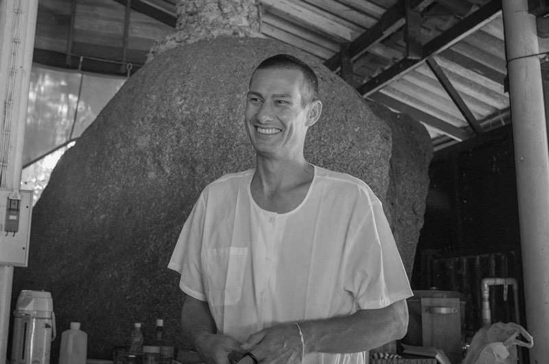

Truly Understanding the Teachings of the Buddha#
Editorial note
This document is available as web (HTML), print (PDF) and e-book (ePub).
It was prepared from the original PDF from 2019 (linked from anthonymarkwell.com), following encouragement by the author (indicated page numbers refer to the 2019 PDF). There was no alteration to the content. Sectioning hierarchy was slightly modified for easier navigation.
Created from the source, git version bc5a7e9, on Dec 15, 2024.
About the book
This book contains the Dhamma talks given by Anthony Markwell, when he was resident teacher at Wat Kow Tahm Insight Meditation Center in Thailand during Vipassana meditation retreats offered by him.
Anthony is teaching the Dhamma in a unique way, comprehensive and interlinked, which allows the reader to get a profound understanding of the teachings of the Buddha.
This book is not only a comprehensive guide to understanding Vipassana meditation but it gives the full background and practical instructions and maps out the way leading to Nirvana – here and now in this very life.
1. Day 0 afternoon: Orientation#
1 Welcome to Wat Kow Tahm insight meditation center. This afternoon we are going to have an orientation talk for our seven day silent meditation retreat. First of all I always like to start the retreat by offering our thanks to Mae Chee Ahmon Pun, our 92 year old nun, that lives here in the monastery and also to Steve and Rosemary Weissmann, who helped develop this meditation center. Over 25 years they taught more than 8000 people here. They developed this whole meditation center. Rosemary and Steve, with some of you may have meditated with, came here when Rosemary was 35. She left a couple of years ago when she was 60. So we always like to thank them for their hard work they’ve done to develop this place. The buildings, the walkways, the gardens, the meditation areas, all the terraces, everything they have carved out of the jungle. So we are really very much appreciative, that we could walk into this place two years ago and everything is set up for us to do meditation retreats here.
Essential to their activities, Mae Chee Ahmon Pun, our nun, has been here for 50 years. We have Mae Chee Nanika, who has been cooking here on every retreat, every month for the last 27 years. So we thank them for their efforts in the work in developing the center and giving us the chance to come and practice here.
Koh Phangan is very famous for its full moon party and its various 2 other parties, but there is another aspect to the island. There is a lot of yoga and other healing types of workshops going on, all types of spiritual activities are going on on the island and many types of meditations from many different traditions.
We offer our retreat here in the hope that Koh Phangan will lead to your spiritual evolution and allowing us to become more useful members of society. Keep that in mind when you’re meditating this week.
This orientation talk is meant to give us some introduction and some additional information as to the purpose of our meditation retreat here. We’ll be talking about the word «meditation». We’ll be talking about a «retreat». We will also go through a few of the guidelines that we like to follow here and also we’ll be having a look at the silence.
I very much and warmly welcome you here. Let’s have a good retreat together.
After I finish this orientation talk, you will have the opportunity to ask questions, that you may have before we enter into the silence.
1.1. Meditation#
First of all, let’s have a look at this word «meditation». What is the meaning of meditation? We use it to refer to training of the mind. To the cultivation and development of particular mental faculties. The faculty of faith and confidence, the faculty of energy, the faculty of mindfulness or awareness, the faculty of concentration and the faculty of wisdom. These five faculties are what we are referring to, when we are talking about meditation. When we are developing meditation, we are developing particular qualities of the mind, that come to increase and grow in strength, which leads us to deep and profound understandings and insights.
So the Buddha’s teaching is often divided into samatha and Vipassana, or calmness meditation and insight meditation. Here we will be practicing satipatthana or the foundations of mindfulness, which leads to both samatha and Vipassana practice. We will be joining them both together. Just like a bird has two wings, we join them together, so we can make the mind stabilize and then we can see things as they really are. We will talk more about the meditation practice later this evening. Satipatthana meditation is all about investigating our own mind and body process. Over the next seven days, we will be attempting to continuously activate our awareness in the present 3 moment. We will be trying to stay in the present moment and internalizing this present moment awareness into our bodies. So we will be in the present, internalized, and we are trying to do this continuously. Try to remember these three words: present moment, internal, continuously. That’s what we are trying to do here on the retreat. We are observing our own mind and body process looking at our body, its physical sensations here and there, looking at our mind, its mental states and its thoughts. We are looking at the pleasantness and unpleasantness that can arise both from physical sensations and mental sensations. We are observing our reactions to things, our liking and our disliking. We will be most interested in observing our identification and appropriation of mental and physical phenomena. Our meditation practice here this week, it’s only about investigating this thing here. We want to understand what this mind and body process is. This is what meditation practice is all about in the Buddha’s teaching. We are investigating it, so that we know it and see it clearly. This is the meaning of Vipassana, to see things clearly. The only thing we need to understand and see clearly is our own mind and body process. The rest of it works itself out. It’s fine just as it is. We do have issues, however, in our mind and body process. So we will be investigating them, primarily to see them as impermanent, to see them as unsatisfactory, relatively, and to see them as non-self, to see them as impersonal. The mind and body process is impermanent, it is unsatisfactory and it is impersonal. It doesn’t belong to anybody, it doesn’t belong to you. Let’s investigate that all for ourselves.
The primary goal of the meditation practice is to remove the sense of self, which is arising continuously in the present moment. Consciously or unconsciously we are appropriating and identifying our sense experience. Things that we see and smell and taste and hear and touch, things that we think about – we are identifying with them. And this continuous process of identification over many years has built up a continuous expression of me and mine, turned it into an I. It has turned into a self. And so this momentary identification with phenomena has crystallized, become more concrete and become a self. It’s become a person, it’s become a personality. So we will be investigating all those things in this retreat, trying to free ourselves from this delusion or this very persistent illusion.
4 Having said that, meditation is neither easy nor difficult, but it does take some patience. It does take some perseverance. You will need to put forth a lot of effort. You will need to be determined and you’ll need to be disciplined. I have spoken to everyone about following the schedule of the retreat, which is designed to keep you continuously practicing. This is the most important part of our meditation retreat. Don’t think that the meditation finishes when I’m ringing the bell and the sitting ends. There are formal walking meditation periods and there are formal sitting meditation periods. The real meditation goes on during the daily activities, when we try to keep our mind in the present moment, keep it from running off into the past and running off into the future, keeping it present, keeping it local, keeping it internalized. If we can do that during the breaks, when we come in here and sit and do our sitting practice, or out on the terraces doing the walking practice, then the mind is going to be able to come together much more efficiently and much more effectively. So please try to be as continuous as possible in your meditation practice.
The Buddha’s meditation practice is not just to make us feel calm and peaceful. It’s much more than that. It’s not about developing psychic powers like telepathy or clairvoyance or clair-audiancy. It’s not about the escaping reality either. Satipatthana meditation is not just a relaxation technique. We are not just trying to be calm and cool and happy. We are not just coming here to bliss ourselves out. The Buddha’s meditation is all about the cessation of dukkha, the cessation of suffering. So that’s what we will be doing here this week.
Our meditation practice is a learning process. We are learning about things. It’s an investigative process not a creative process. We are not creating objects so that we can watch them. We are watching nature. We are observing and investigating nature as it’s arising, when it’s arising in its natural state. We don’t want to be using external objects. There is no need to create an image or object we are going to meditate on. We are using our own mind and body process. That is the object of our meditation. Real things, that are occurring in the present moment. That will give us a clear view or a clear seeing of the nature of reality. If we want to understand reality, we are going to have to investigate just reality. Investigating concepts or stabilizing 5 on concepts doesn’t leave to us understanding the true nature of reality. We need to work with the real objects in real time for us to see things clearly as they are.
So in mindfulness meditation we are not trying to do anything. We are not trying to make anything. We are just watching and waiting and watching and seeing what is happening as it unfolds. We are not wanting anything. We are not expecting anything. We are observing. We’ve bought a ticket to the cinema and we are watching the show. We are not getting involved with the show. We are not jumping up on the stage with the actors in the theater. We are sitting back, reclining in our seat and watching what’s going on. So our meditation practice is hands off. It’s turning our experience of the mind and body process into an objective field of objects that are arising and passing away. We will be using those objects as the foundation for mindfulness. We need to practice simply and continuously. We are not trying to make something happen and we are not resisting anything either. We are not trying to push anything away. We are not trying to make anything disappear. We are not trying to create something. We are being present. We are activating our awareness in the present moment and observing what’s there. You’re not going to an object in trying to be mindful of it. The object has already passed away if we do that. We are activating our awareness, so that we are present, and, we are seeing the object of consciousness. And we are doing that over and over again. Activating our awareness, seeing what is there, stepping back from it, disengaging from it, so that it can pass away.
So we are being in the present, we are just staying in the present moment, being awake and knowing and aware. Don’t forget what is happening now. Don’t allow your mind to go wandering here and there. Don’t allow it to go into the past or into the future. If your awareness is present and if wisdom is also present, then your mind will be free in the present moment. And that’s the state of awareness we are aiming for. We are aiming for freedom in the present moment from our own defilements, from our own afflictions.
We will need to check our attitude on this meditation retreat. Some of you have come here a second time, a third time, a fourth time. We need to check our attitude. Sometimes we have great expectations. Sometimes we 6 really want to get it. We really want to become a meditator, we really want to get this. We can be super enthusiastic. We can be super wanting. We desire to get meditation. We desire to become a meditator. Please check your attitude. Throw this one out! This is not the type of attitude that you need for meditation. Meditation is exactly the opposite of desire. We are letting go of desire. Even of good things, even for success in meditation. You have all made enough effort to arrive here. That is as much desire as you will need to complete the meditation practice. Don’t expect any results. This will create a lot of anxiety and stress in your meditation practice. Just be cool with whatever is arising and passing away in the moment. If it’s unpleasant, it’s unpleasant. If it’s pleasant, it’s pleasant. And there it is and it’s passing away. If we hold on to it, whatever the object is, whatever the emotional state is, whatever the repetitive thought is, then we dukkher ourselves. We create suffering for ourselves by holding and attaching to mental and physical states. When we see things as they really are, the mind naturally disengages from mental and physical phenomena. It’s the key to a happy life. It’s the key to understanding the mind’s reactionary processes. This week we will be talking a lot about the nature and structure of the mind, not only the contents of the mind. You will be able to, if you follow the instructions carefully, observe this for yourself. You will be able to see the structure of your mind and how cause and effect act together. Continuously believing that they are somebody. It’s a very strange situation, that this thing, that came out of our mothers, this mind and body thing, this process has come to believe that it is someone. And this causes a lot of difficulties. When we are not under this false view, when we are not being attacked by this view, then we are free from the sense of self. We have gone back to nature. We’ve returned to our true and a beautiful state of love and compassion, a state of selflessness.
Check the quality of your awareness, if you’re observing the mind. Each time you come to the hall here, check your attitude. When you come in and sit down and you really want to get something, just stop that! Just come in with the attitude of «well, let’s see what happens.» Every sitting is going to be different. This week you will be doing more than 50 sittings. There are going to be some really tough ones. There are going to be some fantastic ones. And there’s going to be a whole lot in the middle. Some of them boring, 7 some of them frustrating, some of them kind of okay, some of them tired, some of them just buzzing and blissful beyond belief, some of them will give you great insights, some of them will give you great frustrations, some of them will just be repeating, repetitive conversations with yourself and your family members, some of them will be silent, some of them will be real meditation, some of them will be thinking. Lots of different sittings this week. Be prepared for them. Meditation is not just completely being blissed out. It’s a lot more work than that but the work is extremely rewarding. The work will lead you to holding the key to releasing your own mind from dukkha.
So we check our attitude. Are you trying to get something? Are you trying to become something? Why are you meditating? Are you coming to the hall to get something? Stop that attitude. That’s the wrong attitude. That’s the attitude of desire.
The present moment is always defined as mind and matter which are arising independent of desire. When the mind and body process no longer want something to be different than it actually is, then we are in the present, right here. If we are always wanting something, if we are always wanting our experience to be different, then we are always projecting into the future. We are never quite here. We are not satisfied with what’s present. We want it to be otherwise. We want it to be different than what it actually is. This is desire to get something, to change something, to become something. That it is not what we are looking for. We want to see it as it actually is. So you need to drop any kind of desire. That wanting is the very mind state that blocks your meditation. You’re blocking your access yourself by wanting things to be different than they actually are.
We don’t want to control the experiencing in any way. Our responsibility is right attitude.
1.2. Retreat#
Secondly let’s have a look at the word retreat. Retreat means a period of seclusion for prayer or study or meditation. Retreat also means a place of security or shelter. All these definitions are given here at Kow Tahm. This is a period of time of meditation, a place of security and shelter from the world. Being isolated from the external world a few days and being with yourself in silence, you really get a chance to have a look at your own mind. For most of 8 us we haven’t been silent for seven days since we came out of our mothers. We’ve always been talking, continuously chattering away. But here is no way to escape our own mind. We’re going to be watching our own mind, our mind states, our reactions, what we like and dislike, our identification with things. Here we only have a chance for listening. There’s no Internet and no books to read and no place to go to. We won’t be able to distract ourself with anything external. We will be paying attention to the present moment and seeing what is in our mind. Meditation is mind training. We are going to put the mind on a leash this week. We try to train it a little bit.
Without these distractions, it’s an excellent opportunity to do our internal work. Usually when we have a problem when we face difficulties, we like to talk about it with others. Here we don’t do that. Here we examine it. We observe it to deal with it wisely on our own. We don’t suppress things and we don’t run away from our mind states. We are patient. There will be frustrating or agitated moments.
There will be moments when you’re thinking, «what am I doing here. Really, what am I doing here?». And you start to loop and think about all the excuses you can find to try and escape. Have a look at those mind states! Here you have to learn how to deal with your own mind. You won’t be able to bounce off your mind state with your partner or friends. You can regard your work as an investigation. There will be unpleasantness. There will be a lot of pleasantness as well. All different mind states are going to be coming up. You shouldn’t regard any of these mind states as a problem for your meditation. Nothing is a problem in your meditation practice! Meditation practice is the removal of the problems! It’s the observing of whatever is there. Every object can be an object of awareness and wisdom. Every object can be noted, known and let go of. We are learning how to function in the world without being disturbed, without creating suffering for ourselves. That’s what the heart of meditation practice is all about. Learning how to deal with issues. And the big issue is internal. Really, there’s nothing wrong with the outside world! Things are as they are. They will be as they will be. What we can do though, is train our mind, train our reactions to the world. It’s our reactions to the external world that creates happiness or unhappiness. If you can see that, you will be the master of your own happiness. Happiness comes from 9 non-reaction. Happiness comes from seeing things as they really are. Happiness comes from contentment with how things are in the moment. When we’re not content with how things are in the moment, we’re not happy. So a lot of our meditation practice, especially in the first two days, will be about practicing patience and contentment. Being content to be here and to do the practice.
Whilst on a retreat, we try not to think about our work or studies. We’re not interested in our family and friends and what they’re doing this week. We are focusing on our own work. Just be present, don’t think about the future, not even next week. A meditation retreat is not a time for you to come and think about your future. That is not meditation. It’s just thinking. It’s just your own imagination. The future is uncertain and doesn’t even exist. The future exists as a thought in your mind in the present moment. Anything to do with the future, is just your mind right now thinking about the future. It doesn’t have any objective reality. It’s just what your imagination is doing. The past is the same. It only comes into existence as a thought arising in the present moment. The past exists as a thought in the present. The future exists as a thought in the present. Past and future have no actual reality beyond your thinking.
On the retreat here you don’t have to use your time organizing or worrying about anything. We will take care of all those things for you. Your job is just to remain present, to note and know and to let go.
In a retreat setting like this, we learn to become aware of whatever’s arising in the present moment. We don’t allow our mind to get scattered here and there. Try to bring it back to the present. If we’ve noticed that we’ve gone into the past or the future, bring it back. Nothing wrong! The mind normally wanders here and there. We don’t get upset, when leaves fall off the tree. That’s what they do! We don’t get upset, when fish go swimming. That’s what they do! The mind wanders. So don’t be upset if your mind doesn’t do what you exactly want it to do. It’s just like a new puppy. You have to train it. So a meditation retreat like this provides the ideal training facility to practice meditation. You can consider this meditation hall as a swimming pool. You spend seven days learning how to swim, learning how to watch your own mind. The real practice comes, however, when you leave this place 10 to see if you can swim in the ocean.
Check your attitude, make sure you don’t expect anything to happen. Sit back and see what does happen! Anything valuable does take time to develop. So don’t worry if it’s not working on the first or second day. Don’t cling to any pleasurable experiences that may happen quickly. Sometimes people get very fast results and then they spend the rest of the days trying to get it back again. Let go of everything that arises whether it’s pleasurable or unpleasurable. If it’s pleasant or painful, just let it go.
We are trying to keep our mind present and stabilize our awareness in presentness. Stabilizing our awareness in the stillness of the present, watching whatever flows through the mind and whatever sensations occur in the body.
We have to adjust to a fairly vigorous daily schedule. You’re going to have to deal with bodily discomfort. You’re going to have to deal with habitual thought patterns. Our job is to observe what is arisen, step back from it, disengage and allow it to be let go of. We are observing things to the point that they are so clearly, that the mind can no longer use it as a base for self. It’s discarded. It only has use when it can be a base for the sense of self. If that object is being used as a sense of me, mine or I, or as a condition for the arising of me, mine or I, then it is still useful for creating that. You’ll be stuck in it. If you can disengage from that, stop identifying with the object, then you’re able to free yourself from the object. The problem doesn’t come from the object, the problem comes from your identification with the object. Your attachment to it! We identify with our own bodies, we identify with many different things and social concepts, that have come to surround us. We are identifying with them. We are creating a sense of self out of them both from internal and external sources. We have built this fine sense of me. The Buddha’s teaching is to allow us to see this illusion, to see the fact that we are actually living in the matrix.
Fortunately for us there is a way out. The Buddha’s teachings is the way to escape from the reality that we are living in.
When you experience various discomforts, you might have trouble understanding what’s going on. You’ll be in your own reactive mind state. Unpleasantness – got to move, got to get out of here. Pleasantness – more, want to stay. That’s how we normally react. 11 We are normally completely conditioned by feeling. The citta sankhara, the mind conditioner. Feeling is conditioning everything. Unpleasant feelings are conditioning thoughts of disliking, which turn into aversion and then anger, pushing things away. Pleasant feelings turning into liking, wanting, desiring, craving, pulling things towards us. Pleasant feelings and unpleasant feelings are conditioning the mind, conditioning our experience.
So we will be examining those feelings states. The state of pleasantness or unpleasantness in the present moment, so that we can free our mind from these states. The states will still be there. There will still be pleasantness or unpleasantness, but you just won’t attach to them anymore. You won’t identify with them anymore, so they won’t cause you any distress, worry or concern. When we stop identifying with them, they will pass away extremely rapidly. If we identify with something, we’re holding it and it stays. When we see something clearly with Vipassana insight, we’ve seen it, it’s let go of and it passes away. Attachment leads to suffering, clear seeing leads to letting go. Our meditation practice is all about letting go. Please adjust your attitude if you’ve come here thinking that meditation is to try and get something. We haven’t come here to get anything. We’re not going to get anything here. There’s nothing here to get and there’s nobody that gets anything. Meditation is the practice of letting go. So please adjust your worldly stats. The way that we normally view the world is to achieve and get stuff. Meditation is exactly the opposite. We are doing as much as we can to let go of things. We are trying to release and relinquish things. I hope you haven’t come here to get something, to get meditation. Here we’ve come to let go of all things. The more you can let go of, the more your mind will stabilize, the more you’ll see in the present moment. As we start to do the meditation practice, we’ll talk about the various objects that need to be let go of in order for us to experience the state of calmness in which real insight can arise.
1.3. Guidelines#
Thirdly, let’s talk a little bit about some guidelines, some rules and regulations that make it comfortable for us to stay here. Don’t regard them as some kind of control. Just try to regard them as conditions. We are putting in place the suitable conditions for the arising of insight. These are agreements 12 to benefit all of us so that we can live harmoniously and peacefully together doing the practice. It’s wonderful when 50 people are in silence living together for a week. You will get to know each other in a certain way, in silence, and it’s wonderful to see each other after the retreat as well.
All of us have a strong commitment to stay here for the full retreat. Be determined to follow all the activities and follow the schedule completely.
Most of us take a lot of interest in our bodies. We like to put nice clothing on and paint it in various ways. Here, we don’t worry too much about that. We don’t need to get dressed up. However, always dress properly, cover your shoulders and your knees, cover your midriff as well. Please don’t lie down anywhere except for your room. Please don’t point your feet towards the speaker or the Buddha in front here.
We ask you to only practice the meditation technique we do here. Those who continuously choose to switch between different techniques, will have created a lot of doubt in their mind. You won’t know what to do from moment to moment. You will be all confused. So please don’t bring that confusion into your meditation practice.
Do your chore with happiness and joy in your mind. You’re giving! You’re giving something to all of us.
1.4. Silence#
Fourthly, I want to talk about silence. Here we are on a silent retreat. Probably the single most important factor for a successful retreat is the maintenance of the silence. Silence is sometimes called the doorway to insight. When we’re silent, we start to observe things more intently. We don’t need to verbalize our thoughts all the time. Our thoughts, instead of being pushed all the time out of the door of our mouth, they bounce around inside. They bounce around so that we can see them more clearly. We’re going to be watching them. Of course, it’s normal to have the impulse to talk. We have been talking all our lives. So it’s normal that we have the wish to talk. Especially when something funny happens, we would like to make a comment about that. Please avoid doing that. Please avoid talking or disturbing your roommate or others. It’s not the time to socialize. We regard all talking here as disturbing. So if you start talking to somebody, you start to disturb them and their meditation practice. A single sentence can sometimes bounce around 13 in the head of a person all day. So please be aware that silence is the real secret to having a good meditation retreat. If you start talking you’re going to ruin it for yourself and for others. It’s very important that we maintain the silence – not just silence of the mind, either. Physical communications, even communications with the eyes. We’re not here to flirt with anyone. You’re not here to get a new boyfriend or girlfriend. Be aware that your behavior can be disturbing to somebody who is trying to meditate. We have all come here to be in silence and to meditate.
You should observe bodily silence as well. Please move around quietly, especially in the meditation hall. And calmly, and slowly. There’s no need for you to rush in and out of the hall. Slowly and mindfully come back to the meditation hall after the walking meditation. There shouldn’t be any gaps in mindfulness between your walking meditation and your sitting meditation. There should be one continuous flow over an hour and a half, 45 minutes each. So try to take the walking and sitting meditation as one unit. Don’t go to the toilet or to fill your water bottle in the middle of the walking meditation. Your meditation will be more successful if you can be continuous.
This is one of the few places in the world where we can come and be in silence, where we don’t have to talk. We can enjoy each others company, we can smile at each other. We’re not saying that you have to be a zombie. Smile and still be pleasant to each other but don’t disturb each other.
If you hear other people continuously talking, tell one of the volunteers. Do not go to them and make «ssshhh». This will cause you a lot of problems for a few days. You will feel awful about what you have done. You start to think about it, «oh, why did I do that. I shouldn’t have done it. What will they think about me.» All kind of thoughts. Every time you see that person, you get an uncomfortable and unpleasant sensation in the body, your mind will feel a little bit embarrassed, you turn away from them, feel uncomfortable. So please don’t do that. It will not be beneficial for your meditation practice.
Of course, if there is any emergencies, you need to talk. If there is a snake going into someone’s room, you need to tell them.
So it’s important that we keep the silence because we understand its value and its benefits. Not only for our meditation practice and our spiritual 14 development and our well-being. It’s not just about the rules. It’s about conditions. It’s all about putting the right conditions in place. All of our meditation instructions are just conditions. We are just telling you things you need to do for your meditation to work. So please try to follow all those instructions. If you follow all the conditions perfectly, then insight is going to unfold naturally for you. In fact, you can’t stop it. When all the conditions are there, it’s going to keep overflowing. Just like when the tap is on and the pot is full, it just keeps overflowing. The condition is water going into the pot, the result is overflowing. If all the conditions are there, the dhamma unfolds naturally by itself. If the conditions are not there, the water is not flowing, it’s impossible for that water to start overflowing the pot. So think about your meditation practice in this way. We are putting conditions in place, the results will completely take care of themselves. In fact, there’s nothing you can do to stop it from unfolding if you put the conditions there. Of course, after the 19th silence will be lifted very early in the morning. At 5.30 in the morning on the 19th.
2. Day 0 evening: Meditation Instructions#
This is our first meditation instructions that we will be giving you this evening. We’ve mentioned that our meditation technique is known as satipatthana bhavana. Satipatthana is made up of two words: sati and patthana. We’re going to have to say much about this word and these practices called sati over the coming days. Its regular translation is mindfulness but we use the word awareness as well interchangeably. Mindfulness and awareness. Its meaning is attentiveness directed to the present moment. When we’re mindful, we are directing our attention to whatever is occurring in the present moment. So we’re directing our attention to the present. We are activating present moment awareness. We are switching it on, we are turning on our mindfulness. Patthana can have two meanings. It means either establishing or arousing. In its passive sense, it means establishing our awareness in the present moment or directing our attention in the present moment on to something, on to a foundation. There are four foundations that we will be talking about. Physical sensations, feelings, emotional states and thoughts – the four foundations on which mindfulness can be directed. Patthana can also have an active meaning. It means arousing. Arousing awareness in the present moment, arousing our attention in the present moment. So satipatthana, that is what our meditation practice is called.
We will be observing and activating our awareness in the present 16 moment on the very fast flowing range of objects. We will be starting with the physical sensations in the body, because they’re a little bit slower, a little bit grosser and easier to see. We will be transitioning in our meditation practice so that we can watch feeling, pleasant and unpleasant and emotional states and our thought patterns as well. Bhavana means mind development, mind cultivation or mind training.
So establishing mindfulness in the present moment on one of the four foundations of mindfulness – that’s what we are doing here this week. And your ability to establish your awareness in the present moment on whatever object is arising will lead you to see that object as it really is. We see things as they really are. And this is what is meant by clear seeing or Vipassana. Vi-passana. Pass means to see. Ana means it is a noun. Vi is an intensifying prefix. We are seeing things really clearly. We are seeing things so well, that the mind disengages, stops identifying with it, stops taking it as me, being for me or happening to me or as mine or as being I and let’s it go. We have clearly seen that object.
So satipatthana is the cause, Vipassana is the result. We establish our awareness in the present moment on one of the four foundations of mindfulness and that allows Vipassana to occur, clear seeing to occur.
And what is it that we’re having insight into? We’re observing not only the contents of our mind, but we’re observing the structure of our mind. We are seeing that all objects arise and pass away, but in particular all objects also have certain particular characteristics. They’re all impermanent, they’re all relatively unsatisfactory, in relation to the unconditioned element and they’re all non-self. They don’t belong to anybody. It’s all impersonal. It’s an impersonal flow that is going on.
When we see the structure of our experience in this way, it allows us to let go of things. The sense of self is let go surely and gradually. Thoughts of me, mine and I become less and eventually this leads to the complete cessation of being. The complete cessation of suffering. And that’s an experience the Buddha called nirvana – that cessation of dukkha.
Tonight, so that we can begin our practice, we have divided our instructions into three parts.
First of all we will be having a look at the practice of virtue, because 17 it’s one of the major conditions that we need to put in place. We will be having a look at our sitting meditation and also our walking meditation. These instructions are for the formal sitting and walking periods. The practice of virtue is all day everyday whilst we’re on the retreat. So be continuous in your mindfulness and practice throughout the day in order for Vipassana knowledge to unfold. As I said this afternoon, these Vipassana insights that arise from satipatthana meditation are conditioned. Conditioned by satipatthana. Conditioned by your ability to maintain your awareness in the present moment, to maintain your awareness internally, and your ability to continuously do this over and over again over a period of time. When these conditions are in place, the results start to flow naturally. As I said, there is nothing you can do to stop them from unfolding naturally in the mind.
2.1. Sila#
The practice of sila or virtue begins with abstaining from unwholesome verbal and physical actions. The most gross of our three intentional doorways we have through body, speech and mind and our virtue practice will be to moderate our verbal actions and our physical actions. Purification of virtue is said by the Buddha to be the base upon which all other meditative practices are based. So if you are sincere in your effort and you wish to have the experience of insight, it is well recommended to you to maintain virtue. Tonight I’m not going to give you a sermon on morality but since the success of your meditation practice is conditioned by the practice of virtue, it’s worth taking note of these things. Of the noble eightfold path, the third, fourth and fifth factors are all concerned with virtue. So three out of eight factors of the noble eightfold path are to do with sila or morality.
The first one is called samma vaca, meaning right speech. Basically we are abstaining or stopping four types of unwholesome speech occurring. Of course in the retreat you’re all in silence. So this one is pretty much covered. For the sake of completeness we avoid telling lies to others. We avoid hard, rude speech to others. We avoid back stabbing others, that means talking about somebody to someone else in the hope that your opinion of that person will be conveyed to another person. The fourth one is gossiping.
The fourth factor of the noble eight fold path, samma kammanta means 18 right action. We abstain from three types of particular actions. We don’t kill anything, we don’t steal anything or take something which has not been given to us and we abstain from sexual misconduct. Sexual misconduct means relations with people that are inappropriate for us to have sexual relations with, whether they are people who are minors, or younger or children, whether they are people who are already in a relationship. Or even the kind of activity like raping somebody. This is all sexual misconduct. Adultery where taking someone’s husband or wife and having sexual relations with them. This is something that is very harmful for the other partner unless they have of course some agreement between themselves.
The fifth factor is samma ajiva or right livelihood. It means earning a living without harming anybody else. Having a right livelihood, having a livelihood which is beneficial for other beings. Specifically we avoid trading in things like guns or poisons or drugs or intoxicants. We try to make sure we don’t sell flesh from animals. We don’t make it to our business to be killing beings or taking unfairly the resources from other beings using them for ourselves or profiting by them for ourselves.
So we are practicing right speech, right action and right livelihood whilst we’re on the retreat here. This is a very firm base on which we can practice our meditation.
Whilst we’re on the retreat here, we will be following what is known as the eight precepts. In the morning we will chant the eight precepts. Basically they are no killing, no stealing, no lying, abstaining from sexual intercourse, abstaining from drugs and alcohol and abstaining from high and luxurious seats and beddings, abstaining from eating in the afternoon and not using any jewelry or flowers or trying to look fancy in any way, not listening to music or watching any shows.
An additional rule is not to speak with contempt about somebody who has already attained the noble eight fold path, somebody who has already become enlightened. You should be careful about this. This can disturb your meditation practice, maybe not in the beginning but later on, if ever you have said something detrimental or something negative about somebody who has become enlightened. You should make an apology – just in your own mind and then forgive yourself for making that mistake. That can clear certain 19 blockages away.
2.2. Sitting meditation#
How do we do the sitting meditation? First of all we’re going to start to have a look at the position. When we’re sitting in meditation we need to try to be as comfortable as possible. We want to be comfortable for at least 45 minutes. That can be quite difficult in the beginning stages. When you’ve sat for a full session, you feel very much invigorated. You feel like you’ve been successful and you will find that you can sit for 45 minutes again and again and again once you have broken through that limit.
What I’m going to show you now is a few of the sitting postures. The most simple of them is just the cross legged position. It’s called sukhasana. Happy posture if you like. The problem with this posture is that all your weight will be distributed on to very small areas around your ankles and on to the sit bones. So after a while it becomes quite painful.
The second posture that we use as well is called the quarter lotus. That’s done by putting your foot up on the calf of the other leg. Normally, we put the left leg under the right leg. But other traditions have other styles. If your legs are not properly stretched, you will find some tension points underneath because there’s not a great deal of flatness.
Then we have what is know as the half lotus. Half lotus is the posture I like to sit in personally. We take the sole of our foot and tuck it into our groin. Nice and close and then you put the sole of your foot on the inside of your thigh. Your leg is kind of turned over a little bit that your anklebone is not even touching the floor. It’s kind of tucked under. All the weight is along this shinbone. So it’s a nice and continuous flat surface that doesn’t have any pressure points.
Another very comfortable posture is the posture that the Burmese monks and nuns like to take. It starts with the same thing, sole running on the inside of this thigh and then instead of putting it up on the thigh, leave it in front. That’s the most comfortable one. The most important thing is that you are flat and comfortable.
Those who want to get the little fancy can try to do the full lotus posture. Quite uncomfortable, quite painful for most people. You can get it 20 going for a few minutes and after that it starts to become uncomfortable. You can try to sit in the shallow water on the beach whilst you’re here on the island. Gravity in the water is a little bit different.
We mentioned this afternoon the numbness in the legs, which can quite often happen if we are leaning over our legs. So make sure that your back is up straight. If you start leaning forward, all the weight will go down on your legs and you start to get numb. If you find that you’re getting a little bit numb, you can try just to leaning back a little bit. For a minute or two you just lean back and take away the weight of your legs. We don’t want to be tense with our back. We are not trying to stretch the head and touch the roof, but we’re not leaning over either. You just want to be with a straight spine up in a row allowing the spine and skeleton to support the weight of the body rather than trying to use your muscles. In that way the breath can flow in and out quite comfortably.
Where do we keep our hands? I like to keep my right hand on top of the left and allow the thumbs to touch a little bit sometimes. If that becomes a little bit too warm for you, you can move your hands and put them half way. You can even spread your fingers a little bit. So they just sit down there in the lap in a comfortable position. Some people like to put their hands on their knees. That’s fine as well. That can be nice and stable as well. Just be careful when you start to put your hands on your knees, it doesn’t make you start leaning forward. And then your legs might become numb and your breathing won’t be flowing as smoothly as it could be. Hands on the knees is fine or even half way down on the thighs as well is fine.
As far as your eyes are concerned, you can keep your eyes open or you can keep them closed or you can do a bit of both. Most people will meditate with their eyes closed. But also meditating with the eyes open is very, very effective. There’s nothing to stop us to come into the present with the eyes open. In fact, as our practice develops, you’ll be meditating with your eyes open more and more. Especially in our daily life, we have our eyes open most of the time when we are awake. So you can start keeping your eyes open, but eventually they will close down when you become more and more concentrated. – Just lightly close your eyes. As beginners, we often want to see things with our eyes in the meditation, however, meditation is not carried 21 out by the eyes. It’s carried out by the mind. We are trying to see with the mind. – Try to let the eyes go. I know it’s a place where consciousness very often arises. It arises at the eye door. It arises at the ear door. Continuously, over and over again. Consciousness is used to being in these areas of the body process. – So in our practice, we try to resist the urge to use the eyes all the time in our meditation.
That’s the preliminary instruction. You’re setting yourself up, the posture. We want to be able to maintain this sitting for at least 45 minutes. If during the sitting, it becomes extremely painful, of course, you can move your legs a little bit. When I started to sit in meditation, it was extremely painful. I started by lightening an incense stick which burns for 45 minutes. I started sitting for 15 minutes cross legged, and then I moved by putting my leg on the side, and do that for another 15 minutes, and then when that became too painful I put my legs to the other side. And that was the first few months of my meditation practice.
If you find that it is really, really uncomfortable, just stand up. You can stand up for a few minutes and then sit back down again. Just because you are changing postures from sitting to standing to sitting, it doesn’t mean that your meditation has to stop at all. Your meditation can continue in the present moment as you change your body.
We learn to meditate by sitting as still as possible because it’s easier. Once you have the hang on it, we don’t need to meditate in a still sitting position. We can meditate throughout the day in anyone of the four postures, walking, standing, sitting, lying down, and in fact, in any of the other postures we get the body in when we’re doing other activities.
2.3. First stage: Internalizing awareness – letting go of past and future#
So let’s have a look at our sitting meditation now with the first step. We have established our body, found a comfortable position to sit in. What’s the first thing we do? We start paying attention to the present moment. This is the beginning of our mind development. We are gathering the mind into the present moment. It likes to wander into the past and future. We are just bringing it back and internalizing our awareness. We do this continuously 22 the first few moments of our meditation sitting. The first minute, at least, this should be your only object. Don’t come into the hall and start immediately watching your breath. You need to establish your awareness in the present moment and you need to internalize your awareness. So our first step is continuously directing the mind to the now. And just hold it with that as the object now. Just being aware of now. Present. Present. Just keep directing the mind bringing it into the center. Again and again. If it wanders off, don’t be upset. We just bring it back and start again. Be aware when thoughts arise of the past – memory, or of the future – planning, and bring yourself back into the present. If your mind goes into the past or future, stop it quickly. Be aware and alert that you’ve just exited meditation and you’re just sitting on the floor in a hall on a mountain, no longer meditating. You’re engaging in your thoughts. You’re no longer present, you’re no longer here. So bring yourself back to the present. Many will find that this is a major part of their meditation practice for the first few days that they are here. – This is the first stage in letting go. We are letting go of the past and future, we are coming into the present.
2.4. Second stage: Feeling body sensation – letting go of the body#
Once you’ve been able to do that, then we direct our attention internally. We direct this present moment awareness, we have established in the first minute and bring it inside. We climb inside the body. We direct our awareness to become aware of the whole body as it is sitting on our mat. Do you become aware of how it feels like? What does the sensation of a whole body feel like? Bring your mind in, be actually inside your body. Climb inside it. If you can’t catch the whole body posture of sitting at once, start at the top and know what the top half of your body feels like and then become aware of the bottom half of the body. Become aware if there is something sitting on the mat. There is something sitting on the mat and it’s breathing! So climb inside and feel what it’s like to actually have that sensation of a whole body sitting there. Start from the top, work your way down. You can even move through your body, if that helps. We’re directing our attention to the sensation of the whole mass of the body as it is sitting there.
23 How do you know that you have a body when your eyes are closed? How do you know it’s there? Just examining that. Can you feel that there is something sitting on the mat? You can’t see it when your eyes are closed and you can’t smell it and you’ve stopped thinking about it. Conceptually you can create an image of your body in your mind, so you can perceive the body. We can perceive the body through the eye door. We can perceive the body through the mind door as a concept. We can even smell the body. We can hear it, making sounds. So there’s many different ways to perceive the body. But what we are interested in here, is perceiving the body through the body door itself. Through the skin! Through the internal sensations of the whole thing. We are not looking at the body, we are not hearing the body, smelling or even licking the body. We want to experience the body through the sense door of touch.
So this is the second object of our meditation practice. And we do this for the second minute of each sitting. Some people will experience the sensation of the body as being all around them. Some people will have the experience being aware of the body from some viewpoint up on the shoulders somewhere. We are not trying to picture the body, to create a mind image of the body, of what you think the body looks like when you’re sitting on the mat. That’s not the object we’re doing here. The object is just the sensation of the whole thing as it’s sitting here. It’s a very subtle physical sensation. You can move your mind in and out, up and down. You can move it, you can feel it. This sensation is there. We are observing the whole body.
First, we let go of the past and the future and we stick with the present. Secondly, we let go of the external world and we are focusing on the internal world. This is the second stage of letting go. Our meditation practice is letting go only. How far, how much can you let go of in the present moment. If you’re noticing and identifying that you are attaching with something, let it go. Our practice is only about letting go. The Buddha’s teaching is only about letting go. Letting go of the idea that you have a personality, that you are a self. In fact, enlightenment takes place, when you have completely let go of the sense of self. That is what we are aiming for. First we’re going to let go of the past and future, we are going to let go of the external world, and then we’re going to start to let go of the physical body. And then we are 24 going to let go of the mental states as well. When we have let go of everything, when there’s nothing left to let go of, the mind experiences that which is beyond conditioned realm. It experiences the unconditioned.
2.5. Third stage: Using the breath to maintain awareness#
The third stage of our meditation practice is to start paying attention to the breath. We start to become aware that the breath is flowing in through the nostrils, down through the body to the abdomen. The breath is flowing in and the breath is flowing out. We are going to use the breath, that occurs many times a minute, 12 times in and 12 times out, if you are a regular breather. Sometimes it’s faster, sometimes it’s slower. We are going to be using this flow of the breath as a concept to maintain awareness in the present moment. We are using the breath! As a conceptual structure to maintain our awareness in the present moment. What we are really looking to paying attention to, though, is the physical sensations that are created by the breath that flows in and out of the body. This practice is called chatu dhatu bhavana manasikara, which means paying attention to the four elements. The four elements is what makes up this body. This physical mass that is sitting here, it’s a combination of six elements, actually. We are going to use four of them for our meditation practice in the beginning days. We can cover the other elements later. So what we are directing our attention to is the physical sensations created by four of those elements. We normally just refer to them in English as earth, water, fire and air.
2.6. The four elements#
The body is made up of these four physical elements. Don’t take those words literally. Don’t think of a handful of earth, a glass of water, or a mouth full of breath. That’s not what we are talking about here. This is very different from what those words mean. So don’t get lost in the translation.
All along the breath path, as the breath flows in and as the breath flows out, various physical sensations will take place. Some of the sensations will be around the nose area, some of them will be around the throat area, or around the heart area, some of them will be down in the abdomen. It’s possible to feel the breath right up through the head and right away through 25 the body down to the legs. The anatomists and physiologist tell us, that the breath is coming from the nose into the lungs and it does come out again without going any further than the lungs. That may well be true. What we’re actually interested in, however, is the sensations created by the breath as it flows in and out. And the physical sensations go further than the lungs. The physical sensations flow right away through the body. In fact, when your lungs expand, your diaphragm gets pushed down and your stomach moves out. So the oxygen exchange is happening in the lungs. The physical sensations that the breath creates are happening throughout the body. And this is our main object of meditation in the first days of practice. The physical sensations that are created by the breath.
These physical sensations are the characteristics of the four elements. They are the manifestation of the four elements. Those four elements in Pali are pruṭhavī, āpa, teja and vāyu. Earth, water, fire and air. We can think about them in various ways.
The earth element is really the element of extension. It’s the element of solidity. Anything that is solid within this mind and body process sitting here, whether the bones or flesh or the ligaments or the skin, they’re all solid things. There is a certain solidity to our body. It’s a base. It’s something real. My one weighs about 90 kg at the moment. It’s a solid mass of stuff. This is just a foundation for the other elements to play in.
There is also the fire element. The fire element is just the element of temperature. This body does have a temperature aspect to it. 37 or 38°. Sometimes it feels very warm, sometimes it feels very cold which may be just a temperature fluctuation of half a degree or so. But the fact that this thing has any temperature aspect to it at all, means that the fire element is there.
There is also the air element which manifests in many different ways. It manifests as the breath and it manifests in other various ways as well. As pressures and tensions, tingling and vibrations. The air element is flowing throughout the body. The air element is not restricting itself to the nose, the lungs and back again. It’s the energies that flow throughout the body. Different traditions will have different names for 26 the air element. In the Chinese tradition it’s known as chi. In the Indian tradition it’s known as prana. In this Pali tradition it’s referred to as vāyu . This is the element of forces. There are those various forces that are happening in the body. It’s the air element that activates the body and moves it from here and there. The solidity and the fire get pushed around by the air element combining together.
These three elements would be completely separate from each other, if there wasn’t for the water element. The water element is the element that combines these things together. The solid base, the temperature and the energies and forces, that are moving throughout the body, are all held together into a unit, compacted into a body that we call mine, my body. So the water element is cohesive. Now just imagine when you are making some bread, you put some flour which is a powder, some salt which is a powder, some yeast which is a powder in a metal bowl and spin them around. So these three ingredients are there but they’re just powder in a bowl. As soon as you start to add some water to it, it starts to come together to a dough, into a solid mass. Well, this is what our body is. It’s a combination of the earth element, the fire element, the air element and the water element.
There’s also the space element, akasa. It’s also there. It’s very subtle. It’s a different type of meditation practice, but it’s there. We are concentrating on the four elements when we are investigating the body.
These four elements can manifest in different ways. They manifest as different physical sensations. An element can either be strong or weak and they are always fluctuating, always flowing.
If the fire element becomes stronger, then the body becomes warm. If the fire element and gets weak, then the body becomes cool. There’s a sensation of coldness. The fire element has a weak aspect and a strong aspect. The other elements are the same as well.
If the earth element manifests in a strong way, it will be manifesting as hardness, roughness and heaviness. It’s like your teeth are hard and solid. Your fingernails are hard and solid. There’s kind of a roughness if you run your hand through your hair if your hair is short. The earth element can also manifest in a weak manner. It can manifest as softness, smoothness and 27 lightness. Touch your lips with your tongue. There is softness there. The earth element has two aspects to it. It can be either weak or strong. How its characteristics are manifesting, will give you different physical sensations. Hardness, roughness, heaviness, softness, smoothness, lightness. The same thing, they are all the earth element and they will be manifesting in your body continuously. Sometimes the body feels hard, sometimes it feels soft, sometimes it feels very heavy, sometimes it feels very light. It’s the earth element playing around.
The air element, which we will be focusing on a lot this week, the breath in particular as it flows in and out and the abdomen as it rises and falls, displays many different physical sensations. If the breath is fast, then the physical sensations will be pushing and pressure and resistance. If the breath is long and smooth and calm, you will get those smooth and comfortable sensations. You’ll feel gliding, you’ll feel flowing. So depending on how you are breathing, different physical sensations will start to manifest. When the air element manifests at full strength, it will appear as forces rising up, from near the buttocks’ area and forcing up your back. Pushing, supporting your whole back. You feel the energy keeping the body erect. If it wasn’t for that air element, the body would just collapse on the floor. It’s the air element constantly flowing up through the back around and up. It’s consistently flowing. Our arms extending and bending, it’s all the air element.
We’ll be watching out for these physical sensations as our meditation unfolds. In fact, this is the main object of our meditation practice. To become aware, to fully understand, to clearly see the physical body. The physical body needs to be let go of. We’ve been attaching and identifying with it too long already. It has caused a lot of troubles when we attach and identify with the body. So this meditation is to allow us to see the body as it really is. We see the nature of the body and will be able to let go the body. Letting go means not identifying with the body.
Our meditation practice will transition. We will start to use the breath. It flows in and it flows out. This is a conceptual framework that we follow. What we are really interested in, however, are the physical sensations created by the breath. I want you to pay particular attention to three areas as the breath is flowing in and flowing out. In particular I want you to pay 28 attention to the nostril area, the area around the upper lip. Can you feel the breath flowing in? Is there a physical sensation of touching? Can you feel the warmth as it comes out, the coolness as it goes in? Can you feel the vibration that is occurring? Vibrating, it’s the air element. Warmth or coolness, that’s the fire element. Touching sensation, that’s the earth element. Can you feel it flowing down through the body? So we are following it all through the body. We are really only interested in the physical sensations created by the breath. We are not interested in the images or little maps, that you create for yourself of the body.
As it flows down to the chest, you feel some rubbing or some gliding. And then I want you all to pay particular attention to the abdomen as it rises and falls. You breathe in, the abdomen rises. There’s a certain physical sensations that occurs there. As the abdomen falls, there’s a certain physical sensation as well. In fact, there are many different physical sensations. Pushing, twisting, pressure, vibration, tingling, throbbing. All those sensations are there for you to pay attention to.
These physical sensations are not the four elements themselves. These physical sensations are the manifestation of the four elements. We are going to be bringing ourselves into the present moment, internalizing our awareness, then we start paying attention to the breath as it flows from the nose to the abdomen, and from the abdomen to the nose. We are using this concept of the breath to get in touch with the physical sensations. And we’re going to do this continuously over and over again.
We can give you an example of the type of knowledge that arises when we start to watch this way. First of all we are looking at a conceptual thing. And then we are looking at physical sensations. And then we will breakthrough and we will see the actual elements themselves. But this doesn’t happen automatically. We will give you an example of the car down there in the carpark. If someone was to ask you, «so what is it that is sitting there in the carpark?» Our first reaction is, «it’s a pick-up, or it’s a Toyota or it’s a car.» That is a conceptual answer. Yes, there is a general thing there that we call a car. If we look a little bit closer, however, we will start to see actually, what we call car is just a conceptual idea. It’s actually made up of car parts. As we try to describe what it is, «well, there is some wheels, there is some 29 doors, there’s a bonnet, there’s a tailgate, there’s an engine». It’s actually not a car that is sitting there. It’s just an arrangement of car parts. Parts have been arranged in a particular way and so it produces this image of car. That’s what we are normally used to dealing with – concepts! We don’t normally deal with ultimate realities. If they keep asking you, «well, what’s really there?» What is really in the carpark? When you really examine what is sitting there in the carpark, you will find out it is just metal, just glass, rubber and plastic. You will see the car in that way. So our perceptions can change in the way that we see things. We are used to see the body as a conceptual thing. As being my body. We are going to start to have a look at it a little bit more closely. We will start to observe, okay, let’s make our mind present, let’s internalize our awareness, and let’s really have a good look and see and find out what this body is. We come to an understanding of the four elements by going through the physical sensations created by the breath. The breath sensations contain all the four elements. The elements change and the way that we can perceive their change is through the physical sensations that make up the body. In fact, the body is nothing other than these physical sensations and our concepts that we paint on top of it. So that’s what is actually happening in real-time. There is the real things, your physical sensations created by the four elements and then there is what you paint on top. Your conceptual notions of yourself, what you believe you are. Whether you believe it’s a man or a woman, or it believes it’s this nationality or that nationality. Whether it believes, it’s a smart person or a stupid person. Whether it believes it’s rich or poor. Funny or serious. It’s painted all these different things on top of it. We’re going to strip off all those concepts that you painted on yourself and we just want to have a look and see actually what the body is. And this is what our meditation practice starts with.
In order for us to break through and really see these elements as they really are, we will need to pay attention continuously to the present moment. Being able to pay attention to the present moment, means we need an object which is continuously there. The breath is such an object. It arises, stays for a while and ceases. So when we begin practicing mindfulness of breathing, we are aware of the breath as it comes in, and we are aware of the breath as it goes out. We are aware at the beginning of the breath, we are aware of the 30 breath as it flows, we are aware of the breath as it finishes. Three things to pay attention to. When it first starts, as it continues and when it finishes. And then there’s a little gap. And then it starts, continues and finishes. And then there’s a little gap. You can pay attention to all of those things.
There are many advantages of watching the abdomen rising and falling. Make an effort to follow the breath down, and follow the breath up. We will do this for the first day of our meditation practice. Keeping ourselves in the present, keeping ourselves internally, following this concept of a breath coming in and out. If we can follow the breath in and out, make the mind continuous, then it starts to stabilize. It starts to concentrate. The concentrated mind allows us to see beyond the physical sensations. We really see the elements themselves. And that is something that you will breakthrough in time. But you will need to be continuous. Continuity is the secret of success in meditation practice.
In the old days, they used to make fire by rubbing two sticks together. If you try to rub two sticks together, you can do it for 10 minutes and stop for five minutes and do it again for 10 minutes. If you do that, you will get very tired and there will be no smoke or even flame, even any kind of fire produced. Because when you’re working and stop, it cools down again. You work and it cools down again. Just stopping and starting. Our meditation practice is exactly the same. You will need to be continuous in your efforts and then eventually you will make some fire. If you can be continues for half an hour, you will be able to make fire. If you start for five minutes and stop for five minutes, you can do that for 30 years and you still never get a fire! The stop and start method doesn’t work, it doesn’t produce any fire. Even after many, many years of practicing. But after just 30 minutes of continuous application, it starts! So continuity is the secret of meditation practice. You will need to resist any urge that the mind has for going at delighting in some kind of objects. Delighting in the past, in the future, in the present at the sense doors. That is when the mind is going out, that is when the sticks have stopped rubbing. To reactivate your sticks, bring your mind back into the present moment and internalize your awareness. Notice every time your mind wanders away from the breath and bring it back as quickly as you can. Do not entertain any thoughts. Do not entertain, «oh, I should be meditating. 31 I just want to think this story out a little bit. Just let that think a little bit and then I will do my meditation.» That is wasting your time here! And this is precious time! Only seven days that we can practice with full intensity.
So please try to maintain your awareness of the breath continuously as it is flowing in and out. We are paying attention right at the beginning.
In fact, you can follow it all the way through and at the end of the inbreath, you can just say, «now», if you want to. Bring yourself back to the present. At the end of every out-breath you can bring yourself back to the present. You can do this over and over again. Be aware it is starting, finishing, now. Exiting, finishing, now. You keep bringing yourself back into the present moment, observing what is exactly there. Not what you’re imaging to be there, not what you like to be there but just seeing what is there over and over again. We are training the mind. We are narrowing the place where we allow it to run. We allow it to run just into certain objects, certain places. We are following the breath as continuously as we can, noting when it goes in, we know that it’s going in. When it’s coming out, we know that it’s coming out. If we notice any physical sensations as we are following the breath, we pay attention to them. We can make a little note of them. ’In, out’, if you feel the expansion in your chest, make a little note to yourself ‘expanding’. If you feel the pushing, make a note to yourself ‘pushing’. This is the real life experience that you are experiencing. This is the real thing. There is actually a physical sensation taking place in the present moment. This is what we want to come to understand. We want to put ourselves in a position, where we can watch so clearly and so closely the present moment, that whatever physical sensation arises, we know it. We know exactly what it is and we see it clearly for what it is. In this way we won’t attach to the body. We will be able to let go of the body.
Normally, the elements will be nicely balanced. 25, 25, 25, 25%. Occasionally one of the elements will become unbalanced. The earth element will become 40%, the other three will be 20, 20, 20%. At that time you will feel that the body becomes hard. There will be some hardness there. So the whole body is becoming hard. Maybe the fire element becomes unbalanced. You will feel warmth. So the four elements are always adjusting in ratios and the four elements are manifesting in the present moment as sensations in your 32 body according to those ratios. We want to come to understand those physical sensations.
We are going to follow the breath that comes in. When it finishes, we know that it’s finished. This is very important. As soon as one breath finishes, tick the box, done. And then follow the next breath. One by one. We don’t want to get ahead of ourselves. We don’t want to be thinking, «I’m going to meditate for two hours now. I’m going to watch the breath, every single one or even for the next 45 minutes». Just try to do it for that breath, that’s occurring right now. Just follow one breath successful, and then follow another breath. Successful of one, follow another breath. Until you start to follow the breath more closely. In the beginning stages it’s all over the place. The breath will be coming in and out, in and out, your mind will be catching it and then wandering away. Try to come back again. Your awareness is not going to be able to follow it, but eventually, you will start following it a little bit. You come back again, lose it. And then, oh, you’ve latched on. You’ve come into the breath a little bit. Your awareness is starting to become internalized with the breath. You’re getting closer and closer to it. You’re coming inside the body. You are starting to experience the inside nature of the body. So different breath, different physical sensations. Short breath – hard punchiness, long breath – smooth and gliding. You can make a note of this phenomena. You can start to understand that the time to breath in, short breath or long breath, will cause different physical sensations. You can start to see that there is some cause and effect happening here in the present moment. You can start to see that the breath is conditioning the body. There is some conditioning going on. It is not so important to pay attention to this now, but if it starts to become clear to you, make a note of that. There is cause and effect happening between the body and the breath. Cause and effect happening between the breath and the mind as well. All three are linked together. Physical sensations, breath and mind. They’re all adjusting. One is the cause, one is effect. Changing and swapping positions who is causing, and who is affecting who. The mind and body process continues to go on day and night. The breath continues to flow in and out regardless of what you think, regardless of who you are. The four elements are the same. Your four elements are the same as my four elements. The same as the four 33 elements outside. The internal elements are the same as the external four elements. This body is just a physical manifestation of your mind state. We will talk about that later as well.
So become aware of just following the breath. I want you to try to follow the breath as closely as you can. From beginning until end. From beginning until end. We follow them from the nose tip, paying attention to the touching sensation. We follow it down to the abdomen. I want you all to follow and chase the breath in and out. If you find that one place is more comfortable than another to watch, especially I want you to be aware of the rising and falling of the abdomen, if you want to watch the breath just there or if you want to watch the breath just at the nose, you can do that for a little bit. See which one feels more comfortable. But try to follow it in and out the whole way and keep your attention and awareness continuously in the present moment. And then the characteristics of those four elements will start to become clearer and clearer. They will only become clear if you have been able to watch the breath, let’s say for five or 10 minutes. We start to be able to continuously watch the breath over and over again without missing and these physical sensations come to life. They start to display themselves quite clearly and then you’ll break through. Instead of seeing a car or car parts, you will break through and you will see metal, plastic, glass and rubber. You will see the actual reality behind the concept of car, behind the concept of breathing, behind the concept of body. You will see actually what is there. And it will surprise you. It will shock you. It will amaze you, that the mind can actually know the body in such away.
In fact, it has been able to do it for a long time already. We just haven’t trained the mind to do that in our societies. We don’t train the mind in this way. We are not taught to observe to look inside the body. Most of our knowledge in our sciences comes from observing things through the eyeball. Whether it’s the external world or whether it’s the body itself. We look through microscopes. Our knowledge arises through the eye door. We see things and then we think about it, and then we develop some theories and it becomes knowledge. It becomes truth. But all this information only comes into through the eye-door. We will be experiencing the body in a very different way that physiologists don’t experience, that anatomists, the 34 doctors don’t experience. Doctors have been trained to examine the body through their eye-door. They have a vast knowledge of the body, that they have managed to accumulate through the eye-door. The eye-door leads to certain kinds of knowledge and types of information but it doesn’t lead to wisdom in that way. Of course, wisdom arises when we notice and know and let go at the eye-door. But that is not what the scientists have done. So we are going to observe the body in a radically different way than scientists observe the body. We’re not interested in looking at protons, neutrons and electrons. We’re not interested in looking at bone marrow. We are not interested in looking at amino acids. All these things have been investigated for a long time and nobody got enlightened from doing so. That’s because they’ve been observing through the eye-door. We’re going to be using the mind door to investigate the body. The first stage is to become aware of the whole body as it is sitting in its posture.
So when we come into the room, we establish our awareness in the present and then we climb inside. So we are deep inside the body and we are watching the breath as it flows in and flows out. Gliding in and gliding out. We are doing that over and over again. This will give us some knowledge about the nature of the mind and body process.
So we have been talking about sitting meditation. This will be enough for us to get started tomorrow morning when we hit the mat at 4:30.
2.7. Walking meditation#
I also want to talk about our walking meditation. In fact, let’s all stand up and as you are standing up there, just bring your awareness into the present moment and become aware of the whole body as it is standing there on the mat. See if you can just become aware of the physical sensations on standing. Close your eyes. How do you know that you have a body? Don’t think about it, experience it. Experience the body with the body. Know the body. Put your mind into your left foot. Now put your mind into your right foot. See if you can swap your mind from the left foot to the right foot. How does it feel like? Is there a different physical sensation when the mind is in the foot as when the mind is not in the foot? Can you experience your mind, your awareness, your consciousness jumping from one foot to the other? Do 35 you feel the physical sensations of softness when you are standing on a mat? There are two objects very present. There is the standing posture, that’s one object. And then there is the touching sensation of your feet on the mat. This is standing. Standing and touching. Left foot touching, standing posture, right foot touching, standing posture.
You can move back and forth. If you need to stand up during the meditation practice, you can stand up and become aware of the hole standing posture. You can become aware of the touching sensation of the feet on the mat. You can move your consciousness from your nose, down to your abdomen. Move your mind around inside your body.
We always start our walking meditation with the standing posture. That’s how we start. We become aware, bring our mind into the present, we climb inside the body. We become aware of the whole thing that’s standing there. There is something standing there. It’s breathing. It’s got holes in the side of its head, it hears stuff. It’s got eyes in the front of its head, it sees stuff. Smelling and tasting go on as well. There’s something there. It thinks about itself a lot. In fact, that’s all it thinks about. Its favorite subject, me. It’s been all its day and all its night thinking about its past and future. It’s completely and totally obsessed with itself. But now it’s just standing. Just standing. – Okay, you can sit down now.
During the retreat we are going to alternate between walking and sitting meditation. We do 45 minutes of walking meditation and do 45 minutes of sitting meditation. As I said before, try to join these two sessions together. Try to make them into an hour and a half. One continuous session if possible. When the formal walking meditation takes place, we try to find a place where we can walk from one place to another. We’re walking from A to B, 15 paces long. 10, 15, 20 as space permits. We’re walking from one place to another place, turning around, and walking back again. We are all going to choose a place where we are going to do this for the week. Some of you like to walk in the meditation hall here. That’s possible. There is also places to walk around the Buddha hall. You can walk around the outside of the Buddha hall or you can walk inside the Buddha hall. You can also walk on these sandy areas. You can also use the yoga hall for your walking meditation practice. Find a place where you won’t be disturbed. Many people tell 36 me that they get disturbed by other people walking around them. Find a place where you can lower your eyes and pay attention to your walking meditation. It should be between 10 and 20 steps long. More than this will make your mind wander. Try to keep it to a back-and-forth process. Walking around a circle sometimes just leads the mind wandering and then you end up with a body just walking around and a mind a million miles away.
Just like in the sitting meditation, where the breath is used as concept for maintaining our awareness in the present moment, we are going to be using the steps of the body to lead us to the physical sensations in the body. What I mean by that is, in the sitting meditation, we are using the breath as a concept, in, out, in, out. If we can do that continuously, we start to become aware of the physical sensations in the body. We are using a concept to get back to real objects, the physical body sensations.
We are going to use the walking meditation to do exactly the same thing. In the beginning stages, you can just use two steps. ‘Lifting, placing, lifting, placing’. This is a concept. The foot lifts up and the foot gets placed down. We are walking back and forth. We’re becoming aware of the beginning of the step and the end of the step. Beginning of the step and the end of the step. If we can put our mind into our feet and can follow along with this, the physical sensations in the body will start to become clearer to us.
You can start by doing the two stage walking meditation or we can start by doing the three stage walking meditation. Up to you! We will explain all of them in a few moments. We can also do the one stage walking meditation. Most of the time we will do, what we call the four stage walking meditation practice. ‘Lifting, raising, moving, placing’.
The physical sensations that are produced in the feet, are our object in this meditation practice. This is the most important thing that we’re paying attention to. We’re keeping our mind in the present moment. We’re keeping our mind internally. We are using a conceptual framework to maintain our awareness in the present moment and we are noting and knowing exactly what is going on. At this stage of practice, just the physical sensations produced by walking. They’re all there. All four elements will be manifesting themselves in the feet.
First you become aware of the standing posture. You stand completely 37 still and bring yourself into the present moment and become aware that the whole body is standing and that the feet are touching the floor. In the walking meditation we don’t need to pay attention to the breath. We are paying attention to the present moment physical sensations that are occurring in the feet while we’re moving the feet.
‘Lifting, raising, moving, placing’. You can use these words if they’re helpful to you. The most important thing about the walking meditation is keeping your mind in your feet. Just like in the sitting practice, we are keeping the mind following the breath. In the walking practice, we must keep our mind inside our feet. Specifically, try to keep your awareness on the sole of your foot that is moving. We want to keep our mind in the moving foot at all times. We’re not just walking around with our minds traveling here and there. We are keeping our mind just in the part of the foot that is moving.
I want you to pay particular attention to the beginning and end of each of these movements. You start to lift and it’s finished. Moving – it’s finished. Placing – finished. Each of these stages comes to an end. It starts and it finishes. There’s a present moment event taking place. It starts and it finishes. And then the new event takes place. It starts and finishes. The moment is arising and passing away. Nothing else continues on from that moment. It’s finished. It’s finished. Things are passing away continuously. So pay attention to this, keep your mind in your feet during the walking meditation.
Where do we keep our eyes? Our eyes in our walking meditation should be lowered. We want to keep our eyes looking at about two meters in front of us. We have our eyes closed a little bit. We don’t want to be in complete darkness – you can try that as well, it’s very effective. But we don’t want to have our eyes open so that we can look at other people. We are not going to spend our time looking at other peoples’ bodies. We are not going to walk around looking at the trees or looking at insects or creatures that we’ve never seen before. There is lots of things to look at. But looking doesn’t lead to meditation practice. We want to keep our awareness inside the body as much as we possibly can. We’re not allowing the mind to run out through our eyes. We are keeping all our energy packaged within the body. We are not looking at anybody. If you hear some sound, don’t go following and try to chase it. Don’t go out trying to identify what that sound is. Is that a car or 38 a motor bike? We are not interested in what the sound is. We just note that some hearing occurred and it’s gone. That’s it. You hear a dog bark and then all the stuff you paint on top of that can be minutes’ worth of nonsense. Just from one noise, one sound – hearing occurring. Hearing is very natural. You have holes in your head. There is sounds outside. Hearing occurs. It doesn’t belong to anyone. There’s nobody there that’s hearing. It’s a natural process. Seeing is the same. There’s nobody who sees anything. But the sensitive matter in your eyeballs can detect light and forms, they are out there, it’s functioning, they’re coming together, seeing is occurring. There’s no person there that needs to be a seer. It’s all natural. An impersonal process. Hearing takes place. Seeing takes place. So in our walking meditation this can be very distracting.
So we try to keep our heads lowered, keep our eyes focused on the ground, we are not looking at other people, we hear some sounds, we just disregard it – okay, hearing occurred, finished, no longer interested in.
A good position for our hands in the walking meditation is just in front. Some people like to keep their hands behind. That’s fine as well. You can keep your hands still at the side. So we want to be as still as possible except for the moving parts that we’re paying attention to. The lifting, moving, placing. So the most important thing is to keep your mind inside your feet while you’re doing it.
Some people become frustrated with the walking meditation. They think it’s not working. When I ask them where their mind is, they say, «what do you mean?» You can’t follow the breath unless your mind is following the breath. You can’t do the walking meditation unless your mind is in your feet. This is where we see the sensations taking place. There is all kinds of sensations happening in the foot. As we lift the foot up, there is one type of sensation. We push the foot forward, there’s another type of sensation. As we place the foot down, there’s another type of sensation. In fact, there is five or six different sensations in each one. Lightness, vibration, softness, pushing, hardness – all there. You can feel them as you do the practice and it will start to unfold.
To give you a demonstration: We stand, we start, bringing ourselves into the present moment, bringing ourselves internal, establish our awareness 39 in the feet, left side, right side, left side, right side, lower the head, open the eyes a little bit so that the light comes in, make a note ‘seeing’ is occurring, and then when you lift your heel have your mind really right in your foot, ‘lifting’, stops, ‘moving’, stops, ‘placing’, stops. It’s really, really important that you have gaps between these three stages. There needs to be a definite stop. There needs to be a lifting. Stop. ‘Moving’. Stop. ‘Placing’. Stop. ‘Standing, standing’. Bring yourself into the full body again. And then when you turn around, ‘lifting, turning, placing’. You’re coming into still again. Standing is taking place. ‘Standing, standing’. And off you go again. 10 steps or 15 steps, back-and-forth, keeping your mind in the present moment, keeping your mind inside the body.
Looking out for physical sensations as they are arising and passing away. The most important thing, keep your mind in the present, keep your mind internal, keep your mind in your feet, when you are doing the walking meditation practice. Make sure there are gaps between the three stages of the walking practice. You need to be able to see the arising and passing. Arising and passing. Arising and passing. Doing a step as you normally walk, there is no breakup. There is no arising and passing away. The sensations will be shifting and changing too rapidly for your mind to be able to catch up to them. So we need to slow down with the walking meditation. We are walking relatively slowly. In particular, the last 20 or 30 minutes of the walking meditation should be much slower than the first 10 or 15 minutes. The first 10 or 15 minutes you establish some rhythm. You should try to be continuous in the rhythm like a watch. ‘Lifting, moving, placing, lifting, moving, placing, lifting, moving, placing, lifting, moving, placing, lifting, moving, placing’. So the mind gets a bit into a rhythm and starts to become aware and contained in itself.
In the beginning stages you will find it quite boring. You won’t be making much sense of it. But once it starts to work, it really works well. For many newcomers to meditation, walking meditation gives them the results before the sitting meditation. So don’t think that the walking meditation is somehow secondary. Many people had some wonderful, deep and profound insights, life changing insights on the walking path in this monastery. Just by walking and paying attention you can learn a lot about the mind and the 40 body process. You can learn a lot about cause and effect.
Try to perform the turning around efficiently. When you hear the bell at the end of the walking meditation practice, walk slowly to the meditation hall. It should be a slow and gradual transition from the walking path into your seat. There shouldn’t be any gaps of unmindfulness to occur. We want to be continuous with our awareness.
You start to see things that you normally don’t see. You start to see weird sensations in the feet. If you are new to walking meditation, I suggest that you walk on a hard surface for the first few days. Walk inside the hall here. Walking on the sand may be a little bit tricky for the first stages of the walking meditation. We also do walking meditation, when we move around the monastery. When you are moving from this hall to the dining hall or when you are moving from the dining hall to your dorm. Try to be aware of the walking posture as well. There’s a whole thing that’s walking. Try to keep your awareness internalized. You can pay attention to the touching of your feet on the floor if you like. No shoes will be helpful for this. This is something I should mention. During the walking meditation we should not use shoes, no flip-flops, no rubber sandals or anything else. We use just our bare feet.
So we need to activate our awareness in the present moment, bring our awareness inside the body and start paying attention to the physical sensations that are occurring, using the concepts of the in- and out-breath, using the concepts of lifting, moving, placing, we can bring our mind into an experience of nature. Into an experience of reality.
I want you all to pay very much attention making your walking meditation smooth and continuous. Just like the clock. Tic-tic-tic-tic-tic-tic. This happens very smooth and continuously. So should our walking meditation be. Lifting, moving, placing, lifting, moving, placing. Try to get yourself into a rhythm.
Of course, there is going to be thoughts coming up. There are two types of thoughts. Two ways that we can deal with thoughts that happen on the walking meditation path. Some thoughts are just going to be little ones, that just kind of bubble up and don’t lead anywhere. You just have a thought about something and then it’s gone again. When those kind of thoughts 41 happen, you can just note it. Thinking is occurring. And then continue with your walking practice. If you find that thoughts come up and turn into a bit of a story, if you find that you are just walking around, lifting, moving, placing, but your mind is thinking about other things then you need to stop. You need to stop and stand still and become quiet for a moment. And then start again. During the first few days this may happen very often.
For a warm up you can just stand on one foot. Just lift one foot up, keep your awareness in the front of the foot, in the middle of the foot, and than just drag it back keeping your mind inside your foot. And then push it forward. And pull and push. Keeping your mind inside. Can you feel the physical sensations on the bottom of the foot? On the sole of the foot? There is some vibrations going on there. Keep your mind in your foot while you’re pushing it forward. It is really a push. We say moving, but it’s really pushing the foot through. Feel the friction and the resistance that’s there if you push and pull your foot backwards and forwards. Like you’re pushing it through water.
Sometimes our walking meditation feels like we are on cross country skis or we are ice skating. We are really pushing the foot and pulling the foot. Try to catch that physical sensation there on the bottom of the foot. It’s the physical sensation which is the object of our meditation. That is what we follow. That physical vibration on the bottom of the foot.
It may take some time to get used to it. You’re certainly used to walking. But you’re not used to putting your mind in your feet. The mind normally goes out to enjoy the sensual pleasures. Something delightful through the eye, ear, nose, tongue or body door. Something to think about. We’re keeping the mind inside the body and we’re paying attention to the physical sensations. If you like, before you start the walking meditation practice, just warm your feet in this way up for your walking meditation. Push, pull, push, pull. About 10 times on each foot. Just kind of warm-up your awareness for that physical sensation. And then once you have warmed it up, try doing your walking practice and you will find, that you will be able to follow along a lot easier.
There’s a few other things. No shoes when we do the walking meditation. We don’t need to lift up the feet high either and we are not walking one 42 foot in front of each other either. We’re not on a catwalk in kind of some balancing act. Just the normal way that you walk, the normal height that you walk. In fact, if you keep your feet lower to the floor, you will have a better balance.
This is how we practice the walking meditation. The walking meditation instructions will be updated almost daily and we will go further and further and so will be the sitting meditation practice.
3. Day 1, morning#
3.1. General outline#
This morning we’re going to talk about Vipassana and give you a general outline about what we’re doing here this week. We’ve introduced the practice last night giving you first initial mediation instructions, putting the mind into the present moment, internalizing your awareness and paying attention to the breath as it comes in and out of the body. In particular, we are paying attention to the physical sensations produced by the breath as the breath flows in and out of the body
This morning we’re going to look at Vipassana. We said last night «vi» is an intensifying prefix, «passana» means to see. So to see clearly. To see things as they really are, that’s what Vipassana means.
The ground of Vipassana is satipatthana practice. Vipassana starts to arise when we practice satipatthana or activating our awareness on the four foundations of mindfulness. Those four foundations are the physical sensations in the body, feelings – either pleasant or unpleasant – emotional states and the fourth one is reaction or thoughts or identification if you like.
All Vipassana systems take these four foundations of mindfulness as their base. Sometimes the techniques can be slightly different but they’re all establishing awareness in the present moment using our own mind and body 44 process as the objects of our observation. So the purpose of Vipassana is to see things as they really are, to see the mind and body process in the present moment as impermanent, unsatisfactory and non-self.
The duty of this practice is to destroy defilements at the six sense doors. Once your awareness and wisdom can be activated continuously in the present moment, we move from just observing the body door or selected objects and we start to broaden our awareness out to the six sense doors. The eye door, the ear door, the nose door, the tongue door, the body door, that we’re working with at the moment, and the mind door. These six sense doors. We’ll be able to note, know and let go at these six sense doors.
The purpose is to first of all start to wiggle free of this sense of self that we’ve developed over a period of time moment after moment, after moment of being unaware of what’s actually going on in the present moment, allowing craving for being to enter into the present moment, allowing craving to infiltrate the field of awareness. What happens is that craving for being subjectifies that moment. It becomes a moment where things are taken as me, mine and I. It becomes a moment where duality is created. There’s a me and there is the external world and all other people going on around it. And this happens very naturally and continuously. It happens without us thinking about it. It’s been going on since we were borne. It’s happening to everyone unless, of course, they’ve done the practice, seen it happening for them in real time and they’ve been able to follow the advice, the strategy given by the Buddha in uprooting this sense of self, removing this sense of self. We’ll be going into this subjectivity and how it arises as the retreat goes on. But just know that the practice or the duty of the practice is to destroy defilement, destroy the liking and disliking, destroy the attachment and aversion that is arising at the six sense bases continuously. The ultimate result of our Vipassana practice is the full removal of dukkha, the full understanding of dukkha, which allows us to understand the nature of craving and see the cessation of craving and that the path is fulfilled.
So we’re going to be using some various tools on this journey for understanding the sense of self and removing the sense of self. First of all we’ll be collecting some information on this sutta-maya pañña, the type of knowledge which arises from information. Somebody gives you some information 45 and you’ll know something about it, something about the object or something about the subject. Secondly, we use also a bit of thinking, this is citta-maya pañña, the type of wisdom that arises through thinking. Not the full understanding of an object – there are various levels of understanding of things. The third type of wisdom that arises is the wisdom that arises from pañña, from bhavana, bhavana-maya pañña. This is the wisdom that arises intuitively. We’re going to use all three of these types of wisdom. They all have different levels.
If I was going to tell you about my parents’ house, what it looks like, then you’ll have some information. You’ll understand to a certain degree of what type of house they live in. It won’t be very clear but you’ll have some understanding. That’s the first layer, the first level of understanding something. Secondly, we normally think about things. If I tell you about my parents’ house and then you start to think about it. You start to analyze it. You may come to a bit more of a clearer picture what this thing is, what this house is my parents are living in. Still, you wouldn’t fully imagine exactly how it looks like. You don’t know exactly how my parents’ house is like. You have never been there. You have never really examined it. You can look at it on the map and get all kinds of information. Various people can tell you about what my parents’ house looks like. You can even have some photos of how my parents’ house looks like. There are many different ways of collecting information and trying to discover what it is. But until you have actually been to my parents’ house, you don’t actually know what it truly is.
And it’s the same with the meditation practice. We don’t fully understand the nature of the mind and the body process simply by reading about it, reading about meditation. We won’t understand the mind and body process through thinking about it. Thinking is actually an object of wisdom. Thinking about something doesn’t lead us to wisdom. Thinking is an object of wisdom. Finally we get through all the information and all the thinking, we can put that all aside and we can experience our own mind and body process through our own meditation practice. That’s when we come to a true understanding about the nature of the mind and body process – this mind and body process, that’s going on here. We are not so interested in other people’s mind and body processes. We’re interested in investigating this one here. We’re interested in investigating what we know as nama-rupa. Nama 46 means the mind, rupa means the matter. Mind and matter. It’s a mind and matter process that we’ve painted in our perception, in our thinking, so we get a conceptual idea about what it actually is. However, our concepts don’t truly cover the nature of our mind and body process. So this week, we’re going to be investigating this mind and body process. Essentially the mind and body process are in a vortex, dependent upon each other. When the mind arises, the body also arises. When the body arises, the mind also arises. So these things are locked together in a vortex dependently conditioning each other. We’re going to be looking into this.
Last night we talked about the nature of the body, the four elements. The elements of extension, temperature, movement and cohesion. These four elements joining together making this physical body. And then there is a mind as well. There is a mind which has feelings, it has various perceptions, various thoughts about it – primarily those three things are joined together in the mind. And then there is consciousness.
Consciousness is that which knows the mind and body process. The mind and body process are spinning, are dependent on each other. Consciousness is like a vessel that allows these things to arise and pass away. Consciousness is also arising and passing away. In fact, the body, the mind and consciousness – the five aggregates are arising and passing away every single moment. Moment after moment. They’re arising and passing away at the six sense bases. At these six doors the five aggregates are manifesting. There will be a physical component to our experience, there will be a feeling component to our experience, there will be perceptions and recognitions about what is going on, there will be some thought, liking and disliking and subjectification about the experience that’s going on in the present moment. Our experience which is the experience of consciousness is just simply mind and matter. It doesn’t belong to anybody. It doesn’t have an owner. It’s a mental and physical phenomena arising and passing away according to their conditioning, arising and passing away according to the law of dependent arising. And we’ll be talking more on this as the week goes on.
Essentially what we’re doing in our Vipassana meditation practice is observing this mind and body process. Consciousness which is just the 47 knowing, it’s just knowing, it knows things. That’s its only function. It’s not yours, it’s not you! You’re not the consciousness and the consciousness does not belong to you. It’s function is to know things. When presented with something, it knows it. Depending on what factors are surrounding consciousness it’ll know in a particular way. If our consciousness is surrounded by helpful mental factors, then we’ll start to see things as they really are. When consciousness is surrounded by hindrances, mental states that cloud the mind and don’t allow us to see things clearly, then that will be our experience. So our meditation practice is to develop certain mental factors, so that we can surround the knowing with able bodied workers so that they can note and know exactly what is going on in the present moment.
So we’ll start to dissect our sense experience. First we’ll do it by me talking to you and then we’ll start to realize for ourselves in our practice. We’ll go through a few different exercises.
I’ve said last night that the present moment is defined as mind and matter which is arising independent of desire. This is what nama-rupa is. Nama-rupa arising independent of desire. Mind and matter, when it arises in its natural state, when it is not infected by craving, when it is not infected by craving for being, when it’s not under the illusion of a self trying to become something, it’s not trying to be anything, it’s not interested in a self or becoming an ego or developing more sense of I, when the mind and body process drops this behavior, we start to experience some freedom. We start to experience the results of Vipassana practice. We start to experience the world which is beyond defilement, beyond craving arising in the present moment. We’ll be able to see this for ourselves. This is a well tested meditation technique that’s been practiced for a very long time, many, many centuries. In fact for 26 centuries people have been practicing this meditation technique realizing the benefits of this meditation technique. I hope you all have a good opportunity to really practice this week and to realize the benefits of this practice.
As we’re practicing in this way, not only do we want to understand what is the content of our mind, not only do we want to understand the physical sensations in the body. That’s the individual characteristics of things. We know when the mind is happy, we know when the mind is feeling greedy or 48 when it’s feeling some aversion. We know when the mind is starting to calm down and become still. We know when the mind is becoming agitated. These are the individual characteristics that arise and pass away. This is mental and physical phenomena arising and passing away in the present moment. It’s one thing to understand these. It’s one thing to understand all the different content but we don’t want to get stuck in content. Our Vipassana practice goes far beyond the contents of our body and mind process.
What we’re looking at is the structure and the nature of the mind and body process. There are many thoughts that will arise and pass away. There will be many different subjects, they’ll be arising and passing away on the past, arising and passing into the future. Arising and passing away thinking, imagining, reflecting – all kinds of mental activities will be going on. These are all independent events but they are all joined together. They all have one common characteristic, or should we say they have three common characteristics. When we look at them from a structural point of view, they are all impermanent. It doesn’t matter what the content is, it arises and passes away. All the content, all the mind and body processes are also dukkha. We’ll be using this word this week, dukkha, normally translated as suffering or unsatisfactoriness. It’s a word the Buddha used to describe the unsatisfactory nature of the mind and body process when it’s under the illusion of a self. When the mind and body process has chosen to believe it is somebody, when the mind and body process has become subjectified. And this is called dukkha. The Buddha’s term for it was pancha uppadhana kandha vidukkha. The five aggregates affected by clinging or attachment is dukkha.
So we’ll be investigating this and seeing that these mind states, as different as they may be, all share three common characteristics: they’re impermanent, they’re relatively unsatisfactory and they’re also non-self. These mind processes that arise and pass away, the physical body that arises and passes away, don’t belong to anybody. It’s all happening by itself. In fact, there is an intricate law of nature that combines things together, that combines the mind and body together, causes and effects together, to produce this result, this ongoing flow, this ongoing manifestation of mind and body process in the present moment. It’s completely out of control.
So, impermanence, dukkha and non-self of all conditioned phenomena 49 is what we want to get to in our Vipassana practice. At the moment we’ll start to watch the body, come to terms with that, then we’ll start to have a look at the mind, come to terms with that. We’ll start to see that sometimes the body is the cause, sometimes it’s an effect. Sometimes the mind is a cause, sometimes the mind is an effect. All these things, causes and effect, mind and body, all are subject to the same three characteristics. They are all impermanent, they’re all subject to change, they’re unstable, they’re arising and passing away. They’re being used as an object in which craving can enter upon and develop a sense of me. They are the matrix, these mental and physical phenomena. They are not you! They arise and pass away so rapidly that you can’t possibly identify as being you once you’ve seen them. You’ll know that that’s not you. That’s not me. I’m not that. And definitely not that. You’ll start to see that there is nobody there. Nobody in the mind and body process! There’s no experiencer! There’s lots of experiencing. Hearing is occurring but there is no hearer. Seeing is occurring but there is no seer. Thoughts arise and pass away but there is nobody who is thinking them. There is no thinker there. It’s all a dependently arisen, conditioned matrix, that’s arising and passing away. Unfortunately, it has been affected by craving to be. This very strong desire to become has infected the mind and body process. Each experience is taken as an experience for me, it’s taken as being mine. This is happening to me. This is where I was born, these are my parents. The whole world is subjectified with me at the center. It’s me, and everything else is going around. We’ve created a duality.
Luckily for us, there is a way out of this. We need to be able to see the structure of our sense experience. We need to understand that it’s all impermanent. We need to see that this is an unsatisfactory state of affairs. This is an unsatisfactory place, we got ourselves in. When we see the arising and passing away of mental and physical phenomena, you’ll come to understand that this is indeed quite an unsatisfactory situation. You’ll come to understand why the Buddha called this dukkha. You’ll understand that this mind and body process has been arising and passing away for a very, very, very long time. And it will continue to do so, unless something is done about it. Unless it can be broken through and seen as it really is. And that’s the purpose of our Vipassana practice. To break through and see that this mind and 50 body process doesn’t actually belong to anyone. It’s fueled by its old karmic intentions. Old karmic intentions producing their resultants. That’s what this mind and body is. Effectively resultants coming from old karma manifesting in the present moment believing that they are somebody. And then, a new karmic resultant has the opportunity to arise and pass away. And then a new one. And then a new one arises and passes away. It’s incessant! It’s continuous! There are very little gaps. Impermanence is hidden from us by what is known as santati or continuity. We can’t see the gaps, just like when we’re watching a film, we don’t see the individual frames of the film. We see the movie. Actually that movie is made of each discrete individual events and so is our life made up of exactly this at the six sense doors arising and passing away so rapidly that we actually never see the frames. We only see the movie and the movie is my life. The movie is about me.
You’ll notice this week that you spend a lot of time thinking about yourself. This is not because of the retreat. This is how it normally is. We’re just noticing it for the first time perhaps. You’ll see that this thing continuously, incessantly thinks about itself. It’s completely obsessed with itself. It can’t think of anything else to think about. It loves to think about itself. Reminisces about the past or the traumas of the past or the worries of the past. Or it’s interested in what its plans are going to be, how it’s going to become, what it’s going to manifest as. It loves to think about that stuff. Diligently planning every detail of where it’s going to be and what it’s going to become. If it’s not doing those things then it’s engaging and indulging in enjoyment and delight in sensual pleasures finding little things for it to enjoy. It finds little nice things to look at, pleasant things to listen to, nice things to smell and taste. When those things don’t interest it anymore, it goes and finds some new things. This is what this mind and body is doing. Constantly reacting to pleasant feeling and unpleasant feeling. Dukkha is hidden from us by the body posture. By simply not paying attention to the body, not paying attention to the posture, we don’t see the nature of dukkha. Dukkha is arising in this mind and body process continuously. Just try holding your body still for an hour. Any posture, it doesn’t matter, sitting, standing, walking or lying down. Try to do all, try to do one for an hour and see what happens to the body. See if you can feel any unpleasant sensations 51 arising in the body. It’s continuously arising. This thing is a manifestation of unpleasant physical sensations. That’s why we have to keep moving it. That’s why we have to constantly transition between these four different postures. Walking, standing, sitting and lying down. Because the dukkha, the painfulness, just keeps coming. Hold it like this for while. It becomes too much, you have to move your leg. You sit down, you have to stand up. Even when you’ve been lying down, even that becomes uncomfortable. You have to sit up, you have to stand up, you have to walk a little bit. If you have been walking, you have to sit down again. Constantly transitioning between these four postures. This is what hides the nature of dukkha from us. By not paying attention to our posture. When we don’t see the posture, when we don’t internalize our awareness in the present moment, we don’t see what’s happening. We just think we’re moving our shoulders, just make ourselves a little more comfortable, lean a little bit, do this, lean that way, find a wall to lean on and slumping our shoulders. Finding any kind of comfortable position, see how long you can keep it and then, dukkha manifesting. You have to move again! Constantly moving.
The third characteristic of non-self is hidden by compactness or ghana- saññā, perception of compactness. It appears like this mind and body process is all joined together. It’s all pacted. We can’t see beyond it. Just like the car down their in the car park. We don’t see beyond «car». It’s compacted. We just see one thing. «Car». That’s it. We don’t bother to investigate. It is actually different car parts. Actually, it’s only rubber, glass, metal and plastic. We don’t investigate that. We don’t see that. We don’t see the conceptual objects and don’t see it in our own mind and body process. The fact that things are separated is hidden from us because of this swiftly, constantly flowing river. There is no gaps in it. Compacted together.
So these three characteristics of our structural experience is what Vipassana practice is all about. You’ll intuitively know impermanence, dukkha and non-self. You’ll know them as dependent arisen and conditioned. When we don’t take any as self then we are starting to free the mind. That’s the real purpose of our meditation practice. Once we’ve removed the concept of personality, of this distorted view of individuality, we’ll understand that this is actually the seed of all our problems. This is where our problems come from. 52 You’ll start to notice that actually when I’m being really selfish and I have a very strong sense of self, there is quite a lot of dukkha associated with that. Lots of self, lots of dukkha. Reduce your sense of self, reduce your dukkha. A little bit of self, a little bit of dukkha. No self, no dukkha. The cessation of dukkha is completed when the sense of self is fully removed. Dukkha is dependent on me, mine and I. Dependent on this sense of self arising in the present moment. Our conceptions of «I am» are based upon this present moment experience continuously multiplying moment after moment after moment. It becomes so continuous, it flows so uninterruptedly, so mechanically that we don’t actually see what’s going on. Luckily 26 centuries ago the Buddha saw what was going on and he was able to teach what he came to know for himself. Not only that people that he taught were also able to understand the nature of reality and they also became enlightened beings. And so this tradition has passed down to us. There are still people on the planet who are enlightened. They had followed the teaching and completed the training. I have met them, enlightened beings following the teaching. This is our opportunity to practice this wonderful teaching, to realize the true nature of the mind and body process, to stop identifying with it. The stuff is still going to be arising. Your old karma is still going to manifest in this live. Mind and body process will still keep bubbling away, but the more you can remove your sense of self, the more pleasant you’ll find the whole experience. If you can completely remove your sense of self from nature, from this mind and body process that is arising and passing away, then you’ll have found a state of freedom. A state of peace. A state of comfort. A state of great bliss. A state of loving kindness and compassion for other beings. And this is where our Vipassana practice is heading.
You will need to obtain a level of concentration, you will need to be mindful continuously from moment to moment. It’s through continuous mindfulness, continuous attention to what is actually going on in the present moment that concentration arises. If we can actively note what’s going on and we do that continuously, we are aware, we’re witnessing, observing, we’re paying attention but we’re not interfering with what’s going on. We’re just watching. We are the detached watcher. Just being attentive observing. Witnessing is taking place. This is the power of mindfulness and wisdom. 53 We’ll be talking more about them as the week goes on.
So we are establishing our awareness in the present moment, we are activating our awareness continuously. In the beginning stages of the practice you’ll need to do this very often. Your mind will wander here and there. You go into the past and future thinking about various things. You will need to reactivate your awareness and bring it back into the present and know what is the object of consciousness. Keep bringing your awareness back into the present and seeing what’s there. That’s what our practice is all about. If you can do this continuously, keep bringing yourself back to the present, keep bringing yourself back, what happens is that the mind stabilizes in this mode of awareness. In the beginning stages that’s difficult just to get into it for a few seconds, just to get into this awareness, that you’ll be there and that you’re present with what’s going on. And then your mind will run away again. You’ll follow the breath a little bit, you can be there with it and then your mind will run away again. This is very normal. Anyone who has trained a dog will know. You have to train it. It will take some patience, it will take some effort but eventually the dog understands that it has to go and piddle outside. You bring it in, it starts to piddle, you put it outside again. It comes back inside, it gets comfortable, it starts a little piddle, you take it outside and it does it out there. Eventually it knows that it has to go outside to go to the toilet. In our meditation practice as well, if we continuously keep averting our intention and the awareness to the present moment, our mind starts to learn, starting to train our mind to come back into the present. At the beginning it’s difficult, but after a while, we get used to it.
3.2. Noting, Knowing, Letting go#
We activate our awareness. What’s there? We note it! When I say «we note it» that means, we just make a recognition in our mind. And this is what’s there. Just that! We are just noting it.
The second part of our operation is, we know the object. We note what’s there and then we know it. We know it in a very special way. We know it as an object. We see it for what it actually is. We know it as an independent, discrete event that’s occurring. It’s either a mental event or it’s a physical event. It’s impermanent, we know it’s arisen, it’s there, we watch it and it 54 passes away. We understand the nature of it. This is a conditioned, dependently arisen object, it’s out of control. It has arisen when its conditions are in place and it has passed away when those conditions are no longer there. It’s an independent, dependently arisen, conditioned mental or physical phenomena. It has probably been subjectified. It has probably been identified as being me and mine. And so dukkha arises in that moment. If our awareness can be sharp enough, if we can note and know the object so that craving for being doesn’t have a chance to enter into the moment, then that’s a moment of freedom. That’s a moment of cessation of dukkha. We can free the mind in that moment.
So what we do is we note whatever’s there, we know it – by knowing I mean we step back from it, disengage from it, stop identifying with it, we see it just as it is, put a little fence around it, if you like, or build a wall around it or put it up on a high shelf, there it is, it’s not me, it’s not mine, it’s not I. It could be «hearing». It’s not «I am hearing». There is some hearing occurring. When we look at our physical sensations, normally, we look at it from a subjective point of view. «My painful knee». There is some physical sensations that is there. That’s all it is. There is some unpleasantness that’s there, that’s all it is. There is a physical object, there is a mental object and there is a subjectification of that. My painful knee. Three things are going on there. We can note them. We can note and know them so that our mind doesn’t get trapped, that it doesn’t get engaged, that it doesn’t get immured with the object and it passes away. This is how the letting go process takes place in the present moment.
We activate our awareness, we note what’s there, we step back from it, not engaging with it in any way, we’re not thinking about it or analyzing it, we are just stepping back from it and then we watch it pass away. It arises, we note it, we step back and it passes away. It arises, we note it, we step back and it passes away. We do this over and over and over again. This is what our meditation practice is all about. Freeing the mind, freeing consciousness from the mind. Freeing consciousness from the mind and body process. Consciousness, which is like a bowl; mind and body are like the fruit that is sitting in the bowl. Without a bowl the fruit can’t have a sit. You can’t have a bowl that is just empty. It’s got to have something in it. So they’re 55 in kind of a relationship, this bowl and this fruit. They have to go together. Consciousness is the bowl that allows the fruit to be there. The fruit can only be there if there’s a consciousness. So they are in this symbiotic relationship causing and effecting each other. Mind and body sometimes is the cause of consciousness. Consciousness is sometimes the cause of mind and body. They are arising and passing away together. We need to be able to see this in real-time.
To do this we need to be able to note and know and let go. Note, know and let go. Note, know and let go. Note, know and let go. And we need to do it continuously. We need to do it rapidly. The more rapidly you can do the practice, the quicker you’re letting go will take place. You will be able to see things more and more clearly. In the beginning it takes a lot of effort to put forth this noting, doing this noting, being aware of exactly what is the content of your consciousness right now. What’s happening now: Is it hearing? Is it seeing? Is it smelling? Is it tasting? What is it now? What is happening now? Is it hearing? Is it seeing? Smelling? Tasting? Touching? The five sense doors are constantly stimulated by the environment. If there are sounds, hearing occurs. If there are visible forms, seeing occurs. The body is touching this mat, touching is occurring! The body is feeling a little bit warm, warmth is occurring there! Vibration is there. These physical and mental phenomena are going on all over the place continuously arising and passing away. If we are aware in the present moment, we can block craving from entering the moment and there is a moment of freedom.
If we’re unaware of the moment, then craving will enter the moment and cause, what the Buddha called dukkha, this unsatisfactory state of affairs, where the mind and body process have become subjectified. They think they are somebody. Trapped! We are trapped in a sense of self. We are trapped in the matrix. Luckily for us, if we can note and know and let go and keep noting and keep noting and keep noting, moment after moment after moment, moment after moment, what happens, is this mode of perception stabilizes. The mind becomes concentrated and starts to see things in this mode more frequently, more commonly, more often, continuously. The curtain opens and we start to see what is really going on in the present moment. We see things as they really are. The letting go mechanism takes place and 56 we are free in that moment. All we have to do is extend that moment out, keep extending our awareness in the present, keep extending our wisdom, which de-identifies with things. Being aware in the present moment is just not enough. Awareness will take us to the present and we’ll know what’s there but we need wisdom as well. Wisdom allows not to get engaged with the object. We note it and we are right there with it. Wisdom is that which steps back. So we are noting and we are knowing. The result of this is letting go. We are noting, knowing, letting go. Whatever physical phenomena is arising in the body, make a note of it. Whatever mental phenomena is arising, make a note of it. Whether it’s an emotional state or a judging state or complaining state or if it’s pleasantness or if it’s unpleasantness or if it’s hot or if it’s tired, if it’s hungry, what ever is going on. Vipassana meditation is paying attention to just what is. We are not trying to create anything special. We are trying to observe nature as it bubbles up. We want to see it as it comes up completely undisturbed. We are not trying to manipulate the mind and body process. We are trying to let it go. We are trying to completely and totally detach from it, so it can just do its thing without the sense of me being in there.
When you experience that for yourself, you will experience a very large amount of bliss, you will be very happy, very pleased and very free. This is where our meditation practice goes.
We are not having reactions to the objects, we are not trying to like or dislike them. We are just allowing them to arise and pass away. We are not judging things as being good or bad. We are not comparing things. The mind often likes to compare. It likes to go into the past. To think about how it was then and how it is now. It likes to compare with the future. How much better it’s going to be in the future compared to what it is now.
So just be aware of whatever is occurring without any entanglements. We are going to follow the breath and use that as a conceptual framework to keep us in the present as we observe what is going on. Watch things as they occur. As our mindfulness gradually becomes more constant, more continuous and more powerful, the mind starts to stabilize in various levels, in various stages. Depending on the stage of stability, on the level of concentration you will see things as they really are up to that level. The more you can let 57 go of, the more stable your awareness will become. So it will become concentrated. The mind will enter a concentrated state of samadhi. It will be able to see things as they really are.
The most important thing to be aware of is whatever object is arising in the moment. That’s the most important thing to note. If you are unsure of what you need to be noting, whatever is there is the answer. Whatever is arising that’s what we pay attention to. We are not trying to create any special object. Just whatever is there. Activate your awareness in the present. What’s there? What are you thinking about? What is your emotional state? Are you feeling happy? Is there pleasantness in the moment or is there unpleasantness in the moment? Is there some physical sensations occurring in the moment? Is there any emotional state occurring? Are you looping on something? Are you thinking about something? Are you becoming angry about something? Are you disliking something? Have a look at that! Maybe you’re becoming happy about something.
Our mindfulness meditation is the practice of non-reaction. We are not reacting, we are not judging. Mindfulness is a process which is not judging. You are not calling things as good or bad. That is a reaction of the mind. Things are as they are! They are perfectly fine! Of course, we can make trouble by saying this is good or this is bad. Things are as they are. So our practice is just to be aware of whatever is occurring.
We can listen to something. We can hear those insects in the background there. We can listen. That involves somebody who is listening. Hearing doesn’t involve anybody. Hearing is occurring. Hearing is a natural state. There is holes in your head, there is sound outside. Ear drum and sound meeting together, ear consciousness arising. It doesn’t belong to anyone. It’s not you. It’s not yours.
Why are you identifying with it? Why are you becoming upset with it? «Oh, that sound is happening to me!» Hmm, you have appropriated that sound! You are unable to note it in the present moment, ’hearing, hearing’, that is what is actually happening right now. Hearing process is activated. So we are aware that hearing is occurring. When we understand it as just hearing, hearing is just hearing. It’s not «I am hearing something» or «I am listening». When we can see it as just hearing, only that, then we have freed 58 the mind from the subjectivity that we have become involved with – if we can note and know fast enough, if we can keep noting continuously to block this sense of self from getting into the sense perception process.
It is constantly trying to enter. Craving is constantly there, swirling like a cloud in our present moment experience. It wants to be. This is its very nature. Craving really, really wants to be somebody. It really wants to be something. Think about it! It is all you are thinking about. «I want to be this, I want to study this, I want to study that, I want to be this person, I want to be that, I want to have this, I want to have that job title, this car, this amount of money.» It wants to be. It doesn’t matter, unfortunately for us, it doesn’t matter what it wants to be. It attaches to both pleasant and unpleasant experiences. It gains the sense of self from the pleasant experiences, «I am happy, this is great», and it gains a sense of self from the unpleasant experiences. «This is awful, what am I doing here».
All of those thoughts, when they are unseen, when we are unmindful of them, when we haven’t been able to note and know in the present moment exactly what that mind state is, we get sucked into it! We get sucked into it and start identifying with it. The pleasantness is no longer just pleasantness. It is pleasantness for me. The unpleasantness, it’s just unpleasantness. Oh, there is some unpleasantness arising. If we note it and know it, we can free our mind from that unpleasantness. If we don’t see it fast enough, we will get sucked into it. Absorbed into it. That unpleasantness will be happening to me. It will be happening for me. And so we dukkher ourselves and bring dukkha into the moment through unawareness. When we have awareness, dukkha ceases.
When we have no awareness, dukkha is arising. It’s two sides of the coin. You can choose how you want to live your life in the present moment. If you want to be aware, mindful and fully aware of what your mental state is, so that you can note it, know it and let it go, then you can live in freedom from this onslaught of craving to be. If you don’t want to do that, if you just want to let it come into every sense experience that you have got, create a sense of self, prepare yourself for the ups and downs of life, the vicissitudes of life. Lots of unpleasantness, lots of pleasantness. You’ll be swirling like in a washing machine. Swirling around. Swirling around by being conditioned 59 by pleasantness and unpleasantness if you are unable to note it, know it and let it go.
Our meditation technique this week is designed to understand the nature of our mind. To see how it is functioning, real data in real-time. And you’re not just listening to me telling you about this, you’re going to practice it. We are going to witness it for ourselves. The Buddha’s teaching is not something you believe in. It is not a belief-system. The Buddha never asked us to believe something. He asked us to investigate for ourselves and to understand for ourselves. That is what the Buddha’s teaching is all about. It’s about understanding. He never says, hey, come and believe me. He says, have a look at that and understand it. He never asked us to believe anything. He asked us just to do the practice and experience it for ourselves. You will all be able to experience some level of dhamma on this retreat. To some level or another, you will all experience some aspect of nature that is arising and passing away in your mental and physical process.
If we don’t observe what is going on, when we see something or when we hear something, then we are very quick to react. We normally react with aversion or attraction, attachment. If it is pleasant, we’ll like it, we want it, more. If it is unpleasant, we dislike it, we push it away, we get rid of it. This is what we do. If we are unmindful, we just go through life, processing things in this way. Unpleasant and push away. Pleasant, more. Unpleasant, push away. Pleasant, more. If we are surrounded by unpleasantness, then we will have to work out a way to try to escape by searching for something pleasurable. Trying to open the fridge door, get some food out, put the music on, find some kind of pleasurable distraction to take us away from the present moment. Up until now, our only way to be dealing with any dukkha-states has been through sensuality. Trying to find something nice to eat, something nice to look at, something nice to listen to, something nice to touch of clothing, touch of another person. We go searching for those things. Drugs, for alcohol, for sex, for food, gambling. We search for things to pull us out from our dukkha.
Dukkha is manifesting in the present moment continuously. And this is the first noble truth. The Buddha said, there is dukkha. He’s doesn’t say, you are dukkha. He doesn’t say, your life is dukkha. He doesn’t say, the world 60 is dukkha. All he says is, there is dukkha. There it is! Right there! Where? Here! This thing. This is where dukkha is arising, and this is where dukkha is ceasing. Only here! Dukkha is not out there. Suffering, the Buddha is talking about, is not outside. He is talking about this thing here. So let’s have a look inside. See if you can see this dukkha arising in the present moment. If we can see the dukkha that is arising in the present moment, we will also see the craving that produces that dukkha and also see where that dukkha ceases to exist. It’s called walking the noble eightfold path and we’ll be doing that this week.
When we see things that we like, when we hear things that are pleasant, we just take those things as being good things. We like them, we love them, we want to get them, we want to hold them, we want to keep them, we want to become the owner of them. That is mine, that is happening to me. If it is not mine, it’s not good enough. Living in a fancy house, wow, it would be great, if we owned that place. Why? What is great about owning it? Anyway you get to live in it already, why do you need to own it? Why will owning be any better? It’s just the story of your self. The story of me. It wants stuff, it clings and tries to hold on to stuff. It tries to accumulate things. It’s constantly seeing what the mind, what craving is doing. It’s just trying to build an identity for itself. It is very effective, it’s very skillful, it does so very efficiently. It’s creating a personality, building an identity for itself and each moment is used as a little backup, a little prop, a little crutch to keep the show rolling. To keep this mirage of a person rolling on. It keeps having to identify to things in the present moment to keep backing it up. To keep backing up the story that this is somebody. That there is somebody here.
Vipassana insight blows this apart. When we see things clearly with insight, we understand that things are impermanent, things are unsatisfactory and things are ultimately out-of-control and non-self. They don’t belong to anybody. It’s not happening to anyone. It’s just happening. How it happens, we will talk about as the days go on. Why it’s happening, we’ll talk about as the days go on.
For our purposes here today, it’s happening. All we have to do is observe it. We have to watch it. We are watching the physical sensations in the body. Really pay attention to the movement inside the body when the breath goes 61 in and out. Don’t pay so much attention to the breath. Pay a lot of attention to the sensations created by the breath. What does it feel like to be inside the body knowing those physical sensations? So just be mindful of whatever is arising in the present moment. That’s what our practice is all about. We are noting, we are knowing and we are letting go moment after moment after moment. And this leads us to a state of concentration, a stabilized mode of perception in which we start to see things as they really are. When we see things as they really are, the mind can no longer build a sense of self from that object in that present moment. If you see something clearly with Vipassana insight, it’s impossible for consciousness to build a story and identify with that object. We have seen it clearly. Clear seeing has taken place. You will stop identifying with that physical sensation. It’s not me, mine or I. You will stop identifying with that thought process, that habitual craving that you may have. You will stop identifying with some aversion state that often arises. You will stop identifying with many different things if you can keep your awareness in the present moment, noting, knowing and letting go. So that is what our practice is all about this week.
We are going to do some walking meditation now. Just to remind you about the walking meditation. We find a place outside, nice and calm, come to attention, standing, become aware of the standing posture, feel the feet as they are touching the floor, touching the sand or wherever you are standing, come inside the body, lower your head, keep your mind inside the body, don’t allow it to go wandering into the jungle, wandering on to somebody’s body. Keep your mind inside and start gently making movements lifting, moving, placing. Lifting, moving, placing. And try to walk from one end to the other end. It can be 12 or 15 steps, lifting, moving, placing, lifting, moving, placing. Try to take each one as a single event. Lifting. Finished. Moving. Finished. Placing. Finished. Lifting. Finished. Moving. Finished. Placing. Finished. Dividing your experience up into discrete individual moments where you can note and see what is happening in that present moment experience. We are going to start to divide the stream of your life up and start just to divide and conquer, if you like, the flow of mental and physical phenomena arising and passing away extremely rapid up until now. Your life has very 62 successfully fooled you, believing that you are somebody. This Vipassana is going to remove this false view so that you can start to live in a lot more freedom and a lot more peace and a lot less dukkha.
4. Day 1, afternoon#
This morning we had a look at some aspects of Vipassana meditation practice. Last night we had a look at the formal instructions for the sitting meditation practice and for the walking meditation practice. This afternoon we are going to have a look at the third main section of our meditation practice here at the monastery, which is awareness of our daily activities.
4.1. Awareness of daily activities#
The importance of continuing our mindfulness practice between the periods of formal walking and sitting meditation practice cannot be overemphasized or stressed enough. In fact, one of my teachers used to say, awareness of the daily activities is the heart and soul of the meditator. Fail- ing to observe an activity during the day, one ceases to be a meditator. Without constant awareness during these periods, there is little chance of developing enough stability or concentration, that will allow wisdom to unfold naturally by itself. It is really the difference between those meditators who see the dhamma, who see the truth for themselves inside their own mind and body, and those who don’t.
Walking meditation practice and sitting meditation practice needs to be backed up by awareness during our daily activities. During our meal times, during our chore times, while we are having a rest, while we are taking a 64 bath, while we are walking to the viewpoint or we’re having hot chocolate, all of those things. We need to keep some awareness about us. We need to keep our awareness in the present moment so that when we do sit, when we do walk, we can go quite quickly into the present moment. We go faster, we go deeper. Our meditation becomes more consistent. Our practice is more continuous. So I urge and encourage you, during the periods when we’re not walking and sitting, please try to maintain your awareness in the present moment, internalizing your awareness, bringing yourself back inside the body as much and as often as you can. This will be very beneficial for your sitting meditation practice. If you can maintain your awareness in your daily activities and in the walking meditation, if you can do that really well, when it comes to your sitting meditation your mind will drop in quite quickly. More quickly than it would have before.
It is simply cause and effect. Vipassana insights are conditioned phe- nomena. The causes and conditions need to be continuous. We need to keep rubbing those sticks. Don’t let there be any breaks. If you’re letting there be breaks in your stick rubbing, then the sticks cool down. The friction isn’t created. There’s not enough warmth to start a little fire by rubbing the sticks together. Our meditation is the same. We need to be as continuous as possible. The faculty of mindfulness becomes powerful and constant through uninterrupted noting of our daily activities. If we fail to do this, there will be wide gaps in our mindfulness. The schedule is like it is to allow us to practice as continuous as possible. The largest gap throughout the whole day, apart from sleeping time, is two hours between sittings. We try to keep you sitting, then walking or daily activities. Try to maintain continuity in your meditation practice. There are many new things to discover when you manage to do this. Doing things slowly, will help us. Slow down into the present moment. We perform our activities slowly. It helps us to observe.
The Buddha has given us seven different sections under the heading of sati-sampajana or mindfulness and clear comprehension. These are given in the satipatthana text under the section of body. That’s where we start our meditation practice. We are becoming aware of the physical sensations created in the body when the breath flows in and out. The physical sensations are one type of body experience. We are also paying attention to the postures 65 of the body. The walking, standing, sitting and lying down. And we’re paying attention to the breath that flows in and out. So we’re paying attention to the body in various ways.
During the walking meditation, we particularly pay attention to the soles of the feet and our legs as we’re walking back-and-forth.
During the daily activities our main focus of concern is the whole body. The whole posture of the body. We’re paying attention to the whole body and understand, when it’s sitting, we know that it’s sitting. When it’s walking, we know that it’s walking. When it’s standing, we know that it’s standing. And when it’s lying down, we know that it’s lying down. We understand that the body transitions between those four postures throughout the day and we are observing that. Always noting, keeping our awareness inside, «Okay, now it’s standing. Now it’s walking. Now it’s sitting.» Have a look! In our daily activities we use this mindfulness and awareness to observe the postures that are occurring in the present. Just be aware how your body is disposed at the moment. We bring our attention to the body, inside, make sure our awareness doesn’t leak outside through the eyes and the ears. We keep bringing our attention back to the body as we move around through the monastery. Try to keep your awareness inside. Try to keep present.
If you notice that your mind is wandering into the stories of the past, make a note of that, ‘remembering, remembering’. Step back from those stories! See that the mind is wandering around in the past. There are good memories and there are unfortunate memories. Sometimes we can get upset, sometimes we get happy when these memories come up. Just make a note of them and step back from them. Stop identifying with them. Allow them to arise, we don’t get upset by them, but just make a note, «this is what this actually happening in the present moment». There is some remembering going on. And that’s it!
Maybe your mind goes into the future a lot. Maybe you are a planer. Planning is occurring. Just make a note of that. Be sure to step away from it. If you find yourself getting caught in the stories of your mind, make a note, you are getting caught. We go into the past all the time. We go into the future all the time. It’s okay. The mind does this. This is its normal state. But we just want to watch it and observe it. We need to keep up with it. We 66 need to be able to note and be aware what kind of mental states are arising in the moment. And we step back from them. We note them, we know them and we let them go.
We note when the body is standing. There’s many opportunities for standing during the retreat. We stand and wait for food sometimes. We stand and wait to come into the door sometimes. We stand on the walking meditation path. If our sitting becomes uncomfortable, we can stand up for a few minutes and then sit down and again. Try to catch all of these standings. When you’re standing in the shower, at the bathroom. Be aware of that. Try to maintain continuous awareness of what body posture you are standing in.
4.2. Wise attention#
Use the faculty known as yoniso manasikara or wise attention. It’s a mental state. Wise attention is the ability to have a look at the reason. Why? Why are we doing the things that we are doing? Why are we standing now? Why are we sitting now? Why are we walking? Why are we lying down? What is the purpose of this? We start to examine why we go into those four postures and why we come out of those four postures. Why is it necessary to continuously change posture? Why do we have to keep moving all the time? After we’ve been walking, we have to sit down. After we’ve been sitting for a while, we have to stand up. When we have been standing, we want to lie down. Been lying down for a while, we have to stand up again. Try to examine your own body and see the reason, why we change postures all the time. This mental state, this ability to see the reason why, to see our own motivations, to see our own intentions is a mind state that leads us out of samsara. It’s a very important mind state in the practice of the Buddha’s teaching. Yoniso manasikara. Manasikara means attention. Yoniso means ‘coming before’, attention as to ‘before states’. Attention to reasons. Reasons why we do the things that we do.
The Buddha teaches us, «there is suffering». It’s the first noble truth. There it is! He says, «I cannot see any single dhamma, that leads more surely to right view then this one.» If we want to attain right view, the first factor of the noble eightfold path, we want to see things as they really are, we’re going to need to employ, we’re going to need to develop yoniso manasikara. 67 Sometimes we have a reason, sometimes we know why we do what we do. It’s not a completely undeveloped faculty. It’s very under-used. We don’t often challenge ourselves for the reasons why we’re doing what we’re doing. When we start to have a look, we will start to understand what motivates us. We start to see it’s the sense of being. This craving to be is manipulating the mind and body process. So it gets what it wants. It does what it can always trying to take some advantage.
The Buddha also says in the Sabasava sutta: «The destruction of the taints is for one who knows and sees, not for one who does not know and does not see.» Does not know and see what? – Yoniso manasikara. When one attends unwisely, unarisen defilements arise and arisen defilements increase. When one attends wisely, unarisen defilements don’t have a chance to arise and arisen defilements cease. So combined with right effort – right effort is the effort to remove defiled, corrupted, imperfected mind states of greed, hatred and delusion – when we’re trying to remove these from the mind, to note, know them and let them go, it’s very important that we use yoniso manasikara, this wise attention. It will bring us to the reasons of why we are trapped in the mind states that we are trapped in. We’ll start to understand what motivates our suffering, while we see suffering, while we experience suffering. So the abandoning of sensual desire, the abandoning of being, the abandoning of ignorance – these three taints or these three asavas – are removed through yoniso manasikara. Unwise attention is the root of the rounds of samsara. Not paying attention to the present moment and to why we’re doing what we’re doing is the fuel of samsara. That’s why we keep manifesting as mind and body process in various places and various ways. Wise attention is at the root of liberation. Liberation from the rounds of samsara. And it leads to the development of the noble eightfold path. In fact, the venerable Sariputta answers the venerable Mahakolita’s question about right view by saying: «Friend, there are two conditions for the arising of right view. The voice of another and wise attention. These are the conditions for the arising of right view.» So we can start to understand things from listening, like we do today. But we come to an even better understanding of things if we start to investigate for ourselves. When we start to see really what is going on in this mind and body creation. The arising of right view, 68 the destruction of defilements is all conditioned by this activity called yoniso manasikara.
So we use this yoniso manasikara in our daily activities, combining it with the four postures of the body. We use it, we pay attention to it. What is it? It’s mental advertency. Turning your mind! We are turning our focus on to the reasons, our motivations. We’re not just blindly following on what our mind wants to do. We start to have a look at it. Have a look at the reasons! Why? Are we guided by some selfish idea? Are we being guided by an unselfish idea? Are we guided by something wholesome or something unwholesome? What is motivating us?
Wise attention or proper attention, adverting our attention, adverting our mind so that we can see causes. We want to see causes! We are looking at the effects in our meditation practice. The effects are obvious to us when awareness and wisdom are present. That’s what we are noting. The effect of things as they are arising and passing away. Yoniso manasikara goes a little deeper. It sees the causes, the reasons and the motivations for why we do what we do. Unwise attention can lead us to believe things are all permanent, things are all satisfactory and that all belongs to me, it’s all self. This is vipalassa sañña or a perversity of perception. Vipassana gives us exactly the opposite experience. Things are impermanent, unsatisfactory and non-self.
We change the body. I would like you to really have a look at this on the retreat. Have a look why we are changing the body all the time! We are moving it around. Why do we need to adjust our shoulder sometimes? Why do we need to wiggle a little bit? Why do we need to wipe the sweat off our face? – It is to cure suffering. That’s the reason why we’re doing everything in our life. To try and escape from dukkha. The Buddha points it out to us very clearly. Here’s the problem. There is dukkha occurring. If we don’t see that dukkha occurring, then our daily life is simply about curing our dukkha. From morning through the afternoon into the evening. We’re spending the day trying to cure ourselves from what is very natural – dukkha arising. When we wake up, when we eat, when we wash our body. So have a look at when suffering is felt. See it in your sitting meditation practice as well. See if you can feel it arising and the need to twist or change or move or drink water. It’s the reason why we do everything that we do. When we are 69 sitting already for 20 minutes in meditation, we start to become a little bit uncomfortable. We feel like we need to change. Why? Why do we need to change? Have a look at the reason! Are you trying to cure suffering? Are you trying to remove the suffering? This is what we have been doing all our lives. When we are unmindful, the suffering manifests, we move our body to try and cure it in some way. And then the suffering disappears. Then it arises again because it’s continuous. It’s continuously arising. That is what having a body is. We have taken rebirth in the sense sphere world. We are sense sphere beings endowed with this body. We have this thing, these four elements combined together and consciousness is addicted to it. Addicted to the pleasantness and unpleasantness that arises through the six doors. It believes it is this body. It has come to a conclusion that it is somebody. – A very interesting conclusion.
The correct practice when you start to feel something uncomfortable, when you want to move in sitting meditation is to make a note before moving as to why you want to move. Try to become aware of what actually is going on. When we are unmindful, we are trying to push away, we are trying to escape what is unpleasant and we are trying to replace it with something that is pleasant. Sometimes it’s just as easy as stretching your leg. If I am unmindful I just transition from one mind state of disliking to another mind state of liking. I am pushing away the unpleasant and I am seeking the pleasant, the new posture. This is just reacting to what is there. This is not seeing things clearly!
When we see things clearly, when we are meditating and the body starts to become uncomfortable, we make a note of it, we make a note of the sensation that is occurring in the moment, we make a note of the unpleasantness of that sensation occurring in the moment – there is two things going on there: one of them is physical, the body sensations are physical; the pleasantness or unpleasantness of the situation is mental – mind and body arising together in the present moment, consciousness that is there knowing that, witnessing that, observing that.
Become aware of the aversion that starts to arise in the mind before you move. If you can note the unpleasant state that you’re sitting in before you change your posture, if you can note and know it, you can free yourself 70 from this aversion state. You can go to the new posture but you have not reacted, you make the change. But don’t get excited about the new posture thinking, «oh, I am comfortable and happy now». You’ll make a note of that as well. In that way you’ll be noting exactly what is going on. You are not just reacting to unpleasentness. That is normally how we function. Something unpleasant is happening, we try to escape it! We can escape with mindfulness and awareness and wise attention. That’s the skillful way. That’s the appropriate strategy to use. If we don’t have this ability, then our only option is sensuality. A little bit of suffering, find some sensual objects to satisfy us. Find something nice to eat, touch, listen, turn on the TV or computer, watch something, touch somebody, to go to new places and get new nice eye impressions, get fresh delight into the eyes, ear, tongue, nose and body doors. That has been our only escape up until now. Unpleasantness occurring, do something nice. That’s what we do moment after moment.
When we start examining our daily activities, when we get up in the morning after the bell rang, why do you wash your face? I want you to pay attention to that early-morning activity. Why do we need to go to the bathroom early in the morning? Make a note of that. – It is to cure suffering! The bladder is full. It’s starting to feel uncomfortable now. When having a shower, why do you do that? Why is it that you need to wash your body so regularly? – It’s to cure suffering. The body has become unbearable. It’s sticky and all hot. The only way we can cure that is by having a shower. If we don’t know how to be mindful and aware of what’s going on, we can get caught up in the unpleasantness of the situation!
There is unpleasantness arising continuously. All we need to do is to be aware of it. When we are aware of it, the unpleasantness falls away. There is just what is. We don’t find anything unpleasant anymore. We are able to use our mindfulness and awareness to note it, to see it really as it actually is, to not get trapped and caught in whatever that physical sensation is. We can move beyond it.
So when changing from posture to posture, do not dislike the old position and start to like the new position. You don’t want those mind states coming up. Unpleasantness, disliking. «I have to sit on a stool.» And then liking. We are trying to watch our reaction process of liking and disliking. 71 What’s fueling it? What’s behind it? – Pleasantness and unpleasantness.
Try to maintain your awareness in the present, until another pain or discomfort comes along. And then see what happens. You will have to change that as well.
4.3. Labelling technique#
So we look at all the activities we go through whilst we are here. We have a look at the most simple things. Our daily postures, our daily movements, our eating. In an aid to help us with this meditation, we can use the technique of labelling. Using very soft, little words to keep us in the present moment if necessary. When something is occurring, we can just put a little label there. To make us aware of the fact that hearing is taking place, we can just make a note ‘hearing, hearing’. ‘Seeing, seeing’. ‘Smelling, smelling’. ‘Thinking, thinking’. ‘Remembering, remembering’. ‘Planning, planning’. All these little things. Just watch the mind and make a note of what’s going on. We are stepping back and watching the mind spinning and turning by itself. It will keep thinking. It’ll keep manifesting various thoughts in the past and future. Just keep watching them. Just keep observing them. Don’t get caught by them. We are not going into the story that keeps arising. We are stepping back. Meditation is the practice of stepping back from the events that are occurring in our lives. Stepping back and having an objective view of them. When we step back like this, we disconnect from them. We have stopped identifying with them. We don’t take the event or experience as being me or mine so strongly anymore. The me and mine, the identification with the events, the identification with the physical sensations in the body, the identification with the mental states, the emotional states, the thought patterns – we start to let go of them, stop identifying with them.
You will find the less you identify, the less you suffer. The more you identify, the more you suffer. You can get yourself into a real state, spinning around, worrying, freaking out, just by being in a mind state, just by owning that mind state. Just by thinking that that mind state is somehow important. – Dependently arisen, conditioned phenomena, that doesn’t have an owner, that arises and passes away. Why do you give so much attention and care to a mind state? It’s not you! It’s not yours! It doesn’t belong to you! So drop it! 72 You don’t have to hang on to things. You don’t have to be the owner of your crazy thoughts, your unbalanced emotional states. They are not you! They have never been you! They do not belong to you! But we have been identifying with them for a while now. And you know the mind states that cause you the problems. Those mind states that take you into depression, anxiety, stress, worry, fear, concern. All these mental states are fine when they’re just noted, known and let go of. They will arise! It’s the nature of having a mind and body! Mental states do come and go! Allow them just to arise and pass away. Don’t get entangled in them. Don’t take every thought that comes into your head as mine. Don’t take all of those things literally or personally. They are not yours! They are very, very impermanent mind states that are arising and passing away. They don’t belong to anybody. It’s conditioned phenomena. It’s sankharas.
4.4. Karma#
Sankharas have arisen because conditions are in place. That’s the only way old karma can manifest. We have all done billions and billions of old karmas in the past. Karma is done through body, speech and mind. Intentional activities. Intentional activities that give a resultant, that give a result known as kamma-sati or karmic energy. That karmic energy remains latent. It remains unproductive until the conditions are in place for it to manifest. Billions and billions of karmic intentions we have done in the past. Whatever is set up in the present moment, will allow that karmic intention to manifest as a fruit. If the conditions are not in place, the fruit can’t grow. All our karmic intentions are like a mango seed which has not been planted yet. We cut open a mango seed, you can have a look inside, there’s no mango tree in there. And yet there exists in that mango seed the potentiality, the possibility, the latency of a mango tree arising from that seed. But there needs to be the right conditions in place. There needs to be good earth, some water, some good sunlight, maybe a gardener around. If all the conditions are in place, then the latency that is in that seed, will have the potential to give its fruit. It will start to grow a tree. It will start to give us some fruit. But only if the conditions are in place. Our situation is very much like that. Karmic energy is manifesting in the present moment bubbling up manifesting as mental 73 and physical phenomena, arising and passing away in the present moment. This is an experience of samsara, this is dukkha. The Buddha said, there is dukkha. Have a look at it! When this mind and body process is unable to be aware of itself, then it starts to subjectify the experience. The mind and body process is either aware and present of the moment, free from a state of duality of me, mine and I and the other. Or it is not present and unaware in the moment, not free. We have a choice in each moment. We can be aware and free or we can be unaware and trapped in the conditioned phenomena identifying with it. When we’re identifying with that phenomenon, that is called dukkha. The first noble truth. There is dukkha. The Buddha’s teaching is all about removing dukkha. It’s all about understanding dukkha. Understanding craving, the cause of dukkha and relinquishing and letting it go.
In your daily activities, you can choose a few activities in the beginning and a few things you do regularly. For example drinking water. Try to make each drink of water a mindful experience. Don’t just grab the bottle, open the lid and throw it down. Try to have a look before you start to drink the water. What’s the condition of the mind? Is there any suffering there? Is there thirstiness? Make a note of thirstiness if it’s there. ‘Thirsty, thirsty’. And you’re going to reach for the bottle, just be fully aware, watch your hand, move it deliberately, touch the bottle, bring it back, open the lid and intending to drink, drinking, tasting, feel the sensation in your mouth of the liquid. What does it feel like? Is it hard? Is it soft? Is it heavy? Is it smooth? Is it pleasant? Is it unpleasant? Does it make you want more? Does it cure the suffering, the thirstiness, you were experiencing? Neither like it nor dislike it! See it for what it is!
We spend much of our day going through curing suffering. Why do we perform these activities? Why do we eat? What is it about eating that has got us so fascinated? Are we eating really just to survive? Or is it some kind of enjoyment process? Is it some kind of fun? Are we eating to cure suffering? When we are mindful of the eating process, that is the conclusion that you will come to. You will come to understand, «Oh, this is why we have to eat». If we don’t eat, a great suffering is coming. People tend to get upset if they haven’t been eating for a few days. They become unbalanced. Very uncomfortable. We start looking at that. How important is eating? Why do we do 74 it? Why do we normally do it? Normally it is some kind of sensual pleasure activity. It’s become a social activity. We eat even when we’re not hungry.
Don’t rush through your activities. «Oh, I do this quickly and then I want to go to do meditation.» The meditation is in the daily activities. The more attention you can pay to them, the deeper your sitting meditation will go and the better you can take the meditation back into your daily life as well. We’re not only meditating by sitting still and walking very slowly. We are meditating on our other activities.
When you’re going to turn the body, intending to turn, make a note before you turn it. When you hear a sound and then instantly you want to look finding out what it is, make a note, why you are doing that. Why are you turning your head? What is it that is so interesting and requires your attention right now?
When we go to sit down after walking, when we come back to the hall, just stand a moment in front of your mat and slowly lower your body down. Try to follow the whole transition from the walking path into the sitting meditation. There really shouldn’t be any gaps. Sometimes people just rush to the toilet after the walking meditation and think, «oh I should quickly go back to the sitting meditation». This breaks the whole process of awareness. Examine that for yourself.
Why do we go to the toilet? Why do we put on clothing? Why do we eat? Why do we drink? Why do we turn our head? Do we enhance our sense of identity, our personality when we go shopping for clothes? Or do we use clothing wisely, to protect and cover our body. Why do we use clothing? – To cure suffering! If not we would be really cold. That is why we have to use clothing. Or we use appropriate clothing when it’s really hot. We are curing suffering. That is what clothing is for.
Why do we go to sleep at night? Curing suffering! Why do we eat during the day? Curing suffering! Why do we drink during the day? Curing suffering! Why do we change postures continuously throughout the day? Because we are curing suffering. We need to be able to see this for ourselves. Just listening to it isn’t enough. When you see how the mind is maneuvering and manipulating itself, so it gets what it wants, it’s always seeking some kind of happiness. Unfortunately it doesn’t know the way to happiness. The 75 way to happiness is contentment. Contentment with whatever is occurring in the present moment that leads to happiness. That is the condition for happiness. The proximate cause for happiness. Being content with whatever is right now. That makes us happy. When the mind is happy it becomes concentrated. The concentrated mind sees things as they really are.
So make sure you’re becoming content whilst you’re here on the retreat. Put in some effort to make your mind content. Don’t struggle with the frustrations. I know it’s hot. We know that you are tired. We know that you’re exhausted. Frustrated. «What am I doing here, sitting on the floor, listening to this guy? What are we doing?» Try to see the mind making excuses. Try to witness the mind as it comes to whisper: «Don’t do this. You shouldn’t be doing that. The beach is better for you.» Try not to listen to that. Don’t get caught in it. Don’t believe the whispers. That is what crazy people do, listening to the whispers in their head. Don’t get caught by that stuff. It’ll make you quite agitated. Whatever is arising, note it, know it and let it go. Here it’s a radical change in viewing the body and mind process as we’re normally doing. We don’t normally spend our lives looking at what we are doing in this way. We are always seeking and searching for something pleasant out in front looking for the new enjoyment. A new toy to buy, a new restaurant to go to, a new piece of clothing to climb into. All those things. We are looking for those continuously.
They never bring satisfaction. They never bring happiness. Because searching is not contentment. When we are searching and seeking for something, trying to get more and more of something, it means we’re not content with how things are. We’re unable to just rest with what is. The mind is wanting. Have a look at that wanting mind. Have a look at the mind which has a little bit of aversion towards the unsatisfactory present moment. When we start reacting to it, there is disliking and we have to change our posture, we have to have a drink, or we have to go to the bathroom, or we have to lie down. All these things are the results of not seeing clearly what’s going on. These activities are just what occurs when we are not being mindful.
Of course, you still have to sleep. You still have to drink. No-one is suggesting that you don’t. Just do it with some attention to the present moment as to why you are doing it. That is a shift in your experience. If you feel any 76 itching sensations or feel uncomfortable pains or any kind of sensations you find unpleasant, make a note of that. Don’t get caught up by them. «My poor knee. Oh my knee.» Stop identifying with it! It’s not yours! It’s not you! It’s just a physical sensation. It may be unpleasant, that is something else. If you see it clearly, the unpleasantness disappears, the sensation will still be there, whatever it is, the sensation in your back, in your knee, the sensation of hunger. Whatever sensation it could possibly be. If you just note it and know it, you can step out of it. It’s still there but the unpleasantness associated with it disappears. It turns into a neutral feeling.
This is how we begin to manage ourselves, we can manage our lives. We are learning a technique here, the method and techniques of managing our own mind when we find that our mind is getting into a state of unpleasantness, when we are getting into an aversion state or a craving state. We’ll be able to note that. «Hm, danger is there. Suffering is occurring.» You can step out of it. As soon as you see it, it’s no longer suffering. If you’re still in it, there’s a lot of suffering in there. If you’re still identifying with the experience or the event, dukkha is your companion. If you’re noting and knowing, letting the conditioned phenomena arise and pass away without identifying with it, then you’re free in that moment!
Our mediation practice is to free the mind, moment after moment after moment. So that we become skillful at it. Like learning to play the guitar. We try and make some effort. At the beginning stages it’s difficult but after a few days you start to play a few accords. Meditation is a practicing event. We are practicing meditation! It doesn’t happen immediately. It takes practice. Bringing our minds into the present moment when our mind is in a state of stress. This is a good starting point. When you find yourself worrying, freaking out, maybe you don’t understand the meditation, what we’re doing here. – If that’s the case come and talk to me, maybe you’re expecting something to happen, you’ve heard people talking about meditation and all the wonderful results and you think you just need to sit down and it’s going to happen to you. Maybe you think sitting on the floor cross legged with your eyes closed is somehow miraculously giving you a great deal of pleasantness. If you are thinking in that way, you may be quite surprised after a couple of days. There’s not a great deal of pleasantness of sitting there on the floor. Meditation 77 is mind work. We train the mind. We’re training it to endure, to have some skills in dealing with this dukkha that arises.
The Buddha’s first noble truth: There is dukkha. That’s all we need to understand. If we understand dukkha, we have understood the world. Nothing becomes a problem for us anymore. Because when we see dukkha, we also see the cessation of dukkha. We see them at the same time. We see the craving that causes dukkha and we see the mindfulness and wisdom and the other factors, that cause freedom from dukkha. The noble eightfold path and the four noble truths manifest in the present moment together.
When you see dukkha, you also see the cause of it occurring right there. And when you see dukkha and its cause, immediately the mind snaps out of it and goes into cessation. It ceases! And we see the cause of that cessation is our meditation practice. The noble eightfold path is the cause of cessation.
We can make our choice in the present moment intelligently. We have the ability to monitor each moment. So make the effort. Here we have a special training facility where you can keep your mind in the present moment as continuously as possible so you can see these things happening in real-time. Once you have seen it, once you have broken through this, it is a lifetime lasting insight. It will affect and change your mind and perception. It will be a shift. This is called evolution. This is the purpose of our species actually. This is why we are here. This is what humans are meant for. We are meant to evolve. We are meant to be coming out, evolving. Meditation is the practice of evolution. The evolution of our species. Two and a half thousand years ago this technique was discovered where beings can escape from samsara, the rounds of rebirth, the continuous arising and passing away of mental and physical phenomena that believe they are somebody. It’s all manifesting right in front of us! Luckily the Buddha broke through that. He saw the patterns. He saw the framework, the structure and he gave us the teaching, pointing out where the problem is and he pointed out the techniques that we need to use so that we can overcome the problem. And people have been doing that very successfully for two and a half thousand years.
Unfortunately for us, it didn’t kind of make it to where we were born and grew up. It’s taken a while to get over to the western side of the planet. 78 But this century and last century it’s starting to make inroads. The teaching is starting to spread into the western hemisphere. So now it’s our opportunity to do the practice. Take advantage of this unique situation. This unique opportunity to become deeply in touch, not only with a wonderful spiritual teaching, but also with your own mind. We’re starting to work out what this mind is and what its reactions are.
When we start to see it, we start to release our identity with it. Our identity crisis will start to abate, start to be let go of this identity, this personality that we have created for ourselves. It’s being reinforced by the social institutions which we live in. You’ll start to see it crumble before your very eyes. You’ll start to see it crumble through your insight. The sense of self will start do dissolve and when it starts to dissolve, a lot of freedom arises.
What replaces the sense of self? When the sense of self starts to go down, it’s replaced by love and compassion, metta and karuna. That’s what replaces the sense of self. So don’t think that you’re going to be empty. Actually there’s a great deal of bliss and a great deal of love that arise in the heart in the person whose sense of self is being diminished. When you’re very selfish, you don’t have much love and compassion. When your sense of selfishness starts to go down, your sense of love and compassion for others starts to go up. You will start to see that. When we start to let go of our selfishness, we start to broaden our interests.
I really would like you to become aware of your various activities throughout the day. When you’re having your meal, listen to the food reflection. Look into your bowl. See the food that is there. Hold the spoon. Pick it up. Fill the food in your mouth. What are you doing? You’re putting food into your head! What for? Is it for your enjoyment? Pay attention to that. You’re not talking to anyone while we’re eating. We are not distracted by any screens. Be aware of the arm as it’s bending putting the food into the mouth. Feel the warmth, the temperature in your mouth. Feel the softness, the greasiness, oiliness, the crunchiness. Feel that! Feel what it’s like to swallow. How far down can you follow the sensation of swallowing? Look at the pleasure that arises. Is there some happiness? Is it pleasant? Is liking occurring? Try to capture all the experience of eating! Try to see exactly what is going on. We can also pay attention to our thoughts in our daily activities. Look 79 at our intentions, look at our ideas and imaginings. We’re not getting sucked into them either. Look at the planning. Look at the remembering. If you’re imagining something, make a note, ‘imagining’. If you’re thinking about something, ’thinking’. If you’re remembering, ‘remembering’. If you’re planning, ‘planning’. Try to keep on top of exactly what’s going on in the present moment. Where is your mind at the moment?
We are trying to keep our awareness in the present and internalizing our awareness so that we have a continuous awareness of the body at this stage in our meditation. But there will be thoughts coming up as well. If they come up, we make a note of them and we return to the awareness of the whole body in our daily activities.
It’s the same with our sitting meditation. We are watching the breath as it flows in and out. That’s our main object. That’s what we should be pay attention to 90% of the time. But if there is some other object, sound or something comes to interfere, we make a note, ‘hearing’. That’s what’s happening. Hearing is occurring. This body is hearing some sound. That’s all. Don’t get caught in the sound. Don’t get caught in the story of that sound. Who is making that sound? When will they stop that sound? We don’t go into stories when we hear a sound. We just make a note that hearing has occurred and come back to our main object. So we try to keep our awareness and attention on the main object.
We will be talking about that more tomorrow morning. We will go into some further instructions about the walking meditation and the sitting meditation.
For now I encourage you to keep your mind in the present moment and internalized during the daily activities. It makes up the third part of our meditation retreat. We do sitting meditation, walking meditation and the daily activities. They all will contribute to your success and your unfolding of insight. May it happen swiftly for you!
5. Day 2, morning#
Some may be tired this morning. Many people are, don’t worry, you’re not the only one. Just maintain some awareness of it. Don’t become involved with the state of tiredness otherwise you will start to create some dukkha for yourself. You can just note and know that there’s some tiredness there without identifying with the tiredness and you can free your mind from that particular mind state.
This morning we’re going to talk about the sitting meditation again. We are going to refine our instructions for the sitting meditation.
5.1. Refining sitting meditation instructions#
Up until now we have been simply following the breath as it enters into the nostrils, glides down through the chest, comes to the abdomen, it raises, and then the abdomen falls and it comes back out again. We have been following it, in and out, trying to be as continuous as we possibly can. Trying to maintain our awareness in the present, internalizing that present moment awareness and following the breath. This is the preliminary step of just bringing ourselves into the present and trying to connect with the body a little bit more. Some of you will have noticed, that the breath doesn’t only go to the lungs, but travels right down into the abdomen. In fact, the breath can seem to flow all the way from the head right down to the toes and back 81 up again. There is a subtle movement of energy inside the body. They call it vayo dathu, the air element. It’s moving. The breath is part of this element. There are actually quite a few different types of energies flowing through the body. Those types of movements that the arms do, those types of movements of digestion and clearing the bowels and the bladder. All types of movements, the chest expanding and contracting, the abdomen rising and falling, the supporting feeling that’s coming up from down below and coming up the back into the head. These are all characteristics of the air element. Please try to follow them for a little bit.
As we start to stabilize our awareness, just on the path of breath sensations, some of you will have noticed that it is a little bit clearer at some points with regards to the physical sensations that are occurring. Some will have noticed that the sensation is greater around the nostril area, around the upper lip. They can connect there a little bit easier. For some people it is in the chest or the heart area. For others, it’s in the abdomen area. Lots of sensations are going on here as the abdomen rises and falls.
Now at this point in the retreat, I’d like you to choose one of these places and maintain your awareness just at that one particular place. So at this point we drop the chasing and the following of the breath as it flows in and out and we just choose a single place. Some people have already started to practice meditation having their awareness in the nostril area. That’s fine. You can maintain your awareness there, continue to practice in this spot as long as you’re paying attention to the touching sensation that is occurring there. Other people will find, that they feel their abdomen rising and falling more easily.
For those of you who are new to meditation, who haven’t yet established a practice, all those of you who have tried different meditations, I recommend that you try to practice at the abdomen. The rise and fall of the abdomen. At the abdomen we’re paying attention almost exclusively to the different sensations that are occurring there. The breath doesn’t actually arrive at the abdomen. There is just movement going in and out. That movement is the air element. The air element will manifest itself in many different ways. Sometimes there will be a pushing and pulling. Sometimes there will be a little bit of pressure. Sometimes there is some tension. Sometimes 82 twisting. At other times, it will be vibrating. There is lots of different physical sensations to be aware of at the abdomen. You’re not watching the breath going in and out. For those of you who have ever cut a piece of wood with a saw, we’re not looking at the saw as it goes in and out – that’s the breath. We look at the piece of wood and the little slit, that starts to be made there as we run the saw over the wood. That’s where we watch. You’re always watching just at that spot. We’re much more interested in the touching of the wood than we are in the metal of the saw. The saw will keep going back and forth. The breath will keep flowing in and flowing out. That’s just a conceptual framework, just a guide to keep us present. What we are interested in here, is the touching sensation on the physical body.
The first stage of our satipatthana practice is all about body awareness. It’s called kaya-nupassana, reflection upon the body. We’re interested in establishing mindfulness on the body. In fact, all meditation systems begin with mindfulness of the body. When mindfulness of the body is established, we can go on and establish all kinds of different types of meditation.
For those of you who are not going to watch the touching point at the nose, I advise that you watch the abdomen as it is rising and falling. Become aware of the physical sensations that are there. You need to put your mind down into the abdomen. You will need to keep it down there, to stabilize it down there. It will run up. It comes up to its old playground, the eyes and the ears. It loves to come up and manifest here. That’s where it’s been manifesting for most of our lives. Sights and sounds. But we want to try and bring our awareness down to the abdomen and become aware right of the very beginning, moving through and finishing. And then there’s a little gap. And then the abdomen falls. So we are paying attention to the movement of the abdomen and the sensations created by the movement of the abdomen. As long as the object of our mindfulness is either the sensation of touch or the sensation created by the movement in the body – our object is a body object – our practice will lead us to see sabhava, the ultimate reality of the four elements.
A little note of warning for those of you who like to practice at the nose tip. Sometimes what can happen is that we loose our awareness as our meditation starts to develop. We loose our awareness of the touching sensation 83 and the mind turns toward the breath exclusively. And the breath transforms from an object of the body into a conceptual object. We start to watch the breath as a concept, as an idea. We start to imagine it as a particular flow, or a particular thing, or a tube of breath, or a tube of light or any type of other kind of conceptualizations. These manifest as various images, various pictures, lights, all kinds of shapes. This shouldn’t be a concern to you. If you start to see things in your meditation practice, just make a note of what is exactly going on. You’re seeing. Seeing is occurring. You’re not seeing with your physical eye but you’re seeing with your mind. Your mind is starting to generate some kind of images. Geometric patterns, colors or lights. Just make a gentle note, ‘seeing, seeing’. If you become excited if something starts happening like that, make a note, ‘excitement, excitement’. We want to stay on top of exactly what is happening. We don’t want to get stuck. We don’t want to get involved in the object. We don’t want to start identifying with the object. We don’t want to go into the object. We want to keep stepping back, keep detaching, this is not a meditation where we go in and start identifying with the body. This is a meditation practice where we step out and stop identifying with what is actually going on in the present moment.
Just a word of warning to you. For those of you who experience lights and sounds and colors, when you practice at the nose tip, just make a note. ‘Seeing’. Establish your awareness and wisdom at the same level as your concentration. In that way you will be able to balance the faculties. And Vipassana insight loves the balanced faculties. When the five faculties, faith, energy, mindfulness, concentration and wisdom are balanced, Vipassana insight starts to flow. We’ll be talking about balancing the faculties as the week goes on.
So for those of you who wish to continue at the nose tip, you can do so. But for those of you who are new to meditation, I suggest establishing your awareness at the movement of the abdomen.
I strongly suggest that you work it out this morning four yourself. Don’t become someone who switches between the two places sometimes practicing at the abdomen, sometimes practicing at the nose always creating doubt about where you should follow the breath or what you should be doing. This is not the type of state that we need to be developing. We don’t want to 84 develop uncertainty, doubt within ourselves. We want to be clear about what we’re doing. So you need to choose one of these two places and stick with it for the rest of the retreat and that will be for your benefit.
The work of unremitting mindfulness and awareness on our breath as it arises and passes away, as the physical sensations arise and pass away, will lead to certain states of calmness. Quietness occasionally. When we start to connect with the breath, don’t get carried away by these beginning stages of meditation. It’s also interesting to experience that, but that’s not the end goal of our meditation. Whilst we are practicing in this way, rising, falling, rising, falling, I also want to incorporate a third object into our meditation practice. So we are changing quite a lot this morning. We are changing from chasing the breath as it’s moving in and out, to establishing the breath at a single place.
At the beginning stages of our meditation practice, we come into the hall, we sit down, arrange our legs, our hands, our eyes, establish our awareness in the present moment, just the present moment is our object, and then after a minute or so, we start to internalize – you can start to internalize before the minute is up if you like – just start to internalize that awareness keeping your mind deep inside the body. And when it runs up through another door, through a sound or through a thought, just gently bring it back. Don’t scold yourself but just bring it back. You have to be quite firm in the training of your mind. You can’t allow it to be slack anytime during the week. You will have to firmly decide, this is what you’re going to be doing here and work towards that goal. It’s no good working a little bit and then resting a little bit. That doesn’t really work. You can do that for many years and still the practice will not be successful. So I encourage you to work consistently and persistently.
When we’re watching the rise and fall of the abdomen, as it rises, we make a note from the beginning until the end of the physical sensation. So we are aware when it starts, we follow the sensation through till it finishes. And then the abdomen will start to fall. We’re aware of the beginning of the sensation, following it through and then it finishes. At the end of the outbreath, in, out, there will be a little gap there. In that gap, I want you to turn your attention, or focus your awareness, to the sensation of the whole body 85 as it is sitting there. Just for a snap second. Just for that little gap between the out-breath and the in-breath. So it goes something like this: ‘rising, falling, sitting’. We become aware of the whole sitting posture. And then: ‘rising, falling, sitting. Rising, falling, sitting’. So we are moving our awareness from the place here in the center of the body, where the sensations are strong – the vibrations are strong, the heat is strong, the movement is strong, the sensations are manifesting very well to observe at this location, as it rises and falls, we’re keeping our attention right here. As soon as the out-breath is finished, I want you to broaden your awareness, and become aware of the whole body. Become aware of the head and shoulders, down through the legs, just the whole thing. Try to capture the single sensation that is existing between the end of the out-breath and the beginning of the in-breath. So: ‘rising, falling, sitting’. What’s there? Try to activate your awareness and catch the whole body. This will continue to keep us in the present moment and it’ll continue to internalize our awareness. In fact, the rising and the falling keeps us present and the internalization on the physical sensation keeps us internalized. So we are trying to make it continuous by doing this over and over again ‘rising, falling, sitting, rising, falling, sitting’. This is not a new object. We’ve been doing it at the start of the meditation sessions already. The second minute of the sittings have been present moment and then internalizing. Try to take a snapshot of the sensation in the whole body. We’re not trying to create an image of the body. We’re not trying to imagine what we look like sitting on the mat. We’re just trying to experience: what is it now that you can feel?
What can you experience? Hardness, softness, warmth, coolness, vibrations, tingling…capture the physical sensation that is occurring in the present moment right at the point between the out-breath and the in-breath. Become aware of the whole body as it is sitting there just for a second at the end of the out-breath. ‘Rising, falling, sitting, rising, falling, sitting, rising, falling, sitting, rising, falling, sitting’. So this becomes your new main object. Do this 80-90% of the time! Going around in this sequence trying to make it continuous. Trying to follow from beginning to end.
The snapshot has to be quick. In the beginning stages you may not be able to capture the sensation of the whole body. Don’t let that worry you. 86 Avert your awareness to the whole sitting posture and then come back to the breath. The more time you do it, the clearer it will become. Don’t spend your time trying to search for it at the beginning, this will disturb your breath! It’s very quick. It’s very short, as fast as your iPhone can take a photo. And then back to the breathing again. ‘Rising, falling, sitting, rising, falling, sitting, rising, falling, sitting’. We keep going around and around in this way.
For those of you who have been here before, you can even add the fourth object. Be aware that sometimes it can be a little bit busy for beginners doing the three stage sitting meditation before you’re going to the fourth. You can also become aware of the touching of the body on the mat. This is a fourth object. ‘Rising, falling, sitting, touching’. Touching is the sensation of the body sitting on the mat. It’s quite different from sitting. Sitting is the sensation of the whole body as a posture. Touching is a particular part, whether it’s your butt-cheeks or your knees or your ankles. I propose that you go from butt-cheek to butt-cheek. ‘Rising, falling, sitting, touching’. Feel that cheek sitting on the mat. There is a touching sensation there. And then: ‘Rising, falling, sitting, touching’. On the left side. ‘Rising, falling, sitting, touching’. On the right side. [or: ‘rising, falling, sitting, touching left, touching right’].
This will do many things for your meditation practice. Most importantly it will increase the amount of energy that we are using. Normally we breath about 12 times every minute. That is 12 times in and 12 times out. If we’re only noting the breath, we’ll spend a whole minute to just note 24 times. It’s not really fast enough. It’s not really continuous enough for our insight to break through. We add a few extra objects so that we can keep the mind busy and engaged with being in the present moment. If we only have two, we will find ourselves getting nice and comfortable and pleasant and then a kind of pleasant dullness comes upon us. It’s kind of nice but nothing really happens. Our meditation comes to a kind of plateau. Many people experience this. If we add an extra object, not only are we doing it 24 times a minute, now we have added 12 extra objects. We’re doing it 36 times a minute. So we need to use a lot more energy and effort to activate our awareness in the present moment. We are increasing our workflow by 50%. It’s very effective in maintaining our awareness continuously. You’ll 87 will find yourself becoming closer and closer, further and further, deeper and deeper into the body. You will be able to stay inside. For those of you whose mind is wandering in the past and future, you will also find, if you’re paying attention to more objects, then your mind will have less time to go wandering. You won’t get distracted. It takes a lot of effort to be continuously aware in this way. ‘Rising, falling, sitting, touching’. About that pace. We don’t interrupt the breath. So we keep going around and around that way. You may have to put your hand on the abdomen or you may have to take a couple of deep breaths to be able to find that sensation of movement. Take three or four deep breaths and then allow the breath to come to its natural breathing. Do not neglect the first and second stages of the practice. Don’t come to the hall and try to immediately start to watch your breath. You should establish your awareness in the present and spend a minute doing that. Establish your awareness internally. Spend a minute doing that. It’s important that you do this, so that the mind has time to calm down before we start watching the breath. We allow the breath just a couple of minutes to calm down and get to its natural state. We want it to be as natural as possible. We don’t want to be manipulating the breath in any way. Sometimes it will feel it is impossible to not manipulate the breath. And that’s ok. Just try not to do it very much. The breath has an intentional structure. So it is a little bit under the control of consciousness but most of the time we want it to be completely natural. So try to allow the breath to establish its natural rhythm at the beginning before we start to observe it.
So in this way, we start to use this as our main object. ‘Rising, falling, sitting, touching. Rising, falling, sitting, touching’. Over and over again. Keep your mind in the present. Internalizing keep doing this. Keep circling around and around. If your mind starts to wander and you think of the past, make a note, ‘thinking’. Or ‘remembering’. And then quickly come back to the ‘rising, falling, sitting, touching’. Our main object needs to be followed as much as we can. We only note the secondary objects, such as hearing, when they’re actually disturbing the practice, when they actually come in into our cycling of the rising, falling, sitting, touching.
Some of you want to use the fourth object. You can use hearing. I find this also very useful to bring myself back to the present moment. Hearing is 88 an object which is always available. It’s always there. The ears are always hearing. We can’t turn them off. It’s a continuous object. It’s there. Of course, we are not always paying attention to it. But in our meditation practice we can use it, we can note hearing whenever it interferes our practice. Or we can incorporate hearing into our Vipassana. In that way you can do it like this: ‘rising, falling, sitting, hearing. Rising, falling, sitting, hearing. Rising, falling, sitting, hearing’. You keep your awareness at the center of the body. In and out. Then you broaden your awareness. And then you bring it to the ears. And then you bring it back down again. So you’re moving your awareness around inside your body. You’re following where consciousness, the bowl, is arising and you’re noting what’s in the bowl. Mostly we’re noting physical sensations. When we’re doing ‘rising, falling, sitting, touching’, we’re noting all the physical sensations. This is all body objects. This is all rupa. It’s all the four elements.
So try to let go of the conceptual idea of a body. Try to let go of the conceptual idea of breath. Tune your mind, tune your awareness to just be interested in physical sensations. Turn off the picture that you have of your body or your ideas that you have about the breath. Try to be aware of just what is exactly there without you painting your ideas on top of it. We want to get back to nature. We want to strip away the conceptual world and come back and visit what is actually going on in the body. This is the main part of our practicing in the beginning stages. We are paying attention to the body. We’re paying attention in particular to the postures. Walking, standing, sitting and lying down. During our daily activities we are trying to keep ourselves aware of whatever posture we’re in from moment to moment. We’re continuously aware and knowing that now it’s sitting. Continuing to sit. Now it’s standing up. Now it’s walking. Now it’s standing. Just try to keep your awareness in the present. Keep it inside and maintain it during the daily activities.
During the sitting and the walking meditation we use the posture as well but we’re also paying attention to the physical sensations. It’s really two kinds of objects that we use for becoming aware of the body.
Different people will break through in slightly different ways. We pay attention to the postures and the body sensations.
89 Those of us who are more inclined to watching the breath as it arises and passes, arises and passes, we are turning into the general characteristic of anicca or impermanence. Seeing things arise and pass away, arise and pass away.
Those connecting with the bodily postures (the walking, sitting, lying down) you will start to become aware of the general characteristics of dukkha . You start to see that things are not so wonderful as you thought they were. Just a relatively speaking. There is some suffering going on.
Those who manage to penetrate through the characteristics of the four elements, will start to become aware of the characteristic of anata or non-self. There will be no self that’s arising. You will see that this thing sitting here, is just a bag of physical sensations, without a bag. It is a field of physical sensations. We painted it, that it is a body, arms, legs, head, as me, as mine – these are just concepts! They don’t exist in the ultimate reality. They are man made inventions, which we have decided to call a body, an arm, a leg. And in your language you may have another word for it. This is just conceptual, this is not reality. Our Vipassana will go further than the conceptual and penetrate deeply to see the ultimate realities. We want to understand the nature of earth, water, fire and air.
We want to see the nature of rupa, matter. When we see matter, by default we will also see the nature of the mind. It’s immaterial, the mind has no physicality to it. We can’t know the mind by seeing it. We know it’s knowing and we know it’s power. It is energy. We can develop many different mind states, so that we can know rupa. Rupa does not know anything. It’s kind of dumb. Earth, water, fire and air – it’s a lump of stuff sitting there on the mat. It’s breathing in and out. Physical sensations are occurring. The four elements are balancing or unbalancing with each other as the day goes on. Sometimes it’s warm, sometimes it becomes hard, sometimes it’s vibrating. Physical sensations manifesting throughout the body.
The sitting posture will reveal its own set of characteristics. When we avert to the sitting, I want you to try to grab the most obvious sensation that’s there. If you can’t yet feel the supporting – there is kind of a flow that’s coming up from underneath supporting the body, it’s natural floating there 90 all the time – if you pull your mind inside, you’ll be able to experience this supporting sensation. There’s also vibrations. There’s also the temperature aspect. There’s also just the aspect of the sitting posture.
I would like you all to do the three or four stage sitting meditation. It will be busy – because it is busy – but it will be very beneficial. With this extra work, the mind has no time to wander, go thinking or planing. We sharpen our aim with directing consciousness – we are using awareness and wisdom to direct our consciousness – to the place where the physical sensation is most clear. And we are following it. From beginning to end. And then we’re broadening our awareness capturing the whole body. Then we’re coming back in again. Keep circulating, keep looping around and around. Don’t worry if it is not clear for a first few minutes, just keep doing the work and then the mind will follow and start to know what to do. It understands during the breath it needs to be here. At the end of the breath it becomes wide and takes in the whole body. You train the mind with various objects. Like going to the gym.
Make sure, there are no gaps during the noting process! From beginning to end, from beginning to end. If you become aware – and you don’t have to search for these sensations, but if you become aware of some vibration, if that’s the predominant sensation, make a note ‘vibrating, vibrating’. Try to make that an objective object. So we can step back from it and stop identifying with it. If there is some pressure, or if you feel some pushing, make a note of that. ‘Pressure, pressure’. ‘Pushing, pushing’. If you feel it’s kind of twisting. Make a note of that. If we can already follow the breath as it comes out, in, it starts to penetrate, it starts to go in into each other. The mind and the object become very close to each other. They come very close right up in your face, in your awareness, in your consciousness.
Whatever is the predominant sensation, must be observed and noticed. We should spend 80 or 90% of our time doing this rising, falling, sitting, touching, rising, falling, sitting, touching. If you want to do the fourth object: rising, falling, sitting, hearing, rising, falling, sitting, hearing, rising, falling, sitting, touching, rising, falling, sitting, touching. You keep going around and around like that. Only noting the other external objects when they come to interfere with our cycling. Only when they interfere. We want to stay as 91 much as we can with the main object, as much as we can in the present, as much as we can internalizing.
In the first two days, when you’re a little bit tired, you will find this kind of hard work. For the first few days you’re doing it and no results are occurring. But what we’re doing is putting the conditions in place for insight to unfold.
This is how we practice with the body door. This afternoon we will go into examining feeling, the first object of the mental door. But first we’ll stick with the body.
Also whilst we’re practicing in this way, during the walking meditation, you can become aware of the arising of various sense consciousnesses. Sense consciousness arises at the eye door, the ear door, the nose door, the tongue door and the body door. It’s very impermanent. It arises for a fraction of a second and then it passes away.
As our Vipassana practice develops, we are going to go through four foundations of mindfulness. We are going to look at the physical sensations, which we have been talking about for the last few days. We’re going to look at feeling which is either pleasant or unpleasant. We are going to look at various mind states. The state of mind with greed or hatred or delusion. And we are also going to be looking at various reactions and thought processes that we may have. So there are four foundations of mindfulness to establish our awareness in the present moment, to block craving from being from entering. And we’ll be going through these as the week goes on.
5.2. True Vipassana technique#
When we are paying attention to the rising, the falling and the sitting, sense consciousnesses will be activated. Sometimes we will hear things. We’ll start seeing things or smelling things. These sense consciousnesses are arising and passing away. You can make a note of them. In fact, true Vipassana practice includes all six doors. We note and know them as they arise and pass away at the six doors. As my old teacher used to say, note it, know it and let it go. Whatever is arising. The instructions this morning have been for the body door. That’s just one of the doors. We are just paying attention to the body, its posture and its sensations. But the other doors are also opening and 92 closing continuously. So we’ll need to start to become aware of them as well. In the beginning, we start with a selected small group of things to train the mind on. The rising, the falling, the sitting, the touching, the hearing. This is a select group so that we can start to train the mind to be present [ directed awareness ]. As our practice develops, we start to let go of this selected group of meditation objects and our awareness opens up and becomes choiceless [ choiceless awareness ]. We start to watch whatever is arising, whenever it is arising at the eye door, the ear, nose, tongue and body doors and the mind door as well. Once we’ve established a certain level of stability in the mind, once our awareness and wisdom have become concentrated or stabilized, then you will be able to bounce between the various doors.
For the beginning stage, we try to stay at the main object as much as possible, as I said. If any of these other doors are activated, you can quickly note them and come back. When our practice is fully developed, we won’t need to stick with the rising, falling, sitting. We will be able to be aware in the present moment to whatever is going on. Arising and passing away.
So we try to maintain our awareness on the main object, but for the sake of completeness, the body and mind receives all its information into through these six doors moment after moment. One door opens and closes, another door opens and closes. Consciousness can only arise in one location. And then it passes away. It does so very rapidly, so that we build up a perception of the world. We hear the dog barking and see the dog, maybe through two doors (hearing, seeing) or three doors (with smelling), then our mind goes through our recognition system, our perception, we recognize it as a dog. We have seen it and we can smell it and we can hear it. So we paint a picture of what it actually is. A conceptual view of what is actually there. When we start to do this, that means our mind is going out into the story of that barking. It’s going out through the eye door.
What we want to be able to do is to maintain our awareness internally and allow consciousness to arise and pass away, arise and pass away, arise and pass away with us just observing, just witnessing what is going on. We’re not going into the story. We are stepping back from the story. When there is a sound outside and you have an ear, ear consciousness arises. When there is a visible form and you have some eyes, eye consciousness arises. 93 When you have a nose and there is a scent, nose consciousness arises. We normally call this hearing, seeing and smelling. I want you to make a note when you notice that the body has been activated in this way. If you notice that the eye door has been activated, make a note, seeing. Don’t get stuck in what you are seeing. That is called looking, watching. You have gone through the door and you’ve gone to the object and you’re starting to play with it. You have become engaged with it. So our meditation practice is to come inside, to notice that one of the sense doors has been triggered and just make a note. Seeing is occurring. This unit is sitting here, its eyes are open, seeing is occurring. Hearing is occurring. Smelling is occurring. There is a physical sensation of touching, touching is occurring. Sometimes it’s going into the past, remembering is occurring. Sometimes it goes to the future. Planning is occurring. This is what we want to get down and note. We are not interested in the content of what we are hearing and seeing. We don’t care if it’s a yellow dog or white dog. Or a brown dog, or a tree, or a rock. We’re not interested in what we are seeing. We are interested in the fact that seeing is occurring. We’re not interested in that someone’s T-shirt is pink or green. If we are noticing details like that, that means we’re going out through the doors. We don’t make a note green or pink or whatever, T-shirt or person. We’re not making a note like that. We’re coming back before that starts to be identified with. We’re coming back if we note, «oh, the process of seeing is occurring and finishes». «Oh, hearing is occurring.» Finished. Smelling. It’s finished. Rising, falling is occurring. Hearing again. Planning. Future.
The six doors are opening and closing continuously throughout the day. If we are unmindful of them, each of those events will be subjectified. Each of those events will be appropriated and identified with either as me, mine, I or some variation of that ego experience. But if our awareness and wisdom is able to note and know, if we’re able to keep up with the doors as they arise and pass away, we won’t go into the stories of the content. We won’t start to identify with the story and pictures and ideas, that we create when we see and hear and smell and taste things. We will be able to be very present and aware and able to see exactly what is going on. This body does see things, does hear things. There are physical sensations going on. These are our objects. Don’t think of physical pain as stopping you from meditation. 94 That pain is the object of the present moment. That wandering mind is the object of the present moment. So it doesn’t matter whether you can keep your mind continuously with the breath – of course, it’s preferred. Of course, that’s what we’re trying to do, what we’re aiming for – but if your mind is wandering for the first few days of practice, or the physical sensations, the numbness, the sore back, or the tiredness, whatever your experience is in the present moment, that can also be an object of our meditation. What we’re most importantly doing, is turning our experience, our life, into a field of objects. And we’re stepping back from those fields of objects so that we can see them just arising and passing away without becoming involved with them, without identifying with them. When we see in this way, it’s called clear seeing – Vipassana.
We have to see the physical objects, we have to see the mental objects, we have to see causes and effects and linkages between these two, and if we can practice in real time with this real data – things that are actually occurring in the present moment – then we will break through and stop seeing the individual characteristics of each event and we’ll start to see the general characteristics inherent in all conditioned phenomena. All the phenomena arising and passing away at the six sense doors are impermanent. All phenomena are suffering, when it’s identified with. And all phenomena is nonself, it’s out of control. It’s not happening to anyone. It’s just happening. There’s no see-er, but there is seeing occurring. There’s no hear-er, but there is hearing occurring. Physical sensations are occurring in the body, but they are not yours. They don’t belong to you. If you identify with them – suffering will be your friend.
You have a physical pain in the body and you identify with it, it gives you suffering. If you don’t identify with it and see it clearly for what it actually is, it doesn’t give you any suffering! It is just a physical sensation, it’s just a mental state. If we become sad for example, if we identify with the sadness and start to think, «oh, I am sad, I am unhappy, I am depressed, I am worried», we will give ourselves suffering. If we can step back from it, note it, know it and let it go, then we’ve stopped identifying with it. That sadness may still be there, but it doesn’t cause any dukkha. It doesn’t give us any suffering because it doesn’t belong to us. We haven’t accepted it. – So we step 95 away from that stuff.
For the moment we’re doing it with the physical sensations, but we’ll start to move to the other doors as well. We observe the knowing that’s arising in the present moment. As Ajahn Sumedo says: «The practice is, now is the knowing.» This is the state of the mind when it’s just knowing what is arising and passing away in the present moment. Have a think about that! Now is the knowing. We are just knowing whatever is there without getting involved in it. When we don’t get involved, it passes away and then a new object arises. We don’t get involved, it passes away and then a new object arises. And a new object arises. If we can do this effectively and efficiently, this process will become extremely rapid. We will start to see things in a very radically different way. It kind of looks like it’s all so solid and happening. That’s because we’re identifying with the objects of our consciousness. For long periods of time. For days and years, we have been identifying with our body, with our emotional states. We have been identifying with our reactions and judgments, with our views and opinions. Until they stay for a while. We don’t really get to see them passing so rapidly. But when we disconnect it and step back, when we put the car in neutral, and, yes, we are still rolling down the hill. There is still the rising and passing away but we are detached. Dispassionate towards what is going on. We’re starting to let go of things. Meditation is the practice of letting go. So we increase our focus on letting go to sense doors.
Don’t get trapped in sense doors! Don’t get trapped in sight and sounds. Don’t start delighting! We are not doing the walking meditation to look to the jungle or look at other people’s bodies. Don’t allow the mind to go out during the food time. When you sit there just be objective and aware that you’re putting food into your head that’s being chewed. Watch the lower jaw as it goes up and down. Then there is some swallowing. There is some tasting occurring. There may be some pleasantness, some liking. These things are all going on. But don’t get absorbed into them, especially into your own thoughts, into your own emotional states. Stop identifying with them.
If you are feeling tired and lazy, recognize tiredness is there. Laziness is there. Try to disconnect from it. Don’t identify with it. When you can do that, the tiredness will be there, but it won’t be unpleasant and you won’t be 96 affected by it. It’ll just be there as an object. As soon as it is seen clearly, then it can no longer form a base for the sense of self. The object has been seen clearly. You will not identify with that. It cannot be a base of me, mine and I. It cannot be a base of self. So there is cessation in that moment.
You only need to do that continuously. Object after object. Of course, we will miss a few and we note a few. We will get stuck in some old thought patterns. Then they start to come up. We will get stuck in them. Try to pull yourself out as quickly as possible.
If you are starting having conversations with yourself or with others, imaginary conversations, stop that as quickly as you can. If you notice you’re having a conversation with yourself, ‘talking, talking’. ‘Madness, madness’. Just be aware that there is some delight in that conversation. Even though you want to be meditating, «I just think to the end of this one. Just allow me to think a little bit more and I will just get to the end of this one.» Stop it quickly! Train your mind to stop that from going into the content. Come back and observe the structure. The content will take us away. The content has led us on a wild goose chase. Our whole lives! The content we’re following around, we’re chasing after craving’s desires, wishes and wants, we are following that. So now is the time to just drop that. «Well, it started thinking.» ‘Thinking’. «Conversing.» ‘Conversing’. «Thinking again.» ‘Thinking’. «Again.» ‘Thinking. Thinking’. And then come back to your rising and falling. ‘Rising, falling. Rising, falling. Thinking. Rising, falling. Sitting. Remembering’.
When you’re thinking this over and over again, this is not meditation. You’re wasting your time. You are allowing your mind to get absorbed in the object. We don’t want to get stuck in the object. There is your thoughts, your past, your future, the sound of coughing, the sound of dogs, the sound of insects. Whether it’s the sights of the jungle or other people. Don’t allow yourself to go into your judging mind or your comparing mind or your liking mind or your disliking mind. Don’t go into the story! Vipassana practice is all about stepping out of the story. It’s about detaching. We are detaching, turning, transforming our fast flowing experience into a field of objects that can be noted, known and let go. Noting, knowing, letting go. Noting, knowing, letting go. When you do this continuously, object after object, your mind 97 will fall into a nice state of freedom, of detachment, a state of dispassion where you won’t find any of the content of the dependently arisen, conditioned phenomena of the mind and body. They no longer hold any interest for you. You will have seen through them, through the magic show that the mind presents to us. You will be able to let it go. You will be able to live freely. You won’t be a slave of your emotional states for your own thought reaction patterns. You can break out of your reaction patterns. You can break out of emotional states that you have been experiencing for a long time. It’s quite possible. In fact, people have been doing it for 26 centuries. This is how we get a happy and peaceful life. When we step back from the noise and the nonsense of the mind, step back and have a look at that stuff, the mind won’t become interested in it at all. It sees it only as objects for the arising of self. It’s just a continuous show of me, mine, I, this is for me, that’s not for me, that’s mine, identifying with stuff, identifying with the emotional states, identifying with everything. Creating a dichotomy in the world, a duality, a separation from everything else. When our Vipassana practice is successful, when we’ve managed to remove this sense of I from our experience, we go back to nature, we go back to what the Buddha called dhamma. We’ve experienced dhamma for ourselves. We’ve experienced the truth. We don’t need anybody to tell us what the truth is. We don’t have to believe anybody, because we have experienced it for ourselves. There is a state of calmness, coolness and peacefulness watching this never ending flow of mental and physical phenomena. It’s all conditioned and dependently arisen. It doesn’t belong to you. It’s old karma manifesting from the past. When the conditions are right, that old karma can manifest. We are then reacting to it. We’re engaging in it, we’re involving ourselves with it creating fresh karma, which there goes and gets recycled again. Our experience is the manifestation of our old intentions and our reactions to that, our creation of new karma, which is going on all the time if we are unaware. Of course, with mindfulness and wisdom in the present moment, we can stop this process from happening. We kind of short-circuit it. And we can free ourselves from the mind.
Just a little exercise, when you go to the viewpoint. Be still and aware and watch the six sense doors opening and closing. Don’t get stuck in the content. We don’t want to know what we are smelling but only that smelling 98 is occurring. Smell consciousness is arising in the present moment. That’s our experience right now. That’s our experience of eating right now. Tasting is occurring. Hearing is occurring. And then it passes away. It arises and passes away. So go to the viewpoint and just rapidly note ‘hearing, seeing, touching, hearing, seeing, touching, smelling,…’ try to bounce between the doors without getting into the content. See how far you can go with it. See how fast you can note it.
The faster you note it, the bigger the gap becomes, the greater the space created around the object. If your noting is kind of slow and sporadically, sometimes you note and sometimes you don’t, then you will be opening a little gap and then closing again. Opening a little gap and closing again. But if you can note consistently and continuously, you’ll open the gap until eventually it stays open for quite some time and you will start to experience the arising and passing away of mental and physical phenomena independent of desire. You’ll see it in the present moment. And that is accompanied with a great deal of bliss, a great deal of happiness.
Now we’ll practice some walking mediation. As far as the walking meditation is concerned, for those of you who would like to increase their walking meditation you can as well. You can also increase to four stages. ‘Lifting, rising, moving, placing’. Four steps. ‘Lifting, rising, moving, placing’. Four stages just like in our sitting meditation! ‘Rising, falling, sitting, touching’. Do you see the similarity? We’re using a structure to train our awareness in the present moment.
I also suggested that you stand still in one spot and just move your foot back and forth at least five or 10 times each foot, so that we get used to the sensation on the sole of the foot. It’s the sensation on the sole of the foot that we’re following here. You should not have an image of your foot in your mind, you should not look at your foot. These are all conceptual things. We want our meditation to break through to ultimate reality. So we are only paying attention to the physical sensations in these for stages. There are different sensations in each stage. When you lift the foot up, what is that sensation lifting up? Is it heavy or does it feel light? When we place the foot down, what does that feel like? Is it heavy or does it feel light? You can investigate that for yourself.
6. Day 2, afternoon#
We are going to have a look at the mental aspect of our experience. We are going to look at what is known as vedana or feeling. It plays a very important role in the Buddha’s teaching. Vedana or feeling is one of the four satipatthanas. It’s the second satipatthana, the second foundation of mindfulness.
We use the analogy of the Shwedagon pagoda in Yangon, Myanmar. There is 100 meter tall pagoda on top of a huge platform. In order to get to that platform, you need to walk up one of four gigantic staircases. You can use any of the stairways to walk up to the platform, to walk up and see the pagoda.
Here we are using the pagoda as an analogy for our present moment experience and we’re using the four staircases for the four foundations of mindfulness. We can establish awareness in the present moment using one of the four foundations. You can use the body door, that we have been looking at already – the physical sensations and postures of the body. We can also use feeling – pleasantness and unpleasantness. We can use our mind state in that present moment experience as a foundation for mindfulness. And we can also use thoughts or reactions, that come in the present moment experience as a foundation for mindfulness. Depending on your skill, you can use anyone of the four foundations of mindfulness to establish awareness and 100 wisdom in the present moment. You can choose. All four are available. Just like the stairways that lead to the pagoda platform, they are all available for us. We can use the body, feelings, emotions or thoughts to establish our awareness in the present moment.
6.1. Feeling#
So feeling is one of the four foundations of mindfulness. Feeling has been isolated because of importance of it’s role in the Buddha’s teaching. Feeling is also one of the five aggregates. Again it’s isolated from the other mental aggregates of perception and sankharas, conditional formations. It’s part of nama, the mind, but it’s separated. Feeling also plays an important role in the paticca samuppada, dependent origination, as feeling is the cause and condition for craving. Craving is the cause and condition for dukkha. So feeling plays a very important role in the teachings of the Buddha. So we need to understand precisely what feeling is.
Feeling or vedana is the cause and condition for delight and lust. It’s based on feeling, particularly pleasant feeling, that we start liking things, we start delighting in things. Lust arises in the mind. Lust for being, craving for being arises.
Feeling is simply the affective tone, or affective component of our experience. It’s the flavor of our experience. Feeling is either pleasant, unpleasant or neutral. There are three types of feeling: pleasant, unpleasant, neutral. Structurally one type of feeling will be arising in the present moment, continuously, with the other of the five aggregates, and passing away. Arises and passes away. It is just the flavor. It’s not the physical sensations in the body – they are the four elements, they are physical – it is not the emotional state, that we find ourselves in sometimes, that is a mind state. Feeling is something different. Feeling is just the unpleasantness of an experience or pleasantness of an experience, just that. Yet it plays an enormous role, because feeling is known as the citta sankhara. Or the mind conditioner. Our minds have been conditioned by feeling. We are going to need to understand feeling, not only on a general level, but on an intuitional level, on a meditational level. We are going to have to see for ourselves how pleasant feeling conditions liking and craving that leads to dukkha, and unpleasant 101 feeling conditions disliking and aversion which also leads to dukkha, if feeling is not noted and known. Then it will be appropriated and identified with, it will be subjectified, it will be for me. As it’s arising in nature, it’s just pleasantness or unpleasantness arising and passing away. It doesn’t belong to anybody. It’s just a feature of the mind and body process. It is just one part, the tone or the flavor of the experience whether it’s pleasant or unpleasant.
We need to really note it quickly, when it starts to arise, before it starts to condition the mind and before we loose our awareness and wisdom in the present moment, before we get taken away by a pleasant story or an unpleasant experience. We need to be able to note this in the present moment clearly. Feelings are impermanent, they arise and pass away, extremely rapidly, they are conditioned, they are dependently arisen. They are the subject to fading away and ceasing.
There are six types of feeling: feeling born of eye contact, of ear contact, of nose contact, of tongue contact, of body contact, and feeling born of mind contact. Contact is that type of state where our internal base and the external objects, that relate to that base, contact each other and consciousness arises. Consciousness arises joined with feeling. They arise and pass away. Mind and matter and consciousness arise and pass away together at the six sense doors. So there is feeling which can be pleasant, unpleasant or neutral at the eye door, that can be pleasant, unpleasant or neutral at the ear door, mind door and so on.
If you feel a pleasant feeling, you won’t feel an unpleasant or neutral feeling at that moment. Feeling is mutually exclusive to the moment. It is either pleasant, unpleasant or neutral. And then it passes away. Of course, you can have all kinds of thoughts or emotional states towards a feeling. Feeling will arise and pass away, rapidly replacing one another.
The Buddha was asked by the wanderer Pataliputta: «Why does feeling arise in the present moment? Why in every single moment is it pleasant, unpleasant, neutral? Why is that part of the structure of our experience, the structure, the nature that we’re subjected to?» – «Having done an intentional action through body, speech and mind whose resultant is pleasant, one feels pleasure. Having done an intentional action through body, speech and mind – that’s karma, having created some karma, some intentional action, some 102 cetana; cetana, intention, is karma – whose resultant is unpleasant, one feels unpleasantness.» So the feelings that we experience in the present moment are the resultants of old intentional structures. Old karma, that we have created. That remains latent. Kama sati, karmic energy, as a potentiality, only has an opportunity to arise when its conditions are in place. If there is some condition in place for it to hatch and manifest, to bloom, then it will! And it will give its fruit. Either pleasant or unpleasant or neutral. If the karma that was created was wholesome or unwholesome than the resultant will be experienced as pleasant or unpleasant feeling, respectively.
When they bubble up, they don’t belong to anybody. It’s not you, you didn’t create an intentional structure. There is nobody here that is creating karma. Karma is creating itself. Reaction. The five aggregates are creating themselves every moment. And when that resultant bubbles up, if we are unmindful, if we fail to activate our awareness and wisdom in the present moment and note and know it, see it clearly and let go of it, so that it is not a base for the arising of self, then that feeling will simply be appropriated and identified with. The feeling will happen to me, it will be mine, the feeling will be subjectified. Then we just react to it with liking if it’s pleasant or with disliking if it’s unpleasant. Of course that reaction is new karma. That’s a new intentional structure through body, speech and mind which will give a resultant to be experienced as pleasant or unpleasant feeling. So it keeps looping. Around and around like this. This is what ignorance is. That is the nature of ignorance. Unawareness in the present moment. If we are unable to see this structure happening in real-time in our mediation practice, we won’t fully understand what it is to be stuck in samsara. This is a very tight and concrete structure. It fits together very well. It has been operating successfully and managing itself for a very long time. This is its latest manifestation sitting here on the meditation mat.
Receiving resultants, reacting towards them, creating new karma, receiving resultants, reacting towards them, creating new karma, receiving resultants, reacting, creating new karma – moment after moment. Each of these moments giving us a little taste of me or mine. When these little moments are added up together they produce a sense of I, a self, a me, an identity. They give this mind and body process, which is flowing on in nature, 103 to believe it is somebody. It’s alive. It’s calling itself something. In fact, our parents called it something. We started to maintain that name as well.
We need to be very careful about pleasantness or unpleasantness. Pleasantness and unpleasantness is the trigger. Whenever you find this triggering you, whenever you find yourself reacting, if you feel you’re about to explode in anger, or you can feel an addiction urge arising, a liking and a disliking, a pushing and pulling away, have a look at the feeling. Start to note the pleasantness or unpleasantness of the situation and you will be able to free your mind from those states. The most important thing is not to appropriate feeling or identify with it. The Buddha tells us, that the way leading to the origination of identity view, to the arising of identity view, we regard the internal base, the external base, the consciousness that arises when these two meet together, and the feeling born from those bases touching together. When we take these things as mine, this I am, this is myself, that’s when identity view arises. Identity view ceases when we stop appropriating and identifying the internal base, the external object, the consciousness that arises in that moment (the knowing), the contact of that base and the feeling of that base. These five things. If we can stop appropriating and identifying with them at the six sense bases, then we are free. We are free of identity view. Identity view is the large leash that keeps us bound to samsara. It’s the view that the mind and body process comes to believe that it is someone. The Buddha’s teaching is to remove that sense of I from the picture. Remove the sense of me from our experience so that we can go back to nature. The Buddha says, that all the conditioned phenomena, all the mental and physical phenomena, that we are identifying with are dukkha. The whole lot. All the physical sensations, all the mental sensations, the thoughts, the emotions, the pleasant, the unpleasant, all of them. It’s all conditioned nonsense arising and passing away. It doesn’t belong to anybody. We need to be able to see this if we want to breakthrough. If you want to evolve as a spiritual being and remove the sense of self, remove the ego, remove the duality, that we have put into the moment, where there is a me and a world. That’s how we are operating. With separation. When we remove the sense of self, there is no separation at all. There is a knowing. And it’s blissful.
We need to understand and see these feelings as impermanent, as suffering 104 and as non-self. Of course pleasantness is going to arise. The Buddha still calls it dukkha. It’s important to understand here, what the Buddha is asking us to let go of, is not the pleasant feeling but the attachment and identification that we developed towards pleasant feeling. Pleasant feelings will arise, it is their nature to arise, old karma is unfolding. You will experience some pleasantness and some unpleasantness in your life. And there is nothing wrong with that. That is nature. What the Buddha’s teaching is all about, is stopping the identification with the feelings. That gives us the problem. When we start identifying with something unpleasant, than it is dukkha right away. When we start identifying with something pleasant, then it is dukkha when that object passes away, when we loose it. Dukkha arises through attachment. Freedom arises through non-attachment.
But don’t think that you have to give up all those special activities that you like to do. You don’t have to give up your life to practice the Buddha’s teaching. Pleasantness, pleasant activities, friends who are nice, these are all ok things. You can still eat, go on holidays, listen to music but don’t get attached to the pleasantness. Stop identifying with it and free yourself from it. Then you will be able to enjoy the world without an ego getting in the way. It’s a much higher, more fulfilling sense of enjoyment. There is a bliss that arises when you can let go of the pleasure that’s created through sensuality. At the moment we don’t see anything higher than the pleasures that arise through the five physical sense doors. They give us so much pleasure! Or we pleasure ourselves through our own thinking, our own rumination.
In the dependent origination, between the six sense bases and feeling is what is known as contact or phassa. Phassa is the point in the sense perception process, where we activate our awareness and note, know and let go right at the point where consciousness is arising. When there is an internal base and an object, consciousness arises. Ear consciousness arises when there is an ear and a sound. Body consciousness arises when there is a body and something touching the body. Sight consciousness arises when you have an eye ball and there is sufficient light and visible forms available. When these two touch together, it is called contact. They cause the arising of consciousness in the present moment. We need to be able to note right at that point of contact. Right at the six sense bases where they’re arising and 105 passing away. It’s right at that point of contact, if it’s unnoted and unknown, that craving enters the sense perception process. Craving for being gets in there. This very strong desire to be something, to become somebody. Unfortunately it’s rife in our society. Our whole education system is pushing us to become something. The subjects we have to choose. The society, our family, friends all are pushing us to become something. This craving for being is defilement. It is the cause of dukkha. The Buddha told us to note it, know it and let it go. Free our mind from it. Craving for being has an opportunity to enter the sense perception process right at the point of contact. It’s conditioned by the feeling that’s arising there.
In the Madupindika sutta, the Buddha gives a very succinct description of the sense perception process. «When there is eye and physical forms, eye consciousness arises, the meeting of the three is contact, with contact as condition feeling. (The grammar then changes in the Pali text.) What one feels, that one perceives. What one perceives that one thinks about. What one thinks about that one mentally proliferates.» Mental proliferation means appropriation and identification. It means taking things as mine, this I am, this is myself. Up to the point of feeling, the sense perception process is objective. There is no subjectivity in there. Eye, plus form, eye consciousness arises, the meeting of the three is contact, with contact as condition, feeling. This is an impersonal process that is happening to nobody. If there is no awareness and wisdom in that moment, when this contact is taking place, then craving sneaks in. What one feels, that one perceives. What one perceives, that one thinks about. It is already starting happening to somebody. The feelings and the perceptions and the thoughts are for somebody, happening to somebody. They are mine. So subjectification has taken place. And then mental proliferation besets a person with respect to past, present and future visible forms cognized through the eye. It happens extremely rapidly. You will need to be continuous in your meditation practice to be able to catch it. You won’t catch it quickly or easily. But if you are diligent, if you are practicing correctly, moment after moment, without any desire to try and get any results – we need to drop that desire, we need to check our attitude – if you are just practicing continuously, «bum», and you will drop into the present moment, and you will see things as they are. The mental and 106 physical phenomena will become quite clear to you. You will be able to see them arising and passing in the moment, you will be able to see mental and physical phenomena, that have been subjectified and are under the control of craving, and you will be able to see mental and physical phenomena, that have escaped the subjectification process, that are free data, that pass away, that are no longer useful or able to continue the illusion that there is somebody here. It is only because we are not looking that we think we are someone. As soon as you start looking, you won’t be able to find anyone there. It is impersonal. It’s just a natural process unfolding, like a tree growing in the forest! It starts small, then grows up, then gives fruit, and then it gets old and falls over. Nothing much different than this body here. It gets born, it grows old, it gets sick and dies. All the time we’re holding on to it preciously thinking it’s me. Actually it’s a huge burden.
It is a real hassle to have a body. You have to take it everywhere, you have to feed it, you have to wash it, clean it and cloth it, make it look fancy sometimes. It is like a 30 kg backpack. You have to take it all over the place with you. It’s got six radars out there collecting information through the sense doors. We spend most of our lives taking care of this body. We think it is really important. It is just earth, water, fire and air. It’s just the four elements arising and passing away. Because it has got a nice conceptual structure around it, we have come to think it is me. We are willing to work for 50 years, to borrow large amounts of money from the bank to buy a concrete room to keep it at night. Why are we doing that? We need a fancy room to keep it, this rotten log of festeringness. If we don’t see it clearly we’ll take it very seriously, we take our life very seriously. We’ll take ourselves very seriously. We get upset when people challenge it. When we start to see it more clearly though, it starts to loose its importance to us.
So the six sense bases of contact are impermanent and are subject to change. A pleasant feeling or an unpleasant feeling that arises from impermanent bases, do you think that such a feeling can possibly be permanent? No! It is also impermanent. It also passes away very, very rapidly.
Notice when the dog barks. It takes half a second. It’s just a quick amount of noise and then it’s gone. Finished, it’s passed away. But our mind takes this fraction of a second of noise and starts to spin. «What’s that dog 107 doing here? Why is there a dog here? Which dog is it? I don’t like dogs. My dog at home…» – and then you get into a fantasy about dog walking. You’re gone for five minutes…bring yourself back to the present and start again. The early days on the meditation retreat are very much like that. We need to activate our awareness continuously. Keep activating, keep pulling yourself back inside. Use the ear door to pull you back in. Sound is always there. We are not listening to sounds. That means we have gone out if we are listening. We are holding our awareness inside the body, just noting that hearing is occurring. If you can do that, you’ll find that you can come back to the present very rapidly. Hold it there for a bit. Bring your mind into the body. Start to pay attention to the rise and fall. Get a few in, and then, wooop, it’s gone again. Activate your awareness, come back to the present, keep doing it. We are just training. We are training the mind as it runs out. We bring it back. Like when we’re fishing. Bring it back. Than it runs out. Bring it back. Finally, it is so tired, that we can just bring it in. It won’t find any interest in going out anymore and we can hold it inside. That’s when our meditation really starts to stabilize, when we can develop awareness of the body. Full awareness of the body is what we want to develop.
The importance of feeling and its place in the Buddha’s teaching is also shown to us by the Bramachalla sutta (first discourse in the large collection Diga Nikaya). Brama means the highest, challa is a net. The Buddha throws a net across 62 views. In the Buddha’s time, he identified 62 different views. There were various philosophers, recluses and meditators and priests and brahmins. All of them had their own ideas how the world was functioning, they all had their philosophical standpoint. They all had their different views on how the sense of self arises and what it is. All the monks and nuns in Burma have to study it for their exams. It is an important sutta.
It goes something like this: «When those ascetics and brahmins, who are speculators about the self in the past, who are speculators about self in the future, who have fixed views about the self, who put forward views about the self in these 62 ways, it is merely the feeling of those who do not know and do not see, the delight, worry and vacillation of those immersed in craving.» These 62 views are all conditioned by contact. Present moment, contact, contact arising at the physical doors. «That all these speculators 108 should experience feeling without contact that is impossible. They experienced the feelings, pleasant, unpleasant and neutral by repeated contact through the six sense basis. With feeling as condition craving arises.» Luckily the Buddha gives us some instruction. «When a monk understands as they really are, the arising and passing away of these six sense bases, when he understands the satisfaction of the six sense bases, when he understands the danger of the six sense bases, and the escape from them, then he knows that which goes beyond all these views of self.»
So when we understand the point of contact, where feeling is arising, we understand the arising and passing away of feeling, when we know it to be an impermanent, dependently arisen, conditioned phenomena. We see it arising, we see it passing. We see the satisfaction that we get from feeling, the pleasantness, the joy, the delight and lust we get from feeling, and also see the danger that feeling presents to us. In fact, that feeling is the cause and condition to delight and lust and craving. If we see the danger of feeling, than we are able to let it go. We move beyond feeling. We see the escape from feeling. So these five things are to be seen and understood. We know the arising of feeling, we make a note when it’s arising, when it’s there. We make a note when it’s passed away. Pleasantness there. Now it’s gone. We know the arising and passing. We know the satisfaction. We know the danger. And then we see the escape from it. When we have completely let go of feeling, in that moment, we’re free. No self arises in that moment. That’s a moment of freedom.
Our job as meditators is to just extend that moment out indefinitely as much as we can. In the beginning stages we only get a fraction of a second as a look but then the curtain opens and stays open for a little bit longer, for seconds or minutes, maybe for hours where we’re experiencing the mind and body process without a sense of self. And it’s gone when we are right there in the present moment. We are free from dukkha.
«That one shall here and now make an end of suffering, without abandoning the underlying tendency to lust or pleasant feeling, without abolishing the underlying tendency to aversion for painful feeling, without removing the underlying tendency to ignorance with regard to neutral feeling, without abandoning ignorance and arousing true knowledge, this is impossible.
109 When one is touched by a pleasant feeling, if one delights in it, welcomes it, remains holding to it, then the underlying tendency to lust lies within one.
When one is touched by a painful feeling, if one sorrows and grieves and laments, weeps, beating ones breast and becoming distraught, then the underlying tendency to aversion still lies within one.
When one is touched by a neutral feeling, if one doesn’t understand as it actually is, the arising, passing, the satisfaction, the danger and the escape in regard to that feeling, then the underlying tendency to ignorance lies within one.»
So you see that coming to understand feeling, noting the pleasantness or unpleasantness of a particular situation is very important if we’re to remove ourselves from these defilements. If we are to let go of lust, aversion and ignorance. Greed, hatred and delusion. When we can remove these from our present moment experience, then we see that which is beyond, when our Vipassana insight becomes strong. Phassa or contact does not yield a self. This is the point where the knowledge of arising and passing away is observed. The Buddha called it the deathless state. He called it the amata dathu. Amata, there is no death occurring in that present moment experience because there is nobody there who dies. It’s the deathless because we moved beyond the realm of birth and death. Birth and death are concepts that relate to a person, that relate to an individual. There needs to be somebody before there can be birth and death. If the mind and body process are not thinking of themselves as somebody, if they have escaped that delusion, if they have uprooted that ignorance in that present moment, if they have developed awareness and wisdom in that present moment, then they can escape feeling and they escape dukkha. And they realize the deathless, the arising and passing away of phenomena.
When we are considering feeling, it is important that we don’t get confused between feelings and sensations in the body or mind states in the mind. To give you a little example, the four foundations of mindfulness, the four walkways to the pagoda platform, are always available for us to use. We can walk to the present moment using anyone of the staircases. For example a mosquito comes and bites you on the arm:
110 In that present moment experience there can be some tingling, or itching, maybe a little bit of heat occurring. That is a physical sensation. That’s the first foundation, mindfulness of the body or kaya-nupassana. We can direct our awareness and wisdom in the present moment on that physical sensation. We have established mindfulness on the body, on a physical sensation.
If we choose to, we can establish our awareness on the unpleasantness of that situation. There is also an experience of unpleasantness. We can establish our awareness just on the unpleasantness. It’s called mindfulness on feeling, vedana-nupassana. Just on the unpleasantness, not the physical sensation on what our mind is complaining and whinging about, just the unpleasantness. You can establish awareness on feeling.
If we want to have another look at this situation, we can look at our mind, the third foundation of mindfulness. The citta-nupassana. We can establish our awareness on the mind state, which is most probably aversion. Aversion is that type of dissatisfied mind. We are bitten by a mosquito, the mind is full of aversion. That’s the third foundation. We can use that to establish our awareness on, to note and know that present moment experience. To blow it apart with our awareness and wisdom so that it is not used as the base for the arising of me, mine or I. We don’t go into it and start to think, «Oh, my itchy arm. Why does it happen to me all the time?»
We can establish our awareness on the fourth foundation of mindfulness, dhamma-nupassana, which is the reaction process, the thought process, the karmically active process. That’s the actively pushing away, that kind of energy of disliking, pushing. It’s also available to us as a foundation for mindfulness.
The physical sensation – the itchiness, or feeling – the pleasantness, or the mind state – the aversion in the mind, or mind objects – our reaction of disliking towards it. So in four ways we can become mindful of a present moment experience. This is a very simple example. It happens moment after moment, after moment. That is what our experience is. The five aggregates arising together and ceasing together, in every moment of our conscious experience, there will be a physical sensation, there will be some feeling, 111 there will be some mind state and there will be some reaction going on.
We are establishing our awareness stepping back from what is going on. We are establishing awareness in the present moment so that we can see things as they really are. When we can see things as they really are, we can begin to let go of them. We do let go of them. If we are unable to do this, then we’re just subjected to sensuality. If we’re unable to note and know in the present moment, if we can’t activate our awareness and be aware of our own mind states, then we have nothing else to do but simply follow along the flow of craving wherever it takes us. We become the slave of craving. The slave of our own mind. And the only way we know to escape from dukkha, is through sensuality looking for something pleasant, something enjoyable, forms cognizable by the eye, or sounds cognizable by the ear, sent cognized through the nose, tastes cognized through the tongue, sensations cognized through the body. That will be our only escape to our dukkha when it’s arising. Seeking out one of these things. The pleasure and joy that arises, dependent on the cords of sensual pleasure is simply called sensual pleasure. The Buddha regarded it as a filthy pleasure, a false pleasure, an ignoble pleasure. «I say this kind of pleasure that it should not be pursued, that it should not be developed, that it should not be cultivated, that it should be feared.» He knew the danger this sensual pleasure leads to. It certainly doesn’t lead to awakening. It leads to burying deep into samsara. We are delighting in the cause of dukkha.
So controlling our reactions to these three feelings, the pleasant, unpleasant and the neutral. Neutral feeling probably takes up 98% of our time. There is maybe 1% pleasantness and 1% unpleasantness. But those little 1% are what we live for. Desiring something delightful and pleasant. Trying to escape from the unpleasantness. If it’s slightly unpleasant we try to change it, try to get rid of it, searching for something pleasant.
When we are in stress or a difficult situation such as an emotional break-down, we go for a snack, chocolate, ice cream, or some other kind of snack, just to try to distract ourselves from the dukkha that we got ourselves in. But the correct strategy is to use awareness and wisdom, to note and know and let go. Don’t go looking for outside options to cure yourself. The best cure we have, is right here, the mind and body process itself, awareness 112 and wisdom.
So controlling our reactions to these three feelings through attention and observation at the very point where defilement arises, is the heart of mind training. That’s what we are doing here. We are training the mind in non-reaction. This does not mean that we become boring or a rock in the forest, sitting there completely unmoved and unchallenged by anything. Of course, you can still have some fun in your life. The Buddha is not advocating the death of all fun, just don’t get attached to it. Or as Ajahn Chah says, «you can enjoy as much salt as you like as long as you don’t find it salty».
So we restrain our senses. We keep an observation on our six sense doors. We are watching, we are noting, knowing and letting go each moment activating our awareness and seeing what’s there. When we have activated our awareness, there is always going to be an object. Either a physical object or a mental object – we can choose. All we have to do is to maintain our awareness and wisdom. Awareness will take us to the object and penetrate it clearly. Wisdom allows us to disengage from it and step out of the identification process. In that case it is let go of. Dukkha ceases. Dukkha ceases when wisdom removes ignorance. When wisdom is unable to uproot ignorance, then the flow of paticca samuppada, dependent orientation, must result in dukkha. Awareness and wisdom do have the power over ignorance. If they didn’t have the power, no-one would be able to get enlightened. Because they do have the power, it is possible that we can break free of this mind and body process. We can allow it to do just what it does and we can enjoy the space and freedom of consciousness, which is not addicted to the mind and body process.
7. Day 3, morning#
Day three is sometimes characterized as being a difficult day. But I often feel that the first and second days are more difficult myself. You will be feeling very tired. You will be feeling quite exhausted. Don’t start following your thoughts or getting trapped in your thinking, in your own whispering mind. Of course it’s challenging. Everyone is facing their own challenges. It won’t be long before you can pull yourself out of these mind state. It’s what we are here for. We are training to pull ourself out of difficult mind states such as stress, worry, anguish. We are learning how to come out of it. If we never learn how to come out of that through meditation, then you always come out of your mind states using something else. Wether it be some kind of sensuality or some kind of distraction, some kind of technology or whatever it may be. So why not use our own mind, our awareness and wisdom to pull us out of these mind states?
This morning we are going to talk about the five hindrances or the panca nivarana. These are mind states which are contained in the fourth section of the satipatthana text, in the section called dhamma-nupassana or recollection of mind objects. These are thought processes that are arising and passing away. The Buddha asked us to observe them, to become aware of them, to fully understand them. To say these five hindrances are an impediment to our meditation would be an understatement. They do disturb 114 our practice. They make it difficult to do the mediation practice, however, these mental states are also an important vehicle for insight. You can learn a lot about the nature of the mind through observing your reactions and your thought patterns to things.
We can temporarily overcome these hindrances in our meditation practice, but they are only fully removed at the noble eightfold path. When we reach the level of stream entry, some of the hindrances will be cut off, in particular doubt will be cut off.
Turning our attention to these hindrances at the time of a meditation retreat can sometimes be a little bit late. These hindrances are always arising in our mind. They’re always there. In fact, they are much of our mental life which is spent floating around in those hindrances. It’s because of these hindrances that our mind does not become concentrated at deeper levels of samadhi. Because these hindrances are always getting in our way, they’re always blocking us, always disturbing our meditation development.
So what we will be doing here is identifying these mental states. You will all be experiencing one or two of the hindrances or unfortunately maybe five of the hindrances. Listen to them and see if you can identify these mental states going on and see if they’re causing you any problem. We just need to note them, know and let them go! The same technique is prescribed to the mental objects and to mental states. They are constantly with us, these five hindrances. The five hindrances are constantly coming to disturb us.
The five hindrances are legitimate objects of our satipatthana practice. They are presently arising, they are dependently arisen, conditioned and they are impermanent and they are unsatisfactory and they are impersonal. They don’t belong to anyone. So see if you can notice these defilements. These five hindrances are types of defilements, types of imperfections of the mind that come to cloud the mind in their own way so that the mind can’t see things clearly. They kind of get in the way by the five hindrances attacking the mind.
So in our meditation practice we need to keep alert, be aware. If you find that you are being attacked by one of these five hindrances, you will need to address the problem. You will need to have a close look at it, make a note of which hindrance is occurring and try to step away from it. Try to 115 disconnect or disengage from the mental state. It will still be there, it may have some unpleasantness or it may have some pleasantness associated with it. Try to step away, stop engaging with that particular state. Watch it pass away. Watch it dissolve under the light of awareness and wisdom.
There’s a wonderful quote the Buddha gives us. «Whatever a bikkhu frequently thinks and ponders upon, that will become the inclination of his mind.» Whatever we think about, in the way we are thinking whilst we are thinking, we are actually conditioning our own mind until we become that person! If we are constantly getting frustrated and agitated, constantly developing little states of aversion all the time, then chances are we are developing that and that we turn into that person. We are going to turn into an angry person! We’re going to turn into a person with a lot of issues about other people or other things. So be aware of this tendency, be aware of this conditioning process. Whatever you frequently think and ponder upon, that will become the inclination of your mind. So be very careful!
If you constantly worry about things, you are conditioning your mind to be in a state of fear and then you become that person. You start to live that reality because you have been conditioning your mind. Frequently thinking and pondering upon. Every moment you’re conditioning. So be very careful with what kind of thoughts you start to condition the mind with, because that is what you end up as. That is the reality you start to live.
If you noticed that you have come under the sway of a hindrance, don’t feed it with any more thoughts about it. We are not here to continuously think about things. Thinking is not meditation. Thinking feeds the mind states. Just like the dog that comes to visit your house. If you feed it, it is likely to come back the next day. If you feed it again, it will come back and end up sleeping on your couch. That’s what happens when we start to feed things. They come back and they become part of the furniture. They become part of our experience of life. So be careful with these five hindrances.
These are the five things you need to let go in order to enter jhana, to enter the states of samadhi, necessary for unfolding insight. You will need to remove these. We don’t try and push them away. This is important to remember. We are not trying to push away anything or get rid of anything. We are not trying to get anything, or to become anything. We are checking 116 our attitude in how we are meditating and we are just observing whatever is there. We are just accepting that it is there. We may not like it, but we accept it as this present moment experience contained with this. That’s what’s there. You accept it for what it is. You note it’s there, you disengage from it, step back from it and just let it go. It drops by itself as soon as you’ve disengaged from it.
These five hindrances are very habitual states of mind. They are constantly coming back and we are constantly reacting in the same way to things. It becomes a habit. We start to condition ourselves with things. If you don’t like tomato sauce, you start to condition yourself and will never like it. As far as our mind is concerned we are just reacting. We’ve developed a pattern of disliking. Whenever we see a bottle of tomato sauce, we avoid it. If someone puts tomato sauce on our food, we become upset, because we don’t like it. We haven’t been eating tomato sauce for 10 years and still react in the same way. There is some disliking there because we have conditioned the mind. We have done this in many, many ways throughout our lives. We have developed little habits, tendencies. So we need to have a look at these. We need to see the suffering that these tendencies have caused us and then we will be able to let them go, to be able to break the cycle of reaction. We don’t have to be reacting machines. We can be alert and aware in the present moment, allowing whatever it is to arise noting it, knowing it and letting it go.
7.1. First hindrance kāmacchanda#
So the first hindrance is known as kāmacchanda or sensual desire. It means desiring things of the sense doors, wanting sensual pleasures, wanting pleasurable objects that arise through the eye, ear, nose, tongue and body doors. It is a state of mind of wanting, seeking, wanting to get something, wanting to change something. When you’re wanting things. When the mind goes off desiring, yearning, a strong desire to get a higher education degree or a strong desire to try and buy an expensive house or get a fancy car or whatever it may be. Have a look if your mind is inclining towards this. «Oh I like that yoga mat, oh that is a nice top I want to get», whatever it is that you start looking at and start liking and wanting. It is amazing how the mind will 117 find something even in the barren environment to start liking, to start wanting. We are looking at the tendency. Not so much the objects. We want to know if the mind energy of sensual desire is there. We want to see if there is any inclination of the mind wanting to go out and enjoy sensuality. Passion. Lusting. Maybe you have spotted someone on the retreat and had a look at their body having lustful thoughts. Or you’re thinking about when lunch is going to be. There can be many other different things that we crave for, that we wish for. So have a look at this kind of coveting mind.
Especially for beautiful things. We hope and desire and want things which are beautiful. We think they will make us happy in some way. Desirous, we work hard to get the things that we think are beautiful.
Sometimes we are just after refinements in sensuality. You have a cotton shirt and want to get a silk shirt. You want other flip-flops. Other sunglasses, thinking of upgrading, to get things better. Maybe you are thinking of upgrading your boyfriend or maybe of upgrading to a new kind of relationship. You’re trying to get things better. This kind of energy that flows through the mind of wanting. It’s reaching out to things and desiring them. This is a hindrance that comes to play in our meditation practice. When we sit and meditate and it starts to want something. Maybe it’s something at home, maybe some kind of recognition, maybe it wants some power, or it wants to be somebody famous. It wants to be something.
Looking for nice food when getting out of here, wanting to go to a party, dancing, fun activities. That’s fine but just have a look at that craving, wanting energy. We normally go for these kind of objects when we are experiencing dukkha, when there is some unpleasantness in our life. When we are maybe not too comfortable in a dorm room, when we have been sitting on the floor for many hours, when we are extremely tired or frustrated. Perhaps the sound of my voice starts to annoy you thinking this is unbearable for you. Whatever it is that you’re kind of finding that you want to change. You’re wanting something to be different. Look at that! There is nothing wrong here but there may be some resistance in your mind.
You may be missing the normal objects that you delight yourself. Maybe you’re used to having an evening beer and a joint. Maybe you’re missing your partner, your lover. Maybe you want to have certain food, a 118 certain environment. Maybe you are missing a comfortable bed. «I want air-con.» These are simple things that we start to think about, but they come to disturb our meditation. Particularly if we start looping and thinking about them again and again. Be careful because you start to condition the mind.
The Buddha gives us a simile of dyed water. The water is normally crystal-clear but the water has become all colored and we cannot see through the water too clearly. This is what the mind with sensual desire is like. The normal state of the mind without the five hindrances is bright and clear. It knows things. It sees things quite clearly. Because of these hindrances it has become clouded with color so that we can’t see into it. We can’t see things as they really are. We are seeing our projections and our conceptualizations that we paint on top of everything.
So we’re bringing ourselves into the present moment, activate our awareness, become aware of this sensual desire in our mind. Try not to get caught up in the story of the sensual desire. That means don’t think about the objects of your sensual desire – pizza, girls, going on a diving trip, whatever it is that you’re wanting. You can be sure that everyone will have some sensual desire, something we can enjoy through the eye, ear, nose, tongue or the body doors. This is very much how we spend our time here in the human realm. Most of our time we spend chasing something delightful that we can enjoy. We want things. Have a look at that. When you notice that there is any desiring of something, make a note ‚desiring, desiring, wanting, wanting, lusting, lusting,…’ nothing is too small to note. No thought that is arising is too small, too insignificant to note. We need to note continuously because what is happening is the mind is going into the objects, and then we note, and we’re coming out of it. We go in and then we come out. We go in and then we come out. This is because our awareness and wisdom is not continuous enough yet. So we can note something, then we wander a little bit, note something and wander again a little bit. We want to get to the stage where we can hold back the whole flood of objects coming in through the six sense doors with our awareness and our wisdom so that we don’t go out of our meditation practice. So that we can create a void area, a demilitarized zone, if you like around all these mind objects. So we can stay back and not let them touch us or disturb us in any way.
7.2. Second hindrance vyāpāda#
119 The second hindrance is known as vyāpāda. It means ill will or aversion. This is the mind state which does not like stuff. The opposite of the first one. It is always trying to get rid of something. This is the type of mental reaction if we don’t like something. We develop some kind of aversion or anger it can escalate to, states of irritation, where the mind becomes annoyed with something, maybe it’s some kind of frustration state. Once it arises, if we don’t note it and know it, it’s going to start looping, it’s going to start turning around again and again, irritating us, getting us more upset, getting us more unmindful and then going into it again, thinking about it again, not wanting this, anything but this. To get out of here. These kind of mind states start to arise.
We start judging, comparing, complaining, resisting things. We want to push them away. We don’t like it. Look at this type of energy, this frustration or annoyance or aversion or judgment. Maybe you’re judging others. Out there on the walking path, you’re looking at other people, judging: «Oh, they are not walking very fast. Walking too fast. They’re being slack. They’re not sitting. Oh, they’re leaning against a wall. Oh, she’s sitting very straight.» Maybe you’re judging people like that. You start comparing yourself with others.
Maybe you have some unfulfilled expectations. Maybe you thought you’re going to come here, sitting nice and peaceful, with candles and incense, with Spa music in the background. No, your expectations have not been fulfilled!
Maybe you started blaming others: «I can’t meditate because that girl is always coughing. I can’t do the walking meditation, because that guy is moving his arms around all time. I can’t get any sleep because lizards are in my room.» Maybe you start to blame the whole world for all your troubles here. There’s nothing wrong with the world! There may be some issues in your mind. So have a look at this stuff as it starts to bubble up.
Sometimes it can be funny to have a look at the mind. Again and again to see how ridiculous our reactions are. We find it amusing if we can pull ourselves out it. If we can’t pull ourselves out of it, we start looping, we start to cause ourselves a lot of dukkha.
120 Have a look at that pushing away energy. Have a look at the mind, the image of your reaction. That’s all it’s doing. It’s reacting to things. It’s like a two year old. It’s not getting what it wants. «I want it to be otherwise. I don’t wanted to be like this. I want to be like that.» See how you’re reacting. If you are reacting like that and identifying with those mind states, is it causing happiness or suffering? Can you feel the suffering flowing through your veins of the body? Can you feel being upset with it? If you don’t deal with it here, where are you going to deal with it? It’s just going to keep coming up. You’re going to keep reacting in the same way until you set yourself up to be a constant reactor. Maybe a nuclear reactor if you get upset about people. There are some explosions awaiting to happen.
Maybe you are comparing. Some people have been to different meditation retreats, done a few different techniques and they’ve started to compare. «On this retreat we were allowed to do that. Here we’re not allowed to.» You start to get aversion toward something. Comparing, judging. «This one is better for me. The food is really good here but the silence is really good there.»
So have a look at the complaining or criticizing mind. Your reflections or your criticism of things that are going on, are just a reflection of your own mind. It’s just displaying how you are reacting in the world. When we are here in silence, it’s a very good chance to see what we are. It’s a very good chance to see how our mind reacts and to see how we can handle how our mind reacts to things. You’re going to have to come to terms with your mental states at some time. You have to watch them.
If you are not aware of them or don’t know how to deal with them, you will be constantly in trouble. Constantly causing yourself stress. You are a ‘the grass is always greener over there’-person. Constantly shuffling. «It’s not good enough here, I have to go over there.»
Sometimes people run around looking for enlightenment. They think happiness is going to be outside somewhere. Maybe in a particular ashram in the Himalaya, maybe on a beach in South America. But that is not how it is. These things are happening in the mind. Our problems are in the mind. Happiness is right here and dukkha is right here as well – right here in this very body! «In this fathom length body is dukkha, the arising of dukkha, the ces- sation of dukkha and the path leading to the cessation do dukkha.» 121 We don’t need to look outside anywhere for our supreme happiness. It is right here!
External stuff is just a distraction for us. It’s just sensuality. Just to kind of keep us going so the whole world doesn’t implode in some enormous dukkha state. If we didn’t have any sensuality, imagine what an existence we would be living in. If we didn’t have awareness and wisdom and couldn’t engage in sensuality, then our life would become a never-ending nightmare. – So start to have a look at this. Start to have a look at your mind state.
See if you are pushing something away, if you’re not satisfied with something. Have a look at the dissatisfied mind. Sometimes it can lead to hatred, sometimes it can lead to anger, sometimes it can even lead to thoughts of violence. «If that guy bangs that dorm room door one more time….». You start to have thoughts like that.
So make a note that your mind starts judging, starts comparing, starts complaining, having negative experiences towards things. Take note of that. Step out of that looping mind state. Free yourself from it. Just make a little bit of effort, ‘comparing, judging, judging, dissatisfied, dissatisfied’ and step back from that.
Who is it who is dissatisfied? Who is complaining here? What’s going on? There is a mental state that is bouncing around inside your head. And you are identifying with it. Holding it, claiming it to be you. That of course causes you dukkha. If you can stop identifying with it, then it stops bouncing around. It disappears.
It only stays, if we’re identifying with it. Objects remain in the present, if we identify with them. When we don’t identify, they pass! They pass very quickly and they’re gone. And they come back again, and they are gone. Come back again, gone again. This is the power of awareness and wisdom. So try not to get stuck or caught in the story of your own aversions, of your own dissatisfactions, of your judgments.
The Buddha said, that this type of mind state, is like boiling water. You can’t see into the water. It’s boiling, it’s bubbling. So we need to turn off the gas. Allow the water to calm down and then we will be able to see into this particular mind state.
7.3. Third hindrance thīnamiddha#
122 The third hindrance, that we all have been experiencing, is called thīnamiddha. It is normally translated as sloth and torpor, but because nobody knows what that means, we translate it as laziness and boredom.
This is the kind of mind state which comes to infect us, when we start to become «uuhf», lazy. We start to become bored of things. We can’t raise enough energy even to lift our head up. Our body is slump.
In sitting meditation, you think, «I’ll just sit here and pretend», waiting for the bell, waiting for lunchtime. Maybe the head’s on the wall. You started nodding away. Sleeping. Have a look if you have been infected by this kind of laziness energy.
It can be quite troubling. It starts as tiredness and then you start thinking about being tired. You start to feed it. You need to note it clearly, «oh, there is some tiredness occurring». Don’t continue thinking «I’m so tired, I want to sleep», «my meditation will go much better if I had a sleep now», «I will have a good sitting after lunch». Don’t start listening to this nonsense! There is some tiredness occurring. «I am so tired, I really need to sleep, my meditation will go much better if I sleep. I need 9 hours a day. I can’t function.» Have a look if your mind starts going into that.
Have a look if your mind starts having states of boredom. If you are not noting and knowing, of course, you will be experiencing some boredom. Who wants to sit in a hall for nine hours a day and not doing anything? Of course it’s boring, so you will need to start meditating! If you start to attach with states of boredom, what does it mean? «I am boring.» So you become a boring person if you start to identify with your mind states. There’s nothing boring here, but there maybe some boredom occurring in your mind. Please be aware of that. See it for what it is. See dullness, see the lethargy, see the flatness and the apathy.
If you started thinking in that way, if you started looping in that way, then you’re going to be causing yourself a lot of distress. You’re going to be getting yourself upset. You’re going to start freaking out. So stop it! Just stop it and have a look at the mind. Stop it from being slack and inactive. Start noting. Starting being aware of whatever physical posture you are in. Be aware of the rising and falling. Be aware of sounds and smells and sights. Be 123 aware of all the stuff that is going on.
In the beginning stages it might seem a bit boring to watch the breath, but once we start to connect with it, wow, you will see that it is anything but boring. In fact, it will become the most fascinating thing you have ever experienced once you connect with the breath, once your mind goes into the breath and becomes one with the breath truly able to follow it in the present moment. You will find that it is an extremely fascinating thing.
It’s just a matter of checking your attitude and then redirecting yourself to the practice. Directing yourself away from your looping, habitual thoughts of negativity. Just step out of that pattern that’s going on. Step out of it and start doing the practice! In that way you will be able to overcome that state of sleepiness, of sluggishness or boredom.
Practical things we can do to overcome sleepiness and tiredness include: take a shower, splash water on yourself, look up into the bright sky, fill your mind with light, pull your ears. In your walking meditation you can walk a bit faster for the first five minutes. Build up some momentum, build some energy up. If you’re creeping around super, super slow for 40 minutes, you may not be becoming invigorating enough, you may not have enough energy to keep noting.
If you are feeling tired in the sitting meditation, open your eyes. Or if you are feeling so tired that you’ve started nodding, just stand up and meditate and then sit down again. We are just transitioning between postures – meditation takes place in the mind. It is mind training. It doesn’t matter what posture your body is in. Traditionally we sit in the cross legged posture but it’s quite possible to meditate in chairs, to meditate while standing or walking. It’s even possible to meditate while we are lying down. So use all these postures and develop continuous awareness. This will help you to overcome the third hindrance.
When you’re becoming weary or slack, notice when the mind is tired. Vigorously note it when the mind is feeling tired until the point where it steps back and the tiredness is over there and your awareness and wisdom are over here. Two different things. Two completely separate things and you can choose whether you want to go into the tiredness or whether you want to stay in alertness. Tiredness just becomes another object. When we are not 124 in it, when we are not identifying with it, it’s not you that’s tired, there is tiredness! Start to view these hindrances through the prism of the four noble truths.
The four noble truths always start with «there is.. ». That’s the way the Buddha instructed us to see the four noble truths. There is suffering. There is tiredness. There is wanting. There is aversion. There is disliking. It is not you! But that is what is arising in the present moment right now. You can step away from that. Stop conditioning your mind with those states. Normally, we go into them and start conditioning the mind and then we’ll become those states. A craving person, an angry person or a lazy person. We keep fueling ourselves with this. We keep programming ourselves with these hindrances and then that’s what we become. So be very aware and very careful not to start indulging in these mental states when they are coming up and disturb our meditation.
The Buddha gives a simile of a pond, that’s covered by some green vegetation. Pond scum. When that stuff is growing on the water, you can’t see into the water. You can’t see the clear water of the pond. It’s temporarily covered. So just push away that pond scum.
Make a note: ‘tiredness, laziness, boredom’ is there. Make a note and let it go. It may take five or six notings, it may take 10 times to note for a particular mental state. In the initial stage we do it once or twice and it might disappear a little bit then it comes back. We note it again. And we know it again. We keep noting it. We keep hammering it away until it gets the idea: this is not mine, this I am not, this is not myself. We start to separate from the mental state.
If we stop identifying with these mental states, they loose all power. They loose their conditioning power. They loose their ability to act as a base or a foundation for the sense of self. Me, mine and I simply can’t arise when we are noting and knowing persistently in the present moment.
7.4. Fourth hindrance uddhachakukkucca#
The fourth hindrance is known as uddhachakukkucca, which means restlessness and worry. This is the type of mind state that comes upon us, when we start to worry about things. We become restless about things. You 125 have all experienced this wandering mind. It’s wandering here, it’s wandering there. It’s unrest. It’s wanting something else. It’s desiring to anything. It wants to read something. It’s getting anxious about something. Maybe you’re starting to having withdrawals from information. We are all used to being bombarded with so much information. We haven’t got our devices or books with us. So the mind starts getting a little bit restless. It hasn’t got its normal toys to play with. So it’s becoming more and more restless.
Planning the future – it’s wandering. Thinking about what it’s going to be doing next week. Planning to make your life a success in someway. Maybe you are thinking about the past, long forgotten memories are coming up. You’re starting to play to go through old conversations. Recognize when the mind is wandering. Make a note ‘wandering, wandering, remembering, remembering, planning, planning’. Quite often we spend most of our time just wandering in thoughts in the future, planning things that will never come true. Just nonsense! Of course, you all need to make decisions at some point in your life and we can do that with wise attention. We can decide how we make our decisions wisely depending on what the causes or purposes of our motivation is. We can see which is the best decision to be made in that way. Become aware if you are having concern for outside things. If your mind is wandering to the outside. Maybe you’re becoming restless. Maybe you’re becoming upset. Maybe you are feeling guilty about something. Maybe you are experiencing some fear or maybe you are scared of something.
Be sure not to condition yourself with these kind of thoughts, sometimes irrational thoughts. We’ll get in all kind of phobias, all kinds of belief systems when we start to believe our own thoughts. We start to listen to these very impermanent, dependently arisen, conditioned thoughts that come up and pass away. They arise and pass away. Arise and pass away. We take them very seriously. We start to identify with them. Of course, they cause us much trouble.
Maybe you are worrying about the retreat. «I am trying hard, but it’s not working. I’m not going to get any results. I am hopeless. It is day 3 already and I am still not enlightened. What’s wrong?» You are used to achieving, setting your goals but it’s not working. Your expectations are not 126 fulfilled. You are becoming restless and upset or you are worrying about your meditation results. Maybe you’re worrying about what other people are going to think about you, when you tell them about your meditation results. All kinds of things that people worry about and get stressed about. No-one is interested in what your meditation is doing, except me. I’m of course very interested and hope that you’re along the path. But don’t think that you have to try and achieve something or get something by you or for you.
This can be big source of problems for people. They want so very much to get it. And then of course after two days of tiredness, it’s not working, you become upset. «It’s not working. This system doesn’t work. I have tried now.»
No! It is just like going to the supermarket and buying the ingredients and then say the cake does not work. But you have to make the cake first, you have to do the cooking. Buying the ingredients is not enough. You actually have to do some work. Vipassana is exactly the same. Just sitting on the mat with your eyes closed and waiting for some insight to fall from the heaven – it just does not happen like that! No! Insights are conditioned, it’s conditioned phenomena. You all need to put the conditions in place and we are all working towards that. The more efficiently and effectively you can line up all the conditions, that is when the magic starts to happen. If you are neglecting some particular condition, then start to work on that one. The things I have been saying, all need to be put into the actions. They are all conditions for the arising of insights.
The wandering mind can be very useful. It teaches us that things are out of control. It teaches us that thoughts just keep coming, they just keep arising. Meditation practice is not to stop the thinking. We are trying to observe it, to watch it and detach from it. You’re not interested in perpetuating the thinking. Don’t fuel it by thinking about it again and again. What happens when you do that? We all know! You become upset. When there is an object of resentment and then you keep thinking about it again and again, then you get yourself upset. This is how we become upset, through constantly thinking about something that we think is negative. If we get in a serious habit of that, then we get depression. Or, we end up with anxiety. We end up with some serious mental disorder, because of the thinking. It’s just thoughts! 127 There is nothing wrong with you, but no-one taught us to have a look at these thoughts before. Step back from them, they are not you. They don’t belong to you, nothing to do with you! It’s conditioned phenomena. If you identify with them, dukkha! If you don’t identify, freedom! So start to step back from your own mind, from the thoughts, the restlessness and worrying. Don’t follow the story. That is what this restlessness is all about. We haven’t been fast enough in noting the thoughts. A thought has come up and then it started blossoming into a story. And we started following along with that story. So try to note the thoughts before they start to turn into stories. Before they take you away for 10 minutes to another country, to another conversation with another person, and then you wake up when you hear the bell.
Knowing that we are thinking, that those five hindrances are within us is already a good start. We need to be able to recognize them, see when we are being attacked by them, and then step away from them. It is not good enough to recognize that they are there and then continue to allow them to keep going. We want to cut that behavior. It is not easy! Because our reaction patterns have become habitual, we have probably reacted in the same way for 20, 30 years. It has become a habit. So we are addicted to our reaction patterns. We think that is who we are. «I don’t like this, this, this and this.» It’s already been decided that these things are bad and need to be pushed away. So every time, when we encounter them, reaction. Dukkha. Reaction. Dukkha. Every time we come in contact with those things, dukkha. Try to step away from that position, even if you have been holding that position for a long time. Try to step away from your views, opinions. These views and opinions are just rooted in wrong view. They don’t belong to anybody. Don’t become a person that has become fixed in their wrong view. The older people get, the more and more they are fixed in the ways of doing things. «This is the exact way you need to make a cup of tea. First tea bag, then water, then milk.» If you put first the milk in, then they start reacting in this way. It’s just a simple habit that we got used to. And then we think the tea tastes somehow differently. They can get quite upset, and even not drink the cup of tea.
So have a look at those kinds of little patterns that we get ourselves into the trouble that these patterns make. Everything is up for auction in the 128 mind. All the mind states can be let go of! None of them belong to you. Get rid of it. Let it go. Let go of the thoughts and patterns. Free the mind from its tendency to be in a certain way.
The Buddha gives us a simile of wind whipped water. It’s like water out there on the ocean on a windy day. Lots of little white caps. You can’t see down to the sand. The surface of the water is uncalm. It’s disturbed.
7.5. Fifth hindrance vicikicchā#
The fifth hindrance is known as skeptical doubt or vicikicchā or skepticism. It’s uncertainty, doubt in the mind. Sometimes we start experiencing doubt. We are unsure about the practice. We are hesitating. We are uncertain about what we are doing. Perhaps you are uncertain about the Buddha’s teaching. Maybe you’re not quite sure if the Buddha was correct or not. Maybe you are doubting about the meditation technique that we are teaching here. Maybe you’re having doubt about me as being a teacher. Maybe you’re having doubts about your own ability to do the practice. Maybe you’re having thoughts of low self-confidence. You’re doubting the practice and you are doubting yourself. You are switching between meditation techniques, sometimes at the nose, sometimes at the abdomen. «I do it this way then I do it that way.» The mind is not confident enough to fulfill the training. The faculty of confidence or faith, the faculty of saddha is weak.
You need to boost up that a little bit. You need to become confident with what we’re doing here. People have been doing this for a long time and experiencing the results. Your ability to put the instructions into practice will determine the results of your practice. You shouldn’t have any doubt about that. This is a conditioned, impersonal process. It has got nothing to do with you! We are putting in place various conditions and then it happens by itself. It’s beyond our control. So have no doubt about that! Just put the instructions in place!
Have a look at this mind state of doubt. It can really destroy your practice. If you start to think «this technique is hopeless», or «I can not do it, this is not what I want», you’ve tipped yourself out. You’ve fallen over. See if you are entertaining thoughts of doubt.
129 So these are the five hindrances. Sensual desire and ill will, laziness and boredom, restlessness and worry and skeptical doubt. These five hindrances will come and attack us in our meditation practice. Many things we do on this retreat are specifically designed to overcome these five hindrances. We are working on restraining our sense doors. We are restraining our food intake. We are keeping the eight precepts. If we have a look at the eight precepts, we will see that actually the sixth, seventh and eighth precepts are all about restraining the sense doors. We are restraining by eating food only in the morning. We are restraining the delight that can arise at the tongue door. We are not dancing, singing, listening to music. We are restraining the ear door and the body door in those activities. We are not watching shows, DVDs or films. So we are restraining the eye door. We are not using perfumes and flowers so that we can restrain the nose door. We are not sleeping on high and luxurious beds. So we’re restraining the body door.
This is a restraint mechanism so that we can practice. We need to restrain these five hindrances from arising and we need to restrain the sense doors so sensuality or sensual desire doesn’t start to arise. This is all to overcome the first hindrance of sensual desire.
We are practicing the loving kindness meditation as an antidote to anger or frustration or irritations so that we don’t have ill will and aversion in our mind.
We are being moderate in our eating taking just two meals a day. We are devoted to wakefulness, getting up very early and going to bed quite late. We’re devoted to being awake and alert while on the retreat here. This is so that we can overcome the third hindrance of laziness and boredom.
All the activities on the retreat here are to overcome something. They are an aid to us. So try to join in the restraints for your benefit!
We have a fixed schedule so we don’t need to worry about what to do. We are removing those kind of distractions of choosing where we can go or what we can do. There is no choice. We are just following along here. We are following the precepts that we don’t have to worry that our sila or morality or virtue isn’t at the right level for our meditation practice.
And of course, we are doing the chanting and bowing to develop faith and confidence in the Buddha’s teachings and the sangha. And we developed 130 a measure of confidence within ourselves as well. We gain a reflective acceptance of the teaching. We are listening to the talks, understanding, putting the practice into action. We are developing a measure of confidence and faith in the Buddha’s teaching.
Have a look at the translation on your chanting sheets. There are nine qualities of the Buddha, six qualities of the dhamma and nine qualities of the sangha that we can recollect. Buddhanusati, dhammanusati, sanghanusati. That word sati at the end means mindfulness. Mindfulness of the qualities of the Buddha, of the dhamma and the sangha. Start to appreciate the gloriousness of the Buddha’s teaching! Start to appreciate how deep and profound the dhamma is. And appreciate those people who have come across the teaching before us and have done the practice and have realized the results for themselves. They are the ones who have passed the knowledge down to us! So we can also come in touch with that teaching. Faith and confidence is as such developed to remove doubt.
It is important to know that these mind states are objects of our mediation. They are not just disturbances. Don’t think you can’t meditate because of the hindrances. They are the objects, the things we need to be watching. They are the things which cause troubles. That’s where the dukkha is coming from. These five hindrances. Sensual desire – not getting it, unhappy. Anger – getting it, not happy. When we are lazy and bored – not happy. When we are restless and agitated – we’re not happy. When we are doubting and lacking confidence – not happy. Dukkha is arising when we are entertaining these five hindrances. So you will need to note and know them and let them go. None of them are you! They don’t belong to you. If you identify with them, dukkha! If you can note, know and let them go, than you are free! You have freed the mind from them. And do it again! Train the mind to be free – that is all what our mediation practice is about. We are training the mind to be free in any situation! Whatever is arising in the present moment can be noted, known and let go of! All conditioned objects have the same structure. They all arise, get clung to, stop getting clung to, and pass away. Now, how long they stay, depends on how long you identify with that state. If you’re identifying with it strongly, then you will have all day this state of agitation. You pick it up in the morning and it will be disturbing you all the 131 way through to lunchtime until you find something else to be distracted by. But if you can note it quickly – dissolved! Very rapidly! And then a new object – and dissolved. Dissolved. Dissolved. If we can get our mind into a stable mode of perception, with awareness and wisdom continuously arising, noting, knowing every object – then we get ourselves into a state which is called udayabbaya ñāṇa, the knowledge of arising and passing away. We start to see all mental and physical phenomena arising and passing away very, very rapidly because nothing is being identified with. It is all being let go of! Very, very quickly. Until the mind drops. Until the objects stop passing away and the mind goes into cessation. It stops identifying with all the rapidly arising and passing away phenomena, that we have been able to note continuously – nothing getting identified with that state of mind, there is no sense of self arising, just conditioned phenomena until – whoop, this thing goes out, «wfuuh», like a candle that you put out with the wind of your hand, «wfuuh». It’s gone. The mind and body process ceases. It turns into cessation mode and things temporarily cease. Dukkha ceases. This is a little taste of the deathless. Not a full taste of nirvana but it is something quite close. And that is all within reach of our meditation retreat this week.
Don’t beat yourself up, if you find yourself under attack by the five hindrances. We are all. We all have to work through them. We just need to deal with them patiently, have tolerance. Don’t become tricked by the mind into becoming upset by your mind state. Have a look around you. It’s a so delightful environment here and the food is very good. All you need to do is to have a look at your mind and see what is really going on there. Don’t attach to these hindrances. Don’t pick them up when you notice that they are floating around. Our job is to note them, to know them and to let them go.
8. Day 3, afternoon#
We are going to have a look at a few of the enlightenment factors, the bojjhangas. These enlightenment factors are given by the Buddha in the fourth section in the satipatthana text, the section under dhamma-nupassana or contemplation of mind objects. The five hindrances are also in the same section. They are the unwholesome mind states that come to surround consciousness and cause us so many difficulties. As we develop those four foundations of mindfulness in our meditation practice, these seven enlightenment factors start to be developed as well. These seven enlightenment factors are mental states of mind that we develop. They are wholesome states.
The first one is mindfulness, sati sambojjhanga. Bo means ‚to know’, Bodhi or Buddha. To know, to become enlightened. Anga is a causative factor. So bojjhanga is a causative factor of enlightenment, of knowing.
The seven enlightenment factors will need to be developed during our meditation practice. Consciousness, the knowing gets surrounded by these seven enlightenment factors. They are the ones that are doing our meditation work and they will eventually elevate consciousness out of samsara, out of dukkha and into cessation.
8.1. First enlightenment factor sati#
133 Mindfulness is the generally accepted translation of sati. But we can also use awareness. One of my meditation masters used to use the words observing power. He thought that was much better to describe the faculty of mindfulness.
Mindfulness is dynamic and confronting. Mindfulness leaps onto its objects, covering them completely, penetrating them and not missing any part of the objects.
The characteristic of mindfulness, this state we are activating in the present moment, is non-superficiality. Mindfulness sinks into its objects. When we direct our awareness to an object, the task of mindfulness is to drag consciousness to the place of knowing. If we’re looking at the rise and fall of the abdomen, awareness will drag our consciousness, our knowing, to the place and sink into the movement of the abdomen. It sinks in, it doesn’t float on the surface. It’s non-superficial. It’s penetrative. Awareness takes us into the object so that we penetrate it. Some may have started to experience it with the breath, coming closer, closer, closer, until it comes up right in front of it. You feel like you’re inside the breath. It’s confronting. Up in your face like that. The object and the mind start to join together in our experience.
Mindfulness is non-superficial. It’s deep and profound. It doesn’t float on the surface. A cork thrown into a river just floats on the surface, a stone thrown sinks into it, into the object. This is what mindfulness does. It sinks into it so that other mental factors, such as wisdom can do their job, specifically wisdom does seeing things clearly and letting them go. Mindfulness ensures that the mind will sink deeply into the object.
The function of mindfulness is non-disappearance. That means we don’t forget what we are doing. It doesn’t disappear from the object. We’re trying to be firm. We’re not forgetting or allowing our object to disappear from our frames of reference. The object is noticed, and noticed, and noted and noted and not forgotten about. We don’t forget in the middle of a breath and start wandering off. Mindfulness is not yet established if that is happening. We sink into the object, we stay there and the object doesn’t disappear from our view. Mindfulness drags our consciousness into the present so that it knows just that object that mindfulness has selected and gone into. We 134 need to be firm to put our mind in the abdomen area so it doesn’t slip off. We may have to repeatedly put down our mind into the abdomen area. We have to reestablish it. We have to constantly reactivate our awareness at the abdomen. We are training our mind so it knows what it’s doing. We keep sending the mind there, keep sending it there, keep sending it there. Eventually, it knows exactly what it’s doing and it will start to go there by itself. Like taking a dog to the park, the dog starts to know the way, it doesn’t need a leash nor to be told. Our mindfulness is the same. We train the mind. Our mind starts to go there, to the abdomen automatically. Even when we do our daily activities, you may find your awareness coming spontaneously to the rise and fall of the abdomen.
The manifestation of mindfulness is confrontation. We will know it, because the object is right up there, right close to us. We’ve come right in clear to it. You will feel that you are deep down inside the body surrounded by your abdomen. You are in there! You are confronting it. In the beginning stages we start to get kind of a feeling, well now it’s extended, now it’s contracted, it’s expanding and contracting and then we start to see a few more subtle things. And then finally we start to see it very clearly indeed. This is what is happening whilst we’re directing our awareness to the abdomen.
We are constantly sending it there, we are focusing, we are being firm, and we are trying not to slip off it. When the mind penetrates these processes, when it can stay with the movement, then it starts to really understand the nature of the four elements. It sees the hardness, it sees the pressure, it sees the tension and the vibration. All these elements are manifesting quite clearly at this stage to the mind. You will come to the understanding that you are definitely not this body. This body is something but it is not you. You will come to an understanding that it’s not mine, this I am not, this is not myself. You will come to an understanding this is actually quite an unsatisfactory predicament we have got ourselves in. You will see the nature of what it really means to be infested with a body. We had it foisted upon us. We have to have this thing! So we start to see more clearly. We start to see its impermanence, we see the unsatisfactory nature of it, and we actually see that it is not us anyway. It is this thing we have to carry around with us and care for. Clean, feed, sleep. We start to see it as it really is.
135 When mindfulness confronts an object, it’s like it doesn’t see it so clearly in the beginning stages. It’s like there’s somebody at the end of the road. You can see that there’s someone there but you can’t make out if it’s a man or woman. You can’t see their face at all. But as you get closer and closer, then the details start to become clear. You can start to see its face. You can start to see if it’s someone you know. As you get closer and closer you get to see more details about that person.
This is what mindfulness is like. It’s not superficial. It’s not vague or blurry. It’s quite clear and quite distinct. Mindfulness sinks in its object. This is the function of sati sambojjhanga. To bring us into the present moment and sink into the object. It’s that mental factor which pulls consciousness, the knowing, into the present moment and sinks into an object so it can realize the nature of that object, note it, know it and let it go.
So we have to apply a sharp degree of care. We have to look meticulously at our object of observation to understand its true nature. When we can bring ourselves face-to-face to the rising and falling of the abdomen, the details will start to appear by themselves and the practice will start to bear some fruit.
Once we repeatedly face the object, and when there is no misses, the object won’t be easily forgotten, you’ll understand its true nature. And you will be able to, not only develop mindfulness, but hopefully be able to stabilize that mindfulness. We’ll make that mindfulness so continuous, that it becomes a state of samadhi. Continuous awareness, stability, or a concentrated state of mind.
When we’re developing this awareness, this mindfulness, it builds a very strong barrier to the arising of other defilements. Greed, hatred and delusion and the five hindrances seem to get swept away, once mindfulness starts to show up on the scene. It has a lot of power in the mental scene and those hindrances, that arise continuously, start to be suppressed for a little bit. We start to move them out of the way. When we move them out of the way, we can start to see what is actually going on with the mind. It’s because of these five hindrances, that the mind is covered by all kinds of distractions, all kinds of foliage that we can’t see it clearly.
You will start to feel a state of ease and comfort once mindfulness is 136 being established because the defilements won’t have a chance to enter. They are temporarily suppressed. You will find that just that by itself is a pleasant experience. Just being free form the five hindrances is a wonderful experience. Just that. And we go even further. Once we start to develop, once the hindrances are gone, then you will start to see the true nature of the mind.
When mindfulness is persistently and repeatedly activated, then wisdom can do its job as well. We start to have insight into the true nature of the mind and body. We see the individual phenomena and we also see the general characteristics of all phenomena. Impermanence starts to show itself. Dukkha is revealed. Non-self, a frightening experience, reveals. When you realize, that actually this body is not me, it’s quite a shock. I shouldn’t say it’s frightening, but it can be quite a shock. It’s a deep insight with profound implications. You start to realize that this thing is not you. You stop identifying with it. Even if it’s just for a moment, you start to see things quite differently.
So the cause of mindfulness is nothing more than mindfulness itself. The more we practice it, the more we can develop it, the more it gets developed by itself until it becomes continuous, or what the Burmese would call you reach a stage of momentum, where mindfulness, wisdom and awareness are almost automatic. We almost don’t have to activate them anymore. They are just there, staying there. The Thais call it maha sati. The Burmese call it momentum. We can call it continuity of awareness.
So the development of mindfulness is simply a continuum. One moment after the next moment, moment after moment. We are inclining our mind towards activating this state. At this stage of the meditation retreat, this has been pretty much what we have been doing for the last few days. We have been activating our awareness to the present moment, bringing it in our body. We are trying to establish our awareness on the body. We are trying to establish our awareness in the body so that we can see it for what it really is. How we can do that is by accessing these sensations that are arising throughout the body. When we start examining these sensations, then we come to a state of concentration if we can practice continuously. This state of observation, this state of mindfulness starts to become concentrated. Things start to become clear.
137 As a meditator the only task is to be aware of whatever is arising in the present moment. This is our main thing, this is what we are doing here. Everything else is very much a secondary activity. Activating and maintaining our awareness in the present moment is our priority until this enlightenment factor of mindfulness can be fully developed. So I encourage you to put aside any other activities.
8.2. Third enlightenment factor viriya#
The third enlightenment factor is known as viriya sambojjhanga. Viriya means energy. The first three enlightenment factors, mindfulness, energy and investigation are the mental states that are doing the work of meditation. They are doing the job of activating awareness, sinking into the object and then knowing it by letting it go, letting it go after it’s been known. But the third enlightenment factor energy is the energy expended, that we use in activating our awareness into the present. Mindfulness pulls us to the present but we need to activate it. And this effort that we make of keeping coming back to the present moment is what we mean by energy here. It is a mental effort. It is the effort to be constantly here and now. The effort to be meditating. The effort to be aware. It is the effort that we make when we notice that the mind has wandered, started thinking about stuff, we bring it back to the present. This is strong effort when we are constantly doing that, then we are going to develop this enlightenment factor that will take us all the way. If we are still not doing that, if we’re still allowing the mind to wander here and there some times, if we are still not being a strict parent parenting our mind correctly, then we are going to end up with a mind that wanders and goes here and there. We have to take care of the mind. We have to train the mind. This is what energy is about, directing our mind consistently and persistently and continuously towards the present moment and the object of our observation.
In the old Pali books, viriya is described as the state of the heroic ones. People who are hard working, who have the capacity of doing stuff, they can be heroic in whatever they do, wherever. We need to have a lot of effort in meditation. It’s not a matter of just coming into the hall, sitting down, closing our eyes, and «ok, come on insight please arrive and land on me.» That’s 138 not going to happen. We need to put the right conditions in place. And those right conditions contain effort. So it’s effort itself that gives people a heroic capacity. It’s just their effort that makes them successful.
The characteristic of effort is an enduring patience in the face of difficulty. When we experience difficulties or troubles, it is effort that stands up to the trouble. We put forth effort, we try to train the mind, we try to be patient. We try to tolerate. It’s the ability to see to the end whatever one sets one’s heart on. We decide we are going to do something and we are going to work and we are going to do it. This kind of effort. Even when it is difficult. Even when we are tired, bored and lonely. It’s the effort that we put forth to achieve our goal.
So patience and acceptance from the very beginning of the practice is very important. We need to accept that it is not going to be an easy ride. Some of us had easy lives. Things come to us easily. We are intelligent, we cruised through school. Someone gave us a good job. We collected a bit of money. Things have been relatively easy for us. The only way to find out how tough we are is when we try to stand-up to the difficulties of life. When we start to have some stress. When we start to have some worry or some concern or our mind starts freaking out a little bit. That’s when we need the effort and the energy to be tolerant to endure what is going on in the mind. It’s the ability to grip one’s teeth right through to the end what one starts.
On a retreat like this we sleep much less, sitting motionless on the floor in the heat cross-legged. Your mind is dissatisfied thinking about all those sensual pleasures that you’re missing out. Lots of things going on here in the mind whilst we are on retreat. You need courageous effort to forebear these difficulties. If you raise your energy level than your mind gains strength to bear with it. Of course, you can swing around your leg when you have pain, but try to keep it a little bit longer. Train your mind in patience and forbearance.
Effort has the power to refresh the mind and keep it powered. There is a lot of energy that we use in our meditation practice but once it starts, mindfulness starts, you may not be able to sleep before midnight. You are lying there wondering what is going on. So tired all the time and now you can’t sleep. This is just mindfulness starting to come into practice. It’s starting 139 to be continuous. Once mindfulness is turned on, it’s difficult to turn it off. Thankfully! This is particularly drawn out in a longer retreat. You will see how energized the mind can become. Sleep, whilst still necessary is very much a secondary interest of the mind of a long-term meditator. The mind becomes sharp, alert and clear. In fact it gets a lot of rest from just being in samadhi. It replenishes itself. We don’t need so much sleep.
The enlightenment factor of effort has the function of supporting the practice. It supports the mind when it is under attack. It is very important to have some encouragement and some inspiration. Not only from yourself but from the group here. You will find that meditating in a group can be much more powerful.
Our meditation practice does take a great deal of energy. We really do have to work to establish continuity of our awareness. We do need to keep activating our awareness. Keep pulling ourselves back inside the body. Keep pulling ourselves back into the present moment. As soon as we’ve noticed we have gone out, bring it back! Don’t hesitate. Chop off the conversation that you’re having with yourself or your friend. Stop thinking about those plans that you have been making. Tell yourself that you will be able to think about this stuff later. Now is not the time! Now you have deadlines to meet! You have work to do. It’s not the time for idle fantasies or imaginative journeys. Thinking and pondering about stuff is not going to take you anywhere. That’s not what we’re here to do.
When the Buddha spoke of energy as being a kind of heat, when the mind is filled with energy, it becomes hot to dry out those hindrances. When we are noting and knowing and letting go, noting, knowing and letting go, the mind becomes very hot. Any of those defilements or any of those hindrances in the mind are just blown away. It dries out like a stick of wood, as a simile in the text goes. Our defilements simply can’t compete with an energized mind. When we’re activating our awareness in the present moment continuously, these five hindrances are blown away. We have the tool to remove them. And the tool is in our own mind.
If our effort is strong and the mind can vaporize defilements, the mind will vaporize defilements before they can really touch us. In putting forth right effort, the sixth factor of the noble eightfold path, we are doing four 140 things: two on the negative or unwholesome spectrum, two on the positive or wholesome spectrum. Our energy or right effort is to ensure that any unwholesome states, any of those hindrance if you like, that have arisen already, we get rid of them. Note them, know them and let them go. If they haven’t arisen yet, we block them from arising by maintaining our awareness in the present. And on the wholesome side, if these enlightenment factors haven’t yet arisen, we put forth effort and put the conditions in place for them to arise. And if they have already arisen, we put forth effort to develop them further and strengthen them and grow them until they come to complete fulfillment.
So we are overcoming and avoiding the unwholesome and we are arousing and developing the wholesome states. And these enlightenment factors are on the side of the wholesome. An energized mind can jump from one object to the other with ease and quickness. Once we develop the right level of energy, we will be able to easily do the practice of ‚rising, falling, sitting, touching, rising, falling, sitting, touching’. The mind will know where it is going, it will be internalized, it will be present, and it will be able to jump from object to object. In fact following it around quite closely. So our awareness and these objects of the body come quite close. We don’t loose track of them. The mind is very interested in what it’s doing. There is a great deal of enthusiasm and interest, when our energy is fully activated, activating our awareness into the present moment. This is the type of energy we are talking about here.
When we can do this, defilements are blown away. The mind becomes clear. Clarity increases. There is a brightness in the mind. It starts to see things as they really are. Energetic mindfulness allows us to deeply penetrate into the object of observation. It doesn’t allow the mind to scatter and wander way.
With energy we are activating our awareness, noting what’s there. The second enlightenment factor, investigation can be activated quite clearly. We are activating our energy, we are increasing our mindfulness and so it penetrates, and then wisdom does the job of letting go. We are noting, knowing and letting go. We are activating our awareness, noting what is there, allowing wisdom to wiggle ourselves free from our attachment to that object, and 141 it’s passing away. Then we’re repeating the process over and over again until the mind stabilizes and gets still in this way of watching the mind and body. It’s not a reactionary process. We’re not reacting with liking or disliking. We are just observing and allowing the mind to disengage from that stuff, from the mental and physical phenomena that keep arising and passing away. That’s stuff that doesn’t belong to anyone and yet, we are very, very busy of trying to hold on to it and try to create an identity. We are trying to create a life out of it. Craving for being is trying to establish itself. That’s all craving wants to do. Craving wants to be. It very much wants to be something. You may have been able to see that in your life already. In various stages of our life we really want to be something.
So energy is at times essential. If a meditator can’t muster the effort to confront his own defilements, or confront a difficult mind state, if you can’t really sit there and look what is going on in your mind, you’re going to get stuck! You’re going to start cringing and cowering. You can’t sit and look at the nature of your own mind. You need to be able to do this. You need to be able to observe it objectively without getting caught up in it. Without being freaked out by the nature of your own thoughts. Without following the thoughts. Very often we get stuck in this story of our thoughts. We totally believe our own stories. In fact, we make up stories for us to believe and delude ourselves. We create nonsense and then try to believe it. We try to think that there is some happiness in that. Of course, it very rarely is. If it is, it’s only very momentary before it passes away and we are on the search again for something else to give us some happiness, to give us some meaning, to give us some being.
Craving for being is the cause for suffering, and yet, all we do our lives is entertain this notion of craving to be, wanting to be, becoming. On this we have focussed our life so far. Constantly going after new things to become. «I want to become a sailor. I want to become this, I want to be this, I want to be that…» because that’s the only way we know how to get pleasure. Our only way – up to now! Real pleasure comes from a concentrated mind, a mind that is still and bright, knowing. There is great deal of pleasure into that. The pleasure of a sensual world fades in comparison. It’s like comparing a bowl of dog food on the floor that’s been there for a few days with one 142 of our nice meals. There is really no choice, is there?
So for effort to be developed to the point of being a factor of enlightenment, it must have the quality of persistence. We need to be persistent in our effort, we need to keep going, keep being persistent even when troubles or blockages come, even when we have a little freak out, when an emotional state really throws us. Be persistent! Keep noting and knowing and you will break through it. Sometimes it takes six or ten times to note a particular emotional state to note it and truly let it go. Sometimes it takes longer. You have to keep working with some states because they have become habitual. Our long ingrained habits that we have been reacting in the same way to the same object for 20 years now. So we have a reaction cycle and process in place. It takes some effort to break this, but it’s evidently breakable. We can move beyond the trap that we have set up for ourselves. So with persistent effort the mind can be protected from its wrong thoughts.
This enlightenment factor blows the third hindrance, laziness and boredom, out of the water. Once energy is established, we can really start functioning quite clearly in our practice.
The Buddha was quite brief in describing the cause how energy arises. He says it is from wise attention. Paying attention to the cause of energy creates energy. When we realize the cause of what we’re doing, when we see our motivation for what we are doing – that is desire to escape from samsara – when you see the impermanence and the unsatisfactoriness of this mind and body process, it does arise in the mind a state known as samvega. It is the desire to escape from the conditioned realm, the desire to move beyond this very impermanent, dependently arisen, conditioned, impersonal mind and body process. It’s the desire to escape from it. To move out of it. This is called evolution. This is the evolution of our species. And this is what the Buddha was hailed for in his time. Someone who broke through, broke out of the mind and body process, broke out of dukkha, broke out of the identification with the mind and body process.
So this is the type of effort or energy that we need if we’re going to go to practice wholeheartedly. I wholly recommend, that you put forth as much effort and energy as you can to just activating your awareness in the present moment. Just keep coming back. It doesn’t matter if you’re getting any 143 results. It doesn’t matter if anything is happening. Don’t be discouraged. I assure you the conditions that we have been putting in place for the last few days, will start to show their results in a very short period of time – if you have been doing, if you have been consistent in the practice.
The three enlightenment factors energy, mindfulness and investigation start to spin on each other. Noting, knowing and letting go. These start to do the work and then the other enlightenment factors will start to be developed.
8.3. Painful sensations#
Some of you will be experiencing some aches and pains in your body and you may be wondering how you can deal with them in this meditation practice. You may be thinking, «I can’t mediate because of the pain. I really can’t concentrate my mind.» Those physical sensations are part of the practice as well. This is a good way to develop the enlightenment factor of energy. The Buddha said, that unwholesome intention leads to resultants that are experienced as painful feeling. So if you have been experiencing a few painful feelings or a few painful sensations, I think it is save to say that there has been some unwholesomeness going on. And this is karma.
Our experience of physical sensations is not so bad when compared to a dog for example. Imagine having a body like that. It is covered in fur and has got creatures living in it. When we get a single ant walking on our arm, we start screaming. Imagine having hundreds of flees living on your body consistently. So our physical sensations are not so bad. Others have it much worse than us. But still physical sensations will have to be dealt with, if we are to be successful in our meditation practice.
By now you should have all had a few physical sensation that are painful. If we keep our posture changing all the time, then we will keep disrupting the flow of our practice. So we have to learn to sit still. We are going to have to learn to sit for 45 minutes or longer. On the first couple of days, you may feel it will be impossible. But towards the end it will be better.
Try to manage your pain, that we don’t constantly react to it, that we don’t constantly shuffle around. Stay with a physical sensation that is painful for a while and just see if you can note it. See if you can become aware of it. What is it that makes these sensations unpleasant? It is just the four 144 elements balancing themselves. Just the ratio is changing. Various things are going on in the body all the time, changing here and there. The four elements are just manifesting as physical sensations in the body. Investigating a very strong or powerful sensation can be a very wonderful meditation object, can be a very unique experience in the life of a meditator, when we start to practice with physical sensations. Because the five aggregates arise together and pass together, awareness can take different perspectives of the same present moment experience. We can look at the sensations that are created or are occurring in the body. We can have a look at the unpleasantness which is a mental state. This is also occurring at the same time. These are two different things. There is a physical sensation of aching, or throbbing or hardness – that is one thing. And there is an unpleasantness that is in the mind. The sensation is in the body, the pain is in the mind. These two things arise together, exist together and pass away together. They are two separate things. They are mind and matter. Consciousness is that which knows what is going on. These three are arising and passing away together. We can activate our awareness and wisdom in that present moment and see how this physical sensation and how this painful feeling do arise together. And in fact we can separate them and see them clearly. Indeed we will need to do this in our Vipassana practice to progress.
So if we have been slow in noting a physical sensation, it very quickly turns into something painful. It becomes accompanied by a mental feeling. We appropriate it and call it mine. «My painful knee!» Three things going on there. Knee is a concept. Pain is unpleasant, we start to call it mine. We start to hold on to something that is unpleasant. We started to identify with something that is unpleasant. So we shouldn’t wonder why we are experiencing suffering if we are holding on to something that is associated with unpleasantness. All we need to do is drop that. Drop the holding, we won’t experience the feeling as unpleasant anymore.
If someone puts a ball of hot metal in your hand, we shouldn’t keep holding it and complain, «oh it is hurting». If we hold on to it: «Oh it is mine, it is my emotional state, and I will keep on holding to it as long as I can and give myself dukkha as long a I can.» That is quite often what we do with emotional states. They arise and we hold on to them, burning ourselves. We 145 need to learn the practice of letting them go. And this practice with physical sensations can help us to do that. There are two different strategies to deal with painful sensations.
The first one is as follows. You are noting, knowing letting go, ’rising, falling, sitting, touching, hearing’. We do this cycle 90% of our time. But when something distracting comes, we need to note that object. We put our mind into the knee and go to the most concentrated point of that sensations and burry the mind into the knee. And we make a note of whatever the sensation is, ’throbbing, bouncing, hot’. Just acknowledge that this is your present moment experience. Don’t go into the knee and identify with it. «Oh it’s my knee.» And then just come back ’rising, falling, sitting, touching, rising, falling sitting, touching,…’ and then go back again to the knee, where the sensation is strongest. ’Aching, aching, aching’. And then stay there for a moment and see what happens after you made the note. There are four possibilities that can happen: a) the sensation will increase, b) it decreases, c) it completely disappears, d) it changes places (e.g. it goes from the knee to your back. I don’t know why it does this, how it does this; it is scared to the noting mind perhaps). Then continue ’rising, falling, sitting, touching, rising, falling sitting, touching’, then come back. Until the mind let’s it go. Do this four, six, maybe ten times. Note, know, observe the change! We incorporate the physical sensation into our practice.
The second requires more effort and concentration and is for dharma warriors. It should only be done on painful physical sensations of our practice not on old injuries! Meditation pain you recognize that it goes away after standing up. In case of old injuries don’t do this kind of practice. ’Rising, falling, sitting, touching, rising, falling sitting, touching,…’ then we send our mind to the place where the sensation is the strongest. We stay there and drill in, like an electric drill into the physical sensation, bbrrr. We are not identifying nor getting angry. We stay with the physical sensation. We are using it as an object for awareness and wisdom. Hold the mind there, it can be a strong sensation. Hold your mind there, ’aching, aching, aching, aching’. Just watch what happens. Then go in there again in the most concentrated part of the physical sensation. We are keeping going into it, holding it there, holding it there, you may start to tremble, to shake or to sweat 146 a little bit. Don’t worry about that. Stay there, stay there. If it’s too much come to the ’rising, falling, sitting, touching, rising, falling sitting, touching’. Then go in again, drill into it, like an electric drill, bbrrrrr. Stay there, keep gently noting. Don’t identify my pain – this is very important. Noting it, noting it, noting it – until boom! (slap) it disappears. It snaps. Our experience shatters. The physical sensation is still in the body but our experience of the sensation comes out of the body as an ephemeral experience. There is a separation of the mind and the body. You will see that the sensation and the feeling are two separate things. The feeling sensation changes into a neutral one. You are not attached to it and let it go in the present moment. You will be left with three things: the physical sensation doing its thing, the mental feeling doing its thing and the knowing, the consciousness, observing what is going on. This is a Vipassana insight that we can break through to. Do it only on meditation pains! If this happens, you should make a note in the present moment: Knowing, knowing, knowing. A state of knowing is occur- ring in the present and it is quite unique, a Vipassana insight knowing. Once you have passed this stage, you may find that sitting will become easier and easier for you. It only takes one or two breakthroughs like this to really break through the false view that we have to be subjected to these sensations all the time. We actually become to free the mind from physical sensations that arise in the body. We become quite quick in it as well. So that we can get to the point a physical painful sensation arises, and we quickly turn off the mind so that we don’t have to react.
9. Day 4, morning#
9.1. Second enlightenment factor dhamma vicaya#
The second enlightenment factor is called dhamma vicaya or investigation of state. This is a part of wisdom. There is a simile: like being in a dark room and you get a flashlight. Investigation is the wisdom factor that joins with the consciousness, with the knowing. With the flashlight we start to see things in the room. Dhamma vicaya is the same. We activate our awareness in the present moment, allow mindfulness to penetrate the object, then wisdom comes to play and knows what it is. This clear seeing enables the letting go mechanism.
Mindfulness, energy and investigation spin on each other. Investigation takes up the role of wisdom.
A further four enlightenment factors start to arise when the conditions are in place, that is the first three enlightenment factors are properly working as a team, activating, noting, knowing, letting go, then we start to experience other enlightenment factors. The next four rapture, tranquility, concentration and equanimity start to arise in our practice.
Investigation of states is not carried out by the means of the thinking process, you can’t think yourself to wisdom. Thinking is an object of wisdom, an object of knowing. You can note it, know it and let it go. It is part 148 of the field of conditioned phenomena that we are observing, noting, knowing and letting go. Thinking itself doesn’t lead intuitively to insights. It plays a role in bringing us to some understanding, to the practice if you like. But the investigation we are talking about is an intuitive discerning insight that distinguishes the characteristic of the phenomena. And what are those phenomena? There is mind and body processes that we have been talking about this week. When we see the dhamma, we see rupa, matter – earth, water, fire and air and when we see nama, the mind, we see feelings, perceptions, intentions, attention and contact – vedanā, saññā, cetanā, manasikāra and phassa is referred to as nama. So we are noting these physical and mental phenomena, we are seeing the individual characteristics of these things, the content of these things, but we are not going into the content. We are much more interested in noting the structure in which the content is operating. When we do that we start to understand our insight. We start to understand the conditioning process that is happening in the mind and body unit. Sometimes the body is the cause and the mind is the effect, sometimes the body is the cause and the body is the effect, sometimes mind is the cause and mind is the effect, or mind is the cause and body is the effect. Four ways. Actually, there are many other ways the mind and the body are conditioning each other.
Mind, matter, cause and effect: these are the raw data. When our awareness and wisdom is able to note and know this continuously, we will come to an even further understanding in our wisdom. We will move beyond the content of our experience, the conceptualization of our experience, we will move beyond the individual characteristics of each of these mental and physical phenomena. We will go into another mode of perception, a very particular mode of perception. It is a Vipassana perception which allows us to see all mental and physical phenomena having the same characteristic of impermanence, unsatisfactoriness – dukkha – and non-self. This is the insight, that dhamma vicaya presents to us when we are developing this enlightenment factor. It allows us to see not only the field of our experience but we go beyond that. We see the characteristics of all phenomena, of all conditioned phenomena. They are all impermanent, dukkha and non-self.
The characteristic of investigation is just to know and see things clearly, not through intellectual investigation but through an intuitive mode 149 of experience. You can’t make insights arise, you can’t force them to arise. They only arise spontaneously when the conditions for them to arise are perfectly arranged: keeping the mind in the present moment, keeping the mind stabilized, watching the objects as they arise and pass away, and then ‘bum’, the curtain opens and insight spontaneously appears, an understanding, a knowledge comes into your mind and you know things. You see things very differently. You come to an experience of the dhamma by yourself and for yourself. You won’t need me to explain it to you, you will be independent of other people’s explanations of what just happened. You will have seen for yourself very clearly the nature of the body and the nature of the mind. You will have known that these two things are two very separate and different things. And you will know that because of ignorance and unawareness of the present we don’t see things clearly. Because we don’t see things clearly, we are caught in a habitual reaction mechanism of creating karma and then being exposed to the resultants which just keeps looping around. We will come to an understanding that this has been going on for a very long time. We will understand that all this mental and physical phenomena doesn’t belong to anybody and that it is just arising and passing away. We come about the insight of udayabbaya ñāṇa – the knowledge of arising and passing away. We see all phenomena arising and passing away, quite rapidly and in a detached manner. We are not interfering with anything. Our awareness and wisdom have been becoming quite sharp, quite consistent, quite continuous. We really even needn’t activate our awareness at this stage. We don’t need to direct the mind anywhere. We don’t need to evaluate anything. The mind stays still and holds itself in this mode of knowing, patiently observing and watching, witnessing the flow of physical and mental phenomena as they bubble up and disappear. We come to an understanding of this Vipassana insight.
Now the function of investigation is to see things clearly. We come to know this. The function is to totally remove this darkness from the mind so that it remains illuminated and aware, so that it remains present. An enlightening experience is a continuous arising of this presence in the moment without being interested to, without being attracted to or repelled by the mental and physical phenomena. The mind becomes completely equanimous. 150 Detached, non-identifying with things that we used to take quite seriously, thoughts and emotional states that we would identify with and hold to. You see that you can’t create an identity of that stuff you see. You know it is not you. This is the function of insight, that we let things go. Greed, hatred, delusion, the hindrances. We can free our consciousness from the subjectivation process and can live in a state of peace and freedom. Free from attachment and clinging.
The manifestation of investigation is the dissipation of confusion. There is no longer doubt about what the nature of the body and mind is. We don’t rely on other people telling us what the body and mind is. We have seen it for ourselves. The dhamma, six qualities, discernible by the wise, to be seen for oneself, dhamma leads one on. When we have seen it, all becomes dustness, this is how it is rolling through, this is how the karma is rolling out. And we become content with that. This is what is happening today. Don’t worry about yesterday, don’t think about tomorrow. This is our present moment experience. Try to make yourself alert and awake, each morning you wake up, observe. This is a new day. Let’s see what the karma will bring. Is there going to be pleasantness or is there going to be unpleasantness? Either way we note, know and let go of it. We don’t get caught up. We enjoy it for what it is without attachment, and then it’s gone. When it’s gone we are not upset, because we understand that that is its nature. Its nature is to pass away. When we don’t embrace the characteristics of conditioned phenomena, we can save ourselves of a lot of dukkha. Of course it’s gone! That’s its nature. Don’t hold on so tightly that when it’s gone you experience dukkha. It is only the holding that gives us dukkha. It’s just mental and physical phenomena, just doing its thing. Consciousness is knowing it, that is all.
Matter is made up of the four elements. We know that they have their individual characteristics. We experience these characteristics and can sink into them by noting and knowing continuously and let go of them. Then we might break through and have a vision of the ultimate reality of the four elements, a vision of what this physical body is. It’s not what you think it is, but that’s up to you to examine for yourself.
When we bring our attention to the rise and fall of the abdomen, it is composed of sensations. Try to let go of the conceptual image of the body. 151 We have had an image of our body in our minds all our lives. We have a look at it. Don’t do your meditation on the abdomen seeing moving a body part. It is a field of sensations. That is what it is! We need to move beyond our concepts of stomach, rising, abdomen, falling. We need to go into the mode of perceptions where we are just perceiving physical sensations. Tightness, the pushing, the hardness, the softness, the warmth, the flow, the vibration, tingling, all these physical sensations that are arising there. That is what we want to slide into, if you like.
When we see this in the rising and falling process, two distinct processes are going on: it is the physical phenomena of the tension, of the pushing, of the pulling, movement of the abdomen and there is also consciousness, the knowing is there as well. These are two different processes. Both of them are arising and passing away. Consciousness is not a stable thing either! It arises when its conditions are in place – internal base, external base, meeting together, consciousness arises – and then it cognizes the experience and passes away as well. The whole thing has no solidity in it at all. All is completely unstable, all is completely out of control. It’s impersonal. Consciousness arising, mind and matter arising, they have a symbiotic relationship, they cause each other, they lean upon each other. Without consciousness nama-rupa cannot be known. It doesn’t have a space to arise. Without nama-rupa consciousness doesn’t have a condition upon which to arise. So the two are mutually conditioning each other. The whole thing is arising and passing away the whole time.
So if you realize this for you, your mind is balanced and you experience equanimity. Things are arising and passing away. The first insight can be illuminating but also shocking, you may feel foolished, tricked about the thing sitting on the mat. What is so appealing of the body, head hair, body hair, nails, teeth, skin, eyes? What is so attractive? Maybe the nails, but only when they are painted not when they are in the soup. The hair on the floor is no more me, mine, I. Have a look at the nature of the body! What is it really that we are attaching to? These things are completely out of control. You can’t say I wish my hair has a different color. The nails are just growing, we can’t stop them, out of control! The heart pumps blood through our system. The body takes care of itself, air is coming in and out. Sounds are operating, 152 sights are going on. Your teeth are decaying. It is all happening by itself. It’s not happening to anyone and it’s not happening to you. No one is controlling it, and it is not under the control of an external power. There is nobody sitting on the clouds, looking down and controlling things. It’s out of control. It is going on according to its own cause and effect mechanism.
And this is the mechanism that the Buddha discovered. He didn’t invent the teaching, he uncovered the truth. He uncovered how things are actually operating and then disclosed that to the world. The world has been listening to it, practicing it and realizing it for 2500 years. That’s what the Buddha is, the one who knows. Somebody who broke through and had the ability to transmit the knowledge what the body-mind process is. Seeing it so clearly giving us a formula of the dependent origination so that we also can come to the understanding of the nature of the reality and remove this craving for being. Baba niroda nirvana – the cessation of being is nirvana. When that being, that wish to be someone, that desire, that craving to become, to get, to achieve, when that is completely let go of, that is what the Buddha is teaching is nirvana. It is the removal of the sense of self from your experience, from the experience of the mind and body process. It goes back completely to full nature, it goes back to dhamma. The consciousness has become freed no longer finding a foundation on which it can establish a sense of self. All foundations have been covered by mindfulness. The four foundations of mindfulness have been used correctly to establish awareness and wisdom in the present moment. All holes have been blocked, we are holding back the tide of the sense of self. We freed the mind, we become very light, no stress, no worrying, thinking about future plans because there is no-one it’s going to happen to. Future is just a thought arising in the present. We don’t have to worry about it. Just wake up every morning and be glorious. We have no other work to do than to activate our awareness and wisdom in the present moment. Nothing else really makes sense once you have seen the nature of the mind and the body. We can go on and perform various tasks and do different things, eventually we just have to go back and do our spiritual work, because the rest of it, what for? Unless you have a philosophy like a good friend of mine. The meaning of life according to him is, that the one with the most toys wins.
153 Spontaneous insight causes insight to happen. Insight begets insight. Once we start to see things, we start to practice more, we start to put the conditions in place even more effectively. Further insights start to unfold. We activate our awareness repeatedly, not judging, not getting upset by what we find by activating that awareness, whatever mind state is lurking in the dark, wherever our mind has wandered to, whatever emotional cloud has descended upon us, we don’t judge it, we don’t get upset, we don’t push it away. Wisdom is that which allows it just to be there. We accept whatever is there. When we accept it, then we let it go. We let go of things through accepting them. We don’t let go of things through pushing them away. When we accept how things are, then we become content toward that experience. It is what it is. We see it clearly. If there is something that has become unpleasant, we don’t get upset. We activate our awareness, switch on our wisdom, see that object clearly, the mind disengages and steps back from it, stops identifying with it, knows it as a dependently arisen, conditioned phenomena subject to the three characteristics of impermanence, dukkha and non-self, and that object passes away. It’s seen. It can no longer be a base for me and mine. It’s purpose has been foiled. It doesn’t have an effect on our experience. It’s just stuff lofting by, just like clouds floating through the sky. It just passes through. Mental and physical phenomena start to arise and pass away. Arise and pass away. Arise and pass away. Nothing is sticky. We don’t get caught in the story of any of the mind states or any of the thoughts. We become like teflon. We don’t attach to anything. And the dukkha just evaporates. It just disappears. We start to see things as they really are.
This second enlightenment factor is very important. We have been calling it wisdom. The first enlightenment factor we have been calling awareness. Awareness and wisdom and energy. These three are the workers activating noting, knowing, letting go, activating noting, knowing, letting go – pulling us into the present moment, penetrating the object, disengaging from it and watching it pass away. We can do this over and over. If we can stabilize this activity, if we can still the mind and still keep doing this meditation practice, then our samadhi starts to increase. Samadhi with awareness and wisdom. Not the kind of samadhi with concentration that falls down a well on the ground, kind of pleasant but dull not really knowing anything. 154 Awareness and wisdom with concentration, this is how our insights start to arise. This is how we start to let go of the defilements, of the cravings, of the aversions, of the frustrations and annoyances – all those types of mind states.
9.2. Intention#
I also want to talk about intention, particularly in our walking meditation practice we are going to introduce that aspect of intention. Intention to act or to do something implies a forethought. We think before we act. First there is a mental action before the physical or before we speak. Structurally there must always be an intention before a physical or verbal action takes place. Before we do anything, we must instruct the body to move, to twist, to open, to close, to look. Before any of these physical actions, there must be a thought or order and that thought we call cetana. The Buddha said, «I declare to you that cetana is karma.»
The mind really does cause matter. If you think you want to raise your hand, you think, «raise your hand». It is through thinking that it happens. The mind animates this meat-puppet. The nature of the body is kind of dumb. It is just the elements, the same elements as outside, the external elements are the same as the internal four elements. But when consciousness has left the body, it just lies on the floor like a rotten log. We call that dead. Even when people are unconscious they are like dead. Consciousness animates the body. It opens its mannerisms, all manifestations of the mind states. If we become upset, the eyes start crying, we start to shake, our heart starts to pump a little stronger, breath becomes shorter. The mind affects how the body is operating.
In our walking meditation, we are going to expand our awareness to include awareness of intention of the four stages in the walking. So you should pay attention to the moment just before you lift the foot, before you raise the foot, before you move the foot and before you place the foot. This intention will be difficult for you to see in the beginning stages. So we make a little thought, it is a little contrived but effective. ‘Intending to lift – lifting, intending to raise – raising, intending to move – moving, intending to place – placing’. Before each of these stages you should become aware of the desire to move your foot. Become aware of your mental thought to move your foot. 155 We are paying attention to the thought before we lift and then the lifting. The intention to lift the foot is nama, mind. Moving the foot is rupa, matter. So the intention and the movement are mind and matter, arising simultaneously. They arise together and cease together. If you can drop your mind into the present moment by continuously noting this action, independent of desire, independent of any wanting to see anything or for any kind of experience, if you can drop into it, you can have an experience of mind and matter in the present moment. And you will be able to see things as they really are. And you will also be able to see the conditioning process that occurs between mind and matter. You will see that the mind is actually conditioning the body in this circumstance. Later on we will see all kinds of conditioning patterns. Intention is difficult to note at first if the mind is not continuously aware of the present moment. It takes effort to maintain our awareness continuously.
Keep your mind in the moving foot. Lower your head, keep your eyes three quarters closed. Don’t become distracted by the jungle or other people’s body. Begin your walking meditation practice at a little bit faster pace, so that you can build up some rhythm. Then after 5 or 10 minutes slow down to the super-slow walking if you wish to. You should build up momentum and get used to your walking path. Center yourself in the practice that you’re doing and then start to slow down. If you’re having difficulty with the walking meditation, try walking on a solid floor. A stone floor or tiles will make it easier. The best way is to walk closely to your sitting mat so that you have no breaks in between the walking and sitting. So you stand-up, you walk and then you sit down again immediately. No gaps, no breaks. Really try to tighten up those gaps or breaks that you may have given yourself during the walking and sitting meditation. Try to take that hour and a half period as one continuous time zone of awareness in the present moment regardless of whether you’re walking or sitting or transitioning between the two. Try to keep it together.
The systematic practice of this four stage walking meditation will lead us to seeing the nature of sabhava or ultimate reality, intrinsic reality of mind and matter. We will be able to see that intention actually moves the body. You will see this for yourself. So note the consciousness consisting of the 156 intentions. You can do this in other practices as well not only the walking but in the sitting or do it in the dining hall when you are intending to reach for the cup of coffee or something. ‘Intending to reach, intending’, then reach out, when you touch the cup, ‘hardness, hardness’, when intending to bend your arm, ‘intending to bend, intending to bend, bending, bending’, then you’re bending it up, ’intending to flip the head back’, we flip it back and pour it in, pour the coffee in our face. We are tasting. Tasting is occurring.
Be aware of the intentions before you start to make your movements. Opening the door to the dorm room, go through the whole sequence. Going to the bathroom. Brushing your teeth – be mindful when moving the brush up, ‘up’ or down, ‘down’ instead of moving it in your face and thinking of all other things.
So the inclusion of intention can slow things down but be very fascinating. You may start to feel walking like a robot. You may feel all kinds of different energies flowing through the body. The four elements will start to get clearer as well.
But most of all you start to see the cause and effect of things and that is the most important. We want to see ourselves that actually these mind states are causing the body to move. These states not only cause the body to move but can cause all other kinds of effects on the body as well. Some of you might be familiar with the term psycho-somatic. Diseases that are caused in the body by the mind. Through repeatedly thinking in one way, we can actually make the body sick. The mind has a very powerful effect over the body. Start to see this connection.
We can witness the power that the mind has in the walking process. If we just observe the simple things in our live, such as walking, we can come to a profound understanding that intention has power over the body. Intention makes the body walk around, it can make it sit down, it can make it stand up. Intention makes it do and say all the things it does. When we start to realize the power intention has over the body, you start to think that you better take care over these mind states that you are generating in your mind. Mind states do actually have power. There is a karmic energy produced as well through intention. Not only does intention affect the body in the present moment but it creates karmic energy that remains latent waiting 157 for an opportunity to manifest. Waiting for the conditions to be right that that karma can give its fruit. We have to be careful of what kind of intentions we are making because it is generating both wholesome and unwholesome karma. We have to be aware that we are actually conditioning our existence through our intentional structure. We are creating our world, we create the world that we live in through our thoughts. We are all responsible for our own thoughts and the world we live in. Our experience on a day to day basis is the result of our karma. We are born of our karma, heirs of our karma, related to each other through our karma. Whatever we do for good or bad that we will forebear. Everything that is going on in the mind and body process is karma related. We are either creating karma or we are observing the results of old karma. This is a natural process, it doesn’t require anyone to do anything, either internal or external agents. It is like gravity. It doesn’t need to be anyone there to turn on the gravity switch. It is just like that. It is a natural law. It is a physical law. So karma is a mental law. It is just like that. That is what the Buddha discovered. That is how he uncovered the nature of the mind and body process.
So in our walking mediation we sharpen up our processes. We consciously generate the thought lifting before lifting. Think, «I am going to lift the foot now», and then lift it. «I am going to move it», and then move it. «I am going to place it», then place it. We can say these words to ourselves, it it’s helpful, we don’t need to. ‘Going to lift, lifting, going to move, moving, going to place, placing’. Then move your awareness to the other foot. Always keep your awareness in the moving foot. It is really important that it is on the sole of the foot, following the physical sensation. Try to bring this intention and the movement closer and closer together. See how they are influencing each other. Actually they are happening at the same time in real time. In the beginning of our practice, when we are generating a thought or intention to lift or move or place, then there will be some succession. First we think, then we move. As you get used to doing it – keep going around and around and around – you start to find that the intention and the movement start to correlate with each other. And you start to think that it moves, it moves automatically. You start to see that the physical body is animated, it starts to move because of intention. We can witness this for ourselves in the 158 walking meditation practice.
So try to see very clearly the different stages in the walking meditation. Don’t mix them up. They are four individual discreet events. Lifting, raising, moving, placing. When we keep a gap for each stage, we see that each stage arises and passes away. And when that has happened, it is finished, we can move on to the next event. The next stage, it’s finished. The next stage, it’s finished. Finished, finished, finished. We start to see that these stages in the walking meditation are very impermanent. They arise and pass away quite rapidly even when we are walking slowly. They arise and pass, arise and pass. You should take a great deal of care in observing, be meticulous. Don’t think that the walking meditation is secondary to the sitting meditation. Bring the energy, the mindfulness and the wisdom developed in that walking meditation into the meditation hall. Use it in your sitting meditation. Don’t waste it by wandering here and there after the walking meditation.
The realization of this cause and effect mechanism can be witnessed for ourselves in the present moment.
Don’t give in in any thoughts or emotions during the walking meditation. Cut it, bring it back into the present. But don’t walk wanting results to occur. That will cause a lot of frustration. It ends always in tears. In the back of our mind there is some craving, we want to become a mediator, getting results. We must check our attitude. We are not walking to get results, but to put the conditions in place. We follow the instructions, don’t leave anything away. Follow them as closely as you can. If you notice wishing, imagine results, the mind expanding to the universe and generating all kinds of knowledge, then we only generated ideas. Let go of these! Put aside all theories and just do the practice in the present moment. That is the only way how you will truly understand the nature of the mind and body process.
A deep insight is an intuitive expression of the mind revealing the reality of nature in the present moment to us. When you least expect it, the dhamma presents itself to us. The only thing you need to do is to get out of the way – literally, you. The only reason why Vipassana is not arising is that we may have expectations or a desire for something to arise. Drop all your expectations and wishes for success and achievements. Meditation is the complete opposite of achievement, it is letting go of everything that we have 159 ever learned in school. We are not here to achieve anything, we are here to relinquish and let go of everything.
10. Day 4, afternoon#
10.1. Third foundation of mindfulness citta nupassana#
The third foundation of mindfulness is contemplation of the mind or mind states. Meditation is mind development. As our practice develops we give more and more emphasis to the mind, to watching the mind. In particular, in watching defiled mind states. We are training the mind. Training to do what? To observe, weaken and destroy these defilements which enter our sense experience and cause dukkha. The Buddha’s teaching is full of groupings of these defilements or imperfections. In particular the satipatthana tells us to look at greed, hatred and delusion. Lobha, dosa and moha. The ten fetters is another group. Or the seven latent tendencies, anusaia. The three taints, the asavas. The five hindrances, nivanas. All of these different groupings of defiled mind states, imperfections or corruptions come from three roots. Lobha, dosa and moha; greed, hatred and delusion. These three roots have their base in ignorance, in unknowing, in unawareness, avija. If we are unaware of the present moment experience, than that experience is an experience with ignorance. Ignorance arises and starts to condition the mind and body process in that moment. In fact, in that moment the whole experience stands on ignorance. That is an unaware moment. It is a moment which is going to be dukkha. When there is ignorance and craving, there is dukkha. When ignorance and craving ceases, dukkha ceases. 161 And this doesn’t happen anywhere or for any time except for right here and right now. These things are occurring right now, this is a present moment experience. It is either one with awareness, knowledge, or with unawareness, ignorance.
The aim this afternoon is not to give you a catalogue of the impurities of the mind. We are just going to have a look at a few ones, in particular those which pull us out into wanting states and those modes that push us away: attracting and aversion. Our mindfulness practice endeavors to experience them, to get to know them, so that they can be let go of. Without knowing and seeing them, it is not possible to let them go. In the first of the four noble truths ‘there is dukkha’, the Buddha said, «dukkha must be under- stood». It must be understood. We must realize it through our own wisdom. For us to do this we must have right attitude. We need to make sure that we are meditating with the right intentions. Right attitude allows us to observe and accept whatever is happening, whether it is pleasant or unpleasant, in a relaxed and alert manner, not over focussing – we are not causing stress or tension in the mind – we are open and comfortable, we are spacious in the mind, we are just spaciously observing, we are just watching. We are not interfering with things. Most of all we are accepting, we have to accept that good and bad experiences occur. Every experience whether good or bad, gives us an experience to learn something about the nature of that particular conditioned phenomena. If it is a good experience, we probably attach to it and want to keep it. If it is a bad experience we probably do not want it and try to push it away. In both cases we are attaching, we are identifying with that particular phenomena taking it as mine, happening to me or taking that experience happening for me. When we do this with all our experiences continuously again and again, subjectifying, taking them as mine or me than we build a sense of I. All these little moments of me and mine crystallize and become more concrete in a stronger sense of subjectivity, a more intense form of the self, an I. An I becomes to be born. If all these things are happening to me and all this stuff is mine, than it is very natural for the idea of «I am». It occurs. If this is all me and mine, well then «I am», I have a self. And so the mind and body process start to believe it is someone. It has come under the full sway of ignorance.
10.2. Craving#
162 Craving is manifesting in every moment, craving for being, bhava tanha, entering into the sense experience, flooding our experience from moment after moment with infection of the self, infection of the ego. We need to notice whether our mind accepts things how they are, or whether there is liking or disliking, whether there is some judging or reactions. We need to watch ourselves with our motivations for our meditation practice. We need to keep checking to see with what kind of mind state we are practicing. If we are practicing with wishing, wanting – «I have to get in this meditation this far, I have got to get…» – then you are blocking your meditation from developing. That wanting is a little bit of desire and is stopping us from entering into the present moment.
Whatever happens in the body is dhamma, whatever happens in the mind is dhamma. It is all dhamma-nature. Nothing is happening to you or for you. We are appropriating it. It is taking ownership itself. That is only because it does not know and not see. It just decides to take ownership of things. It seeks an identity and finds one in our daily lives in our daily sense experiences. Feeling hot is just feeling hot, it is just dhamma-nature. We will feel much hotter if we start to identify with that heat. In fact we can give ourselves dukkha. When the body starts to feel hot, like it is today, we can make a note ‘warmth, heat, sweating’, whatever it is, whatever the physical sensation is at this moment, make a note of it, know it, stop identifying with it, so that the heat is let go – it is your attachment we are talking of here, we are not turning the weather off – the body still remains hot but we have stopped attaching to it so you don’t find it that unpleasant. It is still hotness, there is still some heat but you have turned off your attachment so that we turned off the dukkha. It is only if we hold things that dukkha comes to destroy us. Allow it to be as it is! Accept things as they are! Let them roll-out. They are impermanent and will pass away very rapidly anyhow. Why ruin your morning, why ruining your afternoon by a little bit of attachment to something, cause some dukkha for yourself. Don’t write any dukkha in your schedule. We don’t need it. – Everything that is happening is happening because of cause and effect. Our work is to have the right attitude to maintain awareness, to use our intelligence, to have interest in the practice.
10.3. Ignorance#
163 Ignorance of these defiled states of mind affects our attitude. When we don’t understand the nature of these corruptions in the mind, when we have wrong attitude, we can’t help being affected by them. They do affect our life. It is important that we recognize and investigate our wrong attitudes and straighten them up. At this time of the retreat, if you are trying to meditate to get some results, please stop that. Drop any expectational desire for any results. Just do your work of putting the conditions in place. The results will take care of themselves. Try to understand how these wrong attitudes really affect our practice when we have some strong expectations. When we have expectations and these expectations are not fulfilled – what is that state? Dukkha! So drop your expectations and guess what disappears – dukkha disappears. So don’t try to create or expect anything. Trying to create or expect anything to happen is greed, lobha. Don’t reject what is happening. Rejecting what is happening is aversion, dosa. Not activating our awareness in the present is not-knowing, it is ignorance, unawareness, moha, delusion. So we don’t try to make things the way that we want them to be. We don’t try to make things happen, the way we want them to happen. We are just trying to know what is happening as it is happening. Wanting this to happen or not to happen is expectations. Expectation leads to anxiety and that can lead to aversion.
It is important that we are aware of our expectations, our wanting to become a meditator, get meditation to be put in our CV, another thing we can do, just another activity that we can use to create an identity, for others to look at. We are not in the identity or personality creating game here. That is not what the retreat or meditation is about. It is about freeing ourselves exactly from that thing. Getting all excited about becoming a meditator, a retreatant. Have a look at that if you start going into that mind-set. Don’t use your practice as another foundation for the creating of a self. The practice is meant for removing the sense of self. It is not for building up a spiritual credential. We are learning to let go of that mental attitude of trying to create and generate a personality.
Our societies generally promote developing a very strong sense of self. We come from competitive societies. We have created social and economic 164 systems based on competition. We are competitive. Instead of cooperating with each other we are competing with each other, fighting and scrambling who can be the strongest, the fastest, the richest, the funniest, the smartest. We are competing. Our societies drive us to create an identity. The creator on our website, the owner on our business cards, to be able to tell people who we are or what we are. We don’t want to be nothing, do we? That is one of the nastiest things that anybody can say to us. «You are just nothing!» – If someone says that to me, «oh, thank you very much!» The practice is working!
10.4. Aversion#
Aversion either arises from the things that are not the way we think they should be, or, from a desire that they should be different. Or it arises simply from unawareness of what right practice is, not quite sure of what we meant to be doing in the Buddha’s teaching. We received a few instructions from here and there, but it is not quite clear yet exactly what we should be doing except for sitting on the floor and breathing. What else is it all about? We just get little bits and pieces here and there. We need to understand what the practice is all about. It is about letting go of our attachments! Our attachments that generate a sense of self, a me, mine and I, ego, egoic development, if you like.
Try to recognize dissatisfaction when it arises in the mind. Try to fully accept it, watch it, alertly, when the mind becomes dissatisfied or frustrated or irritated with something. Stop and observe, just feel and sense that experience. Don’t go into it. Don’t try to push it away. Just accept it while it is there. The dissatisfied mind is a wonderful learning tool, the mind of twisting and turning, not happy, complaining, wanting to escape, get out of here. Have a look at that mind state. It is wonderful to come in contact with it. Become to really see it what it is. When we see it clearly, dissatisfaction dissolves! Completely disappears. And we are left with comfort, with patience and with peace.
During the process of observation and exploration of dissatisfaction, its causes become clear. Our understanding dissolved the dissatisfaction. It may return! But we can note it, know it and let it go again! Dissatisfaction 165 comes from unfulfilled expectations, unfulfilled desires, craving. We see more and more clearly the harm that dissatisfaction causes the mind and body, we can watch it, we can see the trouble that it makes. But when we step back of it, we can see how easy it is to step out of this dissatisfied mind and stop identifying with it. Stop getting caught up in the story that is being generated. When we get caught up to it and attach to our own thinking, our own whinging and complaining, when we use whinging and complaining for a base of self, as a foundation for the arising of self, then it shouldn’t be a surprise to you that you aren’t so happy. We just generated a self-moment based on whinging and complaining. Of course it is going to be a dissatisfying moment. It is dukkha.
10.5. Wrong attitude#
Wrong attitudes are caused by delusion. Not truly knowing what the practice is and how to practice. We all have these delusions and wrong attitudes. Defilements of craving and aversion and all the relatives they may have. Not accepting defilements only strengthens them. We have to accept that they exist and arise. Old karma is manifesting, cause and effect set in operation. These defilements do come and hinder our meditation practice, they prevent us form living fully in the world. They shut us down. They turn our world into a duality.
So we need to understand those defiled states of mind. We need to watch out for them when they arise, accept them that they are there, note them, know them and let them go. Don’t attach to them, don’t reject them, don’t ignore them. Most importantly, don’t identify with them. Try to see them for what they are: impermanent, dukkha and non-self. When we see our emotional states or defiled states of mind arising, we look at them this way so that we can let them go completely.
As we stop attaching, we’ll stop identifying with these defiled mind states, their strength slowly diminishes. Things that used to stir us up, to frustrate and irritate us, start to loose their power. We understand the irritated mind, we understand that it is dukkha. We know why it is happening so we can adjust our behavior accordingly. We can adjust our experience, we just need to activate our awareness more continuously in the present. Whenever 166 we find ourselves attacked by an emotional state, that is the time to start noting, that’s the time to start stepping back and stop identifying with it before it becomes a habit, before we start developing a habit of identifying with particular mind states. They keep coming back, again and again, we keep looping on them and reacting on them. Craving for being is finding a lovely launching pad for it to gain a sense of self. Craving for being doesn’t mind if it is a pleasant or unpleasant experience. It just wants to be. Its only goal in the present moment experience is to infiltrate that experience, to get in there to infect the present with a sense of self. It’s a virus! The sense of self is a virus that comes to attack us. We have six vulnerable places: eye, ear, nose, tongue, body and mind door. We have to protect our doors from moment after moment to stop this virus entering. In the beginning stages of the practice it is difficult, there will be lots of gaps that it will keep leaking through. But if we note very rapidly, if we increase the speed at which we are noting the moment, then we can start to build up a barrier – like somebody to hold back the sea. You have to be very efficient to hold back the waves from coming up the beach because those waves just keep coming. Block them with mindfulness and wisdom. Note every moment. Then those waves won’t be waves of dukkha but waves of equanimity, waves of bliss.
So Vipassana meditation is much more than simply observing things with a receptive mind. We also have to use wisdom, investigation of dhamma. We need to create space for wisdom to operate. Having mindfulness, bringing ourselves into the present and noting what’s there is not enough! If you are just going into the moment seeing what is there and noting it, noting it, noting it, if you are not using wisdom to detach and step back from it, then you are probably noting going into the story. You are noting and the story is becoming stronger. In our satipatthana text it says very clearly, that we have to practice with satisampajana, with mindfulness and clear comprehension, or as we have been calling it this week, awareness and wisdom. Two different faculties. If we put energy in the mix, these three do the work of noting, knowing and letting go repeatedly and continuously. We can’t practice blindly or mechanically without thinking. Our meditation needs to be simple, not complicated. We have to come to understand the structure of our experience so that the letting go process can take place repeatedly.
167 When we are watching the mind, when we are turning our attention to the mind, it’s really talking about emotional states. If you become aware that an emotional state is there, just make a note such as ‘frustrated, frustrated’ and then come back to ‚rising, falling, sitting, touching, rising, falling, sitting, touching, rising, falling, sitting, touching, frustrated, frustrated’. Just take a note that it is there. Just observe, don’t interfere with it, don’t push it away. Don’t become upset that frustration is occurring. Don’t get annoyed with the frustration. Don’t find it unpleasant, just know that frustration is occurring. This is not me, this is not mine, this is not my self. We have to understand that it is just a mental state that has arisen and that it will pass away very rapidly if it is not identified with. If it is identified with, then you have to take it on board, carry it with your bag with you. It is a piece of dukkha. And you keep it until whatever causes the frustration passes away and then your frustration passes away and with it your dukkha. You don’t have to pick up every piece of dukkha that comes along your way. You do have a choice in the present moment, either awareness or dukkha! As simple as that. Which do you want? Up until now, you have been experiencing dukkha all your life. Now we have the opportunity to apply a slightly different strategy in our experience of the world. Instead of going into the story from our mind, we are stepping back from it. Letting go of it. We are creating space around the stories of our lives so that it passes away. Every moment is a new and fresh moment. Every moment is a new moment. Whatever dukkha has arisen before this particular moment, it has now passed, it’s history, it’s gone. Don’t bring it up as a memory again and start dukkhering yourself. It is gone! Why bring it into the present? Why bring your old stories in the form of memories into the present moment and attaching and identifying with them? It is because we do it, because these old stories give us a sense of self. «The poor me», «this is what happened to me». Think about it, we are generating thoughts about me! «How unfortunate I am» or «how sad it was that it happened to me, for me». Now these memories are just trigger points, new foundations, or should we say old foundations of self that have come back to revisit again. – The future is the same. The planning is the same. Why do we like to plan? Why do we like to prepare? Thinking about it over and over again. It gives us a sense of self. The planning for somebody. It is 168 my planning, it’s planning that I am going to do. These events, these states of mind are the foundations for self. Self is very tricky! Craving has been on the top of the tree for a very long time. It’s very tricky and very stable. To break it, to crack it, you need a jackhammer of awareness and wisdom. That is the only thing that can break it. Nothing else has been successful in breaking through ignorance.
Have a look in your mind, whether you are having some blemishes, some emotional states, that you are attaching too. See whether you have any stains in your mind. If you do, like most of us, you got some work to do. Some spiritual work – that is what our life is about. The evolution of our mind, the development of our mind. If we see any faults, we need to be alerted to them, watch them and observe these faults. If you see a stain in your clothes, you wash it out. Luckily for us all the stains are the same. They just need a bit of soap powder to wash it out. Some are a little bit tougher than others, that is true. But the technique is the same: washing. It may take two or three times to wash the stains out. Some stains are stronger than others. Have a look at your clothes. See whether you have any of these mind states, that come to visit us, hang around, cause some trouble and leave again. Like a bunch of drunken guys coming into a car park late night after the pub. They cause some trouble and leave. If we get upset about that, it’s only because we are attaching. My place, my pleasantness, my sleeping time. We have attached to something and so somebody’s activity is annoying us. My town – what are these guys doing here? If we don’t mind what is going on, then it’s just what it is. When we mature in our view, hands off, ok, let it go. Those guys will go before morning and you have saved yourself a night of stress, worry and discomfort because you have been able to let go. If you haven’t let go then you had an awful night listening all night to these guys.
Have a look if there is any anger or resentment. These cause a lot of trouble. Maybe there is some ill will, hatred towards somebody. Maybe you look down on others just judging – maybe that’s your stain. Maybe there is some envy or avarice. We are jealous of what some people have got, what they have become or how their life has turned out. Maybe we really, really, really want something – avarice. A very strong form of wanting. Maybe you are fraudulent and deceitful. You don’t always present the truth of who 169 you are and what you are. Maybe you praise yourself and disparage others. Judging others? Maybe some comparing? Maybe there is some complaining going on? Complaining and whinging. Have a look to see if these mental states are arising, note them, know them and let them go. If you don’t find your stain, it is not only you that has to live with these states, but your friends, your family, your lover, everybody has to live with it. You don’t want to be the last person in the room to find out that you are angry, do you? When we’re unaware and we become triggered, than we become angry. Everyone else can see it, why can’t we see it? Why don’t we stop it? Why do we allow it to escalate and become a big problem? Why do we allow a tiny irritation to turn into a frustration, get annoyed by that frustration and become angry? We may say something unpleasant to somebody else. We may do something unpleasant to somebody else. Just because we haven’t looked at our own mind. Just because we have reacted to an infection or a virus, which got into our head. And then what do we do? We blame others. «I only got angry because of you!» We blame others, when we don’t see our own defilements, our own imperfections in the mind. Have a look and see if you have a temper or whether you get angry. When we experience anger or resentment, it means that we have a mental resistance towards the object. We are trying to push it away. If we are angry with someone, if we look at that person again and again, we might even become angrier because we have resistance towards that person already. It doesn’t matter what they say or do, we are going to find a fault in their speech or their actions.
If we see any triggering, it is the perfect chance to work on ourselves. That person who is annoying us has just become our new teacher. We should be grateful to them, even though it is difficult. People who give us annoyance can really lead us to understanding something important. We create our own dukkha through our attachments and reactions. Sure, there may be someone who says something or does something unpleasant or foolish, but we alone have reacted to it! We alone are responsible for our dukkha! It is possible to live without dukkha if we are very mindful and aware. We are not observing anger to lessen it or to go away. We are observing to understand the connection between our mind state and our reactions to the mind state. It is our reactions which is our main point of interest. We want to know when 170 our mind has become dyed with a stain of emotion.
Mind states are satipatthana-objects. We can use them. Craving is using them to develop a sense of self. Awareness and wisdom can use them to develop the mind, to free the mind. All objects are possible. When craving can use it for a sense of self, then we can use it for a moment of knowing. We can use it to bring us even to cessation. These are legitimate objects of meditation practice. We need to know when our mind has been infected with lust, by hatred or delusion. We need to understand these mind states very clearly. More importantly, we need to understand our reactions to these mind states. We need to check our attitude. Wishing anger to disappear, to decrease or go away is wrong attitude. If we find ourselves in an angry state, we don’t want it wishing to go away, we don’t want to find ourselves in pushing it away. That is just further reaction! We’re trying to use aversion to get rid of anger. And that doesn’t work. So how do we deal with things if we find ourselves in an angry state for example? We just have to observe the moment. We just have to be with it. It doesn’t matter if the anger goes away or not. Anger is not the problem. This is conditioned phenomena. Anger is not the problem. Our negative mental reactions when we experience anger is the problem. How we react when we find ourselves in this state is what we need to look at here. We can react with attachment and identifying going into the story further and becoming angrier, completely loosing control, or we can step back and develop awareness and wisdom in the moment having a look at that anger, short circuiting the reaction mechanism that happens. Break it, shut it off! When we stop reacting to it, that anger stops being dukkha! It’s just anger, it’s not me or mine, it doesn’t belong to me, it’s impermanent, it arises and passes away. As soon as you hold it or identify with it – dukkha! If you can note and know it, disengage and separate from it, using wisdom, then dukkha ceases in that moment and there arises a moment of wisdom, a moment of clear seeing. Vipassana practice can pull us out of reactionary emotional states and pull us out of habitual looping thoughts and tendencies. It has the power to do that. We just need to practice it. Putting it in practice, we have come here to this retreat to learn how to do this in an intensive environment. We try to do this as much as we can in seven silent days. Try to get to the point as much, as much as you can. Then when you go down the 171 hill to the 7Eleven-village you can wander around the market and enjoy the delights there without getting yourself into too much trouble. Of course, you still react, but we have now a technique to step out of our reaction mechanism. We can cool ourselves down, we can calm ourselves rapidly.
So this is important: anger does arise and is part of our conditioning. Mind states come up. Emotional states do arise. It’s karma, playing its role in our life. No-one can stop karma from giving its resultant. Things are going to manifest. It’s not all going to be rainbows and dolphins. Sometimes there are troubles that arise. But we can be wise with our reactions toward anger. And this is our practice in the present moment. It’s a gradual training and a gradual practice. We are learning how to do it in this retreat, but the real practice begins for the rest of your life. See if you can do it, if you find yourself in a state of unrest, when you’ve started freaking out about something. That’s the time to employ the technique. If we do it in times where the mind is not freaking out, then the mind will become very used to it. We’ll have the skill to turn and observe something objectively, step back from it and allow the let go-mechanism to do its job. It’s all built in, this is how we are designed. This is how the mind and body process is set up. It’s very efficient noting and knowing and letting go. You can create quite a wide space between the knowing and all the mental and physical phenomena that arise and pass away not getting sucked into any of them. We can have periods of meditation where nothing comes to stick, it’s all just doing its thing. As we start to see the benefits of the practice, there is a great deal of joy in practicing in this way. When there is anger and resentment, you’ll find that the feeling associated with that anger is very strong – unpleasant feeling. There will be some unpleasantness. That’s the aroma, the flavor of unpleasantness. There will also be physical sensations occurring in the body when we get angry. Because there is strong feeling, they are relatively easy to observe; subtle states of craving and addiction are more difficult. When it is something that is very unpleasant, of course it’s easier to let go of it. When it’s something that is very, very pleasant – more difficult!
Letting go happens in stages: we let go of the past and the future, we let go of the external world, we move beyond sensuality, we move beyond the five hindrances, we let go of the painful physical sensations, we let go of 172 the painful mental emotions. Then we have to let go of the pleasant physical sensations, and yes, we have to let go of the pleasant mental states that arise. Everything needs to be let go. The whole lot needs to be chopped up, the whole lot needs to be let go. We can’t allow any attachment to stand. If we do, it will be a base for dukkha to arise.
There is a direct link between our mind state, mental feeling and the physical sensations that arise. They are linked together, our reactions are also linked to them. We described it earlier as the four big stairways leading to the pagoda. You can decide which stairway you are going to use if going to the pagoda platform.
In our meditation practice we can also choose, if we want to look at our emotional state of mind. When it is really strong and we are really struggling with it, we can turn our attention and look at the feelings. The unpleasantness of the emotional state – that’s another stairway. If one stairway is blocked, when we are having trouble with it, go around the corner, try to go up another stairway. Try to reach the present moment, awareness of the present moment by going through the feeling foundation. If it is too unpleasant, have a look at the physical sensations. When we become angry, the physical sensations become quite obvious. Our face turns read, we feel warm inside, our heart starts beating faster, our breathing quickens and becomes shorter, we may start frothing at the mouth. We can be aware of these physical sensations as well. We have to choose whatever for us is appropriate in the moment. Sometimes, if it is a big event or a big experience, we’ll need to note all the aspects of it, we need to walk all the stairways for us to let go of the experience completely. We’ll have to let go of the physical sensations that arise, and the feeling, we’ll have to let go of the emotional state itself, and we’ll have to let go of our attachments and reactions of liking and disliking. The fact that it is there. All these things will have to be let go of. From the moment you become aware of anger, no matter how weak or strong it is, check your mind and body for tension. See if you feel any tensing going on. Feel it in the body, it will start to become tense. The muscles start to contract a little bit. So hardness starts to occur in the body. The earth element starts to manifest in its strong aspect. Hardness, the body hardens.
When we are able to be with anger, that doesn’t mean that we are equanimous. 173 Just because we can sit and tolerate it, «hm, it’s going on», that is not equanimity. Sitting there and forcing ourselves to sit through an angry mind state, forcing ourselves to sit through an aching knee even, that’s not equanimity when we force ourselves. Equanimity has to do with reaction to things. True equanimity arises when we are not pushing or pulling, we are not attracted nor repelled by the experience. We are completely cool to it. It doesn’t matter to us if it arises or passes away. If it’s there and stays for a while or if it stays for a week. We have no interest in trying to get rid of it. Our only interest is to know it, to see it clearly. We are not trying to push it away in any way. We are not just blindly sitting with it. Our practice is going beyond that.
So in this process, if we neglect to watch the mind, if we are not aware of our mental reaction to an emotional state that is arising, if we fail to realize that sitting with anger is not the same as developing equanimity, then we are just going to be dukkhering ourselves, holding ourselves in dukkha, maintaining the base that craving has created. We are holding it there.
So instead start to watch the mental reactions to any emotional state that start to arise. Try to make some space between the anger and you. It’s not yours. Try to use the prism of the four noble truths. The Buddha says, «there is dukkha». This is his first noble truth. We can use these words «there is». We can put them in front of any emotional state. «There is anger», «there is envy», «there is jealousy». Whatever it may be, we can dis-identify with it. We can stop identifying with it. We can objectify «there it is», there is an angry mind state that has just arisen. It is very different from «I am angry». «There is anger». The same experience, one with mindfulness and wisdom, the other just blindly reacting and appropriating and identifying. When these mind states come up, they are not you. They don’t belong to you. You don’t need to take them so seriously. People take their mind states very seriously! They take themselves very seriously! And of course, they cause a lot of problems those people. Problems to themselves and problems to the people around them. Making space around our mental states, around our mind objects is the heart of our meditation practice. We are using wisdom to step back. When we see it as it is, wisdom allows consciousness to step back. Consciousness is not in there addicted, subjectified, it’s out of that. It’s in the 174 space around it. It’s in the freedom that surrounds the mind state. If we’re in the mind state, we’re in the dukkha. If we’re noting it and letting it go, than we’re in the space of freedom. Freedom from our own mental afflictions.
So we start to watch our mental reactions to resistance and the anger gradually decrease and fade away. When we are not giving it any attention, it goes away like a little kid, when we are not entertaining it, not giving it any attention, it will find something else to do.
Equanimity is the result of truly understanding the nature of liking and disliking. And truly understanding liking and disliking comes from the observation of it, of our evidence, from our own experience, not from someone else telling that you have to stop liking and disliking. That’s not going to be powerful enough to do any transformation. That’s a little bit of information you got, a little information contained in knowledge, but it is not strong enough for a transformation to occur.
So understanding the difference between equanimity and to bear with a mind that is seizing in anger, is very important. When we look at anger or resentment directly, and there is no resistance to it, then there is no problem in the mind. It’s just a mind state that is there. We are neither upset by it, nor disturbed by it. And because it’s not getting any fuel, because it’s not fed by craving, it can’t be used as a base for the arising of self, it just passes away. It has become redundant. That mental experience is useless to the mind and body process. It can’t generate a sense of being and that is all that craving wants. So we put a wedge in between our experience and craving. We create some space. Then we can truly see the stain in the cloth and wash it out. The mind becomes equanimous and sensitive.
When we truly have equanimity towards a mental state like anger, resentment or jealousy – the mind state may still remain there – but there won’t be any dukkha related to it. We won’t find it uncomfortable. Anger will be purely an object. It will have been objectified, put out there, it’s not me, it’s not mine. It looses its importance and its function and it fades away while we look on with equanimity.
So remember that you are not looking at the reactions of the mind to make them go away. We are always investigating the nature of our reactions so that we can understand them. When we understand them, when we create 175 space around them, then they pass away by themselves. We don’t need to push them away.
So try to apply these points, try to observe any emotional states that you are going through. Spend the next few days here learning how to look at them objectively. When you get back to the busy world, it is much more difficult to look at them than in silence. See if you can notice any stains in your clothes that you have to do any work with. When we notice what needs to be done, this is the beginning of a spiritual life, this is the beginning of becoming a spiritual person. We’re not talking about a religious one, we are talking about somebody who is doing some work on themselves, who makes themselves and the world a more pleasant place to be.
Whatever we learn from dealing with a single mind state like anger or resentment can be applied to other mind states as well. Emotions or looping thought patterns, all their relatives and different emotional states can be dealt with in the same way, because all have the same structure. Structurally they’re the same, their content is different. When we dealt with a certain set of circumstances, we have seen that content, the way of letting it go is by seeing its structure that holds that content in place. Once we start to observe the structure in our present moment experience, it doesn’t matter what the picture on the screen is. It doesn’t matter what the emotional state is. It can be one of dozens. That’s kind of irrelevant to us, the content is not important. Everything needs to be let go of. Of course we can start with the really damaging ones, and then we can start to work on the more subtle ones to refine our experience of life. Work on the big stories first that cause us anxiety, stress or depression. Fear or worry or concern. Then work on the more subtle ones that give us states of unpleasantness.
It’s important to remind ourselves that emotions are natural phenom- ena but they are not your emotions. They are happening in this mind and body process. If you identify with them, then they are yours and you have to experience them! You dukkher yourself. But if you have awareness and the wisdom in the moment they arise, then you don’t have to identify with them. You objectified it, they’re removed through the power of awareness and wisdom.
When you feel yourself under attack by a strong emotional state, sometimes 176 it’s best not to even look at that emotional state. This may cause even more trouble, if our awareness and wisdom are not up to the task. In going closer and closer we may become completely engulfed. That’s the time – when a very strong emotion, like when a family member dies, you have very strong grief, or you break up with a girlfriend or boyfriend, a strong emotional state – to use another stairway. Have a look at the body. Have a look at feeling. Have a look at the unpleasantness or pleasantness of the situation. When it all becomes completely too much to look at, when all of the four foundations seem too much to observe, in that case you can turn your mind to a neutral object. Just try to distract yourself from that state. Start to watch the breath or start to do some walking meditation. Do a good hour of walking meditation, maybe fast walking to clear it out. Pay attention to something else until the emotion calms down a little bit. Not completely disappears, but when it calms down, then you may be able to have a look at it properly. When you have weakened it a little bit. When you distracted yourself from being in the story so much, then you can have a look. Go and jump on your bike and go for a ride, or go for a swim. Calm down and then have a look at it. Then you can learn something, it’s all about learning. It’s all about knowledge and understanding. That’s how letting go takes place. Through wisdom.
The more skillfully you can do this, the more skillfully you will understand that physical and mental phenomena are related with each other, the more skillfully you will be able to deal with your experience of life and the more satisfying that experience will be.
11. Day 5, morning#
This morning we are going to look more at intention and desire. And we are going to have a look at who is doing the meditating. If there is no me, mine, no I, if there is nobody here, then who is doing the meditation practice?
Our meditation experience will be different for everybody, so don’t compare to anybody or with your own expectations. Just settle back in the moment. Be here, noting, knowing, trying not to get caught in your own stories that take us away.
11.1. Intention and desire#
I want you to start to have a look at your little wants or your little desires. Sometimes we have the mind with just wanting something a little, little things we want to do, «would it be ok if I just did this». No! Look at these little wants and little needs we have been catering for all our lives. We become the slaves of little wanting. It becomes habitual in our life. Our mind wants things to be just a little different than how they are. We start to tweak things, to interfere with what is functioning quite nicely but we are not satisfied with. We need to change it a little bit to satisfy our craving, to satisfy our wanting.
So all our lives we have been catering to these little perceived desires, 178 all these things that we think make our life better. A little better for me. Actually these wishes and wants, these desires and cravings are the cause of suffering. It’s those little wishes that give us so much stress and worry. Because when they are not fulfilled, they give us a lot of dukkha. In fact it’s in the definition of dukkha, «not getting what one wants». Any discontent with the way things are. If we are constantly reflecting upon it, we can become a miserable person, complaining about things, criticizing things. Things are not quite the way we want them to be, we want them to be a little bit different because that would be better for me. It’s always a question of what’s better for me. We can make ourselves more comfortable even when we are doing things for others.
So this content needs to be observed, needs to be noted and known and let go of. Try to become aware of any states of discontent in the mind. Have a look at it closely and the trouble that is going on. If we can understand this, if we can change this, we can change our life quite dramatically. If we come to understand the difference of what we want and what we need – necessity, we do need certain stuff, a place to sleep, food every now and then, some clothing – these are needs. Everything else are wants. If you don’t understand your mind wanting stuff, if you can’t see this, than you are going to have to run around after it. You are going to have to fulfill all its wants. Or worse, you are going to have to run around to fulfill other people’s wants! We do a lot of that, don’t we? We run around to fulfill what other people want, what other people expect. It can be tricky. The different groups in our lives want different things. Our parents, our boss, our girlfriend, our lover – each wants something. They are all wanting different things. It causes a lot of stress if we don’t see this wanting mind, this mind which is not quite satisfied. The tweaking mind. It wants to tweak itself. Making itself busy. Business is somehow relegated to a big thing in our societies. It’s kind of good. We want to be busy! Busy doing what? – Creating a sense of self!
Just this little discontent. «Kow Tahm is here to change you. You are not here to change Kow Tahm.» This was a sign of Steve and Rosemary here. People want to change things! Why? – To satisfy themselves. To feed their self, to make sure their self is getting a little pat, «it’s all going to be all right, it’s all going to be good», just trying to feel a little more comfortable. All 179 we are really doing, is running around trying to satisfy this state of me. It’s defilement. It’s corruption of our present moment experience. An imperfection of the mind.
If we constantly spend our lives running around catering to our wishes and wants, being their slaves, being their soldiers, then we run around doing craving’s work. It only leads to dukkha. So why not chill out and relax. Yes, relax a little bit – but no relaxing here, we are on a retreat – but when you leave you can relax a little bit.
Try to let go of some of your wishes and wants. Try to identify them in your mind when they’re swirling. I am sure there’s a few things coming up. Little things and wants. What is that you have been planning in this retreat here? Have a look at those little things. We are constantly catering to them. We are constantly trying to become content but just don’t know the way. We think that if we just get that done then this will be it. «That’s the last room I’m going to extend the house with. Five extensions is enough, there will be no more.» Maybe a garage. We have to stop adding on that stuff. It’s only if we stop getting into craving, we just say no, we can’t fulfill your wishes at the moment. And then we may fall into some contentment.
11.2. Contentment#
Talking about contentment here, being content is right here in the present moment. Contentment is really important in our meditation practice. And it’s really important for our daily live if we want to be sane. We want to be content. We need to understand and be cool with how things are. We develop a state of mind, this is how it is now, this is what is occurring right now. It’s just like this. This is dustness or suchness, tatata in the Pali language. We are just allowing things to be such. We’re just allowing things to be dust. We are letting go of cravings little wants and wishes. We are not going to feed it anymore. We think by feeding it constantly, finally we are going to become content. No! It’s never satisfied. That desire is unsatiable. Contentment only happens when we give up. Trying to change everything when we settle down into the moment, say well, «this is how it is, hurray! It is just like this at the moment». Today is now. Today it’s like this. Then we’re just ourselves and start accepting things. We acknowledge, we observe how it is. We wake up 180 every morning and say, well, this is how it is today. And we have a good day. All we have to do is to extend our moment of contentment out a few moments. Keep extending it into the future. If you’re feeling unhappy, just make yourself content with how things are and than, it makes moment content, makes moment content, makes moment content, whoever you meet, wherever you go. It’s all cool. It’s all good. There’s nothing wrong with people of the world. But sometimes our minds can create problems, our mind just sees things as good or as bad. Things are not inherently good or inherently bad. We make ourselves quite unhappy by not recognizing contentment is right here in now. Contentment is accepting the way things are. Try to notice these little intentions because they take us out of contentment. Contentment is the proximate cause of happiness. Happiness is the proximate cause for concentration. And concentration is the proximate cause for insight, for Vipassana. So we need to be content if we want to get Vipassana. It’s as simple as that. It’s a conditioned process, contentment makes us happy, happiness makes us concentrated in the moment, when we are concentrated and happy, we see things as they really are. If we are discontent and unhappy and moving and switching and dissatisfied you’re never going to concentrate the mind. You’re going to be restless, it’s going to be uncomfortable. So we need to become comfortable every moment of the day that we are meditating. We need to develop contentment with the way things are for our meditation practice to come to fulfillment. We have to understand our inability to stand up to defilements, the craving sense who attacks us. It’s really not that dissimilar to little children wanting more of this, more of that. More, more, we start to learn this from a young age. Observe the children and watch the craving grow in them. It’s quite bizarre if you start to observe that. Watch the little ones to get their sense of ego if they want to get stuff and to become.
If we don’t make an effort to note these little desires and wants, and to let them go, then we are going to remain spiritually immature. If you want to evolve as a spiritual being you will have to become content with the way things are. This is how your karmically conditioned world is operating. You are the heir, you are the owner of your own karma. It’s unfolding, don’t be upset about it. We only think our karma is really bad when we attach to it. If 181 we don’t attach to all that is unfolding, it’s all just fine. Nothing wrong with it at all. Just conditioned processes – mind and matter arising and passing away. It doesn’t belong to anyone. Just going its way. We do make enormous problems for ourselves, if we do become dissatisfied or when we want to change things, constantly changing and tweaking, making ourselves busy, busy with the thought of me, making the world a better place for me to live in. And it doesn’t stop. When you are doing it in your 20’s, in your 30’s, you are doing it in your 60’s. Constantly tweaking, constantly not satisfied, looking for something else to do.
So there is much dukkha in the mind that is discontent, which is unsatisfied. To be aware of this mind state, when it’s coming up – if you are not happy with something, if you are resisting something, if you are pushing against – have a look at that mind state. That is where your work has to be done. That is what you need to realize to become content with. Right there! There is no-one else disturbing your mediation except for craving. Craving is the one that gets in the way.
Let’s have a look at this cause of suffering. If you are experiencing some dukkha, the cause of it is craving. You are not content with the way things are right now. We want things to be different and so there is dukkha. When we can open our heart and open our minds into the present and accept whatever is there, not identifying with it, and allow it to be and let it pass away, than there is no dukkha in that moment. It is just a ceaseless flow of mental and physical phenomena.
11.3. The five faculties#
On the first evening of our mediation retreat, we asked the question what is meditation. We said meditation is the development of five spiritual faculties. They are known as the indrya. Our Vipassana practice can be seen as a process developing certain positive mental factors, certain positive faculties until they are powerful enough to dominate the mind quite continuously. Until they are powerful enough to take control of the present moment away from craving and its mission to be. Then these faculties hand things over to awareness and wisdom so that they can do their job. On an intensive retreat like this, our practice will start to develop these controlling faculties.
182 They are strong endurable faith and confidence, it’s faith and confidence in yourself and the teaching and the practice.
We develop a continuous energy, activating mindfulness, activating awareness in the present.
We develop a penetrative mindfulness or awareness where the mind really sinks into the object, it doesn’t slip off. Mindfulness keeps us in the present being here.
We also develop different stages of concentration. The mind becomes stable. We develop a type of concentration which allows for the fifth faculty to unfold – wisdom. We develop a profound insight or wisdom into the nature of things.
These five faculties are what we are developing on the retreat. In fact, these five faculties are doing the meditation practice. There is no-one doing it, they are meditating themselves. We activate them to get them going, so the mind starts to do its training. As we do the practice, these five faculties become stronger and more powerful. On a longer retreat, one month, two months or three months, these faculties become quite developed and they take over. They take over control of the mind and body process. Our mindfulness becomes continuous with sustained momentum. We don’t slip off of the object, we don’t have to activate our awareness so much, we are right there all the time. We are in the moment, noting, knowing and letting go. That is when the faculties are fully developed, they turn into powers. These powers have the ability to cut through defilement. Not just suppress them, cut them off! Cut off the nasties from arising again.
So these mental states do the meditating. They combine to watch the mind and body. They are the mind and body, but they are watching themselves. The thing is doing it itself. Please don’t inform craving what the faculties are doing. It will get upset. And please don’t tell the faculties that they are meditating themselves out of existence. That’s what it’s doing. The thing will meditate, this mind and body process, and the faculties are developed, it will mediate and meditate and meditate, until it sees clearly how it is coming into existence and then it will remove its cause for coming into existence and it will come to cessation. There is nobody here. It is an impermanent, impersonal process that we have been trapped in, that we believe is our life. 183 Very much like the matrix. That’s what we are living in.
So these five faculties have the power to shut down the mind and body process, to bring it to cessation, to free consciousness from the bondage of mind and matter. And the bondage to the rounds of being and existence, to the bondage of birth, old age, sickness and death. We can free the mind, free consciousness from being addicted to these narrow, small, four elements. And the mind, it goes with it. At the moment it is so strongly identifying with the body, it can hardly do anything else, constantly busy catering to these body’s wishes and wants trying to make it happy, trying to make it secure, trying to give it love and attention, looking at it in the mirror, smiling at itself, liking itself. It thinks about it constantly. It’s what it’s doing. So these five faculties have the ability to turn off the system so it comes to cessation and then the consciousness is free, unlimited. The knowing is not bound by the confines of its former addiction. It stepped out of its addiction to this mind and body process. It stepped out of its addiction to being, its wanting to be something, its craving for existence, for recognition, for power, for fame, for identity, for personality, for grooviness. It does all kinds of things, quite dependent upon what other people think about it. What other people think about the mind and body process can make us quite upset. Some people don’t like us or scold us for some reason. We get upset with them, upset of this mind and body process. We identify with other people’s craving, other people’s defilements. We let that upset us. So other people are in the mess and we get pulled in the mess as well. We have identified with their mess.
So we develop those five faculties. That is what our mediation practice is all about. There is no-one that is meditating, there is no meditator. Medita- tion is occurring. There is no meditator. Seeing is occurring but there is no seer. Hearing is occurring but there is no hearer. These things are going on. If we don’t train the mind, it will just be passive and receptive to whatever is there, and then reactive, passively reacting – if there can be such a thing – passive reaction. Sitting there and let the thing constantly just react: liking, disliking, wanting, not wanting. And we just go through our life like that. You think that is life! We think we have to conform to craving’s desires. Trying to conform how our societies’ craving is. As Krishnamurti says, «it is by no means a sign of good health, to be well adjusted to a profoundly sick 184 society». We don’t have to try and conform to craving’s desires and wishes. That’s not our purpose to become one of the herd, to become one of the sheep. Our purpose is evolution, evolve as spiritual beings. That is the quest of life. That’s our great fortunate circumstance, that we have been given the very fortunate opportunity of rebirth into a human body. A sense-sphere being that experiences dukkha and sukkha, experiences suffering and happiness, is fit and healthy and has come upon the Buddha’s teaching, is one of the lucky ones on the planet. Who has come upon this teaching? There is seven billion people on the planet. How many of them get to actually practice the art of evolution? Consider yourselves as extremely fortunate. To be fit and healthy and to have come upon the Buddha’s teaching. Allow the meditation process to evolve. And so that you can bring yourself out of dukkha.
As we are doing our practice, we are noting our ‚rising, falling, sitting, touching, hearing, smelling, tasting, remembering, planning, thinking angry, dissatisfied, frustrated, lusting’ – all the things that are going on in the mind. As we start to note and know, and let go – as we all have put the conditions in place during the last couple of days – you start to see some results of your efforts. Maybe minor, a few thrills and spills here and there, maybe some understanding is coming to you, the nature of what life is all about. Of course, your insight gets deeper and deeper the more concentrated you become.
We are doing our meditation and have our first good sitting, or something good happens, we become kind of satisfied. «Oh, what he is talking about happened.» «Oh, good», and so we develop the first faculty, sadha or faith. «This teaching works, maybe the Buddha was right, maybe if I follow this technique it will take me somewhere.» So we develop faith and confidence in the method and in ourselves. «I can do it!» What does that do? It makes us want to work more, get the whole, sit again. We put forth more energy. When we put forth more energy the facility of energy starts to develop. We are actively generating our awareness in the present moment. We are bringing our mind back into the present moment after it has been wandering somewhere. It’s the effort and the energy to be present, to bring ourselves back, that we are talking about here. When we have a little 185 bit of success in our practice, it builds our confidence, we put forth more effort, when we are putting forth more effort, then our mindfulness becomes more continuous. Our presence becomes more continuous. We sink into the objects that are being noted. Our mindfulness becomes more confronted, more penetrative. It stays longer. It is able to discern the nature of reality of whatever it is that we are noting. And so the faculty of mindfulness gets developed. It’s the third faculty.
As we do this, our mindfulness is continuous and penetrative, then the fourth faculty comes into being. The mind stabilizes, it will become quiet. It becomes still. – When you are in the back of a car wanting to take a photo, it becomes still fuzzy, not clear. As our concentration develops things become stable. We can take a photo and will see that that is crisp and clear. We are seeing things more clearly as our mind is more stable, becoming more concentrated. So the fourth faculty becomes developed. So when these first four faculties – faith, energy, mindfulness and concentration – when their work has been done, when they’ve been developed, then insight flows. We’ll have a taste of some dhamma. The curtain will open, knowledge will be revealed intuitively, you won’t come and need to ask me what happened, you’ll know it for yourself. You’ll see things as they are, you have a first taste of Vipassana knowledge.
Of course, when an insight arises there is a great deal of excitement and determination for the practitioner. We become enthusiastic. And then our faith faculty deepens again. We get more faith and confidence, that leads to more energy, which leads to a more penetrative mindfulness, a more continuous awareness, which leads to greater stability and concentration, and another insight unfolds. And then we get more faith and confidence…so it starts again. These faculties start to grow. The Buddha says, we need to develop these faculties. We build them until we can see things arising and passing away, until the knowledge of udayabbaya ñāṇa, the knowledge of arising and passing away. When we reach this, the mind will feel very fulfilled, very content with its progress, in its evolution. It sees all things as conditioned and impermanent, unwilling to appropriate and identify with any of the stuff. It’s no longer sticky. Awareness doesn’t get stuck in the objects. They’ve all become coated in teflon. They arise and pass away, they 186 arise and pass away. None of the stories stick. None of them really have any interest. We can’t even be bothered thinking about them. We don’t want to go into any stories of analyzing or identifying, things are just arising and passing away and we are very content in that moment. We start to see things as they really are. Vipassana insight arises.
This picture of Vipassana is given by the Buddha in the old texts: Vipassana can be compared to sharpening a knife. There are a lot of different conditions that we need to put in place to sharpening a knife. First of all the sharpening stone needs to be properly oiled, we need to hold the knife just at the right angle, we have to press with just the right amount of pressure, we have to go in a single direction, and we need to do it continuously, make sure we don’t blur any of the edges. Then we have to flip it over and do the other side of the blade. When we do this, when we develop our faculties in this way, the knife becomes very sharp. It cuts through defilement. It cuts through to wisdom.
We can look at the development of our practice just like sharpening a knife. To be observing all the different parts of the sharpening process. The right oil, angle, pressure, the right direction, all these things need to be monitored while we are watching, while we are noting and knowing in the present moment. We need to observe these faculties as well to make sure they are not getting unbalanced in some way. Learning to balance these faculties is an important part in our development. If we are lucky that we can practice with a meditation master who can do that, that’s good! I was fortunate enough to have a meditation teacher who paid a lot of attention to the balancing of the faculties making sure that the faculties are not becoming unbalanced but a condition for the arising of wisdom – wise attention. The voice of another. When we attend wisely to things, when we see the reasons and causes for things, we can see the reasons and causes for our meditation practice becoming successful, we can make appropriate decisions on how we do our practice.
11.4. Balancing the five faculties#
187 So the five faculties need to be balanced. Mindfulness is in the middle. Awareness is there, watching the show, observing, taking note of things. Energy and concentration need to be balanced with each other. Faith and wisdom need to be balanced with each other. And then all five need to be balanced together. In our practice we need to monitor how our mind is doing. If the faculty of energy becomes too strong, stronger than concentration, then the mind becomes restless. You can’t sit still, not concentrated. In this case we need to sit more than walking. Our walking meditation and sitting meditation can help us balance the faculties.
If we found ourselves not agitated but in a state of dullness, when our meditation is leading to a quiet state of dullness, when nothing is really happening, no further development, but is kind of nice and pleasant, when we’ve slipped into a dullness, then our faculty of concentration is stronger than our faculty of energy. We are not noting enough. The mind is spinning quite well and then it’s going into a kind of calmness. It just becomes dull and calm. So we’ll need to balance that. We’ll need to do more energyfaculty work, more walking meditation, more noting. When we note more continuously, this builds the energy faculty.
So we are trying to balance them. Too much slackness, do some more walking! Too much concentration, when it’s becoming dull, more walking! If we become agitated in our mind, we need to do more sitting. On a short retreat like this, we do just 45 minutes of each. On a longer retreat, we may monitor that. If we find ourself becoming restless, we just walk for half an hour and sit for an hour to develop the faculty of concentration. If we become dull and sleepy, we do an hour of walking meditation and half an hour of sitting trying to make more energy in the mind, more noting. You will notice when you try to note four objects, ’rising, falling, sitting, touching’, the mind is quite busy. Just noting like this for five minutes over and over again, takes a lot of effort, a lot of energy. When we do that our mind becomes very energized and then we can balance it with concentration.
On the other side, we have to balance faith with wisdom. If our faculty of faith and confidence becomes too strong then we may become gullible, we start believing any kind of story that people tell us. Or we may become overdevotional. 188 Or we may become obsessed collecting flowers for the Buddha, spending six hours of the day doing that. Well, devotional activities, nothing wrong with them, I like them very much. We do a little bit, that’s nice and inspiring. We don’t go overboard. We don’t allow our faculty of faith to become so strong that wisdom and reason disappear. We need to balance our intelligence, our reason, our wisdom with faith. If we don’t have enough faith, the mind thinks it knows everything. If it doesn’t have faith, it relies purely on science and on reason, only these things are true and everything else is nonsense. It starts getting into that mode of operation. And this can be a problem as well; if we start to think we know everything already, no further work to be done. We maybe start to admonish others, we start to look down on other people. So we need to develop the faculty of wisdom to be balanced with the faculty of faith. We don’t want too much faith, then we become gullible, and we don’t want too much wisdom or intelligence so that we start to think we are the smartest person in the class.
So these five faculties are to be balanced. Balancing the faculties is an aspect of meditation that needs to be understood clearly. You won’t always be on a retreat-setting like this. You won’t always be able to ask me, what should I do with my sitting, with my walking. You’ll have to take care of yourself. We need to be able to adjust and know. You’ll need to be able to read your own mind. «Oh, now the mind is feeling slack. It’s the time to do a long walking session and then I’ll do a short sit.» Or if we are feeling restless, worried and stressed, then it’s the time to do more sitting; just have a quick walking session before you have a long sitting to calm things down. You need to adjust the faculties yourself with your own practice. This is how we develop the faculties. These are the meditators. So we need to observe and watch that.
11.5. Developing the five faculties#
A few tips for developing the five faculties: The first of them is, pay attention to impermanence. Really have a good look at things arising and passing away. See it in the breath, it arises and passes away. Each breath is just a single momentary unit, coming into existence and passing away, never returning again. That breath is gone – finished! It’s arisen and passed 189 away. Our stages in the walking, they arise and finish, arise and finish, finish, finish. Sounds are finishing, our thoughts and ideas are finishing. Our memory will come and go. A pain in the body will come and go. Sensations, feelings, emotions, thoughts – they are all arising and passing away. Have a look at this, pay attention to this aspect of your experience. Try to see things as being impermanent. Nothing lasts, nothing lasts forever. That’s an understatement! Nothing lasts for a second! It’s all gone, if you are noting and knowing and letting go. If you are not noting and knowing, then you are holding, you are attaching and clinging. Things stay around a little bit longer because they are being used by craving to develop a sense of self. Craving found a nice little bed for itself, a nice little sofa to sit on and starting its job of causing problems. Also observe mind and matter, mental and physical phenomena arising and passing away at the six sense doors. This is where impermanence is seen. We see impermanence in our own mind and body processes. Impermanence externally is also interesting to pay attention to. The leaves falling, the light fading, the sun moving. Those things are impermanent but we are much more interested in looking at our own internal features. This is where dukkha arises, and this is where dukkha ceases. And this idea of impermanence can only be confirmed through our own observations. So your own watching, your own noting and knowing when you see it for yourself. Reading about it, doesn’t really do anything. You can have a nice read about impermanence, but that’s nice, close the book and go to sleep. It doesn’t really change you. When you see it in your own mind, happening in your own body, then you get a good taste of what the dhamma is all about. It’s visible in the here and now.
Secondly, we should have care and respect. This is a good basis for developing the faculties. Care and respect for the practice, for the training. An attitude of great care, we are trying to be meticulous in our practice. Have a look at the qualities of the sangha – those enlightened disciples of the Buddha. The Buddha has practiced straight forwardly, methodically, persistently. This is the qualities of the practice of the enlightened ones. We’ll need to develop this as well. We’ll need to have respect, have reverence for the training. It’s a noble training. It’s a training that has been passed down for 26 centuries. It’s very effective. Such a teaching has had a profound effect 190 on human civilization in the last 2000 years. Now it’s our chance to witness this. You can also reflect on the benefits you are likely to enjoy from doing this practice. Having care means slowing down. Slow down your movements. Your transitioning from the sitting hall, to the walking area, to the dinning hall, to your dorm. When you go to the toilet, slow down, be mindful and keep your awareness inside the body as much as you can. This is a second factor we can use to strengthen our faculties.
A third factor is unbroken continuity. Be continuous in your practice. This develops the faculties very well. Preserving the continuity of our activated awareness. Be in the moment as much as possible. Moment after moment. Don’t allow any breaks in your practice. This really strengthens the practice.
These spiritual faculties produce spiritual warriors, people who are on the path to enlightenment, who have let go the worldly associations. Not giving up all fun in life! But letting go of the nonsense that is not useful for our evolution. We start to recognize what is useful and what is unuseful in our life, what is beneficial and what is unbeneficial, what is suitable and what is unsuitable for walking the path. When we recognize what is suitable and what is unsuitable we can make wise decisions and our practice will develop from there.
So having unbroken continuity throughout the day, apart from the hours we are sleeping, we are paying attention from the moment we hear that bell in the morning, becoming aware of our head on the pillow, our ‘very strong desire’ to leap up and get to the meditation hall as quickly as possible – some of you may have been thinking about sleeping in the meditation hall, maybe – so our continuity should be as strong as possible. That is actually the secret of developing these five faculties. Continuity, the fire stick rubbing! You have to keep it going so the friction remains warm. When the friction remains warm, we never know when the flames and fire are going to jump out. We never know when that spontaneous flame is going to flare up. We never know when an insight is going to arise. We know, that it arises when the mind is continuously aware of the present moment but we don’t know when. So we just have to keep putting it into the moment and trust that all conditions are going to be in place and so then it pops up by itself. An 191 insight, an understanding about the nature of the mind and the body process, that has a transformational effect that allows us to let go of that particular object. We no longer identify with it as me or mine. It’s seen clearly and it’s moved on from. We shouldn’t spend any time reflecting on how to practice when we leave this place. If you find yourself thinking about next week, or next month, make a note of that planning. Bring you back to the present. Be strict with yourself. We have to be quite firm, kind of like when you are training an animal. You need to be kind, but set the rules, set the discipline and then you find that the dog becomes a very well trained friend. Just like the mind will become a very well trained friend as well after we have done our mindfulness training.
And fourthly, the development of patience, perseverance and commitment to our practice strengthens the five faculties, strengthens these meditators. Staying committed to what we are doing and being patient. In fact the Buddha says, patience is the highest training. Practice patience – it’s a practice! It’s not that some people are patient and others are impatient. No, it is something that we practice with. When we find ourselves becoming impatient, find ourselves getting frustrated because we are waiting for something or someone, that’s the time to be patient. When we are being attacked by a mental state or an emotional state, that’s the time to be patient. To ride it through, ride through the storm. The storm is coming, you can’t go outside to escape it, you can only go inside, go inside and become patient and watch the storm blow over without reacting to it. And it’s gone. This is very useful for the development of the faculties. We practice with effort, we don’t entertain any attachments. We don’t take any prisons. Everything is let go of, everything is to be noted and known and let go of. If we find ourselves getting a little close to something, then we got some work to do there. If we started attaching to it, there is work to be done. Things need to be let go of. If we are not prepared to confront our defilements, if we are not prepared to go in the battle, with our fears, with our anxieties, then we have just to keep attaching to them and dukkhering ourselves. But if we can just stand-up once with mindfulness and awareness and look at this emotional state or this fear or this concern, we look it right into the face, watch our problem and note it, know it. We stand up to it, we will see it fade away. In front of wisdom. 192 Wisdom is much tougher than the defilements. The defilements are more tricky. They have been ruling the show for a long time. They’ve had control for many, many years. So they are well exercised and well trained. Wisdom is a little bit weak, still in school, still learning the rules. Sometimes it wins, sometimes it looses. As long as we are developing, that’s fine. As long as we put forth effort, as long as we know what we’re doing, then we’re doing the training, the practice. The Buddha says, it’s a gradual training, a gradual practice and a gradual process. This is not the kind of practice that we do for a week and then put it on the shelf and say it was good. Finished. – Meditation is something that we continue in our lives. It goes much further than sitting on the mat or walking like a zombie in the forest. It goes much further than that, our meditation practice.
So these faculties, when we develop them, when we balance them, get us to deep understanding of nature and life. They are the meditators. So take care of them. They are the ones doing the work for you.
12. Day 5, afternoon#
This afternoon we are going to have a look at the first noble truth, have a look at dukkha. There is dukkha.
12.1. First noble truth#
We’ve been using this word dukkha this week. It’s a word that the Buddha appropriated from his local language at that time. The word dukkha means pain. There is pain. He was using it in a different way. Dukkha sacha, or the truth of dukkha. The noble truth of dukkha or the noble truth of suffering as it is normally translated. Suffering is kind of an unfortunate translation because it really gives a pessimistic view of the Buddha’s teaching. People sometimes think, life is suffering, the world is suffering, I am suffering, the Buddha is suffering – the Buddha is not suffering! The Buddha is free from suffering.
The first noble truth, like all four truths are given to us, is in the fourth section of the satipatthana text, the contemplation on dhammas. And we get a definition there of dukkha in the text. The Buddha asks what is dukkha. «Birth, old age, sickness, death, sorrow, lamentation, pain, grief, and despair – these are all dukkha. Association with disliked things, separation from liked things, not getting what one wants – these are all dukkha.»
The Buddha then gives a very interesting ending to his definition of dukkha. In summary, « the five aggregates affected by clinging are dukkha 194 ». The five aggregates is the Buddha’s most common way of analyzing the human condition, the mind and body process. He divides us into five groups, that are joined together, that arise together and cease together. They are very briefly: (1) physical form, (2) feeling, (3) perception, (4) conditional formations and (5) consciousness.
A few of the translations like suffering, unsatisfactoriness, stress – they all bring with them their problems. In countries like Thailand or Burma, this teaching isn’t translated. They just take the word into their language. Dukkha is Thai. In the Myanmar it’s the same. Very difficult to translate a concept like dukkha, the noble truth of dukkha and bring it into another language. This is because other languages don’t contain this concept. The teaching in the Pali text is quite a unique one. Other people didn’t come up with it. Other people didn’t uncover it. So they don’t have the concepts and the words to be able to express it. We have to turn to the Buddha’s own word for him to express the nature of his teaching. Dukkha in our modern world includes all kinds of depressions, anxieties, stresses and worries, all kinds of disorders and illnesses.
Essentially, what the Buddha is saying, is, that dukkha is when these five aggregates have been affected by clinging. Clinging is an intensified form of craving; craving brings us to me and mine, clinging brings us to I – an intensified form with the five aggregates having been not only infected with craving, but they started to calcify, they started to solidify. More concrete, these independent momentary appropriations of things as being me and mine come to be joined together, they come to be so continuous that an image of an I springs up. Just like in a film when it is running through the projector. Individual frames of me and mine, me and mine, me and mine, me and mine, me and mine, taking things as happening to me or for me, being me and mine. Individual events that add up when we run the film through the projector, we get a movie. And that is what we get, we get a movie of our life. It’s flowing through the projector. It’s hard to see the individual moments, where we’re appropriating and identifying, infecting the mind and body process with this idea of a self. It’s not an easy thing to see, to witness. That’s what we are here to do. This is what Vipassana is all about, to see this 195 happening in real time with real data. The real data being your own mind and body process.
We find in the Pali texts certain usages of the word dukkha. When the Buddha used the word dukkha vedana, he is talking about painful feeling, as opposed to sukha vedana, pleasing feeling. These two often go together. A third one adukkhama-asukhama, a-dukkha, a-sukha, not painful, not pleasant feeling. We call that neutral, adukkhama-asukhama vedana. Three types of vedana.
Sometimes the Buddha uses the word sankhara dukkha. This is the dukkha that comes from formations. This is the dukkha that we see by having a body. Just the fact that we have this conditioned body arising in the moment, it’s the dukkha that we understand from the conditioning process from the mind and body process it is. Just the fact that we have this body is dukkha, inherent dukkha. It’s the dukkha we get to see from changing posture. It’s the dukkha that forces us to change, forces us to move, forces us to cure. That’s the type of dukkha that we are curing all the time. Sankhara dukkha.
Then there is dukkha lakana. Dukkha lakana is the characteristic of dukkha such as when we’re looking at impermanence-dukkha and non-self. One of the three characteristics. It’s a conditioned, dependently arisen phenomena. This is the dukkha we realize in our Vipassana practice when we are noting and knowing the individual characteristics of the mental and physical phenomena. When we’re occupied doing this continuously, moment after moment, fully absorbed into doing this activity, noting and knowing, developing equanimity towards the objects without a desire to change anything or own anything. When that desire drops away, we see dukkha. We see it, that’s the one we see in our Vipassana.
Finally, there is dukkha saccha. Dukkha saccha is the truth of suffering. This is the noble truth, inherent suffering. We can’t change the situation. When things are appropriated and identified with, that’s dukkha saccha, the truth of suffering. The Buddha asked us to observe it, to know it, fully. He asks us to know it fully.
In fact that this nama-rupa, the mind and body process is impermanent and vulnerable to pain, and completely is unable to provide us any security, 196 or any lasting satisfaction. It is by its nature unsecure and impermanent. It’s arising and passing away. How can we find any security, any long lasting safety in something which is so impermanent, something so changeable, something so conditioned and dependently arisen, something so impersonal that it is out of control? It is like trying to get safety in an out of control car shuttling down the highway. Find some safety and security in that! Of course, there isn’t! And if we do try to hold on to it, dukkha! Dukkha is there to greet us when we start to own the body.
The Buddha likes to explain and analyze the mind and body process. And he does so using two major categories. There are other categories as well but the two major ones: the six sense bases and the five aggregates. The five aggregates we just briefly touched on but the six sense bases we’ve been talking about this week, the bases of the eye, ear, nose, tongue, body and mind. Suffering arises through these six bases. This is where dukkha arises in the present moment and this is where dukkha ceases in the present moment. If objects have been appropriated at the six sense doors and infected with the virus of me and mine, then dukkha is arising at those six sense doors. The Buddha said, the eye and visible forms are dukkha, the ear and sounds are dukkha, the nose and smells are dukkha, the tongue and tastes are dukkha, if they are appropriated and identified with. As they are themselves they are fine, they are neutral. That’s rupa, neither good nor bad, it’s just a body, it’s just a manifestation of old karmic intentions arising in the present moment. It’s physicality. It’s only dukkha if we own it. There is my physicality. As soon as we take ownership over it, we have dukkhered it. We are living in dukkha when we are owning the body and mind process. The Buddha’s first noble truth points this out to us. Have a look, here, in this body. There is dukkha, appropriated mental and physical phenomena. He often teaches uses the phrases «the six sense bases are imperma- nent». What is impermanent that is dukkha. What is dukkha that is non-self. How can you claim ownership, how can you claim to be something which is impermanent and dependently arisen. When we see it with our meditation wisdom, we see that the body and the mind is extremely impermanent. It is laboring under a conditionality process. It is fixed in its dependency. How can we find any happiness in this thing? And the Buddha is not saying that 197 life is all terrible. He is saying, when you hold on to it, when you attach and cling to the mind and body process, then this thing called dukkha arises.
Luckily for us, he gave us the second noble truth as well. He told us, that dukkha is arising from craving.
And then the third noble truth: this dukkha ceases, this dukkha ends. It’s possible to put out the flame of dukkha. We can move beyond this first noble truth. We can realize the third noble truth. There is an end from dukkha, there is freedom from dukkha. The Buddha called that nirvana.
And the fourth noble truth, that’s the causes and conditions for the arising of cessation, for the arising of the end of dukkha.
The Buddha wasn’t particularly concerned with full philosophical completeness. He was much more interested in a practical and pragmatic way of practicing. His teaching constantly directs us to the truth. Rarely is it, that he comes out with a statement exclaiming the truth. He much prefers to just point out the path that leads to the truth. He wants us to walk that path. He wants us to understand for ourselves, having realized the truth for ourselves. He was a very skillful teacher in the way he delivered his teachings for 45 years. On the age of 35, after his enlightenment, until the age of 80, he wandered the northern area of India teaching. He says, «now as before, I teach dukkha and the end of dukkha». That’s it. 45 years wandering around teaching about dukkha. Beings understanding those teachings and becoming enlightened themselves. If there is something that we truly need to understand in this life, it is dukkha! He tells us, that this dukkha needs to be fully understood in all ways. He tells us that consciousness is arising at these six sense bases. He calls these six sense bases the ALL. This is all there is. There is nothing outside of this. This six sense basis presents the world to us. We call it «ALL». «This is the ALL, monks.» And he says, the ALL is subject to birth, sickness and death. When the six sense bases are appropriated – there is nothing wrong with the six sense bases itself, they are actually fine, if we leave them alone – dukkha is produced when we appropriate, when we identify, when we take ownership of, when we start to build our identity or our personality based upon this basis, based upon these objects. The mind has been doing this for a very long time, efficiently and effectively. So completely that there are rarely any gaps. Very rarely does anyone ever have a 198 gap. Very rarely does anyone get to experience the world without a self being in the way. Some people have spontaneous realizations. Sometimes great traumas can trigger this in people. In states of depressions, or great physical traumas where people get injured they can break through. Sometimes people have a spontaneous experience when they are in nature, when they are in the jungle or in the dessert or when they are alone. An experience without a self in it. When the world is not divided, when it hasn’t slipped into duality, before it goes to duality, there is a oneness. Before the sense of self comes into to divide «now» into «my» and «that» there is a singleness that’s there. This is the cessation the Buddha is talking about. Some people have random and spontaneous experiences of it. Not the full enlightenment, not the full pulling out of the defilements but just a quick glimpse. Some psychedelic substances give us a weird taste of this experience. Unsustaining though, it slips away. The Buddha’s teaching is a systematic method and technique that brings us into the present moment without a sense of self. We can see things as they really are, freeing our consciousness from this infection.
12.2. Craving, conceit and views#
The Buddha calls the six sense bases the «world». So this is the world, the whole world. The whole world is empty of self and that which belongs to self. He calls the six internal bases old karma. The manifestation of these six internal bases is the manifestation of old karma. He also says that these are the six bases of conceivings. Once we are in, once a sense door has been activated, if consciousness has arisen at that door, feeling has arisen with it, pleasant or unpleasant – internal object, external object, contacting so that consciousness arises in the present moment and knows that experience in the present moment – if this has gone unnoted, if awareness hasn’t been sharp and particular at this exact point of contact, than that sense experience is infected by me or mine. It’s infected by craving, conceits and views.
Craving is what takes this experience as being mine. Conceit takes the experience as «this I am». And wrong views take the experiences as «this is my self». There are three different types of conceiving, all conceiving in a subjectified way. All of different intensities. Craving, conceit and views arise at the six sense doors.
199 Our Vipassana meditation practice is the systematic observation of the six sense doors. Noting, knowing and letting go what’s going on. We begin our practice at the body door, watching the rise and fall of the abdomen or the breath sensation as it passes in and out through the nostril, paying attention to our posture as well. It’s a difficult door. Then we bring the other doors in, the seeing, the hearing, the smelling and the tasting. We are aware when these doors are activated. We’re noting every moment we can, to stop the infection. And then the mind door! In its wanderings, in its versions of the truth, in its memory, grand plans and dreams. These are also being infected. These are also being used as base for the arising of self.
So, our practice leads to an abandoning of craving, conceit and views, leads us to an abandoning of conceiving of what the Buddha called papanca, conceptualization.
12.3. The six sense bases#
The six sense bases are our access to the world. This is how the body interacts. We are calling it the six doors sometimes, the six sense bases sometimes. The real definition is the chah ayatana, the six sense spheres. These doorways are actually spheres of experience. The ear door for example: the sphere of the ear is only sound. The ear cannot see, it cannot smell, it only cognizes sound. The eye door only cognizes visible forms. It doesn’t taste or smell either. The nose door has its sphere of experience. The tongue has its sphere of experience. The body door its own. The mind door experiences all five physical doors and its own door, its own sphere. For example we can listen to some music while we are sitting here in the hall. It’s the song in our head. That’s the mind door open – but we are listening probably to some awful sound that you can’t get rid of, repeating and looping around and around.
So these spheres, the six sense bases are like little radars, whenever they are activated. And these six sense spheres, their information is collected and compiled together. The feeling from all of them is assessed and analyzed very rapidly by the mind. We very rapidly build a picture or conceptualization of what’s going on, our perception or our recognition. We draw on our resources of previous recognitions and perceptions to paint a picture. We 200 very rapidly paint a conceptualization of what the experience is, what the event is. Of course, built into that experience is the fact that the experience is happening to me. That’s also another layer of paint that we put on. The subjective layer of paint. This is happening to me. This is something for me, this is mine. And it’s through doing this continuously over and over and over again, that a picture is painted. A very strong identity view arises. It doesn’t want to be told that it’s nothing. If I tried to tell you, that you are nothing, it’s not happening to you – «of course it’s happening to me», people say. They are very unwilling to let go of their sense of self. We are often quite scared! If there is no me, what will I do? Well, you are free, there is nothing to do for you. You are lying in the hammock. You are done. Done is what had to be done. There is no more coming to any state of being. That’s what our goal as humans is. We meditate ourselves out of existence so that the mind finds no longer a base upon which it can rest and call «me» and «mine» a home. Consciousness unfixed, consciousness unsettled, consciousness released. It’s the mind unentangled with the world. The world of mental and physical phenomena. When consciousness separates, steps away from that, then it is released. It’s free.
In the Samyutta Nikaya we have a wonderful sutta, called the Malunkyaputta sutta. Malunkya was a guy that came to visit the Buddha several times. His conversations have been recorded with the Buddha. He came on many occasions. We can trace his development actually. His first few questions he was quite unsure of what he was talking about. The Buddha set him straight, gave him a few instructions. He came back, asking deeper and more profound questions. Finally he came to the Buddha and said, look, just give me the short version. I don’t have much time. I’m an old man. I just want to know how to do it really quickly. I just want enlightenment, kind of now, don’t we all? And so the Buddha gave him this teaching: «Well, Malunkyaputta, regarding things seen, regarding things heard and sensed and things cognized by you, in the seen there should be just the seen, in the heard there should be just the heard, in the sensed there should be just the sensed and in the cognized there should be just the cognized. When, Malunkyaputta, in the seen there is just the seen, in the heard there is just the heard, in the sensed there is just the sensed and in the cognized there is just the cognized – nothing 201 more added – then you will not be ‚by that‘. You will not be ‚therein‘ and you will not be ‚anywhere between the two‘».
When you are not ‘therein’ and not ‘by that’, then you will be neither here nor there nor beyond the two. Just this is the end of suffering. So when we are no longer taking things – things seen, things heard, things sensed (sensed is the nose door, tongue door and body door), things cognized is the mind door, when you are no longer building your sense of self so that you no longer be by that or be therein, then we will no longer be anywhere. Being comes to an end, being ceases. We will no longer be between the two. This is the end of suffering. Malunkyaputta listened to that carefully and became fully enlightened. Maybe it will happen to you, I hope so (audience laughing).
12.4. The five aggregates#
The Buddha’s main way of analyzing the mind and body process is the five aggregates. It’s given to us in the definition of dukkha, the first noble truth. In short, the five aggregates affected by clinging are dukkha. Aggregate means something joined together, groups compounded together, things held together. This looks at one thing but it’s actually five things. Actually five individual things joined together, arising together and ceasing together. The Buddha’s primary scheme for analyzing sentient existence. It’s the ultimate referent to the first noble truth. The purpose of analyzing the body in this way is to let go of the mind and body process. The Buddha wasn’t analyzing the body and mind process into these five groups, so that we can come upon some scientific discoveries. He is not trying to analyze to the amino-acids and protons and neutrons and electrons. He is not trying to analyze every single type of nerve or brain pulsation that we may have. He is giving us a scheme with which we can practice in the present moment. He says, the five aggregates need to be fully inspected and fully understood. We need to know the five aggregates in the past, the present and the future. We need to know them internally and externally. The gross manifestations and the subtle manifestations. The inferior and superior manifestations. The far and near. The purpose of this investigation is liberation, not kind of analytical scientific study where we pigeonhole everything, put the information 202 over there. That’s the scientific method. Take something, cut it apart, analyze it, split it up, analyze it and try to understand it in that way. The Buddha is doing that on the internal bases with the mind, not with the eyes. You don’t divide the body and mind up with your eyes. How can you divide your mind with the eyes? You can’t even see the mind with your eyes. The mind is immaterial. It is not part of the body. It’s an immaterial experience. We need the mind to be able to understand the mind, to understand feeling, perception, formations and consciousness. In fact, we need awareness and wisdom for us to fully understand it.
The Buddha tells us that these five aggregates tend to affliction and cannot be made to conform to our desires. They are out of control, they are impersonal! He tells us that attachment to them leads to stress, sorrow and depression and that their change leads to fear, anxiety and distress. When we are attaching to it we get depressed, and when we are worried about it, we develop anxiety. Normally we are attached and concerned about the past. When we are obsessed with the past, it leads us to a sadness and to a depression. When we are obsessed with the future, it leads us to fear and worry and concern and anxiety. So we know, where depression and anxiety are coming from – spending too much time in the past or too much time in the future. Of course, the past and future are just thoughts arising in the present moment. Just a thought pattern that we started looping, started to persistently think about. «Whatever a bikkhu frequently thinks and ponders upon, that will become the inclination of his mind.» If we are frequently thinking and pondering upon a sad event, then guess what happens, we become sad! If we are frequently thinking and pondering and worrying upon the future, guess what happens, we become anxious. We condition ourselves into that state by constantly allowing the mind to loop in a particular thought pattern. We need to step out of that looping system otherwise we cause ourselves an enormous amount of problems. Our Vipassana technique is to dissolve this looping in the present moment. That we can move beyond habitual thought patterns. We’ll move beyond habitual emotional states.
Sometimes we have an emotional state that has been arising for so long, we don’t know any escape from it. It’s been going on for so long we don’t know any difference. People get addicted to things for 20, 30, 40, 203 50 years. Their experience is, that when that object comes into their mind, wanting, desiring and they go into it. There is a strong connection there. As soon as the object becomes an object of consciousness, they are straightforward identifying and wanting it. That is just a pattern they picked up. It’s an addiction. It’s a pattern way of thinking. Our awareness meditation can break through this. It won’t happen immediately but if you continue noting, knowing and letting go every time that these impulses arise, you start to see them as they are. You witness them and you won’t be fooled by them. You will have strength over them so that we can let them go and move beyond our attachment and identification with things.
Because the five aggregates are impermanent, they never fulfill our hopes of permanence and security, while they do give us some pleasure – that’s for sure! The Buddha says, there is happiness! There is joy going on, it does arise. He doesn’t say that the world is a barren place of evil and nothing is happy. That’s not what he is saying. He’s just saying there is dukkha here. Look out for it. He says whilst the five aggregates do give us pleasure and joy, they must change, they must alter, they must pass away. And if you are attached and holding to something that’s passed away – dukkha! If you are attached to your wallet and loose it – dukkha! Attachment gives the problem. It’s because of attachment that dukkha arises.
The story of a guy who wakes up in the morning after a big storm, he looks out to the window, to the left, sees a big tree that has fallen on his neighbor’s car, smashed it completely. «Oh, that’s unfortunate. Dave’s care has been smashed. Oh well, I hope he’s got insurance.» Then he looks to the right and sees another tree has smashed his car. He completely freaks out. «Oh, my car!» Why? The events are exactly the same but the level of attachment is different. He’s attached to his own car. He gets a lot of suffering from that. «Just lost 20 grant.» Insurance had expired, oops. We can see it’s attachment that causes us problems. When it’s not my car, «oh, well, I hope it’s all right». When it’s my car it’s an enormous amount of dukkha. Problems and issues come up. Problems and issues arise by taking things seriously, by taking them as «me» and «mine». When we do this, our only companion is dukkha. When you start to release this identification process, the world opens up, it becomes spacious. How wonderful it is to be homeless. 204 Not have to worry about paying a rent or a mortgage, having to do the garden or clean the house. All those things, all those problems just disappear when we are not attached to our dwelling, when we can let them go. When we let go, we know how it is, when we have a big clean up at home. You go through and throw away 25 black bags of garbage that you collected. How freeing that can be! Finally, all those things that we have been holding on to can be let go of. It’s a clutter. To clear out the clutter of our lives.
It’s attachment that causes the problem. It’s not the object. Pleasure does arise in this world. The Buddha says, that we need to understand the satisfaction, and the danger, and the escape of these five aggregates. We have to understand, yes they do bring satisfaction. Of course, they are bringing satisfaction. We wouldn’t identify with them if it wasn’t satisfying. If it was all total misery, then we wouldn’t be interested in it at all. But because, there is some pleasantness that’s there, we get sucked into it.
Habitually we assume control over the five aggregates. We think we are in control but in reality we are devoured by them moment after moment. These are the domain of defilements. This is where the nasty mental states arise. Appropriating and identifying.
12.5. Identity view#
When we do this, when we take the five aggregates to be a self, there arises what is known as sakaya ditti. Sakaya means identity or personality. Ditti means a view. Our five aggregates become infected with sakaya ditti, or identity view, or personality view, distorted view of personality. We say that the five aggregates have come to view. They have attained to view. The five aggregates have now become an identity instead of being an impersonal flow of mental and physical phenomena, just cruising along according to karma, according to cause and effect, arising and passing. When we don’t allow awareness to note and know the present, when we are out of the present, when we are unaware, when ignorance is arising, then the five aggregates are identified with. They come under identity view. And this identity view happens in four ways over the five aggregates. So there is 20 different types of identity view.
When we regard the body as a self, when we identify a particular aggregate, 205 one of the aggregates as a self. If we regard the body as a self, or a feeling as self, or a thought or consciousness as self, this is one way of appropriation. Taking things as a self.
The second way is taking the experience as happening to me. It’s possessing the experience. We possess the body, the feeling, the perception, the formation or the consciousness. We become the owner. So we start to identify in that way. Self possesses one of the aggregates.
The third way in which identity view arises is when we start to think we contain the aggregate. That the aggregate, the body, the feeling or a thought is somehow in self. It’s in the self. It’s part of the self.
And the fourth way is when we take the self as being in the aggregate. We say the self is in the body, or in the feeling or in the consciousness.
So in these four ways we may regard material form as self, or material form as possessed of self, or material form as in self, or self as in material form. And so on with the other aggregates. We regard consciousness as self, or we regard consciousness as possessed of self, or we regard self as in consciousness, or we regard consciousness in self. So in these ways, the mind and body process come to be. «Being» is established, from lots of «me»- and «mine»-experiences, «I» is established, with the sense if «I», being has come to be. The mind and body process have become infected by being. Becoming. There is an identity formed in there. They believe they are someone. Strongly believe. And when we do this, we start to attend to our experiences unwisely. We don’t see them as they really are. We start to have questions when the sense of I arises. Maybe we get a little freaked out, we start to ask these questions: «Was I in the past? Was I not in the past? How was I in the past? Where was I in the past? What was I in the past? – I am now». So it starts to reflect what I was before. It starts to reflect unwisely. Or it starts to reflect into the future. Identity view starts to be projected forward. «Shall I be in the future? What shall I be in the future? Shall I not be in the future? How shall I be in the future? Where will I be in the future?» So once the mind and body starts to believe it is someone, it starts to ask these kinds of questions. And this gives just more fuel to the sense of I! It believes it has some kind of past and it has some kind of future. And so it starts to map out its live. It starts to dream up its personality, it starts to become somebody. 206 That has happened to all of us! It’s been happening for a long time.
Fortunately the Buddha taught us the way that we can see this process in action and that we can let it go, remove ourselves from it.
If it’s not in the past and not in the future, it can just be inwardly confused in the present moment. When it doesn’t see things as they are, it starts to think: «Am I? What am I? Who am I? Where have I come from? Where am I going? Am I a being?» It starts to think in all these different ways. It starts to attend unwisely to the present moment in this way. It’s subjectified to the present moment. A duality has been created. There is a dichotomy in the world, separation into two halves: the world of me and out there.
When this happens all kind of views start to arise. Stronger views. When he attends unwisely, these views arise in him. «Oh, it’s this self of mine that speaks and feels. This self of mine experiences here and now the results of good and bad actions. This self of mine is really permanent, really everlasting and not subject to change and it will endure as long as eternity.» The identity view has become so solid, that the being starts to think of itself in solid terms. «I mean, I am permanent. All this mind and matter, that stuff is passing away but the experiencer of it that’s the real self.» That’s the self with the big «S». That’s my true self, that’s what’s beyond or underneath all the swirling flow of mental and physical phenomena. The view of a big self arises. A really concrete and solid form. A full blown delusion. In that it starts to believe that it’s attached and identified with the five aggregates but then it starts to believe that it is something even beyond the five aggregates. It has really been infected by a sense of self.
The Buddha says when this happens, when he attends unwisely, these views arise. He says these views are a speculative view. It’s called the thicket of views, a wilderness of views, a contortion of views, a facilitation of views, a fetter of views. «Fettered by this fetter of views, the untaught ordinary person is not freed from birth, aging and death, sorrow, lamentation, pain, grief and despair. They are not freed from dukkha», I say.
So identity view is the leash that keeps us bound to existence. It keeps us bound to this circle of being, of craving to be, wanting to be – of suffering! It’s this identity view, this constant need for recognition, this constant need that it has for being «me». We spend so much time doing this in our 207 lives. We create an identity trying to develop an ego. Partly the result of our family, partly the result of our community and our society structure. Everyone is craving to be something. We are taught it from a very young age. «What are you going to be when you are going to grow up?» In our education system they want us to become something. It’s geared to get trained a particular thing for a particular task, with a label, with a hat on, with a name tag. «I’m a doctor, I’m a lawyer, I’m a plumber, carpenter, nurse, teacher, truck driver, psychiatrist.» We want to be something. When we don’t want, when we don’t get what we want to be – dukkha! Even worse, if we don’t know what we want to be, that’s even more confusing. Everyone’s telling us that we have to be something, that we have to get something, that we have to become something. The nature of reality is that we are nothing, and yet everyone is saying that we have to be something. There’s a huge gap between those two things. There’s a cognitive dissonance. Our expectations and our reality are two different things. It’s no wonder that we go crazy trying to think what we have to become. It’s no wonder that we have spent time in institutions of learning to try to become something. We are not really interested in counting other people’s money, but I want to be an accountant. It’s the being, we strive and try to become. This the cause of dukkha.
So identity view is removed when we reach the first path. When we arrive at the path of the stream-enterer or a sottapanna. The first level of enlightenment, the first level of awakening. Where this gross self, this identify view is pulled out by the roots and discarded. Wisdom completely removes it. The sense of self will no longer arise. It is impossible for it to arise again. Doubt also disappears or that the believe in rights and rituals can lead to awakening. This wrong view is also removed. Any doubt about what is the correct way to practice, the noble eightfold path, that’s also done away with. So identity view, believe in rights and rituals being efficacious leading to the desired result is thrown away, and also doubt is let go of. These three fetters are removed at the first path of awakening.
The path of stream entry is reachable in this very life. This is our goal as humans to enter the stream that flows to nirvana. If we can go further than that, even better. The heart of our Vipassana practice is to note our five aggregates, to see them clearly as impermanent, dukkha, dependently 208 arisen, conditioned, out of control, impersonal processes. Dukkha is finally removed by contemplating the rise and the fall of the aggregates.
«Venerable sir, how does one know and how does one see, so that in regard to this body with its consciousness and all the external conceptions, there is no I-making and no mine-making and no underlying tendency to conceit?» – «Well, bikkhu, any kind of material form, any kind of feeling, any kind of perception, any kind of mental formation, any kind of consciousness that arises, whether it be past, present or future, whether it be internal or external, whether it’s gross or subtle, superior or inferior, near or far, one sees all these five aggregates as they actually are with proper wisdom thus, this is not mine, this is not I, this is not myself. When he knows and sees thus, he becomes disenchanted with the five aggregates. Being disenchanted, he becomes dispassionate. And through dispassion the mind is liberated. When it is liberated, there comes the knowledge it is liberated. He understands birth is destroyed, the holy life has been lived, what had to be done, has been done. There is no more coming to any state of being.»
And this is how we remove dukkha, this is how we contemplate to pull ourselves out of this conditioned existence and transition into the unconditioned.
13. Day 6, morning#
This morning we are going to continue to look at the bojjhangas, the enlightenment factors.
13.1. Enlightenment factors, bojjhangas#
We’ve had a look at three of the enlightenment factors already. Energy, mindfulness and investigation. Those three states spinning on each other, doing the work. Activating awareness in the present, seeing things clearly, letting them go – this is the work of the first three enlightenment factors. As we develop these enlightenment factors, the other four come to be fulfilled or get developed. We don’t become enlightened by reading or studying the scriptures or by thinking or by wishing that enlightenment just burst one’s mind. There need to be certain conditions in place for this to happen. And those conditions are the seven enlightenment factors.
These seven bojjhangas can be seen in all stages of our Vipassana practice. They don’t fully develop and become quite clear to the mind until the stage of the knowledge of the arising of passing away, until we can tune in our mind into that frequency of arising and passing, seeing things just arising and passing away, the mind not clinging or holding to anything. At the point of contact where consciousness is arising at the six bases, we are able to activate awareness so it joins with consciousness. It’s able to know that 210 present moment experience.
The development of the seven enlightenment factors can be looked upon as a president with the ministers, like a king or queen surrounded by the seven ministers. All those ministers having their functions and their role to play within the cabinet, within the structure of the organization.
Consciousness is just the knowing. That’s all it does. It knows stuff. If the mental factors that are surrounding consciousness are the hindrances, for example, that’s what we know. That’s what our experience is. If the seven enlightenment factors surround the consciousness than our experience is something quite different. So here we are developing these seven enlightenment factors. We are practicing, activating our awareness, noting what’s there, stepping back from the phenomena – mental or physical, pleasant or unpleasant – and allowing it to pass away. Of course, it’s very quickly replaced by a new object. Something new comes to the attention of consciousness. We are not going into that story. We are not sinking into it, we are not appropriating it, we are not holding it. We are letting it go. We are knowing them, knowing them clearly.
These enlightenment factors allow consciousness to know in a very particular way. In fact, they surround consciousness to elevate it onto a very particular type of knowing, a path knowing, knowing in the manner of the noble eightfold path.
We are practicing the four foundations of mindfulness. It doesn’t mean studying or thinking or listening to talks about the practice. It doesn’t mean discussing them or arguing about the final points. It means sitting down and doing the practice!
We have to directly and experientially become aware of the four bases on which mindfulness is established and we should practice with this awareness not intermittedly, not sporadically, not with gaps but continuously, persistently and unremittingly. And this is exactly what we do in our Vipassana meditation. As we are noting and knowing and letting go, the first three enlightenment factors are doing their job.
13.2. Fourth enlightenment factor piti#
211 The fourth enlightenment factor starts to come into our experience. It is known as piti. It means rapture. It’s a mental state. It’s a state of mind that arises in the meditator when the first three enlightenment factors are up and running, when they are working, when we’ve started to note and know and let go. This fourth enlightenment factor comes on the scene.
It has the characteristics of zest, or enthusiasm or intense interest. There is also some delight. Some satisfaction and some happiness that comes to the practice. Piti’s role in the practice is to make the practice interesting and exciting and it certainly does that. Some of you will have started to experience the side effects of piti. When piti is in the mind it also causes the body to react in certain ways. Physical sensations arise in the body because of the mental state of piti. It’s cause and effect there.
The function of this rapture is to fill the mind with lightness, to fill it with energy and agility, to make it sharp and functioning, to make the meditation fun and exciting. It’s bringing a deep sense of satisfaction into the practice as well. When this rapture occurs, the cause and uncomfortable sensations, that were arising in the body – the painful knee, the soar hips, the stabbing in the back – those sensations disappear and they are replaced by something that is much softer, much gentler, smooth and light.
Piti manifests in many different ways. For some people it starts to manifest as a lightness throughout the body. You will feel very light, very buoyant in the sitting meditation and also in the walking meditation it happens. The body will start to feel like it’s very light, to lift and elevate. Sometimes you might think you are floating in the air. It might feel so light, that the whole body disappears. You can’t really feel anything. It becomes supercomfortable. Those uncomfortable states of just a few days ago, kind of disappear when piti is in the mind and is having its effect on the body. Sometimes we feel, when piti is arising, that the body is pushed and pulled. It’s being swayed. It starts to rock from front to back, or side to side, sometimes it starts to get quite rapid. Sometimes it whirls, it starts to turn, the body is turning. The mind is meditating but the body is starting to move around.
If this starts to happen, make a note of that. If you feel some lightness in the body, make a note lightness. If you feel it’s being swayed or rocked, 212 make a note of those sensations of rocking. Stay with it, don’t get absorbed into the story of piti. Piti can be very enticing. It can be very exciting. When it starts to happen we kind of like it. We want it to happen again! Just note it when it’s arising. It’s not something that we want to get attached to. It is something that we want to develop but we don’t want to be attached. Sometimes it will make us feel as if we are off balance. You are going to tip backwards, you’re going to feel like you’re going to about fall over. You probably won’t! Don’t worry. All kind of weird sensation that arise in the body. Sometimes there’s thrills and chills. An excitement. Sometimes the body has little twitches, little shakes or you have a little vibration session. It starts tingling and shaking and twisting. Sometimes it gets quite violent. It feels like some lightening balls are coming through the body. Other times it just feels like the body’s just plugged in, a kind of buzz going on. We can think it’s quite nice when it starts to happen. There’s flashes like lightening or sparks like electricity. Sometimes you feel so light, that you feel like you’re floating away. Am I still on the ground? It might feel like you are flying. But you do feel fantastically comfortable and there is no real wish to change position or move. When I ring the bell, «I’m not moving from this (audience laughing). This is nice!» «But that nice curry is there for lunch.» – «I don’t care. I’m going to meditate through this.» Very comfortable this state of piti.
The important thing about piti, it gives us great interest in the practice. We start to see some results about our hard work. When it starts to happen, we feel validated. «Ok, it starts to happen.» Confidence arises, we put in an extra five or ten percent effort. And we draw down a lot of extra on that little bit of effort.
The Buddha told us, there is only one cause for rapture: wise attention. The arising of rapture is due to bringing in wholesome, rapturous feelings. When we are developing rapture, we can do so in a number of ways. Rapture arises when we do our Vipassana practice. Rapture arises when we’re contemplating the Buddha, the dhamma and sangha. When we start to think about the glory of the Buddha, how deep and wonderful his teaching is, when we start to think about all those monks and nuns of hundreds generations that did the practice and passed the teaching down to our current generation, we start to have great respect for what was going on. The teaching 213 that we have been exposed to. This can also bring feelings of rapture. I have experienced that myself, when going to see an old teacher. Sometimes the rapture can be so strong that we start crying. Some of you may have felt it in the loving kindness meditation. The body starts to feel so comfortable, it’s just tears of joy, or tears of relief, or tears of release. Sometimes piti can become so strong that the whole body starts to lean forward, it starts to go down like that, you can see people’s body rocking, backwards and forwards. They are not asleep! This is just the effect of piti on the body.
There are many examples of people who have gained enlightenment in the old texts after contemplating the Buddha, dhamma and sangha. This is a wonderful way of activating piti in our lives! When we think and reflect upon, when we consider about the Buddha, dhamma and sangha – that’s what we’ve been doing in our evening chanting.
So this piti, when it starts to arise, make sure you note it. Make sure you note the manifestations of it, the physical sensations. Make sure you note the pleasantness of the experience. Make sure you note the actual mind state itself. Try to feel the enthusiasm and the buzz, the electricity of piti that’s going through the mind. It will be very clear, the actual sensations and a lot of joy happening. Be careful not to attach to this state. Be careful not to get addicted to this mind state. Sometimes, it can happen on the first couple of days of a retreat, people get very excited and then they spend the next five days trying to get it back. Trying hard! Meditating with craving! Meditating with wanting! So at this stage of the retreat you should all be letting go your resistances, and you should be letting go of the past and the future coming into the present. When these types of mind state arise, just note them. Be aware that they are there. We are not clinging or holding to them. We don’t have to get super excited. Although you can be pleased, knowing that your practice is developing along the path, that has been very well mapped out. Piti is the fourth enlightenment factor that starts to arise.
13.3. Fifth enlightenment factor passaddhi#
Leading on from this stage of piti, is the fifth enlightenment factor, that is known as passaddhi which means tranquility. It means coolness of the mind, or calmness or stillness. When things become very tranquil, they 214 become extremely quiet, extremely still like the water on the surface of a lake with no wind thereout. Completely still and silent. The buzz, the electricity of piti starts to give way to this calmness and coolness in the mind. We become very, very still. Passaddhi arises when mental agitation or restlessness and worry have been put aside, that fourth hindrance. When we stop worrying about things, when we’ve stopped wanting and desiring something to happen, then tranquility starts to be activated. The body must be silent and still and the mind becomes silent and still as well.
The characteristic of tranquility is to calm the body and to silence and tranquilize agitation. As our meditation develops, energy activates our awareness, turns it on, mindfulness pays attention to the present moment, penetrating that object that is there, investigation thoroughly understands what this object is, that causes the letting go to take place, there is a great deal of excitement and buzz when this starts to occur, when we start to free the mind from sensuality and start to free the mind from the five hindrances, freeing the mind from past and future, so we are internalized with the mind and body states and we’re not fussed about them, we’re not disturbed by them, we are quite intent on just watching, the body feels quite comfortable – then as this starts to happen, the electric buzz of piti starts to decline a little bit and tranquility takes its place. They are both still there! They are both still functioning but tranquility becomes stronger and so things start to become very quiet, very still. Your body won’t need to move at all. You’ll be completely silent and completely comfortable. That four elements, that are normally changing in their ratios, normally giving some physical sensations in the body, will just be completely equalized. There won’t be any tough spots in the body, nothing uncomfortable. It will be perfectly calm. And a wonderful state of mind, which will allow us to sit for long periods of time. Two hours, three hours, comfortably, silent and still, observing, watching, noting, knowing and letting go.
The function of tranquility is to take the heat out of the mind, to suppress the heat of the defilements and the heat of sensual objects that normally attract us, so the mind can be released from remorse and worry and restlessness. When the mind is assaulted by these kinds of harmful states, it becomes hot and we become restless. When we become worried – «only two 215 days left of the retreat and still I’m not enlightened» – you start to worry, to think about that. When we give that up, when we resign ourselves to the fact that we are here and we are doing the practice, then tranquility can start and come to play. Tranquility of mind extinguishes the heat and replaces it with a calm coolness. Tranquility is probably the state you recognize as being meditation. When you think of meditation, sitting on top of a hill on a tropical island, it’s going to be still and quiet and beautiful. It’s probably what you are thinking about this state of tranquility. Do a little bit more work and it’s yours to experience. That is what meditation is like. It’s a little bit more effort and these states start to expose themselves. Often it’s not just the effort, but it’s just time – time for aligning all the conditions. We need put all the conditions in place and then these mental states start to arise. Without them being in place, it will never arise. We’ll just have thinking or exploring mentally ourselves, what we imagine those states of mind to be.
The manifestation of passaddhi is non-agitation of the mind and body. Complete stillness, great calm, great clarity, great tranquility. Our mind is normally in a state of agitation, jumping between the past and the future, going here and there. There isn’t any time for calmness or coolness. There’s no silence or peace. There are always thoughts coming into the mind, we’re always distracted by external objects, it gets very busy in the head! We normally don’t notice it, how busy things are until we come to a place like this and try to watch it. Often it can be quite horrifying to see the nature of our own mind, to see how it continuously thinks about itself. To watch that. – When our mind becomes scattered, it starts going into the objects, into the mental and physical phenomena. When it starts to identify with them in some way or enjoy them or delighting them, gain a sense of being from them, then we can perform unskillful actions or say unskillful things. Speech and actions can lead to remorseful states of mind. We feel, «I probably shouldn’t have said that», we feel we should apologize. We should, if we’ve been rude! When the mind gets assaulted by remorse and regret, there is no happiness. Tranquility has the ability of removing this remorse and this regret, this worry. When we still and calm things down, these states of mind evaporate. And then all the ripples in the mind cease. The eye pad becomes completely still. You can see very clearly the details of a good photograph.
216 So this factor of enlightenment follows on rapture, from piti. It arises when the previous one is already in place. Thus we need to get excited and enthusiastic about the practice. That will lead us to keep coming back to the mat. It leads us to keep coming back to the meditation hall or even keep coming back to the retreat, month after month. When these different kinds of pleasantness start to arise, it can be quite addictive. We want to experience that more often. The strongest rapture, the most pervasive rapture is associated with strong tranquility later on. As our rapture becomes stronger, our tranquility becomes calmer and stiller. In fact, tranquility starts to overcome the rapture. The coolness and calmness of tranquility kind of suppresses the electricity buzz of piti. Both of them are working together. They are both doing their jobs. One is making the mind enthusiastic, one is calming things down. They both have a function to play. They both have a role to play in balancing and managing the work of consciousness, the work of knowing.
All these mental factors have their job to do. We have to make sure they’re fully developed so they can perform their jobs correctly and properly when we need them to. So that they can assist consciousness from letting go of the mental and physical phenomena. These are the factors of enlightenment, the bojjhanga, these causative factors that lead to enlightenment.
Arousing tranquility, we need to reflect on the causes of tranquility. We need to have wise attention. We need to take note after a good sitting. After a good sitting, we should explore what just happened. What were the conditions that you just put in place? What was the time of the day? Had you eaten nothing? Had you eaten little? What posture were you sitting in? How did you begin the practice? Did you do some walking meditation or yoga before you sat down? Had you been listening to a talk before going into meditation? Explore those events before the state of tranquility arises. And try to replicate them, try to copy them so you get the same results. We are putting the conditions in place for things to unfold. So there’s a few tips for you, for arousing tranquility.
The first one is, take nutritious and sensible food. Make sure it’s the type of food not only satisfying the necessity of eating but it’s suitable for you. Make sure it’s actual food that’s been grown and produced and cooked properly, not only processed food or food from factories. Try to get food 217 from farms and gardens. Here on Koh Phangan, we have a great supply of good food. It should be the kind of food, we feel comfortable with. If you like to eat garlic and onion and chilli, if that has been your normal eating pattern for the last five or ten years, then you feel comfortable with that. It won’t be annoying or agitating. If you are used to eating fruit, if you are used to eating bland food or flavorless food, you have to organize that when you are doing your meditation practice. Make sure the body is comfortable with what kind of food it’s receiving. This will make the body calm and comfortable.
Secondly, we should meditate in an environment where the weather is good. We don’t want it too hot, we don’t want it too cold. We don’t want to have to wear ski-jackets meditating and big boots when we are walking around, but we also don’t want to be sweating continuously. So here on the island we get this good weather. It should be comfortable and convenient for you to meditate.
Thirdly, adopt a comfortable posture. To get the mind tranquil, you are going to have to make the body tranquil. And this can take time. Don’t pressure yourself to start siting in the full lotus, thinking, I will never meditate until I can do this posture. You’re maybe twisting yourself for quite some time before you start meditating. Make sure you find yourself a comfortable posture. We are used to sitting on a chair. That’s fine. I do recommend stretching your hips, your legs so that you can establish a comfortable meditation posture. Get it worked out in your first year of your meditation life so that you can become comfortable whenever you want to do a sitting.
You need to maintain a balanced effort. We shouldn’t become over enthusiastic. Work super-hard, continuously and then stop and just become bored and fed up with it and start again with super-enthusiasm. That’s stopping and starting. This is not great. We want to be continuous in our efforts. Have a balanced effort.
We should also avoid bad tempered or rough people if we are tying to develop tranquility. You know somebody who’s often excited or animated or often gets angry or voices their opinion strongly, people start to mouth at you, or talk rapidly or loudly at you. These are not the kind of people we want to associate to when we want to develop tranquility. We want to 218 be around tranquil and calm people. This will be very beneficial for you to develop your practice. Avoiding associating with people that are not calm, are not balanced, are not stable.
And lastly, we should incline our mind toward tranquility. We should be trying to incline our mind to quietness. While we are in the meditation center, calm down. Lower your eyes, lower your head. Come into a quiet zone by yourself. You will find that this is very beneficial for your sitting practice. In particular we want to be in the present moment, tranquil and calm. Holding the mind still and calm.
So this is the fifth enlightenment factor, passaddhi. Once piti and passaddhi have started to enter in your meditation scene, then the sixth enlightenment factor starts to be developed.
13.4. Sixth enlightenment factor samadhi#
The sixth enlightenment factor is known as samadhi. It’s normally translated as concentration but I prefer the translation of stability. Stillness. Samadhi is a factor of mind which lands on the object of observation and boroughs into it. Mindfulness penetrates the object, samadhi holds the mind there, keeps it still, stops the mind from leaving the scene. Mindfulness will bring us to the present, hold us in the present, penetrate the object so that we are there. When we do this continuously the mind stabilizes in this mode of operation. We call that samadhi or stillness or calmness. It’s a quietness of mind. It means that the mind sticks on the present object of observation. It sinks into it and it remains there with it so that it sees and knows things very clearly. Just like with the camera in the back of the truck, when it’s driving along and bouncing around, it’s difficult to get a clear image. So too, when the mind is still agitated and wandering, unstable with different thoughts and memories coming to create ripples on the surface of the water. Samadhi is that state of mind which will calm down the different mental factors. It also brings them together. It has this quality of pulling things together.
It has a characteristic of non-dispersal. Things don’t disperse or spreadout. Things are coming together, concentrating. But this word of concentration is often misunderstood as a state of intense directiveness, intense state of super-focusedness. But samadhi is a bit more than that. Our awareness 219 can still be broad but our attention can be very still at the same time. Samadhi has this characteristic of non-scattering. It’s the mental factor that pulls the other mental factors in together. It brings the energy and mindfulness and investigation, the rapture and the tranquility, it pulls these mental states together, closer to consciousness. So it gets a more unified experience. That’s when insight starts to really arise. That’s when we start to see things as they really are – Vipassana-knowledge.
Its function is to bring things together, collecting the mind together. And that’s a translation that is sometimes used for samadhi – collectedness. Things are becoming collected.
There are many different types of samadhi. When we are talking about samadhi today, we are talking about the enlightenment factor of samadhi, samadhi bojjhanga. This leads to samma-samadhi, or noble right concentration. We should not confuse samadhi with other types of samadhis. There are many different samadhis from many different traditions. Certainly the hindu traditions have many different types of samadhi. The Buddha’s tradition does as well. In fact we’ll find that at the heart of most spiritual and religious traditions, there is some kind of samadhi involved. Some kind of collectedness, some kind of one-pointedness, some kind of stillness that leads to an experience of something. Normally, a unification of mind, normally, a oneness are some descriptions. We should be careful that we don’t take the definitions of other traditions and try to apply those definitions to the Buddha’s teaching. The definition of samadhi in the Buddha’s teaching is quite clear and it doesn’t need to be added to by other religious traditions, whether it be the desert fathers from the Christian tradition or by Meister Eckhart, or from the Islamic tradition, the Kabhala or from the Jewish tradition, the Hindu tradition or any of the indigenous cultures that have their own types of samadhi. Putting the mind in a state of internal one-pointedness is not a new thing for humans. We’ve been doing it for a very long time. Granted in our western culture we don’t pay any attention to it at all. It hasn’t been something we’ve been interested in. But that’s changing.
So be aware when we are talking about samadhi in this context, we are talking about a very specific definition. Not the kind of samadhis that are available in the various tantric traditions or the other meditative traditions. 220 This is a kind of samadhi we find explained in the Pali texts and practiced throughout the Buddha’s world.
The particular type of samadhi that we are after, is one that leads to insight. It’s the samadhi which co-joins with our awareness so that we penetrate and see the three characteristics, the three general characteristics of all physical and mental phenomena. This is where our samadhi leads to. This kind of samadhi has its bases in the four foundations of mindfulness. If you are developing your concentration based on the four foundations of mindfulness using real objects that arise – not conceptual objects, using real objects of mental and physical phenomena that are presently arising – then we start to develop the samadhi the Buddha is talking about. The samadhi that leads us to seeing things clearly, that allows wisdom to arise, wisdom into the three characteristics of impermanence, dukkha and non-self. For sure it’s wisdom that sees these characteristics, but the proximate cause of wisdom is samadhi. And this is the kind of samadhi that we are developing. The one that happens quite calmly and automatically whilst we are developing the four foundations of mindfulness. We should take great care in ensuring that our mind is always open and feels spacious. We shouldn’t feel tight. It shouldn’t feel condensed, it shouldn’t feel tense, it shouldn’t be dark. It should be light, airy, open and spacious the feeling of being concentrated in the present moment. This type of concentration leads us to seeing things as they really are.
Of course, there is other types of samadhi practiced in the Buddha’s teaching as well. There are various states of liberation and various states of concentrations using both ultimate objects and conceptual objects. But the particular type of concentration we are talking about, as I said, is this enlightenment factor of samadhi.
Vipassana practice is aimed at developing wisdom and the completion of various insights, finally arriving at equanimity, developing the mind to this seventh enlightenment factor. When we’re watching the rise and the fall of the abdomen, when we’re being mindful to the process of the movement, the physical sensations that are arising, with each moment of energy and effort, you expand in cultivating the present moment awareness, there is a corresponding mental activity of penetrating the object. So we’re activating 221 and penetrating the present moment doing this over and over again until the mind stabilizes in this mode of watching. This is the type of samadhi that we’re after. The type of samadhi that stabilizes and is able to see the rise and fall of natural mental and physical phenomena. When it sees in this way, it will start to let them go. Wisdom will be activated and the letting go process begins. We start to purify our mind and body process. We start to purify the moment. We can have a state of purification from moment to moment. Our job is to extend that out as much as we can. The mind becomes purified because the hindrances can’t enter. Those defiled states are having troubles entering our experience because the enlightenment factors have taken the place of the five hindrances and we’re on the road to development. Samadhi has the power to gather together all the other mental factors into a unified force so that all the factors can do their job. They are all arising together and they are all ceasing together but they have their own jobs and their own functions. And we need to understand what these jobs and functions are and to make sure that we are developing them. Quite often people forget a few different factors and so we leave a few out. Our enlightenment factors are not fully developed and the faculties are not balanced. Wisdom is neglected, or extra energy is neglected, awareness is not penetrative, but concentration can be strong, the mind just becomes still, not really knowing anything. Awareness and wisdom is unable to keep up with the state of concentration. So the mind just goes…it falls down a well. It stays there in stillness and happiness and a little bit of brightness. It stays still and calm. People can become quite attached to this state of mind. In fact we can develop it that it becomes a very firm base for the arising of self. «I am a person that gets concentrated and here it is.» We can start to use that base of samadhi not for awareness and wisdom but as a foundation for the sense of self. We start to appropriate and identify with that state of samadhi. We believe we’ve got it! We are the owner of samadhi or we can do it or this is my samadhi! We start to identify with this state of stillness and calmness.
When we practice correctly with all the enlightenment factors developing, and when we are looking out for balancing the faculties, our awareness and wisdom will be able to keep up with each different stage of samadhi. As our samadhi deepens, our awareness and wisdom need to be sharp enough to 222 catch up. They need to be able to note and know every stage that the mind gets itself into. We need to note and know from the wandering stages, when we are in the past and future and wandering and thinking, we need to understand when the body is becoming uncomfortable through those stages, we need to understand when piti and tranquility are starting to arise. We need to note and know and let go of them even though they are very pleasant. We need to stay objective towards everything. If we start to identify with anything the object gets sucked in and becomes a story of self. So we need to be highly alert, highly aware. Be on the lookout for any stages or any platforms on which the sense of self can establish itself. It’s very tricky this craving! It’s been infiltrating and overcoming mental and physical states for a long time. So our job is to watch out where it may land even in our states of samadhi, even when the mind is becoming still. We still have to have a mind that is non-attached. In fact, as we develop and let go, develop and let go, we realize that this is the only way for further development. To let go of what has already been achieved. To relinquish and let go and release ourselves even from deep states of concentration. This too has to be let go. The wisdom tells us. It’s nice, you can stay here for a while, but even this needs to be let go of.
Concentration is the proximate cause for the unfolding of wisdom. And once the mind is quiet and still, there is space for wisdom to arise. The gap, the space between the knowing and the physical and mental phenomena gets wider and wider to the point where we are not attaching to the mental and physical states as they arise and pass away.
The Buddha tells us, it’s continuous wise attention that leads to this state of samadhi aimed at developing concentration. The aim of concentration is the cause of developing concentration. It works on itself. One stage of concentration leads to the next stage. So we have to incline our mind consistently to become stable – not only aware and present, but making our mind still and calm as well. And this happens over time. As we start to practice, we become more and more skillful at entering the state of calmness, maintaining our awareness there, and then, releasing the mind from the calmness, coming out. This is developed over time.
13.5. First jhana#
223 When these enlightenment factors are starting to be developed in this way, the stage of concentration starts to be developed. The eight factor of the noble eightfold path, the last factor is samma-samadhi. This samma- samadhi has four parts to it. The first jhana, the second jhana, the third jhana and the fourth jhana. These are stages of concentration or shall we say, they are stages of letting go. This is how far and how much you have been able to let go. That determines those states of mind your samadhi is in. We said this week that our meditation practice is just the practice of letting go. When we’ve let go of thoughts of sensuality, when we’ve let go of the hindrances, when we’ve let go of the painful physical sensations that arise in the body, then we start to enter into the first jhana. And the Buddha gives us some directions on how to do this and what we should do when this state arises. There is a case where, «a monk quite secluded from sensual pleasure, secluded from unwholesome states enters into and abides in the first jhana which has rapture and pleasure born of seclusion accompanied by applied and sustained thought.» There are a few things in there:
Secluded from sensual pleasures, secluded from unwholesome states – they have been let go of.
We develop initial and sustained application – this is direct thought and evaluative thought. We develop these in our meditation practice. We are aiming and sustaining our attention on various objects. The «initial thought» to send the mind to the rise and the fall. The «sustained thought» to keep our mind right there. Initial and sustained application.
Piti starts to arise and happiness starts to arise.
These mind states are found in the first jhana. When this starts to happen, we become secluded, secluded from unwholesome states. The Buddha gives us instructions on what to do with this: «He permeates, pervades, suffuses and fills this very body with the rapture and pleasure born of seclusion. There is nothing of the entire body unpervaded by the rapture and pleasure born of seclusion.» So when we notice that rapture or piti and happiness is starting to arise in our meditation practice, the Buddha’s directions are to fill the body with this rapture, fill the mind with this rapture. Completely. Permeate, pervade, suffuse and fill – which is not fear these mental states! 224 The Buddha is telling us to directly use them, to contemplate it. He gives us a simile: «Just as if a skilled bathman, or a bathman’s apprentice would pour bath powder into a brass basin with a little bit of water, kneading it together, sprinkling it with some water and so that the ball of bath powder would become wet, it would become saturated, moisture-ladden, permeated within and permeated without, but would nevertheless not drip.» We got a ball of clothe-washing powder, if you like, made into a ball with a little bit of water. The ball is wet and moist, but it is not so wet and so moist that it falls apart. And that’s what we do with our body at the states of rapture and pleasantness when they start to arise. We don’t get all excited about it and start identifying with it. We don’t get excited and say, «oh I can do it». We don’t start to subjectify the experience. And we also don’t become scared of the experience. When the mind starts to become very, very still and the breath gets very, very short, becomes very quick, don’t get any fear. Don’t buy into the fear. If fear starts to arise in the mind, make a note of it: ‘worrying, worrying, scared, fear’, whatever word you like to use. Step away from that fear and allow the qualities of the samadhi experience to fill the mind and body process completely.
When we do this, we enter into the first jhana, the first jhana experience. For us to progress any further from this, we’re going to have to do some more letting go. When we let go, when we establish our awareness and we get to a stage of momentum where we don’t have to activate our awareness in the present and send it to the abdomen and sustain it at the abdomen – we’ve done that practice so often that the mind knows how to do it itself. It does it automatically. It can do it by itself to the stage of momentum, where we are still and present continuously in the present moment. When we get to this stage of observation, it becomes a little bit effortless. We don’t have to try so much. This particularly happens on longer retreats. Something after a month or two months, when we have been constantly activating and the mind knows what it’s doing it becomes automatic.
13.6. Second jhana#
225 We start to enter into a deeper state of samadhi, deeper concentration, when we let go of the directed and sustained thinking that’s needed to keep us in the present moment with the first jhana. When we let them go, then we go into a more stable concentration. We enter into the second jhana. «And furthermore, with the stilling of directed thought and evaluation, he enters into and abides in the second jhana which has rapture and pleasure born of concentration.» A unification of awareness which is free from directed and evaluating thought. There is internal assurance or confidence. «He permeates, pervades, suffuses and fills this very body with the rapture and pleasure born of concentration. There is nothing of the entire body unpervaded by the rapture and pleasure born of concentration.»
So in the second jhana we really start to experience samadhi. The rapture and pleasure are born of concentration. In the first jhana the rapture and pleasure are born of seclusion. There is a certain level of happiness from being secluded from the hindrances. As soon as we suppress those hindrances our mind completely changes. The hindrances keep us busy with non-sense. Sensual desire, aversion, laziness, boredom, restlessness, worry and doubt. These five hindrances really block us. The first jhana is an experience of being secluded from them. The second jhana is an experience of being secluded from initial and sustained thinking. We don’t need to use thinking in our meditation anymore. We become still. The mind has become concentrated and we start to see things as they really are. At this stage in our practice, the knowledge of arising and passing away becomes quite clear. We see mental and physical phenomena arising and passing and we don’t hold on to them, we don’t identify with them. It’s just stuff that is arising and passing – very, very rapidly. And the mind settles in to a very nice state of observation. There is an internal assurance about that. We are quite confident in what we are doing. Be careful in this stage of the concentration practice, that you don’t become addicted to it. The piti can become very strong in this stage. For many people there is a lot of light. Light is shining throughout the body coming out of the mind. Things are very calm and very peaceful. We feel an enormous amount of faith and confidence in the Buddha and his teaching. We think it’s miraculous and wonderful. There is a lot of strength 226 in the practice. At this stage we start to think, «well, it’s time to shave the head and become a nun or a monk». We start to really enjoy the practice and we start to see things as they really are.
The Buddha gives us a simile. He says, «just like a lake with spring water, welling up from within, having no inflow from the east, west, north or south – the sky is periodically supplying some showers – so that a cool font of water would be welling up from within.» It’s coming from inside. There is a cool water coming to fill the lake, so that the cool water comes to completely dominate the lake. «There being no part of the lake unpervaded by the cool water. So too, a monk pervades, suffuses, fills and permeates this very body with the rapture and pleasure born of concentration.» There is nothing of the entire body unpervaded by this concentration.
So this is the second jhana. This is as far as we go today in examining this enlightenment factor of concentration. Tomorrow we’ll start to have a look at the seventh enlightenment factor, the factor of equanimity or evenness. This factor of equanimity plays an important role in the third jhana and the fourth jhana. We’ll start to see how the development of these enlightenment factors and their completion and fulfillment, fulfill the last factor of the noble eightfold path. The four jhanas come to completion when these enlightenment factors have been successfully developed. When the enlightenment factors are full and complete and stabilized, the fourth noble truth arises. It’s the path! The noble eightfold path arises in the mind of the meditator. Right view is established, right attention is there, previously established right speech, right action and right livelihood, we’ve been putting forth effort and mindfulness continuously in the present so that the four jhanas start to arise. And this is how the eightfold path develops. We’ll talk more about that tomorrow.
For this morning I think that should be enough for us. We are going to continue with some walking mediation.
14. Day 6, afternoon#
This afternoon we’re going to have a look a the second and the third noble truths, the noble truth of the cause of suffering, and the noble truth of the cessation of suffering.
Yesterday we had a look at suffering. There is dukkha. We had a look at how the Buddha analyzes our mental and physical phenomena. He analyzed it into the six sense bases and the five aggregates.
This afternoon, we’re going to have a look how the second and third noble truths are closely related to each other. In fact, one of them, the cause of dukkha, and the other, the cessation of suffering, are really two sides of one coin. When we look at these noble truths together, we are looking at the dependent origination, or paticca samuppada.
14.1. Second noble truth#
The Buddha tells us, that the cause of dukkha needs to be seen in order to be eradicated. What is the second noble truth of the arising of suffering? – It’s just this craving that occurs again and again bound up with delight and lust. Seeking delight here and there. Sensual desire, craving for being and craving for non-being.
The cause of suffering is craving for being. It’s just this craving that occurs again and again that is bound up with delight and lust. There is some 228 delighting. That’s why craving can hit its mark so often. We like it. We enjoy being. It enjoys being. It loves to be somebody. That’s why craving’s job is so easy. It’s delighting in itself. And it’s seeking delight here and there. «Now here, now there, seeking fresh delight» at the six sense doors. Craving is seeking delight. It’s seeking being at the six sense doors.
Where does this craving arise? Where does it get established? – «Wherever in the world there is something enticing and pleasurable, there this craving arises and is established.» Wherever there is an object in which it can seek delight, there craving arises. It’s the six sense based nama-rupa.
The ultimate cause of dukkha is ignorance. Ignorance of the four noble truths. Unawareness of the four noble truths. Not knowing, not understanding dukkha and its cause, the cessation and the path. Through not understanding these four noble truths, beings are bound by the leash of craving to samsara. Bound to dukkha.
If we’re to have the ultimate breakthrough, we’ll need to understand, not only dukkha but the cause of it, its fuel, this craving that arises at the six sense bases attaching and delighting in the objects. Delighting in them means finding some pleasure in the sense of self. It delights in it.
The practical real cause of dukkha for us, is the sense of self. Whenever there’s a self, there’s dukkha. We have a lot of self, there’s a lot of selfishness in us, then we’re going to have a lot of dukkha. When our sense of self reduces, then our dukkha reduces. Reduce it a little bit, dukkha reduces a little bit. Reduce it lot, dukkha reduces a lot. Completely reduced, complete reduction of dukkha. It depends on how much self we have, how selfish we are, how big our ego is. This dependence determines how much dukkha we experience. We want to get around with a huge ego and huge sense of self, appropriating and identifying everything we come across, dividing the world into things that are mine and for me and those that are not, then we experience dukkha in every moment. If we want to have a good life, then we need to be aware of this. We need to notice selfishness. It leads to dukkha. Reducing our sense of self leads to a reduction in dukkha. It’s only because there is a «me», there is suffering. When there is no «me», then there is no dukkha. There is no dukkha that applies to anybody. How can it apply to someone that doesn’t exist? It’s only applying when there is a sense of «me». When 229 the «me» is gone, dukkha is also gone. It vanishes. It’s a subjective state.
According to our satipatthana text, craving arises in sixty ways. It arises at the internal base, where it arises in ten different ways. According to the six different doors. So in 60 ways craving manages to penetrate the mind and body process. A little parasite has 60 ways it can get in in a sense experience moment. 60 ways! Our mindfulness needs to be sharp, to be activated to stop this! It’s a very strong and rigid system that’s been set up. It’s difficult to turn it off. Craving always hits its mark unless we have supreme mindfulness and awareness or we can nail the present moment clearly in our mind, see things as they really are and not be trapped or being caught by the infection when it comes to us. We can note it, know it and let it go.
Craving arises at the internal bases, the eye, ear, nose, tongue, body and mind. We take them as being mine or as being me.
Or the external objects that correspond to those doors, the forms, the sounds, the smells, the tastes, the touch and the various thoughts and ideas that come up. These are the objects of the internal bases. These are taken as being for me, or happening to me or being mine.
There is also the consciousness. Six different types of consciousness that arise. The eye consciousness, the ear consciousness, nose, tongue, body consciousness, the mind consciousness. These also are taken as happening to me, or that is me or they are mine in some way.
The contact that happens between these three that is sometimes appropriated and identified with.
Sometimes the feeling that is borne from this, structurally, in the moment, when there is a contact between an external object and an internal base, consciousness arises in this moment of contact, structurally there is also feeling arising in that moment, either pleasant or unpleasant. We are taking that as happening to me. This is my feeling. We are all over it.
Craving enters the perception process as well, the recognition. We pull up old data from the past to try and recognize what this experience of the moment is. We can identify it, recognize it, perceive it. We build a little picture of what’s going on and we start to think about it.
230 Through thinking at the six doors.
Six different types of volitional intention. Volitional intention is a karma process.
Six types of craving, six types of initial thought.
And six types of sustained, evaluative thoughts.
We are trying to subectify anything. Craving tries to get whatever it can. Wherever there’s a gap, wherever, there’s an unmindful spot, that’s where craving can enter. It’s like a rock climber, trying to seek any kind of refuge it can. Wherever there’s a place, it will grab and get hold of trying to keep its existence going. It doesn’t want to let go of the rock face. It wants to be. Craving wants to be something. This is its primordial energy. It’s a subjective state of being. It’s trying to hit a mark. That energy is flowing trying to manifest as someone, as something. It wants to be something. This time around, it’s manifesting as a human! As a being in the sense sphere world. A being that manifests with six sense spheres. And it has been finding its mark pretty well. For our entire lives, craving has been quite successful in infiltrating the moment and building up an idea. It’s become a solid and enduring idea. Lasting for decades. We’re constantly backing it up, supporting it, performing different activities and collecting various things so that we can add to or enhance the sense of self, the sense of me, our subjective state, our being. We’re adding to it trying to reinforce it! If it gets weakened anyway, we feel mortally wounded. Nobody wants to have a weakened sense of self. We are striving to make it stronger. The biggest, the strongest, the fastest, the richest, the funniest – all those states. We’ve been doing that our whole lives. So in 60 ways, 10 by six doors, craving has an opportunity to arise. These are the objects that we need to be noting and knowing, we need to be guarding them from the infiltration of craving to be. We need to get our awareness and wisdom operating and spinning so quickly, that wisdom takes control of the moments, the point of contact, after point of contact, after point of contact. Awareness and wisdom is there, observing, noting, knowing. When it knows, craving can’t land on to that object. Craving can’t do with it as it likes. That object has now been clearly seen by Vipassana. It’s no longer an object which can be subjectified. It can’t be taken as this is mine, this I am, this is my self. It’s out of the game if you like. It’s been neutralized 231 by awareness and wisdom in the present moment. There is a little gap, a little glitch in the matrix. Our job is to make these often and regular. We need to make these gaps more continuous and more sustained. We need to start to break down this very well constructed mechanism turning the neutral environment into one that has been subjectified – dukkhering it. Craving dukkhas the mind and matter process.
A fully enlightened being doesn’t have any dukkha. They’ve removed dukkha, and yet, they still exist. They still manifest. The mind and body process still continues even though craving has been abandoned, uprooted. So it’s possible to still have a mind and body process, still functioning, all the enlightened ones, and the Buddha after his enlightenment, existed dukkhafree. And yet he was still able to perform functions, eating, sleeping, talking, walking, a lot of teaching, all those things.
Now the cessation of craving doesn’t mean that we disappear. It means that our mind and body process is no longer infected by delusion, by ignorance. Greed, hatred and delusion don’t have much chance of arising because there is no self that generates that. It takes a self to be greedy. «I’m greedy, I want.» It’s a subjectified state. «I’m not happy with. I’m angry. I don’t know. I’m deluded.»
In 60 ways appropriating and identifying, craving mistakenly subjectifies the moment and after this is done for many years or decades, there comes to be a strong of sense of «I am». A strong sense of being manifests within the creature. In the mind and body process it comes to a very strong understanding that «I am». A self is established. It seems concrete, it seems continuous. We never question it. If someone asks us, if we really are someone, it seems obvious to us. «Of course, I’m someone, what are you talking about?» If somebody says, you’re no-one. «No, I am someone, I am». Are you? Where are you? I want to see that self. Where is it arising? – It’s just an idea! It’s a dream that infects our reality. It turns our experience of objective nature, of dhamma, into a subjectified experience. An experience of dukkha. When the Buddha is pointing this out, he declares, «there is dukkha». This is how it’s happening. Luckily for us, he also says, «there is an end of dukkha». There is the experience that is the mind and body process which is not undergoing this process of subjectification. The cessation of dukkha is when craving 232 doesn’t enter this stream of experience. That’s the third noble truth. We’ll talk about it very shortly.
So this thing believes it is someone but it’s just a natural impersonal flow of mental and physical phenomena dependently arisen and conditioned. Traveling along on its own journey, naturally unfolding. It’s only because we don’t see it as it really is, that we come to believe this false story that we’ve been told for years and years. Our parents didn’t know and understand, they played along with the game. They may have even enhanced craving’s ability to get into the stream of our flow.
We are just quietly appropriating each sense experience moment building and constructing an ever more present sense of I. We’re developing being. If we are not noting and knowing, we’re developing being. Being is the cause of dukkha. Once there’s being, there’s birth. When there’s no being, there’s no birth. If there’s no personality being constructed than the word «birth» doesn’t apply. Birth is a concept that relates to a person. If there’s no person manifest in that moment, then that’s the end of birth. The cessation of birth. Birth doesn’t take place. Here we’re talking about the birth of the self, the birth of the ego. It’s the idea that I am someone. This is birth. «I am, I’m here».
So the heart of the teaching is to destroy this idea of me, and mine and I, to destroy this idea of subjectivity and to enter the void of suññata, where the mind and matter process is not infected by craving to be, the mind and matter process is empty of self and things pertaining to self. This is an experience of voidness. That world in which a sense of self doesn’t make itself apparent. Empty.
So that’s the second noble truth, the cause of dukkha. Dukkha is produced by this energy, this craving, this wanting, this strong desire to be something. See if you can notice and recognize this in your own mind. See if you notice when it wants to be something. Check your activities and the motivations for your activities. Why are you performing and doing things? Is it to generate a stronger sense of self? Are you deliberately trying to develop a personality? If so, have a look what happens when you do that. Understand that the development of your personality is the development of your dukkha. You’re actually helping craving. You’re opening the door and preparing a 233 seat. «Please come in, sir. Subjectify this experience. Come in and cause some dukkha here. We are all happy here. Come and disturb us!» You don’t want to invite craving into your life! When you notice it, make a note ‘craving, wanting, desiring, wanting to be’.
It seems just like a simple thing. It seems obvious but all of us have experienced that craving to be when we have to make that decision what we are going to be in our life. What are you going to be when you grow up? We think we’ve worked it out in our 20s when we get some job, secure training or get a degree of some sort. «Oh, that’s what I am.» But it doesn’t really stop. Well into your 40s and 50s, we’re still asking the question, what am I going to be when I grow up? – Yes, it doesn’t stop. What am I going to be? And then we become someone and you are not really satisfied with that identity. You want a new one. Something a little bit more funky. Something a little bit cooler. We want to have our own unique niche in the world. Our own unique business card. A CV that is wild and interesting. We can show others. See, how interesting I am! – It’s all to create a sense of self. We think we need to have a strong sense of self to be happy. It’s exactly the opposite. The more we think and spin about ourselves, the more dukkha we get.
We can even cause mental illnesses through obsessive thinking about ourselves. Obsessive thinking about the past and ourself – depression states. Obsessive thinking and planning and worrying about the future and ourself – anxiety states! These states of mind occur because of craving! Because we don’t see the trouble that it’s making. Our society and community is telling us, you have to become something. You have to be someone. And when we don’t know what we want to be, it’s awful. We need to work it out. What am I going to be? Everyone is asking you. What are you going to be? You feel obliged. What is it that we want to be, that we are searching for? Try to see that this energy is craving, is wanting. It really is the cause of dukkha in your life. This is the one, that’s causing the problems. When we can drop it and let it go, when we don’t have to fulfill its desires, running around trying to fulfill craving’s appointments, craving’s wishes – when we’re not doing that, then we’re free. We are free in that moment. We are not a slave of craving. We’re giving up the job of building our personality and our identity. We’re throwing that out of the window.
234 When we note that we start doing that, or when we note, what our motivation for doing a particular action or saying a particular thing is, when we notice that this activity is actually just a self-producing one, then we give it up. We let it go. We change our view, or we change our ability to perform that function. We change our attitude to performing that function. – We can still be helpful, we can still do different things, but we just don’t do it with such a sense of self that it causes identity view to arise.
14.2. Third noble truth#
The third noble truth, the cessation of dukkha or dukkha nirodha, is the other side of the coin. It’s the end of suffering. That’s what cessation means. The finish of it, the end of suffering. Where suffering ceases to exist, where it no longer appears.
The Buddha said repeatedly: «Now as before monks, I teach suffer- ing and the cessation of suffering». That’s what the Buddha’s project is. He talks a lot about dukkha and the cessation of dukkha. And this is important to keep in mind, when we investigate the dhamma, when we investigate the Buddha’s teaching for ourselves. When we’re looking to see what the actual teaching is. He was just focussed on these things, dukkha and the end of dukkha. That’s all.
In fact, there was a time, when he was sitting in the forest with a large group of monks and he picked up a hand full of leaves and said, «monks, what is more, the leaves in my hand or the leaves in this great forest?» «Oh, venerable, sir, the leaves in this great forest are many. The leaves in your hand are so few.» «So it is, monks, so it is. The knowledge I have gained is vast, like the leaves in this forest, but the knowledge I’m giving you is just this.» Dukkha and the end of dukkha. Of all the things the Buddha came to understand and came to know, he taught us this: dukkha, the cause of dukkha, the end of dukkha and the path leading to the cessation of dukkha. Only this was worthy in his talks.
These days people want to know what it is that Buddhism teaches. What it teaches in relation to a whole lot of modern day dilemmas. What does Buddhism say about environmental warming, climate change, vegetarianism, poverty, global corporate profit taking, same sex marriage, about 235 a whole range of different things. The truth is, the Buddha didn’t really address any of these subjects. It wasn’t really his thing. We can take some ideas or interference from his teaching and apply it to the modern problems but his project was singular. He was only interested in this problem of dukkha and he was very keen for us to see it. He had the unique ability to teach this dukkha in many different ways to many different people. He had the ability to look at somebody and know how their craving was arising, where they were stuck. He pointed out to them directly. There are many instances of beings becoming enlightened, quite rapidly, after an intervention from the Buddha. He was pointing out where they had gone wrong, what they’re not seeing, how they were clouded by the matrix. And so while he doesn’t deviate from his central concern, he did approach the subject from many different angles according to who he was talking about. All these angles have been recorded in the old Pali texts. We can investigate them for ourselves and see how the Buddha approaches this problem of dukkha and the cessation of dukkha. The myriads of ways, the dozens of ways that he teaches and tells us to look. If we understand what he is talking about and try to follow what he teaches, we will experience for ourselves the nature of the dhamma. People have been doing so, for a thousand years. We will also have that opportunity. The Buddha’s teaching has one taste. He says, «just as the ocean has one taste, the taste of salt, so too this dhamma has one taste, the taste of release.» He wants us to understand dhamma, because he wants us to be free from the dukkherizing process. He wants us to be free from dukkha. So what is this third noble truth? «It is just the reminderless fading away and ceasing, the giving up, the relinquishing, the letting go and reject- ing of that same craving.» It’s the giving up of that craving. Whenever you notice it arising, make a note and give it up. Start to do the work of cessation. Whenever you notice it, relinquish it. Let it go. Start to walk the path. Whenever you note it, there is craving for being starting to play its games and becomes strong in your life, you can quickly remove the suffering that it causes by just noting and knowing it, stepping back. Don’t be fooled by craving any longer. Fading away, ceasing, giving up, relinquishing, letting go and rejecting of that craving to be.
14.3. Nirvana#
236 The cessation of dukkha is something that the Buddha called nirvana. He had a very special name to use for this experience where the mind and body process are freed from the craving to be. When we free it through awareness and wisdom, than that experience is called nirvana. Nirvana is not a wonderful palace up in the clouds somewhere. Nirvana is the mind and body process in the present moment unaffected by craving to be. This is how cessation takes place. That’s an experience of nirvana in the here and now. This nirvana the Buddha talks about in the texts, he called it the unborn. It’s the base, the unborn, the unbecome, the unmade, the unconditioned, the transcendent, supra-mundane, ageless, deathless, sorrowless, supreme security from bondage. ‘Bondage’ is the state of being. ‘Supreme security from’ is letting go that craving. We’ll become secure. We reach the base, nirvana, the unconditioned element. It’s not impermanent, it’s permanent. It’s not dukkha, it’s the end of dukkha. It’s still impersonal, it’s not a self. It’s still a state of impersonality, it’s still a state of non-self. You don’t become all of a sudden nirvana. That’s not your true self. It just is what it is. The cessation of dukkha.
Nirvana is also described as the stilling of all formations. The quieting of conditioned phenomena. The relinquishing of all acquisitions. All those things we come to acquire and get – not only the physical things but also our own attributes that we believe we are – it’s the relinquishing of those acquisitions. All the time and all the effort we’ve gone into creating that special identity that we have today, it’s letting all that go and not caring what other people think about us letting it go. We’re evolving in a spiritual way. We are moving beyond our normal mundane lives of eating, sleeping, seeking sensual pleasures, from one sensuality to another, searching for stuff to identify with, to have fun to. As the Buddha says, «delighting». We’re seeking delight. Craving is seeking delight. That’s its speciality. As soon as there is something pleasurable, craving rubs its hand and glee, «uhmm, good, I’ll get easily in here». There is some delighting, creating a sense of being, right here, right now. It loves to be. It loves to develop a self. It likes to work hard on it. It loves dukkha. It’s the cause of dukkha.
Nirvana is described as the destruction of craving and dispassion. So 237 there are many passages throughout the Pali texts describing this state of the bliss of the release when the mind is released from craving. Some of the most beautiful are in the old poetry books. The texts of the terigata and teragata verses, of the elder monks and nuns, where they exclaim in beautiful poetry the bliss of release. Hundreds of monks and nuns explaining, or exalting their experience of nirvana. All of them using slightly different words to explain this experience they uncovered as member of the sangha, the noble sangha, the aria-sangha. Beings who have come across the Buddha’s teaching, had enough intelligence to recognize its importance, put aside a period of their live to intensify their practice and break through, break through to the further shore. And then they tell others about it. Beautiful. Very beautiful. I recommend it if you have a chance to read those texts and translations. Nirvana is sometimes referred to in the texts as the unfashioned. It hasn’t undergone fashioning yet. Sculpting. Creating. It’s called the end. The effluentness. The truth, the beyond, the subtle. The very hard to see. The permanent. The undecaying. The surfacelessness. The non-objectification. Peace. The exquisite. The solace. The exhaustion of craving. The wonderful. The marvelous. The secure. The unafflicted. The passionlessness. The pure. The release. Non-attachment. All these terms signify this state which is beyond craving, where craving can’t enter. The end of craving. The shelter. The harbor. The refuge.
The term «nirvana» was actually a word that the Buddha took from the local language. It didn’t have the meaning of the complete cessation of dukkha. It had a more simple meaning. It was traditionally used in northern India in the fifth century b.c. to describe the going out of a fire. You see the candle burning. When the flame gets put out, we say the flame has «nirvanaed». It’s been put out. The flame burns dependent upon conditions. When its conditions are in place, a flame burns. When there is wax, and wick and heat, when these three are there, the flame burns. When we remove the conditions, one of them at least, heat or wick or wax, then the flame disappears. It’s gone out. It’s no need for us to ask, «oh, where has the flame gone?» This is not what we’re doing. There’s no point in asking «where has it gone?». When we blow out the candle, it doesn’t have to go anywhere. It just ceases to be, because the conditions that were putting it in place have altered, changed. 238 The conditions are impermanent. The conditions on which it stands have changed and so the flame changes. And so it is with this sense of self. It keeps being generated when the conditions are in place and when the conditions are no longer there – nirvana. Cessation.
There are two different types of nirvana. There is nirvana here and now which is experienced when mind and matter are still functioning, but the sense of self ceases. That’s the experience of an enlightened person who still has a mind and body process that they’re carrying around with them. There are people in this country who are enlightened. Monks and nuns and laypeople, who have done the training, experienced it, the mind and body still functioning, still talk. You can have a chat with them. There is nobody there. No-one home! The mind and body process still activated but they don’t have a sense of self. Very interesting to meet these people. If you ever hear about them, please go and visit them.
Then there is the type of nirvana of the enlightened being who passes away. That’s the full nirvana when the mind and body process no longer breathes or is conscious. The normal word we use, «it dies». The person is dead. Death. When an enlightened being dies – it’s a bit of a problem with that sentence – because ‘death’ is a word that applies to a person and if you are fully enlightened you are no longer a person. So this concept death doesn’t apply anymore. Death doesn’t take place for an enlightened one. The elements break apart, and that’s it! Finished. «Done is what had to be done.» Full final release. Consciousness unencumbered. Unhindered by mind and body process. Not attached or identifying with any of it. Free. Released!
The Buddha also used the term suññata, emptiness or voidness to describe his most profound and deepest teachings. It means that all things, all conditioned and unconditioned things are void of self. Suññata. Sometimes we find in the texts, the monks asking the Buddha, «what state does the blessed one normally dwell in these days?» He says, «at the moment I am hanging out in suññata.» Voidness, entering the void where there is no self or things pertaining to self.
So when we put these two noble truths together, the second and the third, they form two sides of one coin, if you like. Two sides of our experience. We can either be noting and knowing and letting go and experiencing 239 the third noble truth, or, we can be appropriating and identifying allowing craving in and we experience the cause of dukkha and dukkha. Two experiences. It’s up to us in the present moment to decide which one we’re going to experience. It’s your choice. Dukkha or nirvana. One of them is very easy. Just lay back and think about yourself all the time. Hmm, just have a nice life of dukkha. Lots of problems. The other one is a little more tricky to practice but a lot more worthwhile – the cessation of dukkha. We’ll have to do something. We have been working very well this week striving to train our mind to be in the present moment so that we can set ourselves up to experience this phenomena. We need to put all the conditions in place and there’s quite a few of them. We’ve been explaining them to you this week. Putting these conditions in place and then to allow the dhamma to unfold.
14.4. Dependent origination#
When we join the second noble truth and the third noble truth together, it’s referred to as the paticca samuppada, or dependent arising or dependent origination. It’s the deepest and most profound teaching that the Buddha offers us. In fact, the venerable Ananda, the Buddha’s close attendant for 25 years, once said to the Buddha, «ah, this dependent origination seems so clear and easy to understand. I just don’t get it, why beings don’t under- stand.» The Buddha admonished him: «Oh, do not say so Ananda, do not say so. This teaching is deep and profound as the ocean is wide. It’s through not understanding the dependent origination that beings are bound to sam- sara.» And this is the central teaching we need to understand. It’s the key for unlocking our experience of dhamma.
It teaches us, how the me, or the I arises in the present moment or how the me or the I ceases in the present moment. It’s a very succinct, a very short but also very illuminating teaching. It has 12 forms, 12 different bases on which the sense of self arises. And these 12 bases or these 12 conditioned things are linked together by conditioning processes. They are linked together by what we call the idappaccayatā, or specific conditionality. Each link conditioning the next. «When this is, that comes to be. With the arising of this, that arises. When this ceases, that ceases. With the cessation of this, that ceases.» The things are conditioned. When the conditions are in place 240 they arise. When the conditions are no longer in place, they cease to exist. This is the great teaching that the Buddha uncovered. Conditionality. He saw how the self is a conditioned phenomena. Arising, when there is ignorance and delusion, and ceasing, when there is full awareness and wisdom. He explains this in a little road map. You can often see visual representations of the paticca samuppada. Sometimes it’s in a chain of twelve links. I hope you had a chance to read the notice board down there. Dependent origination is explained there, both in the forward process and in the reverse process, in the dukkha creating process and in the dukkha ceasing process. It’s one coin, with dukkha on the one side and nirvana on the other. It’s either or. When you flip it, it doesn’t land on its edge. We’re either dukkhering ourselves or we’re reaching cessation in the present moment.
14.5. Dukkha creating process#
It starts with ignorance. With ignorance as condition volitional formations come to be. The first four items of the dependent origination, ignorance, conditional formations, consciousness and nama-rupa. In the forward direction, if there is ignorance the sankharas or the conditional formations, the intentional structures condition consciousness and nama-rupa. They set that ignorance is conditioning the consciousness in the present moment if we’re unaware. If we’re unaware, the consciousness that arises at the six sense bases has already been infected by ignorance. Just the fact that we’re unaware of that moment, means that we are ignorant in that moment. When ignorance is present, then – consciousness and nama-rupa, which are stuck in a vortex conditioning each other arising at the six sense bases – this consciousness and nama-rupa vortex becomes conditioned by ignorance, and then, when it squeezes out through the six sense bases somewhere, the moment of contact is infected. Contact is there. We can note that contact and see it happening in real time. We can see the infection taking place if there’s ignorance. This happens in a snapshot, this is not a temporal movement. Visual representations of the dependent origination appear to show it traveling through time from one link to the next link and from the next link to another one. But it’s more useful to look at these 12 links stacked upon each other, based upon each other. When we start stacking, they start growing.
241 If we’ve been unable to note in the present moment and unawareness is in that moment, ignorance is in that moment, then the consciousness and nama-rupa which arise at the six sense bases become infected. The feeling that arises joined in this moment becomes a feeling of somebody. A sense of «I» enters in, a sense of «me» enters in into the scene. «It’s my feeling.» That feeling starts to condition the mind. It conditions craving.
When craving comes to be, clinging comes to be. With clinging as condition, being. With being as condition, birth. The next four links show the gradual concentration of the sense of me and mine. The «me» becoming more and more solid. The craving is just taking things as «me» and «mine», happening to me and for me. It does that so rapidly that it builds up a more concrete sense of subjectivity. Clinging, upadana, we come to attavada or the view of self arises. The conceit «I am» starts to arise. It starts to take life, it believes it’s alive. The subjectivity is arising. A person is manifesting in the present moment. Clinging then leads to being, the full sense of self and then a whole history gets mapped out. Birth, that’s the past. Death, that’s the future. These concepts relate to the person that has just been established in that moment.
With ignorance as condition, volitional formations. With volitional formations as condition, consciousness. With consciousness as condition, mind and matter. With mind and matter as condition, the six sense bases. And the six sense bases are infected, the contact is infected, feeling is infected, and then craving, clinging and being come to be. Finally it results in birth, the establishment of an identity and a personality and then sorrow, lamentation, pain, grief and despair. All those states of suffering come into being – just because we’ve been unable to note and know in the present moment. That moment gets infected and becomes a self-moment adding to the pile of self that’s being created along the way, adding to the illusion, reinforcing the illusion.
14.6. Dukkha ceasing process#
On the other side, if we can be aware of the present moment, what our Vipassana meditation is all about, if we can note and know rapidly and continuously, if we can increase our noting speed and the number of objects we 242 can note, we’ll start to build up a continuous field of awareness and wisdom. So any time a door opens, we’re knowing what’s there. We’re seeing it clearly. Ignorance is ceasing in that moment. Unawareness is being removed and awareness is replacing it. There is awareness of the moment. When this happens, ignorance is gone. It doesn’t condition the volitional formations. When those volitional formations are no longer functioning, either as greed, hatred or delusion or, on the more positive side, as non-greed, non-hatred, non-delusion, when this conditioning process is not taking place, consciousness doesn’t get conditioned by ignorance. The ‘consciousness and mind and matter’-vortex that arises at the six sense doors, has not been infected by ignorance. That moment is clear, unsubjectified, purified if you like. It’s an experience of dhamma. The contact point seen very clearly – no self there! It’s a moment of freedom. We’ve noted the point of contact at the six sense doors. The feeling that arises, the pleasantness or unpleasantness, is just feeling. It doesn’t belong to anyone. It’s not taken as being good or bad. It ceased to have the opportunity to condition the mind. The pleasantness or unpleasantness is still there, but it has lost its conditioning ability because it’s seen clearly for what it is. It’s not going to be appropriated and identified with. That moment is a moment of knowing, it’s a moment of clear seeing. It’s a Vipassana moment. Feeling doesn’t get taken, craving doesn’t arise. Craving ceases, clinging ceasing, being ceases and so does birth, old age, sickness and death. The whole string of dukkha ceases. Sorrow, lamentation, pain, grief, despair, depression, anxiety, worry, tension – all these things cease in that moment. All these things are concepts that relate to a person and since there is nobody in that moment, those concepts cease to have any validity. They don’t exist.
All we have to do, is to extend this from moment to moment. You can catch it for a second, can we do it for two seconds, three seconds, hold it back, keep noting and knowing, keep noting and knowing, make it continuous. Don’t allow any gaps to occur. See how long ignorance can cease for in the moment. See if you can have that experience of the mind and matter process which is independent of ignorance. Which is not being conditioned by ignorance, which is, in fact, conditioned by wisdom, by true knowledge. When we experience this in the present moment, this is the third noble 243 truth. Cessation. The mind and body process ceases. And the whole edifice collapses in that moment. Our job as meditators is to make sure that we can bring as many of these moments as we can into our experience. The more we can do it, the more we start to alter our understanding of the mind and body process. You’ll start to see it more and more clearly. The things that used to worry us and excite us before, completely loose our attention. Just like when we used to play with dolls or little trucks in the sand pit, when we were very small children, we’ve stopped doing that now because it doesn’t have any interest for us anymore. No longer interesting to play those games. And so it is with developing a sense of self or developing an identity view. It no longer has any interest for us. We just see it as a useless activity while others get a lot of delight from it. We’re just not interested in that anymore. We see the pointlessness of it, we see the futility of it.
We can break this casual process at the point of contact, if our awareness and wisdom is clear. When consciousness and the mental factors arise at the six sense bases, this is where we have to note. If we can be noting at the point of contact continuously, repeatedly, unremittingly, then we can have some possibility of reaching the cessation stage. This is our job. This is what our meditation practice is all about. In fact, this is the role of human evolution. This is what has to be done. Eventually, all beings will escape samsara through this process of letting go of the sense of self, freeing themselves. All of us will have to go through it at some point. Maybe this week, this year or this lifetime or some other time. But this is our destiny, this is our evolution as a species. This is how we move beyond the material realm and enter into the spiritual realm of the enlightened ones. The realm of the beings who are free from dukkha.
For now, it’s important for us to recognize that we may break this causal process and the practicing of satipatthana is the way out of the process that the Buddha so eloquently described. You just need to examine it closely, not the books, we need to examine our own mind. We need to see if the map is reproduced in our own mind and body process. When we see things as they really are in the present moment, it blocks defilement from arising. It’s like we’ve neutralized the field of objects. None of them can be used as a sense of self, as a base for the sense of self. Liking and disliking disappear, judging 244 and comparing – all gone! The knowledge of arising and passing away, it’s not the permanent removal of defilement but it is a little bit of a taste of the deathless state. When we can sit observing the mind, the body and mind process arising and passing at the six sense doors, uninterruptedly, without us subjectifying the process, then we have a taste of the deathless state. A taste of nature. It’s not full nirvana but it’s something getting close to it.
I like to read you now part of the Kaccayanagotta sutta: Kaccayanagotta, just the name of another monk, once visited the Buddha. This text has a special place in the teaching of the Buddha being used by one of the major traditions, the Majjhimas. It’s the central text in their teaching of emptiness and non-self.
Dwelling at Savatthi… Then Ven. Kaccayana Gotta approached the Blessed One and, on arrival, having bowed down, sat to one side. As he was sitting there he said to the Blessed One: «Lord, ‘Right view, right view,’ it is said. To what extent is there right view?»
«By and large, Kaccayana, this world it depends upon a duality, upon the notion of being and upon the notion of non-being. But when one sees the origin of the world as it actually is with correct wisdom – (the second noble truth, the arising of dukkha) – there is no notion of non-being/non-existence in regard to the world. When one sees the cessation of the world as it actually is with correct wisdom, there is no notion of being/existence in regard to this world.
By and large, Kaccayana, this world is shackled by attachments, clingings and adherence. But this one [with right view] does not get involved with or cling to these attachments, clingings, and adherence; he does not take a stand about ‘my self.’ He has no uncertainty or doubt that what arises is only suffering arising; what ceases is only suffering ceasing. His knowledge about this is independent of others. It’s to this way, Kaccayana, that there is right view.
‘Everything exists’: That is one extreme. ‘Everything doesn’t exist’: That is a second extreme. Avoiding these two extremes, the Tathagata teaches the dhamma via the middle: With ignorance as condition, volitional formations. With volitional formations as condition, consciousness. With consciousness as condition, nama-rupa. With nama-rupa as condition, the six sense bases. 245 With the six sense bases as condition, contact. With contact as condition, feeling. With feeling as condition, craving. With craving as condition, clinging. With clinging as condition, being. With being as condition, birth. With birth as condition, aging, death, sorrow, lamentation, pain, distress, despair come to be. Such is the origination of this entire mass of suffering.
But with the remainderless fading away and cessation of ignorance comes cessation of volitional formations. With the cessation of volitional formations, cessation of consciousness. With the cessation of consciousness, cessation of nama-rupa. With the cessation of nama-rupa, cessation of the six sense bases. With the cessation of the six sense bases, cessation of contact. With the cessation of contact, cessation of feeling. With the cessation of feeling, cessation of craving. With the cessation of craving, cessation of clinging. With the cessation of clinging, cessation of being. With the cessation of being, cessation of birth. With the cessation of birth, cessation of aging, death, sorrow, lamentation, pain, distress and despair. Such is the cessation of this entire mass of suffering.»
So this formula, this dependent origination is a map that shows us very clearly our options in the present moment. We are either dealing with ignorance, craving, self and dukkha, or we are dealing with wisdom, the cessation of craving, nirvana and freedom. The choice is ours to make.
15. Day 7, morning#
15.1. Seventh enlightenment factor upekkha#
This morning we’re going to have a look at the seventh enlightenment factor. It’s known as upekkha or equanimity. We’ve already had a look at the first three – mindfulness, investigation and energy – spinning and turning on each other, doing the work of Vipassana. Then the next three factors start to be developed in sequence – the rapture, tranquility and concentration. When these have been developed, the seventh factor starts to come into existence or becomes stronger, starts to dominate the mental landscape. These seven enlightenment factors, when they are developed and start to surround consciousness, they determine what consciousness knows, and in particular, how it knows stuff. So these are the workers, the assistances of consciousness, if you like, and they are actually the factors that cause consciousness to awaken. So it’s the enlightenment factors, the causative factors.
Ajahn Chah, one of the foremost meditation master of Thailand from the last century, says, «whatever arises in the mind, let it go, hold on to noth- ing». Everything has to be let go of. Slowly but surely, we’re reducing and releasing our bind on our mental and physical phenomena and let go of the body and feeling, and then we start to let go of our opinions and views. We start to shake free from our emotions. We recognize the repetitive thought 247 patterns and looping we get ourselves in. We start to see that stuff more and more. And as the practice develops, you start to see it more and more clearly. And through clear seeing the mind will step away from the identification process. Stuff still arises! Pleasantness and unpleasantness is still arising, but we have a much better ability to watch it and observe it, not being caught in the story of our own mind. We’re freeing the mind, we’re setting it free. We’re releasing the mind – just like a bird, when it’s released from a cage. We are releasing consciousness from mind and matter, from nama-rupa, from the conditional vortex it got itself into. We’re releasing the mind from craving to be and all these resultant defilements and imperfections of the mind that cause cloudiness and dukkha.
As our practice develops, the quality of our equanimity becomes more and more natural. Equanimity means calmness or composure. It means evenness, it’s an even mind. Equanimity, it comes from latin. ’equas’ that means equal, ’animous’ that means mind. Equal mind. It’s the equal mind. It doesn’t sway to the left or right. It doesn’t get pushed by liking nor disliking. Not being conditioned by pleasant feeling or unpleasant feeling. It sees through the feeling, it knows feeling. It understands it, so it’s not conditioned by it. And it doesn’t lead to reactions like disliking or identifying, aversion or anger. We start to drop that from our experience. Equanimity, when it’s developed, gives us an evenness of temper. We don’t get so easily triggered. We can be cool. That’s what it means, in the 1960s definition, if you like. Yes, being cool with things, that’s what it means. Presence of mind, level headedness, equilibrium, balance.
Like a strong tree in the forest, an old tree. It doesn’t get pushed around by the wind or the rain. The branches may shake a little bit but the trunk is strong. It will become solid in the sea of samsara, in the ebb and flow, through live’s conditions that we never previously even bothered to look at, which will start to become quite clear to us. We start to see how our mind is reacting to things and causing us dukkha. Not only do we see it happening, but we can also start to do something about it. We can start to free ourselves from the reaction mechanism. It is something that we all should have been taught when we were children. The educational system, our families should see that watching of emotional states, the thought patterns, would save a lot 248 of trouble for everyone if we understood, that we only have to observe our mind and stop it from reacting so violently with craving and aversion. And then the world would be a much more peaceful place. People would be much happier. They wouldn’t be so tense and be caught up in things.
It’s not that Vipassana does bring these states to us! Vipassana doesn’t activate the five hindrances for example. The five hindrances are always there! It has been our experience for much of our life, but we just haven’t turned and had a good look at them before. We haven’t used a technique, where we can observe the mind. Now we are just being aware of them. We are noting that they are there and we’re stepping back from life’s true conditions.
So this enlightenment factor of equanimity, when it is developed, can bring our life into a much more balanced experience. We are not high on the waves, we are not getting sunk down into the troughs. Cruising, on the freeway with the car in the fifth gear, we are cruising. Nothing is really bothering us too much.
Equanimity allows us to become even minded towards the four foundations on which we are establishing our mindfulness. The physical sensations, the feeling, the emotions and the thoughts, having seen them, having become aware of them, we practice with them. These are the objects of our practice. Our practice is to train the mind to become cool with things. We see things clearly, so we can let them go. This radically transforms our lives. We stop being a pure reactionary machine, that’s just following our instinct like an animal. When something arises, we react to it – it’s an immature way of existing. And then we start to develop our mind, we train our mind so that we can handle whatever comes along. There will be troubles in life. That’s without doubt. There will be big waves coming, smaller waves as well. But we need to learn how to ride those waves. We need to be able to swim. We need to be able to stand up. If we don’t, we’re going to get crushed. We’re being aware and not reacting to the mental and physical phenomena with liking and disliking, but with equanimity. When we’re not reacting with like and dislike, when the mind’s cool with it, whatever is arising, we’re cool, «yeah, that’s fine.» We let it go. Then another thing arises and we let it go. We don’t become boring by doing this. We slide into a very peaceful and blissful mode 249 of existence. It’s like a duck doesn’t get wet. The water just falls off its back. It can exist with swimming or with rain. It’s fine. No problem. It’s like we are insulating ourselves from trouble. And we can turn our mind and we can activate our awareness in the present and observe our mind state. As soon as we know that we’ve been triggered by something, as soon as we know we have a little bit of agitation, a little bit of craving or lusting, addiction tendency – as soon as we feel that little trigger, bang, we are on it: we’ve noted and know it, we have released the mind from it. It’s by not identifying with these processes that one does not react. If we take it «for me» and «mine», then things are happening to «me» and «my self». When we’re not appropriating that stuff, then it is just dependently arisen, conditioned phenomena. By not reacting one does not create suffering. It’s the reaction process, not being cool with things, that makes suffering so intolerable. This is the power of equanimity in the present moment. Very powerful, very liberating, releasing the mind from moment after moment from its own problems.
It’s important to emphasize that all our reactions are driven by the sense of self. Things that trigger us are not just triggering an impersonal mind and body process. It’s triggering a mind and body process that believe they are somebody, the mind and body process that has turned to dukkha. When we take things as being «mine», we ever believe that we own something or could own something. This is a type of craving, it’s a manifestation of craving. When we take things as «I», «this I am», «this is my opinion», «this is what represents me», there’s a believe that this is what represents me. Our opinions and views, we like to project them, we like to get them out there. Some people like to write them down and publish them. Their opinions and views are so important that everyone should listen to them. This is conceit. There is a belief that in some way «I am». And thirdly, we come to a view «this is my self». We believe that this is what represents me. We believe this is who we are. «This is who I am.» «This is truly what I am.»
So these are just views, and they are all based on reactions of liking to pleasant feeling and disliking to unpleasant feeling. If we really don’t see pleasant and unpleasant feeling arising in the present moment, then we are going to be its slave. Feeling has the power to push our mind, to condition our mind, to throw us off. We really need to be aware when pleasant feeling 250 is arising. Of course, unpleasant feeling, when it’s arising it becomes quite clear to us. «This is a negative, unfortunate situation. I should be mindful, note it, know it and let it go.» That is reasonably obvious to us.
What about when it’s a pleasant feeling, the phenomena is associated with pleasantness? It’s a little bit more difficult to note it, know it and let it go. There is a strong sense of entitlement to this pleasure. «This pleasure is mine», «I should be enjoying this», «this is what I have been working hard for». So we go into that kind of mode. We go into that mode of appropriation of pleasant feeling but it too needs to be let go of. We need to become equanimous towards it. Positive emotional states, like love for example, love comes up, it is only associated with pleasant feeling normally. We will have all experienced love with unpleasant feeling as well, when we often wonder why we’re doing it to ourselves. And there is going to be pleasantness and unpleasantness for sure. We need to watch the mind and make sure it doesn’t get conditioned by this pleasantness. The power, and love, can become very strong. The pleasant feeling will become very strong. We can become very attached very quickly.
What does attachment do to the mind? It takes ownership of things. It takes things as being «mine». Of course, that leads to tears. It’s attachment! It is the root cause of suffering. Of course, there is going to be dukkha if you are attaching to somebody. Of course, it’s really something up in the air. What’s going to happen to it? It’s going to fall. It’s the law of gravity. The law of attachment, if you’re attached to something, you get dukkha. It’s a quite simple, linear process: attachment equals dukkha. We don’t want to often believe that however.
So be aware how your mind gets conditioned by various things. We’re all used to reacting in the same way when we get presented with various situations. We get thrown off. We get turned up side down. All the objects causing us problems. We are not watching them. I was once meditating with a friend of mine, an Irish monk actually. We used to meet every morning before breakfast. That’s the only time when we would see each other for the day, living in the forest, quite separated from each other and he came down one morning and said, he had a breakthrough. (We used to just talk a little bit about dhamma.) «Really! What’s happened? (That’s kind of things 251 that excites monks.) What’s happened? Something happened in your meditation?» – «Yes, I have realized I am only attached to three things now.» – «Wow, venerable, that’s fantastic. Only three things. What are they?» – And he said: «People, places and things». (big laughter). Ok, that’s a great breakthrough. Well done!
Ensured, as long as we are reacting to things, as long as we’re pushed and pulled by our mind’s reaction to things, then there is a person who suffers. If we learn to observe directly and objectively, without identifying with things, then we reduce suffering. When we have a sense of self and react a lot, then we have a lot of suffering. When we have less sense of self and we only react a little, sometimes being triggered, but most of the time being cool with things, then we experience some suffering and no suffering. If we have really a little sense of self and we are pretty cool with our practice and we’re not reacting that much, then our experience is very little suffering. Only major things can come and really upset us. Little things are just whatever.
So you sense the size of your ego and how much you react to the phenomena presented determines how much dukkha you’re going to experience. Be aware of this! It’s up to you! You have a choice! In every moment! You have a choice if it’s going to be a moment of release or a moment of dukkha. So that’s fairly simple to understand but practice, mhh, practice is telling us we have to be patient. We have to know that it is difficult to break our old habits, old reaction patterns. It’s not going to happen over night. There can be big breakthroughs though, there can be huge letting-goes and breakthroughs, huge openings. We open up and release things which have long caused us problems and dramas. The power of insight can happen quite rapidly but mostly the path is a gradual training and a gradual practice and a gradual progress.
When we understand it’s difficult to stop our reactions to things, once we’ve been watching our mind for some time, we come to understand we are a conditioned being. And that helps us appreciate other beings as well. This helps us in becoming equanimous. When we see that other beings are conditioned and they’re reacting, they’re being triggered and they may not have undergone the training yet, the training of observing the mind being able to see things clearly. They may just be in the reactionary stage of life blind 252 sided by reality just reacting to their thoughts and their emotions, pleasantness and unpleasantness. They may be just pure reactors. And it gives us compassion. We feel empathy toward them and this is a positive mental state that can arise. The training not only benefits us but also benefits other people as well because our interactions and our relationships also become more balanced. We start to understand how others are trapped. We feel compassion for addicts, for example. People who are in a looping state of mind. Sometimes they even see the looping but are struggling to get out of that. We support that. We support people who are working on themselves.
We are all used to reacting in similar ways. Presented with the same situation, we’ll probably react the same way again and again. Habitual. We’ve either learned that from our parents or our society – some conditioning is learned behavior, some conditioning is old karmic stuff as well.
By remaining equanimous in the moment, we allow old karma to bear their fruit without new karma being produced. Just allow whatever is arising to bubble up to the surface. We’re cool with it, we note it, we know it, it’s gone. It’s gone. It’s gone. Whenever you feel yourself triggered or trapped by an emotion or a thought pattern, note it and know it. Step back from it. Allow vast layers of defilement to arise to the surface and pass away without reacting.
On this topic we can mention here the precepts. Following the five precepts, or we have been taking the eight precepts here in the morning. An extra three. Normally the eight precepts in Buddhist culture are reserved for the full moon days and the new moon days. – Yes, it’s ironic here on Koh Phangan, I know. The irony does not escape us – but once a fortnight, two times a month we keep the eight precepts. Normally we just do five precepts. Five precepts can, while it may seem a little bit moral or a little bit religious or sound like someone saying something to us from a mountain, we shall follow this and that – what the five precepts are actually doing is setting up the conditions for the old karma that’s going to arise. When we arrange the conditions in our life, when we maintain not killing, stealing, sexual misconduct, lying and use of intoxicants, when we can maintain these precepts, then what we’re doing is setting up the conditions for which old karma can come. Old karma can only manifest if there is conditions in place. If we put 253 good conditions in place then the karma that can come is going to be good stuff. If we don’t break the precepts, then what we are doing is effectively not opening any doors for unwholesome karma to come and manifest in the present. We’re blocking it with virtue. This is the beauty. This is the beautiful fragrance of virtue. We can manage which karmas start to attack us. Not completely, not fully but we can definitely organize our lives in a better way. We can limit the damage, if you like, and promote the wholesome in our lives. When we live a more virtuous life, you’ll understand that suffering is diminished by this practice. Virtue is a practice. Nobody is just perfectly virtuous and a wholesome person. We all have to practice these things. We receive some instructions from our families and society on what is suitable and unsuitable, but mostly it’s about practicing ourselves. Witness it for yourself when you keep the precepts. Make a note of it: «Ah, the day is good or the day is bad.» Does good karma give its fruit or does bad karma give its bitter fruit? See how these things are conditioning each other. Stuff can only arise when its conditions are in place. When this is, that comes to be. With the arising of this, that arises. It’s impossible for this to arise if the conditions are not there. When we break the precepts we put conditions in place for all kinds of stuff to come up. So be aware of that. Particularly if you’re planning to do some long meditation retreats. Purify your virtue before you do so.
The enlightenment factor of equanimity actually refers to a balancing of energy. We are balancing stuff. It’s a state of mind which in the center of our experience is inclining to neither one extreme nor to the other, not inclining to attachment or clinging or craving or liking and it’s not inclining towards aversion or anger or frustration or irritation or disliking. It’s cool with whatever is. In our meditation various states of mind are competing. You may have noticed that sometimes the wandering mind is taking control, sometimes it’s mindfulness, other times the energy is weak and we become lethargic, shoulders lower, back rounds. We get into that kind of ‘waiting for the bell’-look. Faith tries to overwhelm our intelligence or our intelligence thinks it’s much too clever for everything. It starts trying to look for holes in the Buddha’s teaching listening attentively to try to find some errors or mistakes in the Buddha’s teaching. I wish you good luck with this. I’ve been searching for that, it doesn’t exist. The teaching is very complete! Our 254 effort competes with concentration. Balance in these pairs of mental states is essential to maintain our direction and progress in our meditation practice.
We develop equanimity, this is not something that just comes. It’s a mental state which is to be developed and it gets stronger and stronger. It may start a little bit weak, not fully exercised or trained. Maybe we’ve had no need to exercise any restraint or control over our reactions before. Maybe nobody even told us that we should stop reacting in such a way. Equanimity is the ability to control our reactions. This is the heart of meditation practice. This is how we reduce our experience of suffering in our daily life. In our worldly life this is part of the practice that we use to really make big changes in our life, to transform our experience on a daily level. We can really use this noting and knowing to let go and free ourselves from emotional states, to not become frustrated or irritated when we’re having a conversation with somebody we don’t like or who’s opinion we don’t care for. We’ll be able to tolerate that person without becoming frustrated or bored with them. Ok, we can deal with various things.
Most of all, we can deal with ourselves. We’ll be able to deal with our own internal reactions. The world is fine as it is. Things are arising and passing away. Some things are pleasant, some things are unpleasant. It is as it is. It’s unfolding naturally according to its dhamma. Natural law. We can create big problems for ourselves if we’re not willing to follow this natural law. If you want to fight against gravity, then get ready to start lifting stuff. We’ll be spending our time lifting things up trying to break gravity. That’s what we try to do in our meditation practice. We don’t want to be breaking the laws that are naturally in place. We want to be flowing with them, understanding what they are, knowing that this path leads to the cessation of suffering and this reactionary path leads to dukkha, leads to all kinds of self-opinions and self-views. We can form quite ridiculous opinions about ourselves just by looping in a mind state. «Whatever a monk frequently thinks and ponders upon, that will become the inclination of his mind.» We start thinking about things, we’re reacting to things and we’re unaware that we’re reacting. What we’re actually doing is conditioning our mind over and over again to react in a certain way. And if that reaction process results in strong dukkha, then you should be prepared. If you’re unwilling to work with your reaction processes 255 than you just have to crop all the dukkha that comes your way from reacting. So our practice is to very much develop equanimity. This is useful in our seated meditation practice on a retreat such as this. The development of equanimity leads to even deeper states of mind, even deeper states of clarity and seeing, the more prominent letting go, lots more freedom. In our daily lives we can pull ourselves out of little troubles that we meet on a daily basis. Little frustrations. People push in in the 7Eleven queue or taxi drivers try to rip us off. 20 baht or 50 baht. Instead of exploding, we can become cool with those things. We start to understand. It’s better just to be cool with things. «But it’s the principle!» Principles and views cause even more dukkha when you’re holding on to your view or opinion about something. Yeah, they are great dukkha-makers, those ones! Turn on your opinion and views and see how much dukkha you can attract. We need to let go of this stuff. We need to let go of this. But because we’ve been reacting so much throughout our lives, it’s difficult to turn this boat around. But it’s possible. Gradually and surely, we start to free the mind from our opinions and views. So the characteristic of equanimity is balancing. It balances the corresponding mental states.
It’s function is to arrest the mind before it falls into an extreme of liking or disliking, craving or aversion. Equanimity is right there in the moment if we develop it. It’s there in its undeveloped state but if we can develop it, it becomes stronger. It starts to overwhelm the other states. It starts to balance the mental states. It starts to bring them together and then one can free oneself from the dukkha. It fills in where there is some lacking and if there is some excess it balances that out. It sees where problems are being made, where reactions are being created, what the real causes of the reactions are. It sees that all reactions are based on egoic reactions. It’s always the «me» that’s reacting. The mind and body process don’t react by themselves. They are pure nature. When there is no «me» then there is no reaction. It’s gone, no further production or generation of karma.
When upekkha is strong, there is total balance, no inclination of the mind to sway left or right to like or dislike. It’s very happy to sit right in the middle and be balanced. It seems as if mindfulness is taking care of everything. When these enlightenment factors, the seven enlightenment factors 256 come together as a team, they become very powerful. The simile in the text is given of a chariot or a carriage with three pairs of horses in front, so six horses. Two, two, two. The driver of the carriage is mindfulness, awareness to the present moment, attention to the present moment. On the right side, we have the energizing states. Energy, investigation and piti or rapture. These states energize the mind, excite the mind, fuel development. On the other side, we have the calming or tranquilizing states. The states of tranquility, concentration and equanimity. These horses on both sides have to balance each other out. And this is what we do in the mind. Energizing, noting and knowing, letting go, tranquilizing, calming things down, becoming equanimous – these things are working together. This is samatha and Vipassana. Samatha is calming states. Vipassana is knowing and seeing states. They work together as a team, elevate consciousness out of dukkha.
We bring equanimity about through wise attention. Attending carefully to the moment, seeing the causes and the motivations behind our actions and reactions, if we are continually mindful from moment to moment without a break based on the intention to be equanimous. This is how we do our practice.
Wake up one morning and say today is a day of equanimity and cruise through it. See if you can watch your mind. Count your reactions. See how many go on the aversion side. How many frustrated, irritated little triggers arise. See how many of them you react to and see if you can count any you don’t react to, in which equanimity has arisen. Try to manage your mind. Keep a score if you like. And on the craving side of things, notice the tendency of the mind to react to wanting, to craving, to desiring. These two functions of the mind, pushing and pulling. Do that for a day and have a look. Be supremely mindful and attentive to the moment and to your mind and watch what’s happening. You may be surprised. You’ll learn a lot. You’ll definitely be able to monitor your mind more successfully after you’ve done this exercise. You will have seen your nature. It may not be pretty. Don’t chastise yourself. Don’t be upset with yourself, if you notice that you are a supreme reactor. Taking everything in and getting upset or getting super excited about it. Be aware of what is happening. Be happy, with the fact, well, while there is reaction going on, at least you know it’s going on. At 257 least you’re one of the few people who can see reactions happening in yourself. And you’re on it walking the path now. You’re doing the work that has to be done and we’ve all got different types of work to do.
Equanimity doesn’t arise easily in the mind of beginning meditators. Especially on the retreat, all of you will have experienced zero equanimity perhaps on the first two days. Remember those reactions. Remember how we were resisting, dukkhering ourselves. There is nothing wrong with the mind’s reaction. Once we go through a few of those events, we start to see the nature of the mind reacting. We start to see dukkha. When we experience dukkha, we know dukkha and then we can let go. The mind will become balanced for a while, and then it goes off and reacts to something. Don’t become upset with this. It’s been doing this for a long time. It takes time to make changes. Give yourself the space, give yourself the time. You’re not going to become perfect over the weekend. It takes time, training and effort, practice. Once equanimity is activated, then you’ll see the difference, the quality difference it makes to your life. This enlightenment factor is really one which makes a huge difference. It really cools us out. It changes our life, if we can just put it into practice. Now we’re here learning it. The real practice comes when you’re going down the hill and we’ll talk about that this afternoon. Eventually, we practice equanimity on a daily basis like this. Eventually, it develops and becomes stronger to the point where we can call it an enlightenment factor. It’s become strong enough, that it qualifies that we can watch mental and physical phenomena arising and passing away.
We should try to be equanimous towards all living beings. To creatures, to animals, we shouldn’t react to people. We become cool with people. Just know that beings are conditioned. There are many different types, many different old karmas running, streaming along. Sometimes people can be awful. Not because they are an awful person, but maybe because they had an awful day. Maybe yesterday was just unbearable for them so they’ve woken up feeling a little unpleasant. Don’t react to them. And to the different places you visit. Things are different in different places. You may have noticed in your travels. That’s what makes traveling so interesting. Going to another country and seeing a whole group of people completely conditioned in the same way. They believe the same things. They do things in the same way 258 as each other. Observe the conditioning of people. We’re all conditioned beings. We can become equanimous, when we realize that. Not all people have undergone the same conditioning processes. In fact, there aren’t any two people who have undergone the same conditioning processes. We’ve all been conditioned in different ways. So make space for that fact in your mind before you become upset with somebody or before you’re quick to judge them, before you start reacting to them. Before you start reacting and judging a place and generalizing an entire community or an entire nationality of particular behavior or activity. Develop some equanimity towards places, and the things as well, animate objects. Become cool with stuff. Don’t become upset when things get broken or when things get damaged. This is their nature, things are impermanent. We can’t expect things to last for ever. If we’re expecting things to last forever, that means we aren’t seeing things as they really are. Nothing lasts for ever. Nothing lasts even for a second. It may repeatedly come into our mind however. Thoughts of things, addictions to things, cravings for things, or repulsion towards things. So these people, places and things, we need to develop equanimity on a wide and broad scale. Most in the little things that are happening and in our meditation practice. As our practice develops equanimity becomes stronger and stronger.
We should point out that equanimity is not insensitivity. It’s not indifference. It’s not apathy. It’s not the kind of mind that says, «oh well, that’s just your bad karma». We’re not developing indifference towards people. We’re still caring. We’re not just becoming still, and «oh, so that’s just your bad karma so you should deal with that, I’m not going to react to it». We’re not becoming that kind of person. That’s not equanimity, that’s indifference. That’s insensitivity. It’s a lack of empathy. No! Real equanimity is a decision not to react to things. It’s simply non-preferential. It doesn’t make choices of regarding some things better than others. We don’t push things aside that we dislike. When something we dislike arises in our experience, in our world, we acknowledge it. We accept that it’s arisen. We note that it’s there. We come to terms with it. We deal with it in our mind. We accept it, «oh, well look at that». Smile to yourself. Acknowledge that in the past you may have got angry or upset about this. But now, you don’t. See the development! See how the mind is changing and becoming trained. The mind rests then in an 259 attitude of balance and acceptance of the way things are. We see the way things are and we accept the way things are. When we accept, we become content and when we are content, happiness arises. This is the path to happiness. Becoming cool with everything. The hippies were right. Let’s become cool and all groovy. Fine.
When equanimity is a factor of enlightenment and it’s present strongly, we abandon both attachment to things and disliking of things and this is the path to the end of suffering. It doesn’t mean that we don’t enjoy life. Don’t misunderstand this. There still will be objects associated with pleasantness. They will arise, this is our karmic legacy. Enjoy them while they’re there. Taste the sweetness. Enjoy the coolness, whatever it may be. Enjoy the sensual touch. Enjoy! But don’t attach! Don’t use that object as a base for your personality, for your sense of self. Don’t react and hold and cling. ‘Pleasantness is arising’ is ‘pleasantness is arising’. There it is! Liking is occurring. There it is! And it stays for a while. This is its nature. And then it passes away – this is also its nature! We don’t get upset when pleasant things pass away, and we don’t get upset when unpleasant things arise. It’s all going on as it should be! It’s all nature unfolding naturally. It’s all dhamma. We can become cool with everything and we find ourselves living with a mind that’s being released from dukkha. You can do it! My teacher used to say, «you can do it in this very life!» He did it in this very life. It’s quite possible. We just need to train the mind.
Think of all the things we do to train ourselves. Think of all the years we’ve spent in school listening to, sometimes dubious subjects that have little to do with our live or have any interest to us. We spend time doing that! How many exams do you sit? How many semesters did you go to the lectures and listen, write all that information, remember and study it, pass the exam. As soon as the exam is finished – into the bin with a lot of it. «Oh, that stuff.» Completely useless. Won’t need to do any statistical analysis ever again. It’s gone. So, we spend ourselves training doing that kind of stuff. Why not spend some time actually training the mind to give yourself a truly better life.
Somehow we think having a job will make our life better. Of course, you have to earn a living in some way preferably with right livelihood. But 260 have a look at the effort in our lives to train ourselves and see the results. Was it truly important that kind of training? And have a look at the training that should be done, to make our lives not only tolerable, but blissful as well. There is a lot of bliss when we are in the present moment and the mind is equanimous.
So equanimity is of tremendous importance, both in the practice and in everyday life. We generally either get swept away by people, places and things, reacting, dukkhering ourselves – we get ourselves worked up into a state of agitation and distress, we allow our mind to get into a loop of craving and wanting trying to satisfy the unsatisfiable, running after cravings little wants. Be gentle when you notice this happening in your mind. Be careful when you notice this conditioning. This is a long-term project that we are undertaking, training the mind. The sooner and the more regularly we do the practice, the less dukkha you’ll have in your life. It’s about training.
15.2. Third jhana#
As our meditation practice unfolds, we start to develop deeper and deeper states of concentration. Yesterday, we started to have a look at the jhanas. These states of meditation, part of samma-samadhi, the four jhanas. Yesterday we looked at the first and the second one seeing how these deep states of stability result from letting go. We let go of the sensual pleasure. We let go of unwholesome states like the hindrances. We let go of the past and the future. We let go of the external world. We stabilize our attention in the present moment internalized, watching physical and mental phenomena. We let go of the pleasant or the unpleasant physical phenomena. We let go of the unpleasant mind states. We let go of thinking! Until we get our mind into such a state where the momentum is constant, our awareness is well established, the body and mind are experiencing piti, rapture and happiness. We’ve entered into the second jhana, which is comfortable and concentrated and we start to see things as they really are. There is an internal assurance about our practice.
But as we keep developing, particularly with the enlightenment factor of equanimity, our meditation practice progresses even further than this.
«And furthermore, with the fading away of rapture, he remains equanimous, 261 mindful and alert still sensing pleasure with the body, he enters into and abides in the third jhana on account of which the noble ones announce, equanimous and mindful he has a pleasant abiding. He permeates and pervades, suffuses and fills this very body with the pleasure divested of rapture, so that there is nothing of his entire body unpervaded by the pleasure divested by rapture.»
So rapture at this stage, that fourth enlightenment factor that we’ve developed to get into the first and second jhanas start to be let go of in the third jhana. In fact, we need to let go of it. The electric buzz of piti, the excitement, the thrill, the pleasure of piti starts to be noted and known. We recognize its function to energize the mind and energize the practice. And we notice that what it does, is make things very interesting and enthusiastic. But we also notice, that this too, is a little bit shaky. It’s still not supremely stable. We take a look at the photo we’ve taken when we’ve been experiencing piti, it’s still a bit unfocused. The piti is still disturbing the image a little bit. And as we keep practicing, noting and letting it go, the fifth enlightenment factor of tranquility starts to become more and more powerful. It starts to overcome the piti. It starts to cool the piti down. Piti doesn’t completely disappear, but it gets overwhelmed by tranquility and the pleasure that arises from piti, the pleasantness, the vedana of piti gets replaced by the vedana of tranquility. It’s another type of pleasantness, another type of vedana but it’s more subtle. Instead of being an excited state of mind, instead of being on the dance floor, we’ve transitioned to a nice lounge and we start to relax. The mind goes into a comfortable, calm couch or sofa. The body becomes very comfortable. The pleasure that arises is deep and cool. The mind stabilizes and enters into the third jhana. There’s equanimity arising now. The mind has become equanimous. It’s not perfect though! That pleasure is still a little bit agitating. Even though it’s cool, even though it’s calm, there is still some pleasantness there.
The instruction of the Buddha is to fill and suffuse and pervade this body with the pleasure that arises independent of rapture. That is the pleasure that arises from tranquility. We suffuse, we fill this body with this tranquil pleasure. The body becomes still, super still, super calm. Completely balanced. You won’t want to move, even an eye lash, you’re so comfortable. 262 And this is an experience of the third jhana. The nobel ones, the sangha, those members of the community, who have managed to break through to the dhamma, even they say the third jhana is the most perfect. There’s a great deal of pleasure. A great deal of spiritual pleasure. A pleasure which goes far beyond the little bits of excitement we can create with the body or mind in sensuality. The sensual states don’t even compare.
The Buddha gives us a simile: «Just as in a blue, white or red lotus pond, there may be some blue, white or red lotuses which born and growing in the water, stay emerged in the water, flourish without standing out of the water so that they are permeated, pervaded, suffused and filled by the cool water, there being nothing from their tips down to their roots unpervaded by the cool waters.» Even so we take this pleasure and fill the body, permeate, pervade, suffuse and fill this very body with the pleasure divested of rapture. Nothing of this entire body remains unpervaded by the pleasure divested of rapture. So this cool and calm state – piti is left behind in the lower jhanas – another thing has been let go of and we move to a state of much bliss, much happiness, a lot of happiness, a lot of calmness, a lot of stillness and stability. Very pleasant states of mind.
15.3. Fourth jhana#
But even this is not the end. Even this has to be let go of. You’ll be attached to it. It will make you cry when you have to let go but do it and go to the higher state!
«And furthermore, with the abandoning of pleasure and pain, with the earlier disappearance of joy and grief, he enters into and abides in the fourth jhana, which has a purity of mindfulness due to equanimity with neither pleasure nor pain. He sits permeating the body with the pure bright awareness so that there is nothing of his entire body unpervaded by the pure bright awareness just as if a man was sitting wrapped from head to foot with a white cloth so that there would be no part of his body to which the white cloth did not extend. Even so a monk sits permeating his body with the pure bright awareness. There is nothing of his entire body unpervaded by the pure bright awareness.»
So when we start to let go of not only the unpleasant physical phenomena, 263 unpleasant mental phenomena, we’re starting to let go of the pleasant physical phenomena, the piti, and we’ll start to let go of the pleasant mental phenomena, sukkha, happiness, the pleasure. We’re letting go of almost everything. We’re really letting go of things, attaching to nothing. And when this happens our mindfulness becomes perfected. We have samma-sati. This is the perfection of mindfulness due to equanimity. It’s the equanimity that gives it its perfection. It’s the perfect state for observing, for noting and knowing, it’s the perfect state for breaking through to the other side. The mind is still and calm. The other factors have been performing their duties. We become still. We become quiet. The mind becomes very, very radiant. Lightness and brightness accompany it. We can shine it throughout the body. In fact it starts shining out through the pores in your skin. There’s an experience of the fourth jhana. It’s the perfect state for awakening, for breaking through.
Now, this is how the development of the seven enlightenment factors comes to fulfill the noble eightfold path. All the factors of the noble eightfold path are developed through these enlightenment factors. In fact, the noble eightfold path manifests when the enlightenment factors are fully topped up, when they’ve all been trained and developed. When they’ve all been trained and developed we see very clearly dukkha, we see the cause of dukkha, we see the end of dukkha, and we see the path that just made this happen. The four noble truths are exposed to us and we awaken in the moment to how things really are.
15.4. Determined striving#
When we’re doing the training – there is a wonderful text here: «Deter- mined striving» – it’s up to you how much you want to strive, how far you want to take this teaching. We’ll talk about this this afternoon. But it’s up to you do decide how far you want to take it. How far do you want to progress in this very brief birth experience, in this very brief life? How far on the path can you make it? This is all we have to do. This is all our evolution. All the rest is just fluff and non-sense. Just the stuff of «me» and «mine». Just stories about «me», about «mine». Identity development and personality growth. And then we die! And then we start it again! With a new body to 264 attach to and a new identity and a new nationality in a new physical location. And we start to develop that one again. We develop our identity until we have a full load of dukkha and then we die. And then we do it again! New circumstance, new body, new experience. Craving is still the same. We got into the habit of dividing things up temporarily, into a time sequence. We believe that there is a past and a future. We believe that there is this life, and that there is possibly past lives or future lives. Some of us believe that. Some of us are not quite there yet, haven’t understood how the conditional structure is operating. Don’t worry about that. Deal with this existence! Try to make as much progress as you can.
«And how is exertion fruitful, bikkhus? How is striving fruitful?» «Here bikkhus, a bikkhu is not overwhelmed with suffering and does not overwhelm oneself with suffering. And he does not give up the pleasure that is caused with dhamma, and yet he is not infatuated with that pleasure.» He does not give up the pleasure that is caused with dhamma, and yet he is not infatuated with that pleasure. We don’t have to give up all the pleasant things! We just don’t have to become infatuated with them. Infatuation leads to attachment. Attachment leads to dukkha. So enjoy the nice things that come into your life! And let them pass away. Don’t try and hold on to things. Empty your bag. You want to travel around with a 30 kilo backpack or a five kilo backpack? Which one is lighter? Which one is more comfortable? Which one will give you dukkha? The more stuff you got, both physically and mentally, the more stuff you’re holding on to, the more dukkha you’ve got. So open up your backpack and start to throw things out. Removing all those old attachments, the old things we’ve been clinging to. Old modes of being and old modes of existence. Maybe the use-date of these old modes of being is over. They don’t have to fulfill those functions anymore. You’re not a student at school, you’re not living at home with your parents, you don’t have to fulfill all those little things anymore. You can start to drop things. You can empty your load.
How do we strive? «He knows thus, when I strive with determination this particular source of suffering fades away in me because of that deter- mined striving.» This is activating our awareness in the present moment, noting, knowing and letting go. This is satipatthana. «And when I look on 265 with equanimity, this particular source of suffering fades away in me while I develop equanimity.» This is the enlightenment factor that we are developing of equanimity. So he strives with determination in regard to that particular source of suffering which fades away in him because of that determined striving through noting and knowing, and he develops equanimity in regard to that particular source of suffering which fades away in him while he is developing equanimity.
So the process of eliminating dukkha from our lives is a two-fold one: determined striving and looking on with equanimity. «Determined striving» is doing the practice, keeping your mind in the present, noting and knowing and letting go. That’s our determined striving and then we look on with whatever has arisen, whatever is there, we observe it with the mind through equanimity.
«When he strives with determination, such and such a source of suffering fades away in him because of the determined striving. Thus that suffering is exhausted. – Finished! – And when he looks on with equanimity such and such a source of suffering fades away in him while he develops equanimity. Thus the suffering is exhausted in him. This, monks is how exertion is fruitful and striving is fruitful.»
In this passage we can see that the two activities of noting and knowing and the activity of equanimity development are very useful in removing dukkha from our lives. Two ways! We note and know and we become cool with it. And then something else arises. We note and know, we become cool with it. Whenever a particular source of suffering arises, perform this dual activity. Perform this meditative practice in your mind and see the suffering fade away! See it disappear! The power of awareness and wisdom and equanimity is much stronger than the power of defilement. Defilement will be washed away if we can activate our awareness.
So this is the completion of our discussion of the enlightenment factor of equanimity. This afternoon we’ll have a look at some practices we can do in our daily lives when we leave this place. Things we can do to activate the dhamma in our life after the meditation retreat.
16. Day 7, afternoon#
It’s the last day, the last talk of our meditation retreat. All week we’ve been discussing the practice of satipatthana or the foundations of mindfulness. We’ve been practicing satipatthana putting it into practice in the present moment, developing our wisdom in the present moment. We’ve been listening to these talks. You’ve been doing the practice here in a secluded environment, in a retreat environment where we’ve been able to note and know, start to see the functioning of our mind, even overcome some emotional states. We’ve all had the ability and the chance to overcome any resistance we may have experienced, overcome any emotional state or some kind of habitual thought pattern.
When we come out of the retreat, sometimes we have big expectations that somehow life is going to be miraculously transformed, we’re going to leave this place as a teflon-surfer and never be touched by anything again. We think we’ll deal skillfully with whatever comes our way. And we can and we will! There just may be some gaps in our awareness, when we leave here. From my own experience, having been in retreats for many years, more than ten years, I found transitioning to the West quite difficult. A lot is thrown at you outside of the retreat environment. Training and practicing is one thing, having to deal with the stress and pressures of modern life is quite another. But the training does work. It works very well! It’s difficult 267 to implement and it’s difficult to make solid progress when we have a very busy life style, but it’s not impossible. And it’s very possible to transform our daily life in a very meaningful way. This teaching can be used in a very meaningful way to change our expectations of life and to also allow us to not get caught up so much in the stories of our mind, get caught up in the stories of our imagination, get caught by craving – that’s what we’re getting caught by. We can’t expect to go on living the way we’ve been living thinking a little bit of dhamma is going to fix everything. We’ll just incorporate some mindfulness and everything will be fine, all our problems will be solved. It rarely works like this! There’s always some adjustment to our lifestyle that’s to be made if we want to make progress on the path. Certain activities to be let go of, certain people to be let go of. Certain things to be developed, certain practices to be done, association with people – these are all things that need to be developed.
How far you want to take this is up to you! You can choose how far and how fast you want to walk the path. This week we’ve been detailing some instructions, not only on the basic practices but on the full development of the path practicing in a very intense fashion. Noting and knowing, letting go, developing our awareness continuously, persistently, overcoming any doubts. Brushing away any boredom or laziness, not reacting to sensual desire or ill will, trying to calm the restless mind.
We’ve been working hard. You’ve all been working very well. Very pleased with the way you’ve been working this week.
Some of you have expressed some interest in wanting to know how we can put this teaching here, which we have been following, into our daily life. I’ll talk about that in a moment. But the path we’ve been explaining here is not impractical. Yes, I realize you have a busy life. We know that you won’t be able to meditate for 17 hours a day every day in your normal daily life. We are aware of that.
So there needs to be some adjustment to the training and to your expectations. We’ve been delivering a very high level meditation technique to you here this week. It leads us to removing gross levels of dukkha and takes us all the way to full and final liberation from samsara. The entire training is contained in this teaching. How far you want to develop that is going to be 268 up to you! It’s your choice.
Given some of you are playing football. It’s your choice. If you like to play football, you can decide «I like to play football in the park with my friends after work». And that’s a level of football you might be comfortable with. If you really like chasing balls, well you can go to the local club. Join the team. Maybe they train once a week and have a game, a social game, a social match on the weekend. You can train at that level if you want to. Bring football into your life a little bit more, a more serious level. If you’re really into it, you can go to a higher league, maybe try out for the state team. Maybe you want to try to get into the national team or the olympic team. Then you have to start training more regularly. You have to start taking care of your diet, you have to start going to the gym for your muscle development, you have to start listening to training advises and training videos. You’ll have to start training! You’ll have to start practicing, practicing with the senior players, developing your skill. You can take it to this level, the state level. If you really want to get going, if you’re really into football, then you can try to get in one of the premier leagues. It depends how much you like football. How far are you willing to train? That’s for each person to be decided for themselves.
It’s up to you! The information has been delivered. The teaching is there. You’re all intelligent enough to be able to listen and to focus on the teaching. How far do you really understand it? Do you know what needs to be done? Has this sunk in? Or, you’re just looking for something that’s going to cure some little problems in your life and then go on as normal. That’s fine too. The Buddha’s teaching is for people who want to practice at all different levels. You don’t have to become a nun, shave your head and live in the forest in a cave. Although you can! I know there’s a few of you thinking about it. Maybe the guys don’t want to become nuns, you can become monks.
You can decide that for yourself. In fact, while we’re talking about it, I encourage you. Be careful for what you wish for. A period of training as a monk or a nun can be very rewarding. It’s not compulsory to become a monk or a nun for the rest of your life. It’s a period of training in the Buddha’s teaching. A time we go in for intensive training. We don’t have to do it for 269 ever. It’s very beneficial.
So we can choose to live very simply by dharmic principals. We can maintain our level of virtue. Difficult sometimes in our social lives. Our social activities are leading us sometimes into different directions. We can also watch our intentions. Be aware of your intentions! Is your mind filled with intentions of renunciation, loving kindness and compassion or are you leaning toward accumulation, getting, achieving, becoming? Have a look at that. Know, one leads to happiness and the other leads to dukkha. Have a look a your intentions. Use wise attention on a daily basis to examine the motivations, the reasons and the causes for what you want to do, for what you are doing.
If you need to make a decision, examine it. What are the criteria on which you are you’re making your decision making? Examine that. Examine your motivations. Try to see things. Well, there’s two choices: this one is beneficial and wholesome to many people and this one is just greedy for myself. You have a choice! Have a think about it! Choose what is wholesome not what is unwholesome, what is positive, what is not negative. Choose something suitable and beneficial. If you’re going through a life transition, if you are turning your life around wondering to make a new start, a new career, something, a new job – when you’re thinking about that, when you’re planning that, use wise attention. Have a look what kind of person you want to be in society. If you need to make a job change or career change, and everything’s open to you and you’re not quite sure, then you can choose something that’s beneficial for others.
Yes, of course, you’ll be able to make a livelihood from it. You can make some money as well. You have to support yourself. Everybody does. The Buddha certainly agreed with that. That’s why right livelihood is the fifth factor of the noble eightfold path. We have to earn our livelihood in a honest and in a way with integrity. Truthfulness. When we need to make decisions about these things, choose a job that’s going to be beneficial for others, not just a job that’s going to get you more money. Money’s not the big criteria here. Money comes and money goes. Sometimes it’s around, sometimes it’s not. Don’t orientate your life towards the collection of money. That’s not what we’re here for. If you do a good job and you’re a reasonable person, 270 money is going to be coming in. That’s fine.
We’ve been saying all week, that the Buddha’s teaching is about removing the sense of self from the picture, erasing the ego taking things as not «mine», not «I», not «myself». We need to understand that selfishness needs to be reduced if suffering is to be reduced. Happy people are the ones that have reduced their sense of self to the point where they’re doing things for others. Not only for money, but they’re doing things because they like to give.
We also need to understand that any situation that we find ourselves in is a presentation of the manifestation of our old karma. Everything is arising through cause and condition. There is nothing that happens by coincidence. Everything is happening for a reason. It has conditions. If there is certain conditions in place, this is what we experience. Don’t appropriate that experience. Stop holding on to it as being «me» or «mine». Brush it off, let it go. Things happen to us. Someone abuses you or is rude to you, don’t hold on to that by hating them – you cause yourself a lot of dukkha. Laugh it off! Let it go! The Buddha said, we should be like the earth if someone speaks rudely to us. The earth doesn’t respond if someone pours dirty liquid on it or abuses it in some way. Make your mind like the earth! Make it sand! Whatever liquid you’re going to pour into it, it’s just going to disappear. Let it run through. It goes in one ear, and out the other. That used to be a term of abuse. It’s great when it does that! Perfect! We don’t have to hold on to any non-sense speech. Somebody says something rude – through it goes. Straight through to the keeper.
So, in our daily lives, we can bring in the dhamma in quite a few ways, many different ways. The most obvious one is to do some sitting meditation. Organize yourself a place and a time to do some sitting meditation. The time of the day is sometimes tricky to organize when we’re social, when we have jobs, when we’re busy, when we’re traveling especially. I suggest you find a time in the morning some time when the demands of the family and friends or the boss is not upon you. Early in the morning – great! Get up half an hour earlier. Set yourself a goal how long you want to sit and do it. Try not to start too long. When you leave here, you’re going to be doing three hours in the morning and three hours in the night, hmmm. Don’t start with such high 271 goals or priorities. Just start with 20 minutes or half an hour. If it’s a good sitting you can sit longer. The way I started sitting was by using an incensestick. It takes about 45 minutes. That’s your effort for the morning. Be aware with this technique, however, you may end up with a little bit of a winker, always looking at the incense, seeing whether it’s finished or not. Try to use your nose, that’s also functioning. You all know that joy. We used to have a clock in this room, I took it out!
So, setting up yourself to have a sitting practice is a good idea. Try to find a place at home. If you have a special place, if you can devote a whole room even better! If you can’t find a room, find a corner of a room. Get a sitting mat and place it there. That’s the place you’re going to meditate. And make a time to do that. Have a little corner. If you like candles and incense, by all means do that. And be strict with it. The most difficult thing of establishing a sitting meditation practice is just actually sitting down. Once you start sitting it’s fine. You’ve crawled down to the floor and folded your legs and sat down. It’s fine. It’s just walking over to the mat and sitting down that’s quite often the difficulty. Find a time. Evenings can be often interrupted by social activities. Meal preparation and such things. Once our schedule gets busted a few times, it’s hard to get it re-established again. We go from seven days a week down to three days a week and then occasionally to a couple of times a month and then to zero. And I’ll see you back here in a year. Come for a retune. Yes, welcome back, people.
So find a place. Even better in our cities, in our towns these days are many sitting groups. You can find them online. Find a meditation group to join. It doesn’t have to be this type of meditation practice. Just as long as they meet together and they sit in silence. You can do your own practice. This has many benefits. The group energy that we’ve been experiencing here this week pulling us all to the hall. You can feel what a good group energy is like. Everybody’s coming. Ok, everyone else is doing it, so I have to do it. I better take myself along. It’s a good incentive. I very much doubt, if I said, ok, meditate so many hours in your room, that you’ll be doing it by yourself. Come and do it as a group. So join a group. You may meet some new and interesting people as well. It’s good to meet some dhamma friends. The venerable Ananda once said to the Buddha: «Venerable sir, the holy life, associ- ating with good friends, paleana mitta, is half of the holy life.» 272 The Buddha said, «Oh, Ananda, do not say so. Do not say so. This holy life is one hundred percent lived with good friends.» So find yourself some good friends that can not only lead you along the path but be your companion upon the path. Introduce it to your existing friends or find some new friends. You’ll find that sitting groups often end up becoming quite social. It’s a bit of meditation, it’s a lot of coffee drinking, an enormous amount of gossip and chatter and we’ll see you next week. And you have some new friends on Facebook. So join a group if you can find one. There are monasteries all over the place. There are meditation centers. There are Vipassana centers. Different styles and different techniques. You’ve learned one of the techniques here. It’s the technique on which all the other techniques are built, the satipatthana. They all come from the same source. Slightly different approach in some ways but pretty much the same.
You can also do meditation around the town. Many of us have to take public transport when we go to work. Ok, maybe chanting is a little bit too much for the train but you can certainly meditate. Find yourself a place, sit down – don’t sit down cross legged on the floor of the train or bus, it may be a little weird – sit on a chair, close your eyes, bring the attention to yourself. Loving kindness practice is really wonderful. Sit in the train with all the ‘happy’ people at 7.30 and see the ‘happiness’ all over their face if they go to work. You can smile, radiate. I warn you about the slow walking meditation. That may be a little bit too much. You may have some authorities coming to visit you. «Are you okay, sir?» Just answer them really slowly, «yeeaahh». So we can do that on the train. We can do that on the bus. When you go to a place with many, many people, a big shopping mall or a big sporting field, a big train station, radiate loving kindness. Imagine all those people. Just send them your love.
Mostly our practice at home will be some form of maintenance practice where we maintain our development. We have some good sittings, some are a bit boring. But basically we are just maintaining as we go along. Developing, strengthening the practice, taking it to the level that we already have, becoming fluent with the meditation. We are practicing. And when we want to go a little bit deeper, when we feel that we have stalled a little bit, then we 273 can come and do a retreat. Seven days like this or longer retreats. 20 days, two months, seven months, three years. As you like. And you can make some rapid development. You will lose all your friends, but you will be quite wise. So do some retreats. Bring them into your life. There are lots of them around the world. Get some dhamma friends. This is very useful for our practice.
Mostly the practice is done, however, not just in half an hour sitting sessions. The real practice is done on a daily basis not on an hourly basis. We all face unwanted situations from time to time. We all lose our balance from time to time. We generate negativity in different ways when we are triggered. And we always look for an external cause. «That is what did it. It was him. It was that. That was the problem.» We start to blame others but the problem is not there. Because the problems is in here, it’s in our own mind and body process. So be prepared to confront your reaction patterns. This is what we do with the dhamma in our daily life. Try to bring and activate your awareness of the present moment into your daily life. 20 minutes or half an hour sitting in the morning is one type of practice. Bring your awareness of the present moment even just 20 or 30 seconds, even just a minute an hour. That’s when we start to get the practice rolling. It is in reminding ourselves – this is another aspect of the word sati, it means remembrance or bringing to memory, recollection. We are reminding ourselves to practice. Regularly. You should be able to bring your yourself into the present moment for at least a few moments every hour. Put aside some time. Find those activities where you find yourself waiting.
A good one to do is when you are having a cup of tea or a cup of coffee. You made the tea, it’s in the cup, it’s too hot to drink, put it on the table and just wait a few minutes. Cool down, bring yourself into the present moment and start noting. See what’s there, see what’s in your mind. Check your attitude. See how things are. Contemplate your reactions. Have you made a mistake? Do you need to apologize? Did you let yourself go some way? Bring yourself back! Overcome any emotional state that you may have for the day. Overcome any issues that you may have with a person. Clear it up. Don’t let it fester in the mind. Festering is what causes a lot of dukkha, especially in relationships with people, especially in the work environment.
Work is one of those strange things you have to go and spend eight, ten 274 or 12 hours with people that we wouldn’t normally hang out with. And yet we have to be with them very closely throughout the day. At times this can cause problems and we bring those problems home into our personal life.
Deal with those problems as they come up. Don’t have a collection of ill will or animosity to different people here and there. Don’t burn any bridges. It makes sure everything is kept comfortable. Make an effort to do that. If you’re not a person that usually forgives and apologizes, if you have an ego that won’t allow you, pride that doesn’t allow you to do that, then start working with that. Start to see that as a dukkha-inducer. This causes dukkha in your life. Free your mind from that. Work with it. Be on the lookout in your daily life for things that you need to work on. We all have our own little things. Some get angry, some get lusty, some get irritated, but then calm down very quickly, some get super angry and then very, very polite, some people get all cravy, lusty and addicted. Craving comes in nice and strong really affecting their mind. Have a look at that stuff. Patience needs to be developed. All these things can be developed. That is what the training is about. You will need to be intelligent and skillful to bring the practice into a busy Western lifestyle. Of course, it’s different if you live here. Things are a bit easier. You don’t have so much to deal with but the mind still reacts. You will have to deal with people, places and things. You still have to become cool towards them under any circumstance or situation.
So have a look at your reactions. Try to work with that. Work with your sitting meditation. Make your awareness more stable. Do your walking meditation. It doesn’t have to be the formal, four stage, super slow walk. You can do it walking your dog around the park. Walking on the beach, walking in the forest, walking to work. You can do all those things. You can even try meditating on the bicycle. I tried it. It’s kind of okay. You can really pay attention to only one foot though as it doesn’t stop. It just keeps going around.
So that’s a few things that we can do, a few orientations. When we go back home, find places, find a group, go to a temple. In various cities around the world, there are ‘conscious-events’, where people meet with other conscious people. You will find many interesting people there. New fellow travelers on the path. Those beings who are seeking evolution, seeking 275 transformation, seeking to remove their defilements. Not those beings who are blinded by following simply the path of sensuality, sensual pleasure. Or simply just chasing money, because that’s all anyone ever told them to do. «The job is to get money.» Off you go. So there is lots of different groups out there.
16.1. The ten pāramī#
In the Buddha’s tradition, there are what is known as the ten pāramī or the 10 perfections. These are also qualities that we can develop in our daily life. Those of you who have been around Thailand a little bit, you’ll have seen that in many of the Buddha halls, there is various paintings around the inside of the hall. Often these paintings are depictions of the previous 10 lives of the Buddha before he became fully enlightened. In each of the 10 lives, before the Buddha was fully enlightened, he perfected a particular mind state. And these have come down to us and are known as the 10 perfections. The 10 things that need to be perfected before one becomes a fully self awakened Buddha.
These are qualities of mind. Behaviors that should be developed. In the northern Buddhist tradition, they have six pāramīta. It’s just a few elements joined together from 10 to 6.
So we can try to develop these pāramī. Take this list of pāramī and put them on the fridge. Observe them. Think about what you’re going to practice today. What am I going to do today?
The first perfection is known as dāna. Dāna means generosity or giving or sharing. It means giving something of oneself. Letting go even. Being generous and helpful both financially and with your time and with your efforts. Try to perfect this. Try to bring this behavior into your life. Be generous! Share! When you have a meal, share it with someone. Try to incline your mind towards giving and sharing. This is a very wholesome quality, which has incredibly wonderful benefits. The results of that giving. The results of that karma hundred fold some say. So become a generous person.
The second pāramī is sīla, or virtue or morality. Try to maintain a level of virtue. Virtuous behavior, virtuous speech. Try to avoid those 276 unwholesome things. Killing and stealing, lying. Don’t take anybody else’s partner or lover. We don’t need to commit adultery. We don’t need to cause difficulties and troubles for other people. Try to avoid intoxicants that lead to heedlessness, that lead to drunk and stupid foolishness. Try to avoid these things. Be well disciplined and well refined in your manners. Clean and pure in your dealings with others. Don’t try to cheat anyone or rip anyone off. Be honest and straightforward. May your thoughts and actions and speech be purified.
The third pāramī is nekkhama or renunciation or letting go. We are developing the state of mind that inclines towards letting go. It’s leaning towards relinquishing. Going forth from the home into the homeless life. Letting go of our addictions. Letting go of our attachments, our collections of things. Moving forward. Clearing things out. Not hoarding. Not holding. Not being tied to stuff. Letting go of things. Not being selfish and possessive of things. Being selfless and disinterested. These things don’t belong to ourselves. Don’t hold on to them. Holding them leads to dukkha. If we hold on to them tightly and they change – dukkha. If they disappear – dukkha. If they get damaged – dukkha. Recognize that the act of holding leads to dukkha. And the act of letting go leads to freedom and release. You’re not going to be happy and free, if you try to collect a whole lot of stuff. If you’re trying to walk into two opposite directions, you won’t get very far!
The fourth pāramī is pañña or wisdom. Here we are talking about perfecting our own knowledge about our mind and body process. Becoming wise as to this thing whatever is going on in it. Physical sensations and feelings, perceptions, thoughts and emotions. All kinds of states of knowing. Pañña, it’s light. It’s the light and the truth. Try to bring more and more wisdom into your life. Activate your awareness in the present moment and see what’s there. Try to develop your wisdom in some way. You can read, you can discuss dhamma. But most importantly you should practice dhamma. You need to experience the teaching for yourself. It’s through experiencing it in an intensive way, that transformation takes place.
The fifth perfection is viriya or energy. We have spoken about that 277 this week. The perfection of energy. Make sure you are vigorous in all your activities and energetic. Be perseverant. Don’t give up. Don’t give up on the commitment that you have made. Finish what you start. Do the job properly. Don’t be slack, don’t be lazy even if it takes extra time. Put in the extra effort. You will be well rewarded. Effort is always rewarded. When we put forth effort, we feel good for ourselves, we know that we’ve done the best that we can do, and others around us, that support us, that help us, they also see it. They see you putting forth effort and energy. So they come to help us as well. There’s many benefits of putting forth effort. Be fearless in the face of dangers. Courageously surmount all obstacles.
The sixth perfection is kanthi. It means patience. Patience is the highest practice. It’s the highest tapas – not the Spanish tapas, but the Pali tapas. Tapas is a spiritual practice that leads to removing of defilements. In India it’s still practiced by some saddhus and rishis. They try to inflict damage onto their body in the idea to develop a lot of dukkha and experiencing a lot of dukkha, they will be able to come to the other side faster. It is a misguided belief that we have a vast store of dukkha to experience and if we experience it quickly and completely in one life, then we break free of our dukkha. That’s not how the Buddha teaches things. Dukkha is conditioned. The Buddha’s teaching is about removing the conditions. When we remove the conditions for the arising of self, self doesn’t arise. When self doesn’t arise, dukkha doesn’t arise. It’s the wonderful thing about stream-entry. When you reach the first path of enlightenment, when we have entered the stream, it cuts off so many causes and conditions. It cuts off identity view, we talked about the other day. Sakaya diti. The path of stream entry cuts off identity view and self no longer arises. When self no longer arises, then the billions of karma that we have done, most of them don’t have a chance to come up. We have cut off the pathway. We’ve blocked the pathway for the arising of old karma. It’s conditioned stuff. We have cut off the sense of self. The sense of self was the thing that those karmas could manifest by. A maximum of seven life times. The Buddha was once sitting with the monks, put his fingernail into this dirt, picked it up 278 and asked: «Monks, what is more. The soil in my fingernail or the soil of this great earth?» «Oh, venerable sir. The soil of this great earth is enormous and massive. It can’t be properly measured and quantified. And the soil in your fingernail is such a trifling, tiny little peace. It hardly even compares.» «So too, monks. So too, those beings who have not yet achieved stream entry, have as much karma as the earth has soil to go. And those beings who have entered the stream, have only this much dukkha to experience.» So I encourage you, to put forth effort and your patience to reach the path of stream entry, the first stage of enlightenment. Very doable in this life. There are people around this country and in other countries, that have done it, that have broken through and become stream-enterers. We all have that opportunity. We are all blessed with the supreme opportunity. There is 34 million tourists coming to Thailand every year. That is two million a month! Here we just get 50! You are 50 out of 2 million. You come here for a reason. Beings are related through their karma. We are related through something. «Through an element is monks, that beings come together and meet together. Beings of virtuous tastes flowing together, meeting together the beings of virtuous tastes. As it has been in the past, as it will be in the future, as it is now in the present.» Beings come together because they share an element. It draws them together like a magnet. They stay for as long as the karma is powerful and then they separate. This is not something that is unusual. This is just the way things are. This is how things are functioning. So be aware of that in the connections that you make with people. Look out for those connections that can be very beneficial for your spiritual development. When you meet someone who seems to be very present, hang out with them for a while. See what they have to share. What they have to offer. Patience. Be able to bear or forbear the wrongs of others. When somebody does something nasty, we can handle that. That is what patience is. It’s not just being patient standing in the queue at the post office or bank, that’s just waiting. That’s our opportunity to practice a little bit of standing meditation. Become aware of the whole standing posture. The feet touching the ground. Instead of pulling out your iPhone starting to swipe and 279 check, seeing what kind of cupcake your best friend had for breakfast, bring your awareness to the present moment. Don’t spend your time on foolish nonsense. Don’t waste your life. It’s precious the time. If you have any time spare, be present. See how it changes your outlook to things. See how it de-stresses you. You may become completely chilled out and move to Koh Phangan permanently.
The seventh perfection is sacca or truth. Truthfulness. Be honest and truthful who you are, what you’re doing. Make sure what you say is truthful. Honest. Don’t hide the truth just to be polite. Develop your integrity in your speech. When you say you’re going to do something, do it. When you say you’re going to do something by a certain time, do it. Sometimes things get in the way but try to adhere to that principal. Try to be an honest, upstanding person. A right kind of person in the community. If you find something, hand it in. Be that person. Don’t be a selfish person. Don’t swerve from the path of truth.
The eighth perfection is adiṭṭhāna, meaning resolution or determination. Be resolute. Don’t let your resolutions become like your New Year’s resolutions. Finished by February, forgotten by March. Try to keep up your practices, the things you do. Have a mind which is resolute and firm and yet soft, gentle and pliable. Set your goal and work towards it. Complete your tasks. Have your principals if you like – just don’t attach to them.
The ninth perfection is mettā or loving kindness. We have been practicing it all week. That special intention that we radiate to other beings wishing them to be happy. Filling our mind with the strong wish and desire for other beings to be happy. It’s a wonderful way to get around. It’s a wonderful way to live. If you have any spare time, incline your mind towards loving kindness. Be friendly and compassionate to others. See what difference it makes in your life. Be friendly and smiling to people that you come across. Show your love, your compassion for other beings.
The tenth pāramī, we talked about this morning. Upekkha, equanimity. The development of equanimity. Calmness, peacefulness, balance. The balanced mind. The mind that is in the center, neither swaying left nor 280 right. Neither getting upset nor reacting with attachment or aversion, with liking or disliking. It’s the mind that can stand still. It’s the big tree during the cyclone or hurricane. It doesn’t get uprooted or thrown on the ground like a bag of toothpicks. It stands solid. This is what equanimity can do for us. We can handle any situation that is going on.
Develop these! These aren’t things that just automatically happen. These are things that we can develop every single day. You can choose any of these perfections and try to develop them. You can choose one a day. You can choose one per week if you like. Really try to focus on developing that. Really bring those qualities of mind into your life. You will find that these qualities are really wonderful for your meditation practice. In fact, here in Thailand, if you start meditating and your results come fast and quickly, the monks and nuns will say you have good pāramī. You have good perfections. These are like little bank accounts that we are trying to fill up. Our practice develops as our perfections are fulfilled. The more perfections that we are doing, the better our meditation is going to be. These are states of mind which orientate us to letting go, to calmness, to stillness, to seeing things as they really are. We can develop these pāramī.
So these ten perfections, we try to develop them in our life. We try to get them going. Develop them as much as you can! So this is a further set of practices that you can do whilst at home. That will be beneficial for your dhamma life. Putting in place a strong foundation of dhamma life, is what we really need for our meditation practice to get deeper and deeper. We can go only so far with a certain lifestyle. After that, if we want to get deeper into the state of peace, we have to start to make some changes. Changes that affect our mind, that affect our outlook on things.
So talking of the 10 perfections, there will be a chance for you to practice the first one tomorrow when you can give a donation. This meditation center here operates on a donation basis. When you’re giving something tomorrow you’re not paying for something, but think of it that you’re making a gift of dhamma for others to receive. Someone else can experience it just like you have. Happily and freely we give a gift of dhamma so that others may experience it. This dāna that we’re doing here is of very profound and very deep meaning. «The gift of dhamma excels all other gifts.»
281 Your opportunity to give a donation of dhamma is an extremely powerful karma. One of this potentiality that you haven’t come across before. The strength and quality of it, karma, is measured by four things. It’s measured by the purity of the giver, the purity of the receiver, the quality of the gift and the intention behind the gift. The purity of the giver, that is you, is great. You just have been meditating for seven days. Your mind has become purified somewhat. At least the hindrances have been suppressed for some period this week. We have been taking the eight precepts which is kind of the maximum for lay people. So we’re developing our sīla. The quality on the virtue of the giver is very high. The people that will receive your donation next month, their sīla will also be very high. The gift that you are giving, the gift of dhamma, well, the Buddha says no other gift excels it. It’s the highest, most profound gift, that you can give to somebody. And then all that remains is your intention. I want you to spend some time tomorrow, making an intention. «May this gift be for the gift of dhamma. May this gift be for other beings to realize the teaching.» Really do intend that. Make a strong intention. I encourage you to even write it on the envelope to put it in concrete terms. In this way your donation, your gift will have the strongest possible benefit that you can imagine. This type of karma is the type of karma that brings us back to find the dhamma again. You have given dhamma. So you’re going to receive the dhamma in return in this life and in the next lives. You will come back and you’ll meet the Buddha’s teaching. You won’t be lost in a sea of samsara swirling in the rounds of rebirth. This type of karmic intention is very powerful. So we hope you take the opportunity to do that. Everyone has their own means. How much you give is up to you. Don’t be stingy. Give with an open heart. Give just enough that it hurts a little bit. Don’t make yourself broke. So have a good think about that tomorrow morning when the opportunity arises. I can’t emphasize this enough. Really incline your mind to giving the gift of dhamma so that other beings may can become enlightened. This is a supreme gift that you can give in your life. It will be extremely beneficial for you.
17. Final words#
So we have been practicing the noble eightfold path. We have practiced it in the moment. This is the only place we can practice it. If we don’t practice now, when are we going to practice? This is the only chance we have to see things as they are. Now! Now is the time we need to activate our awareness in the present moment. We are practicing the path. Even in the action of hearing. When hearing occurs, there is right view when we haven’t gone into the story of ‘I am listening to something’. When we’re back and ‘there is hearing’. Two very different circumstances. Physically it’s the same thing going on. Sound is vibrating on the ear drum. ‘I am listening’ takes place. But if we are aware and present in the moment ‘there is hearing’ taking place. Two sides of a coin. One of them leads to dukkha. One of them leads to release. One of them is a manifestation of being in the sense perception process. The other one is a manifestation of freedom in the present moment. So we practice in this way. We notice what is there in the present moment, we know what’s there, we step away from it. This is our right view. And right view comes first. We understand that this is just nature. «There is …». That will be the phrase that will be very helpful to you. Whenever you find yourself being attacked by something, sadness or grief or anger or aversion, «there is …». Feel it for yourself! Observe it! Note it! Don’t get sucked into it. Don’t get playing in the content of your mind. Step back and see the structure, 283 so the content can be let go of. We don’t hold on to it.
We know that objects are just objects. Nature is just nature. We know that experiences are just experiences. They are not happening to anyone. It’s just experience. There is no experiencer. There’s nobody here. We have the right attitude and the right intention. We are letting go and renouncing things. Our effort is in the present. Our awareness is in the present. We have been able to stabilize the mind so that we can note and know continuously. So our concentration is there. These five factors of the path are developed in a single moment of noting, knowing and letting go. We have previously already established right speech, right action and right livelihood. So the noble eightfold path is practiced in the present. It arises in the present. Dhamma is ever present. There is dhamma-talk everywhere. You don’t have to listen to me to realize or listen to the dhamma. It’s talking to us all around us. Nature is teaching us but we are often unable to hear. We are not paying attention to the present. We have been distracted by the past, future or our iPhones. We can’t know or see dhamma because of the defilements in the mind. If we can think and see nature as it really is, then the mind is free. Free from the defilements and there is nature everywhere. We are free in the present moment. All we need to do is extend that moment out, make it regular, make it arise often. Bring yourself into that moment as much as you can. We are training the mind to be in that moment. To be in that mode of observation. It’s one thing to get into it on a retreat. It’s another practice to keep it up. Keep opening your heart. Keep opening your mind, your awareness, your wisdom in the present and seeing what’s there not being upset. Accepting. We are accepting! We have to accept! We are trying to think in the right way and we’re trying to be aware. We’re not complaining about what is happening. It is as it is. Karma is unfolding. Acceptance is very important. If we don’t have right view and we don’t have right intention, we won’t be able to accepting whatever is happening in the present moment. When we don’t accept, we start to react. When we start to react, we start to dukkher ourselves. So we need to accept things. Acceptance is important. If we can’t accept then we can’t learn. If we can’t learn, we can’t let go.
We are not trying to change the experience. We’re trying to change our attention to the experience. Whatever is happening is happening. We are 284 changing the way we’re experiencing it in the moment. Instead of blindly reacting to it, from a place of ignorance, we are pulling our mind into the present so that we see things as they are. Letting go happens very naturally. Especially when the mind is properly trained. When we have gone to the efforts of training ourselves, then we’ll find it easier and easier when we do get confronted to pull ourselves out of it. We’re not trying to change the process.
We’re not complaining about what is happening. Everything is experience. Whatever is happening is happening through cause and effect. If our experience is good, we get really happy about it. If our experience is bad, we get upset about it. This means we don’t see things clearly. We have been a reactor reacting to good and bad. A judgement! A judgement formed on the back of a feeling. Pleasantness or unpleasantness. It’s amazing how all the good things in life are associated with pleasantness and all the bad things in life are associated with unpleasantness. Why is that? The good is not pleasant. The pleasant, if unseen properly, makes things good. The unpleasant, if not seen properly, makes things bad. Good and bad are our reaction to pleasant and unpleasant. That’s all! It’s just a judgment in our mind. Just a judgment. It’s not truth! There’s no reality. Judgment just passed away. Where is it gone? It doesn’t exist anymore. That’s how fleeting the mind is, how rapidly it changes.
So we have to understand that nature is nature and the objects are objects. And our mind’s reaction is our mind’s reaction. We won’t be able to undo our old karma, but we can change our reactions to things. We can develop awareness in the present moment so that we don’t react so negatively to things. And this is what we do in our daily life practice. Just making sure that we’re not getting triggered. Making sure we’re not triggering others. Making sure our behavior is acceptable and suitable. If others are being triggered, of course, that’s their problem, but we shouldn’t contribute knowingly to another person’s dukkha. We are trying to appreciate how the mind is working. We are just checking our awareness in the present. We’re not trying to achieve, to get or to become someone. We are just chilling in the present moment watching things arise and pass away without reaction. It’s very, very peaceful and becomes very blissful once the technique is mastered.
285 So dhamma is there all the time. It’s everywhere. We just need to take the time to have a look at it.
18. Chanting#
18.1. Morning Chanting#
287 Araham sammā-sambuddho bhagavā.
The Blessed One is Worthy & Rightly Self-awakened.
Buddham bhagavantam abhivādemi.
I bow down before the Awakened, Blessed One.
(BOW DOWN)
Svākkhāto bhagavatā dhammo.
The Dhamma is well-expounded by the Blessed One.
Dhammam namassāmi.
I pay homage to the Dhamma.
(BOW DOWN)
Supatipanno bhagavato sāvaka-sangho.
The Sangha of the Blessed One’s disciples has practiced well.
Sangham namāmi.
I pay respect to the Sangha.
(BOW DOWN)
18.1.1. Homage#
288
LEADER: Handa mayam buddhassa bhagavato pubba-bhāga-namakāram karoma se:
Now let us chant the preliminary passage in homage to the Awakened One, the Blessed One:
Namo tassa bhagavato arahato sammāsambuddhassa.
Namo tassa bhagavato arahato sammāsambuddhassa.
Namo tassa bhagavato arahato sammāsambuddhassa.
Homage to the Blessed One, the Worthy One, the Rightly Self-Awakened One.
18.1.2. Going for Refuge#
289 LEADER: Handa mayam tisarana-gamana-pātham bhanāma se:
Now let us chant the passage going for refuge to the Triple Gem:
Buddham saranam gacchāmi.
I go to the Buddha for refuge.
Dhammam saranam gacchāmi.
I go to the Dhamma for refuge.
Sangham saranam gacchāmi.
I go to the Sangha for refuge.
Dutiyampi buddham saranam gacchāmi.
A second time, I go to the Buddha for refuge.
Dutiyampi dhammam saranam gacchāmi.
A second time, I go to the Dhamma for refuge.
Dutiyampi sangham saranam gacchāmi.
A second time, I go to the Sangha for refuge.
Tatiyampi buddham saranam gacchāmi.
A third time, I go to the Buddha for refuge.
Tatiyampi dhammam saranam gacchāmi.
A third time, I go to the Dhamma for refuge.
Tatiyampi sangham saranam gacchāmi.
A third time, I go to the Sangha for refuge.
18.1.3. Taking the Eight Precepts#
290 Pānātipātā veramanī sikkhā-padam samādiyāmi.
I undertake the training rule to refrain from taking life.
Adinnādānā veramanī sikkhā-padam samādiyāmi.
I undertake the training rule to refrain from stealing.
Abrahma-cariyā veramanī sikkhā-padam samādiyāmi.
I undertake the training rule to refrain from sexual intercourse.
Musāvādā veramanī sikkhā-padam samādiyāmi.
I undertake the training rule to refrain from telling lies.
Surā-meraya-majja-pamādatthānā veramanī sikkhā-padam samādiyāmi.
I undertake the training rule to refrain from intoxicating liquors & drugs that lead to heedlessness.
Vikāla-bhojanā veramanī sikkhā-padam samādiyāmi.
I undertake the training rule to refrain from eating after noon & before dawn.
Nacca-gīta-vādita-visūka-dassanā mālā-gandha-vilepanadhārana-manḍana-vibhūsanatthānā veramanī sikkhā-padam samādiyāmi.
I undertake the training rule to refrain from dancing, singing, music, watching shows, wearing garlands, beautifying myself with perfumes & cosmetics.
Uccāsayana-mahāsayanā veramanī sikkhā-padam samādiyāmi.
I undertake the training rule to refrain from high & luxurious seats & beds.
Imāni attha sikkhā-padāni samādiyāmi. [×3]
I undertake these eight precepts.
(BOW THREE TIMES)
18.2. Evening chanting#
18.2.1. Recollection of the Buddha#
LEADER: Handa mayam Buddhānussati-nayam karoma se:
Now let us recite the guide to the recollection of the Buddha:
Itipi so bhagavā araham sammā-sambuddho,
He is a Blessed One, a Worthy One, a Rightly Self-awakened One,
Vijjā-carana-sampanno sugato lokavidū,
consummate in knowledge & conduct, one who has gone the good way, knower of the worlds,
Anuttaro purisa-damma-sārathi satthā deva manussānam buddho bhagavāti.
unexcelled trainer of those who can be taught, teacher of human & divine beings; awakened; blessed.
18.2.2. Recollection of the Dhamma#
LEADER: Handa mayam Dhammānussati-nayam karoma se: Now let us recite the guide to the recollection of the Dhamma:
Svākkhāto bhagavatā dhammo,
The Dhamma is well-expounded by the Blessed One,
Sanditthiko akāliko ehipassiko,
to be seen here & now, timeless, inviting all to come & see,
Opanayiko paccattam veditabbo viññūhīti.
pertinent, to be seen by the observant for themselves.
18.2.3. Recollection of the Sangha#
292 LEADER: Handa mayam Sanghānussati-nayam karoma se:
Now let us recite the guide to the recollection of the Sangha:
Su-patipanno bhagavato sāvaka-sangho,
The Sangha of the Blessed One’s disciples who have practiced well,
Uju-patipanno bhagavato sāvaka-sangho,
the Sangha of the Blessed One’s disciples who have practiced
straightforwardly,
Ñāya-patipanno bhagavato sāvaka-sangho,
the Sangha of the Blessed One’s disciples who have practiced
methodically,
Sāmīci-patipanno bhagavato sāvaka-sangho,
the Sangha of the Blessed One’s disciples who have practiced masterfully,
Yadidam cattāri purisa-yugāni attha purisa-puggalā:
i.e., the four pairs—the eight types—of Noble Ones:
Esa bhagavato sāvaka-sangho—
That is the Sangha of the Blessed One’s disciples—
Ahuneyyo pāhuneyyo dakkhineyyo añjali-karanīyo,
worthy of gifts, worthy of hospitality, worthy of offerings, worthy of respect,
Anuttaram puññakkhettam lokassāti.
the incomparable field of merit for the world.
18.2.4. The Sublime Attitudes#
18.2.4.1. Metta – Loving-Kindness#
293 Sabbe sattā sukhitā hontu.
May all living beings be happy.
Sabbe sattā averā hontu.
May all living beings be free from animosity.
Sabbe sattā abyāpajjhā hontu.
May all living beings be free from oppression.
Sabbe sattā anīghā hontu.
May all living beings be free from trouble.
Sabbe sattā sukhī attānam pariharantu.
May all living beings look after themselves with ease.
18.2.4.2. Karuna – Compassion#
Sabbe sattā sabba-dukkhā pamuccantu.
May all living beings be freed from all stress & pain.
18.2.4.3. Mudita – Sympathetic Joy#
Sabbe sattā laddha-sampattito mā vigacchantu.
May all living beings not be deprived of the good fortune they have attained.
18.2.4.4. Upekkha – Equanimity#
Sabbe sattā kamma-ssakā kamma-dāyādā kamma-yonī kamma-bandhū kamma-patisaranā.
All living beings are the owners of their actions, heir to their actions, born of their actions, related through their actions, and live dependent on their actions.
Yam kammam karissanti kalyānam vā pāpakam vā tassa dāyādā bhavissanti.
Whatever they do, for good or for evil, to that will they fall heir.
19. Appendices#
19.1. Four foundations of mindfulness and the five aggregates#
Four foundations of mindfulness |
Five aggregates (arising and passing together) |
|
|---|---|---|
Body |
Body / physical sensations |
Body incl. sense spheres (rūpa) |
Feeling |
Feeling (vedanā) |
Mind (nāma) |
Perception (sañña) |
||
Mind states |
Emotions |
|
Mind objects |
Thoughts / Reactions (saṅkhārā) |
|
Consciousness |
||
19.2. The noble eightfold path, the five faculties, the seven factors of enlightenment#
Eightfold path |
Five faculties |
Seven factors of enlightenment |
|
|---|---|---|---|
Concentration |
8. right concentration |
concentration |
concentration / stability (6) |
7. right mindfulness |
mindfulness |
mindfulness (1) |
|
6. right energy / effort |
energy |
energy (2) |
|
Morality |
5. right livelihood |
||
4. right action |
|||
3. right speech |
|||
Wisdom |
2. right thought / intention / aim |
faith |
|
1. right view / right understanding |
wisdom |
investigation (3) |
|
|
rapture (4) |
||
tranquility (5) |
|||
equanimity (7) |
|||
19.3. Right concentration#
Right concentration / stability |
|
|---|---|
4. jhana |
pure bright awareness |
3. jhana |
equanimity |
2. jhana |
rapture, pleasure born of concentration |
1. jhana |
rapture, pleasure born of seclusion |
19.4. Dependent origination#
:pdfpage:298 Dependent origination is not looked at as a temporal sequence, rather as conditional links arising in one moment.
1 |
ignorance / delusion / nonknowledge |
avijjā / moha |
2 |
conditional formation / volitional formations / intentional structures / karma |
saṅkhārā |
3 |
consciousness |
viññāṇa |
4 |
nāma-rūpa |
nāma-rūpa |
5 |
sense-bases |
āyatana |
6 |
contact |
phassa |
7 |
feeling |
vedanā |
8 |
craving (me) / aversion |
taṇhā |
9 |
clinging (mine) |
upādāna |
10 |
being (my self) |
bhava |
11 |
birth (I am) |
jāti |
12 |
aging, death, sorrow, lamentation, pain, grief, despair |
jarā, maraṇa, soka, parideva, dukkha, domanassa, upāyāsā |
19.5. Vipassana insights (vipassanā ñāṇas)#
:pdfpage:
299knowledge of the difference between nāma and rūpa, nāma-rūpapariccheda-ñāṇadiscerning conditions for nāma and rūpa, paccaya-pariggaha-ñāṇa
comprehension by groups (the three characteristics), sammasana-ñāṇa
corresponding to the first vipassana jhana
knowledge of arising and falling away, udayabbaya-ñāṇa
corresponding to the second vipassana jhana
insight into path and not-path: corresponding to the third vipassana jhana
knowledge of dissolution, bhanga-ñāṇa
corresponding to the fourth vipassana jhana
knowledge of terror, bhaya-ñāṇa
knowledge of danger, ādīnava-ñāṇa
knowledge of dispassion, nibbidā-ñāṇa
knowledge of desire for deliverance, mucitukamyatā-ñāṇa
knowledge of reflexion, paṭisankhā ñāṇa
knowledge of equanimity about conditioned dhammas, saṅkhārupekkhā ñāṇa
adaptation or conformity knowledge, anuloma ñāṇa
change-of-lineage knowledge, gotrabhū ñāṇa
path knowledge, magga ñāṇa
fruition knowledge, phala ñāṇa
reviewing knowledge, paccavekkhaṇa ñāṇa
Source: In this very Life, Sayadaw U Pandita, page 270ff. The Progress of Insight; Wisdom Wide and Deep, Shaila Catherine, page 431ff.
19.6. The four noble individuals (ariya-puggala)#
stream-enterer |
non-returner |
1. personality-belief |
2. sceptical doubt |
||
3. believe in rules & rituals |
||
once returner |
4. sensous craving |
|
5. ill-will |
||
fully liberated person |
6. craving for fine material rebirth |
|
7. craving for immaterial / mind rebirth |
||
8. conceit |
||
9. restlessness |
||
10. ignorance |
||
20. Anthony Markwell#
{kind=link}
301 Anthony ordained as a Buddhist monk aged 24 at Wat Khao Chong Lom in 1995 with his first teacher the late Ven. Phra Acharn Leua Pannavaro. He was instructed in satipatthana vipassana at Vivek Asom Meditation Centre by Ven. Ajhan Charee Jaruvanno and Ven. Ajahn Somsak Sorado, and practiced intensely at Wat Don Put under the late Ven. Luang Por Bhavanakitti, a rare monk of noble wisdom. He moved to Myanmar to continue his training in the Mahasi method in 1996, receiving strict personal supervision during a seven-month retreat with the late Ven. Sayadaw U Pandita at Panditarama, Yangon. Those two years revelled the method and mode of insight practice.
The lure of the forest monk lifestyle and deep concentration led Anthony to seek out the Ven. Sayadaw U Acinna in 1997 at the Pa Auk Forest Monastery, where he received instruction for a year in anapanasati (mindfulness with breathing) and four elements meditation. Anthony retreated to the hills 302 of the Shan State for a further year of meditation in an isolated monastery. After four years in robes and constant practice, Anthony studied Buddhist texts and Pali language at the International Buddhist University in Yangon consolidating his meditation experiences with scriptural studies. His interest in Pali was furthered through self-study whilst living at the Shwedagon Pagoda in 2000.
A two-year pilgrimage gave the opportunity to wander and dwell in the forest meditation monasteries of Sri Lanka. He attended the Kalachakra Initiation with His Holiness the Dalai Lama in Bodhgaya 2002, and developed an interest in choiceless awareness meditation techniques during visits to monasteries in India, Nepal, China and Tibet. Anthony spent three extended rains retreats between 2002 – 2005 practicing satipatthana vipassana at Wat Pitsoparam, Ubon Ratchathani, with the late Ven. Luang Por Visarnkemakoon. In 2006, returned home, disrobing from the monkhood after 11 vassa. He experienced life in Melbourne studying and working in the wholesale diamond and gemstone industry for seven years until 2012. He returned to Thailand in 2013, and at the request of Ven. Ajahn Poh (Suan Mokkh) led popular meditation retreats at Wat Kow Tahm between 2013-2016, where he guided thousands of meditators through silent monthly 7-day and annual 21-day vipassana retreats.
Present: He is currently working to establish the infrastructure for Indriya Retreat – Dhamma and Meditation Hall in a secluded fruit garden in Koh Phangan. He plans to start leading non-residential vipassana retreats in 2019.